하이파이브 습관
매일 아침 거울 속 나에게 하이파이브 나를 응원하는 가장 작고 강력한 습관
1장
당신은 하이파이브 인생을 살 자격이 있습니다
그리 오래되지 않은 어느 날, 내가 사소한 발견 하나를 했는데 그 이야기를 들려줄게요. 저는 이걸 하이파이브 습관(High 5 Habit)이라고 불러요. 이 습관은 인생에서 가장 중요한 관계, 바로 나 자신과의 관계를 개선하는 데 도움을 줍니다. 그 이야기와 연구 결과, 그리고 이 습관으로 여러분도 어떻게 인생을 바꿀 수 있는지 모두 공유할 거예요.
모든 일은 어느 날 아침 욕실에서 양치질을 하며 서 있다가 거울에 비친 내 모습을 마주친 순간 시작됐어요. 그러다 문득 이런 생각이 들었죠.
하아….
나는 내가 싫어하는 부분들을 하나하나 뜯어보기 시작했어요. 눈 밑 다크서클, 뾰족한 턱, 왼쪽 가슴보다 오른쪽이 작다는 사실, 배에 처진 살. 머릿속은 이렇게 굴러가기 시작했죠. 말도 안 되게 못났어. 운동을 더 해야 해. 목이 정말 싫어. 어떤 생각이든 내 기분만 더 나빠지게 만들었어요.
시계를 봤더니 첫 줌(Zoom) 회의 시작까지 15분 남았어요. 더 일찍 일어났어야 했는데. 막힌 기한 생각을 했어요. 성사시켜야 하는 딜. 답장 안 한 이메일과 문자. 아직 산책 못 시킨 개. 아버지의 조직검사 결과. 그리고 오늘 애들이 나한테 시킨 일들. 속옷 차림에 커피도 한 모금 마시기 전인데 벌써부터 숨이 막힐 지경이었어요.
하아….
그날 아침 내가 하고 싶었던 건 커피 한 잔 따라 마시고 소파에 널브러져 TV나 보면서 신경 쓰이는 일들을 전부 잊어버리는 것뿐이었죠. 하지만 그게 잘못된 선택이라는 걸 알고 있었어요. 누구도 날아들어 내 문제를 해결해 주거나 할 일 목록을 대신 끝내 주거나 대신 운동해 주거나 직장에서 해야 하는 그 어려운 대화를 대신해 주지는 않으리란 걸요.
나는 그저……내 인생에서……제기랄 잠깐 숨 돌릴 시간이……필요했을 뿐이었어요.
지난 몇 달은 진짜 지옥 같았어요. 스트레스는 끊일 날이 없었죠. 다른 사람들과 다른 일들 챙기고 걱정하느라 그렇게 바빴는데, 정작 날 챙겨주는 사람은 누구였을까요? 여러분도 어느 정도는 공감하실 거라 확신해요. 이런 순간, 인생의 요구가 산더미처럼 쌓이고 마음가짐이 바닥을 치면 하강 나선이 시작될 수 있어요.
누군가 이렇게 말해 주면 좋겠었어요. 네 말이 맞아, 이건 정말 힘들어. 네가 감당할 일이 아니야. 공평하지 않아……그리고 이걸 해낼 수 있는 사람이 있다면, 바로 너야. 내가 듣고 싶었던 말이 바로 그거였죠. 격려와 힘 실리는 응원이 필요했어요. 그런데 세계 최고 수준의 동기부여 연설가 중 하나인 내가, 단 한마디도 떠올리지 못했어요.
내가 무슨 생각에 사로잡혔는지, 왜 그랬는지 몰라요. 그런데 이유야 어찌 됐든, 속옷 차림으로 욕실에 서 있는 내 손이 피곤에 절은 거울 속 내 모습을 향해 경례처럼 번쩍 올라갔어요. 너 보고 있어, 그 말밖에는 하고 싶지 않았죠. 네가 보여, 사랑해. 자, 일어나 멜. 잘할 수 있어.
동작을 하는 도중에 깨달았어요. 나 자신에게 한 그 경례가 사실은 단순한 하이파이브였다는 걸요. 누가 봐도 알아보고, 헷갈릴 일 없고, 악수만큼 흔한 동작이죠. 우리는 인생에서 하이파이브를 무수히 주고받아 왔어요. 좀 촌스럽다는 느낌이 들기도 하고요. 하지만 나는 브래지어도 안 차고 커피도 안 마신 채 욕실 세면대에 기대어 서서 거울 속 내 모습과 하이파이브를 하고 있었던 거예요.
아무 말도 하지 않으면서 나는 절실히 들어야 했던 말을 스스로에게 건네고 있었어요. 그게 뭐든 해낼 수 있다고 나를 다독이고 있었죠. 내 편이 되어 응원하고 거울 속 여자에게 고개를 들고 계속 나아가라고 힘을 실어주고 있었어요. 손바닥이 거울에 닿아 거울 속 나를 만났을 때, 마음이 살짝 가벼워지는 게 느껴졌어요. 나 혼자가 아니었어. 나에게는 ’나’가 있었으니까. 단순한 제스처였어요. 나 자신을 향한 다정함이었고, 내게 필요했고, 받아도 마땅한 것이었죠.
그 순간 가슴이 후련하게 풀리고 어깨에 힘이 들어갔어요. 하이파이브가 참 유치해 보여서 피식 웃음이 나왔지만 이상하게도 거울 속 내 얼굴은 그렇게 피곤해 보이지 않았고, 외롭다고 느끼지도 않았고, 해야 할 일 목록도 그렇게 무섭지 않았죠. 나는 그저 하루를 보내기 시작했어요.
다음 날 아침 알람이 울렸어요. 똑같은 문제, 똑같은 압박감. 일어나서 침대를 정리하고 욕실로 걸어 들어갔더니 또 거울 속 내 모습이 있었죠. 안녕, 멜. 아무 생각 없이 미소를 지으며 또 거울 속 나와 하이파이브를 하고 있는 자신을 발견했어요.
셋째 날 아침, 일어나 보니 하이파이브를 하려고 거울 속 내 모습을 만나는 일을 고대하고 있더라고요. 이상하다는 거 알아요. 근데 진짜예요. 평소보다 빨리 침대를 개고 오전 6시 5분에 누구도 가져서는 안 될 흥분감을 안고 욕실로 걸어 들어갔어요. 딱 한 가지 방법으로 표현할 수 있죠.
마치 친구를 만나러 가는 기분이었어요.
그날 하루가 지나가는 동안 문득 궁금해졌어요. 인생에서 하이파이브를 받았던 순간들은 어떤 것들이 있었을까. 어릴 때 했던 팀 스포츠가 자연스럽게 떠올랐어요. 친구들과 함께 달렸던 로드레이스도 생각났고요. 펜웨이 파크에서 야구 관람할 때 레드삭스가 득점할 때마다 하이파이브로 폭발하던 경기장도요. 승진했을 때, 그 구제불능 놈과 헤어졌을 때, 카드 게임에서 이기는 패를 냈을 때 친구와 나눴던 하이파이브도.
그러다 인생에서 가장 빛나던 순간 하나가 떠올랐어요. 2001년 뉴욕시티 마라톤. 9·11 테러가 2,977명의 생명을 앗아가고 쌍둥이 빌딩을 무너뜨리고 딱 두 달 뒤였죠.
26.2마일 코스가 뉴욕시를 이루는 다섯 개 자치구를 누비는 동안, 관중들은 인도를 가득 메웠고 눈이 닿는 곳마다 모든 건물의 아파트 창문마다 성조기가 걸려 있었어요.
26.2마일 내내 길 양쪽을 가득 메우고 하이파이브를 건네며 응원해 준 사람들이 없었다면 절대 완주하지 못했을 거예요. 혼자서는 그런 네이비실(Navy SEAL)급 체력이 없거든요. 장바구니 들고 계단 두 층만 올라가도 숨을 헐떡이는 사람이에요. 그때 나는 세 살 미만 아이 둘을 키우면서 풀타임으로 일하는 초보 엄마였고 그 긴 거리를 위한 제대로 된 훈련도 하지 않은 상태였죠. 참나, 운동화도 겨우 신에 익기 시작한 참이었어요. 하지만 이 대회 완주는 늘 버킷리스트에 있었으니, 기회가 생긴 김에 꼭 뛰고 말겠다고 다짐했죠. 무릎이 꺾이고 방광이 샙고 머릿속이 애원했던 순간이 얼마나 많았는지 몰라요. 말도 안 돼. 이건 못 하겠어. 종종 절뚝거리며 걷다시피 했죠. 왜 더 열심히 훈련하지 않았을까? 왜 2주 전에 새 운동화를 샀을까? 13마일쯤 지나서는 물 보급소의 자원봉사자들에게까지 그만두자는 데 동의해 달라고 빌었어요. 그런데 아무도 들어주지 않았죠. 그만두라고? 지금? 여기까지 왔는데! 그들의 응원이 내 의심을 잠재웠고 나는 다시 달리기 시작했어요.
여러분은 생각하는 것보다 훨씬 강합니다.
내가 그 마라톤을 완주할 수 있었던 유일한 이유는 그 길 위에서 쉴 새 없이 받은 격려와 축하 때문이었어요. 머릿속 목소리에 귀 기울였다면 일곱 마일쯤에서 이미 멈춰 섰을 거예요. 발의 물집이 터져 매 걸음이 미칠 듯이 아팠으니까요. 응원받는 느낌은 그렇게 좋은 거예요. 덕분에 정신이 흐트러지지 않고 몸은 계속 움직였죠. 그 하이파이브들이 내가 한 번도 해본 적 없는 일을 실제로 해낼 수 있다는 믿음에 기름을 부었어요.
다른 주자들이 옆으로 쏙쏙 지나치는 걸 보며 낙심할 때, 나를 그만두지 않게 붙잡아 준 건 낯선 이의 손바닥이 스치는 감각이었어요. 그리고 여기가 포인트예요. 하이파이브는 단순한 손바닥 스침 그 이상이에요. 한 사람에게서 다른 사람으로 에너지와 믿음이 전해지는 거예요. 안의 무언가를 깨우고 잊고 있던 것을 상기시키죠. 하이파이브 하나하나가 네게 믿음을 준다고 말했고 덕분에 나도 나 자신을, 그리고 여섯 시간 동안 한 걸음씩 앞으로 나아가 결국 결승선을 밟고 그 목표를 이룰 수 있는 능력을 믿게 됐어요.
낯선 이의 하이파이브가 지닌 놀라운 힘을 생각해 보면, 인생과 마라톤을 겹쳐 보기 쉬워요. 둘 다 길고, 값지고, 도전적이고, 때론 고통스럽죠. 매일 아침 눈을 떴을 때 일상이라는 코스를 달리는 내내 그 하이파이브 에너지를 끌어다 나를 응원할 수 있다면 어떨까요?
멈춰서 한번 생각해 보세요. 스스로를 비난하는 게 실제로 뭐가 도움이 됐나요?
그걸 뒤집어서 목표와 꿈을 향해 한 걸음씩 나아가는 인생의 하루하루, 매주, 매년마다 스스로를 앞으로 밀어주는 응원법을 배울 수 있다면요? 자기 자신이 최고의 응원단장이자 팬, 격려자가 된다면요. 상상하기 어렵죠? 원래 어렵지 않아야 하는데 말이죠.
솔직하게 이 질문에 답해 보세요. 얼마나 자주 스스로를 응원하나요?
아마 저와 똑같은 결론에 도달했을 거예요. 거의 한 번도 안 한다는 거죠.
문제는 왜냐는 거예요. 사랑받고, 격려받고, 축하받는 게 그렇게 기분 좋은 일인데, 덕분에 계속 나아갈 수 있고 목표를 이루는 데도 도움이 되는데, 왜 자기 자신한테는 해주지 않을까요?
늘 들어온 그 말이죠. “산소 마스크는 자기 얼굴부터.”
그 말을 백만 번은 들었지만 솔직히 일상에서 그걸 어떻게 하는 건지 정말 몰랐어요. 그런데 거울 앞 하이파이브가 제 눈을 확 뜨게 해 주더라고요. 자신을 최우선에 두려면 스스로를 그 자리로 밀어 올리듯 응원해야 하는데, 다른 사람들을 그 자리에 올려놓은 방식이 바로 그거였어요.
다른 사람을 응원하고 축하하는 데 얼마나 능한지 생각해 보세요. 응원하는 팀을 위해 함성을 보내고 좋아하는 배우·뮤지션·인플루언서를 팔로우하죠. 그들의 경기 표를 끊고, 공연에서 기립박수를 치고, 추천을 따라 사고, 새로 나온 의류 라인을 구매하고, 슈퍼볼 우승부터 그래미 시상식 수상까지 업적 하나하나를 꼼꼼히 챙겨요.
삶에서 사랑하는 사람들파트너, 자녀, 절친, 가족, 동료을 응원하고 힘을 실어주는 데도 한결같이 능하죠. 가족 모두의 생일파티와 기념행사를 기획하고, 일에 치이는 동료를 돕겠다고 일을 더 떠안고, 친구가 데이팅 프로필을 보여주면(너무 예뻐 보여!) 제일 먼저 들어 올리고, 영양제 팔 부업을 시작하면(일 년치 살게) 제일 먼저 응원해 주죠. 오늘 아침 요가 수업에서 막 만난 여자까지 포함해서, 다른 사람들이 목표와 꿈을 쫓도록 격려해요. 강사가 곧 열리는 요가 지도사 자격 과정을 언급하자마자 한 치의 망설임도 없이 말하죠. 신청할 거야? 꼭 해야지! 너 다운독 자세 완전 예쁜데.
그런데 자신을 축하하고 격려하는 일에 있어서는 모자라기는커녕 정반대를 해요. 자신을 험담하죠. 거울을 보며 자신을 뜯어버려요. 자신을 무너뜨리고 자신의 목표와 꿈에 반대 논리를 폅니다. 다른 사람을 위해서라면 허리가 꺾어지게 내어주면서도, 자기 자신을 위해서는 단 한 번도 그러지 않아요.
이제 필요하고 받을 자격이 있는 격려를 스스로에게 건넬 시간입니다.
자기 가치감, 자존감, 자기애, 자신감은 모두 ‘나 자신’ 안에서 이 자질들을 세워가는 것에서 시작돼요. 그래서 매일 아침을 거울 앞 하이파이브로 시작하라고 권합니다. 배워야 하고, 이해해야 하고, 매일매일 연습해야 하는 습관이에요. 그리고 그건 시작에 불과하죠.
이 책에서는 자신을 응원하고 축하하는 일을 습관으로 만드는 수십 가지 방법을 배우게 될 거예요. 연구와 과학, 깊이 사적인 이야기, 그리고 전 세계 사람들의 삶에 하이파이브 습관이 만들어내고 있는 실제 결과물들을 통해(이 책 내내 그 사람들을 정말 많이 만나게 됩니다), 매일매일 온갖 멋진 방식으로 스스로에게 하이파이브하면서 인생의 주도권을 잡을 수 있다는 걸 증명해 주고 영감을 불어넣어 줄 거예요. 하이파이브 습관은 그냥 ’하는 행위’가 아니라, 삶에 대한 통합적인 접근이고, 검증된 마인드셋이고, 머릿속 잠재의식 패턴을 재프로그래밍하는 강력한 도구입니다.
죄책감, 질투, 두려움, 불안, 열등감처럼 마음을 끌어내리는 생각과 신념을 알아차리는 법도 배울 거예요. 그리고 더 중요하게는, 그것들을 뒤집어서 나를 들어올리고 앞으로 나아가게 만드는 새로운 사고·행동 패턴으로 바꾸는 연습을 하게 됩니다. 물론 이 모든 걸 하나하나 풀어서 방법을 보여드리고, 이 도구들이 왜 통하는지를 증명하는 연구를 설명하고, 심지어 매일 여러분 곁에서 응원할 거예요. (그 이야기는 곧 나옵니다.)
이건 기분 좋게 일어나는 법, 침울할 때 자신을 일으켜 세우는 법, 인생에서 가장 크고 짜릿한 순간들을 위해 자신을 북돋우는 법을 아는 것 그 이상입니다. (물론 그 모든 것도 이 책에서 배우게 될 거예요.)
핵심은 이 세상에서 가장 중요한 관계, 바로 ’나 자신’과의 관계를 이해하고 개선하는 것이에요. 이 페이지들에서 가장 근본적인 필요와 그걸 채우는 방법을 배우게 됩니다. 검증된 마인드셋 전략도 발견하실 거고요. 모든 순간좋을 때와 나쁠 때, 오르고 내릴 때를 버텨내게 해주고 거울을 뚫어져라 보고 있는 그 사람을 끝내 포기하지 않게 해주는 전략을요.
나 자신을 보는 방식이 곧 세상을 보는 방식입니다.
짐작하시겠지만 이 책을 쓰는 과정에서 하이파이브에 대해 정말 많이, 아마 지나칠 만큼 많이 생각했어요. 하이파이브 습관을 실천한 지금 깨달은 건, 내 인생의 전반부를 거울 속 모습을 뜯어내거나 아예 무시하면서 보냈다는 거예요. 내가 하는 일이 뭔지 생각해 보면 아이러니하죠.
세계에서 가장 섭외가 많은 동기부여 연설가이자 베스트셀러 작가로서, 제 일은 여러분이 인생을 바꾸는 데 필요한 도구와 격려를 건네는 거예요. 제가 여러분을 믿는 마음이 ’여러분’이 여러분 자신을 믿는 힘이 되어주죠. 정말 멈춰서 생각해 보면 제 직업은 하이파이브의 화신입니다. 제가 공유하는 모든 것무대 위에서든, 책과 유튜브 영상, 온라인 강의, 소셜 미디어 게시물에서든제가 하는 모든 일은 네게 믿음을 준다. 네 꿈은 소중해. 잘하고 있으니 계속 가라는 말을 전하기 위한 거예요.
저는 지난 몇 년간 여러분에게 하이파이브를 건네왔습니다.
그렇게 여러분에게 하이파이브를 건네면서도, 저 자신에게 건네는 건 늘 잘 못했어요. 나는 나 자신의 가장 가혹한 비판자니까요. 여러분도 그럴 거라 확신해요. 최근에야 스스로에게 하이파이브하기 시작하고 나서처음엔 거울 앞에서, 그다음엔 수많은 상징적인 방식으로모든 게 제자리를 찾기 시작했어요. 자신을 보고 지지하는 법을 배우면, 마음이 가라앉기 시작하는 순간을 알아차려서 더 힘 있고 낙관적인 마음가짐으로 전환하는 게 쉬워져요. 긍정적인 마음은 인생을 바꾸는 긍정적인 행동으로 나아갈 동력이 되죠. 그런 하이파이브 에너지와 태도를 장착하면 무엇이든 가능해집니다.
자신을 헐뜯는 걸 멈추고 대신 거울 속 내게 하이파이브를 하기 시작했을 때, 그건 기운 없는 날의 격려 제스처 그 이상이었어요. 자기 비판과 자기 혐오를 완전히 뒤집어 놓았죠. 내 인생을 바라보던 렌즈 자체가 바뀌었어요. 그것이 내 인생의 대대적인 전환의 시작이었어요. 모래사장에 그은 선 같은 경계선이었죠. 내 인생에서 가장 중요한 사람, 바로 나 자신과의 완전히 새로운 연결의 시작. 나 자신과 나에게 가능한 일들에 대해 생각하는 새로운 방식이었어요. 덕분에 인생을 경험하는 완전히 새로운 방식을 만들게 됐죠.
그래서 이 책을 썼습니다.
이제 ’나’를 응원할 시간입니다.
인생의 모든 영역에서 어떻게 느끼고 싶은지 자신에게 물어보세요. 하이파이브 인생을 원하지 않나요? 하이파이브 결혼생활, 하이파이브 직장은요? 하이파이브 부모가 되고 하이파이브 친구가 되고 싶지 않나요? 알아봐 주고 인정받고 힘과 신념이 밀어주는 추진력을 느끼고 싶은 갈망이 없나요?
물론 있습니다. 이 책의 전부가 바로 그겁니다. ’나 자신’에 대한 자신감과 축하. 그게 있으면 무엇이든 할 수 있고 무엇이든 될 수 있어요. 연쇄반응을 일으킵니다. 앞으로 나아가는 추진력을 만들고, 축하 속으로 뛰어들게 하고, 나 자신과의 믿음직한 연결을 만들고, 기쁨의 높은 에너지 속에 젖어들게 해주죠.
세상에서 가장 강력한 힘은 격려와 축하와 사랑입니다. 그런데 여러분은 그런 힘들을 정작 자신에게서는 외면해 왔죠. 여러분만 그런 게 아니에요. 우리 모두 그래요.
자신을 사랑하는 데 애를 먹거나, 아무리 노력해도 변하지 않을 수도 있어요. 아니면 세상을 다 접수하고 다니면서도 잘되고 있는 것 말고 잘못된 것에만 집중하느라 인생을 진즉 즐기지 못할 수도 있죠. 과거에 당신에게 끔찍한 일들이 저질러졌거나, 당신이 다른 사람에게 끔찍한 일을 저질렀거나 할 수도 있고요.
무슨 일이 있었든, 나는 당신이 진실을 보길 바라요.
멋진 삶이 바로 눈앞에 있는데도 보지 못해요. 통제권을 쥐고 만들어 내기만을 기다리는 놀라운 미래가 있어요. 거울 속에서 나를 빤히 보고 있는 최고의 아군, 응원단, 비밀 병기가 있어요그런데 무시하고 있죠. 인생에서 큰 판을 벌이고 싶든 그저 좀 더 행복해지고 싶든, 이제 깨어나서 그동안보다 훨씬 자신을 잘 대해야 해요. 모든 건 매일 아침, 거울 앞에서 자신과 얼굴을 맞대는 그 순간부터 시작돼요.
시작은 바로 당신이에요.
더 많은 축하와 인정, 사랑과 수용, 낙관을 원한다면, 먼저 그것들을 자신에게 주는 연습을 해야 해요. 진심으로요. 시작은 바로 ’나 자신’이에요. 내가 내 꿈을 응원하지 않으면 누가 대신 해줄까요? 거울 속에서 사랑할 가치가 있는 사람이 안 보인다면, 다른 사람이 어째서 그렇게 봐주겠어요? 다른 사람들 얘기가 나온 김에 하나 더: 자신을 사랑하고 지지하는 법을 배우면 인생의 모든 관계에 도움이 돼요. 나 자신을 축하할 수 있게 되면 친구, 동료, 가족, 이웃, 파트너를 더 크게 환호할 수 있고요. 자신과의 관계가 인생의 모든 관계의 기초이기 때문이에요.
하나 짚고 갈게요.
처음엔 하이파이브가 겉보기엔 너무 단순해 보여요. 심지어 멍청하거나 이상해 보일 수도 있죠. 그래도 잠시만 따라와 주세요. 여기엔 방대한 연구가 깔려 있으니까요.
하이파이브가 잠재의식과 신경 회로 차원에서 작동하는 방식은 아주 깊어요. 우리를 바꾸는 효과는 욕실 거울 곳곳에 남을 손자국보다 훨씬 오래가죠. 처음에는 하이파이브가 그냥 하는 행동이지만 시간이 지나면 그것이 상징하는 인정, 자신감, 축하, 낙관, 행동이 나 자신의 일부가 돼요.
내게 계시처럼 다가온 사실이 하나 있어요: 열심히 일하면서도 영혼에는 부드러울 수 있다는 것. 기회를 잡고, 망치고, 교훈을 얻으면서도 수치심에 파묻히지 않을 수 있어요. 거대한 야망을 품으면서도 자신과 타인에게 다정한 온정을 보낼 수 있죠. 인생의 정말 혹독하고 끔찍한 상황과 마주하면서도 오히려 낙관과 회복력, 믿음을 한층 굳게 붙들고 버틸 수 있어요. 지금 느끼는 감정 때문에 자신을 틀린 사람으로 만드는 걸 멈추면, 바로 그 순간 기분이 나아져요.
오르락내리락하는 와중에도 자신을 응원하고 격려하고 지지하는 법을 배웠을 때에만, 저절로 발버둥치기를 그만두고 인생이 나를 위한 방향으로 흐르기 시작해요. 자신에게 그토록 가혹한 태도를 버리면 일이 얼마나 쉬워질지 상상도 못 할 거예요. 인생이 얼마나 더 아름다워질지. 늘 스스로를 그따위로 정서적 저지대로 끌어내리지만 않는다면, 인생의 고비들이 얼마나 더 값지게 다가올지.
당신은 축하받을 자격이 있어요.
1년 후가 아니에요. 승진하고, 살을 빼고, 목표를 이룬 다음도 아니고요. 지금 이 모습 그대로, 지금 이 자리에서, 오늘부터 축하받을 자격이 있어요. 자격이 있을 뿐 아니라 절실히 필요한 거예요. 가장 근본적인 정서적 욕구를 채워주니까요: 보여 달라, 들어 달라, 알아 달라. 게다가 연구에 따르면 이런 종류의 지지를 받을 때 사람은 활짝 성장해요. 격려받는 느낌, 믿어진다는 느낌, 축하받는 느낌은 지구상에서 가장 강력하게 사람을 움직이는 힘이에요.
그래서 일상에 축하와 낙관의 습관을 스며들게 해야 한다고 믿어요. 그냥 눈을 떴다는 것만으로, 하루를 시작했다는 것만으로 의도적으로, 계획적으로 자신을 응원하고 그 어떤 일이 있어도 자신을 지지하기를 계속하는 습관을 길러 내면, 나를 붙들어 매는 모든 것을 뚫고 나와 인생을 바꾸고 나만의 성취를 이뤄낼 수 있어요.
몇 주 동안 거울 앞에서 스스로에게 하이파이브를 하고 나니, 이 소박한 습관이 나를 깊은 차원에서 바꾸고 있다는 걸 알았어요. 예전엔 내가 싫다고 여겼던 부분들에 집중하지 않게 됐죠. 나에 대해 가장 재미없는 부분이 외모라는 걸 깨닫기 시작했어요. 가장 좋은 부분, 가장 사랑스러운 부분은 안에 있다는 걸요.
나에게 일어난 일은 당신에게도 일어날 거예요.
매일 스스로에게 하이파이브하는 걸 습관으로 만들면, 자기 사랑과 자기 수용의 비밀을 발견하게 돼요. 또 하나 이상한 점이 있어요: 물리적인 나는 안 보이고 그 안의 ’나’가 보이기 시작해요. 그 사람과, 그 삶이 담고 있는 모든 것이요.
거울에 비친 물리적 자신을 보는 것만이 아니에요이웃이 현관 포치에서 손을 흔들어 주듯, 존재 자체에 인사를 건네는 거예요. 손을 들어 올리며 매일 아침 조용히 자신에게 말하죠. 얘, 나야! 보고 있어! 잘할 수 있어. 가 보자고. 이 모든 것이 기분, 감정, 동기, 회복력, 태도에 커다란 영향을 줘요.
하이파이브 습관 전에는 언덕 위로 바위를 밀어 올리듯 하루를 시작했어요. 이제는 매일 아침 욕실을 나설 때 등 뒤에서 바람이 밀어주는 기분이었죠.
손을 거울 속 나에게 들어 올릴 때마다 나와의 연결이 점점 강해졌어요.
사실 너무 기분이 좋아서 어느 날, 하이파이브하는 내 모습을 찍어 소셜 미디어에 올렸어요. 아시다시피 우리 인플루언서들이 하는 일이죠. 사랑을 나누는 거요. 캡션도 설명도 쓰지 않았어요. 해시태그조차 없었고요. 욕실 거울 앞에서 스스로에게 하이파이브하는 사진을 인스타그램 스토리에 올리고 그냥 평소처럼 하루를 보냈죠.
알고 보니, 그날 하이파이브가 필요했던 사람은 지구상에 나 혼자만이 아니었어요.
2장
과학이 입증해요
제가 소셜 미디어에 공유한 바로 그 첫 번째 하이파이브예요.
잘 보세요. 지시도 설명도 없어요. 그 자리에 선 저뿐이죠. 다행히 속옷 차림보다는 많이 입고 있고요. 입안에는 레티너(교정 유지 장치)를 문 채. 이부자리 머리도 그대로. 거울 앞에서 스스로에게 하이파이브하고 있어요.
1시간도 지나지 않아 세계 각지의 사람들이 거울에 하이파이브하는 자신의 사진에 저를 태그하기 시작했어요. 깜짝 놀랐죠남자, 여자, 아이들, 조부모님들; 출근 전, 등교 전, 하루가 시작되기 전모든 연령과 배경의 사람들이 잠깐 시간을 내 거울 앞에서 자신을 축하하고 있었어요.
그날이 첫날이었어요.
하이파이브 습관이 얼마나 빨리 퍼질지, 자신을 보는 방식을 바꿔 수많은 사람들의 인생을 어떻게 바꿀지 그때는 미처 몰랐어요.
첫 며칠 동안 받은 사진 몇 장이에요:
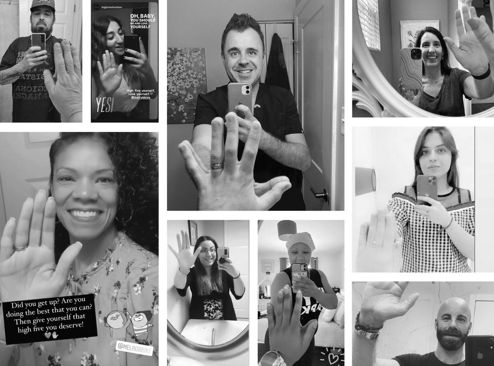
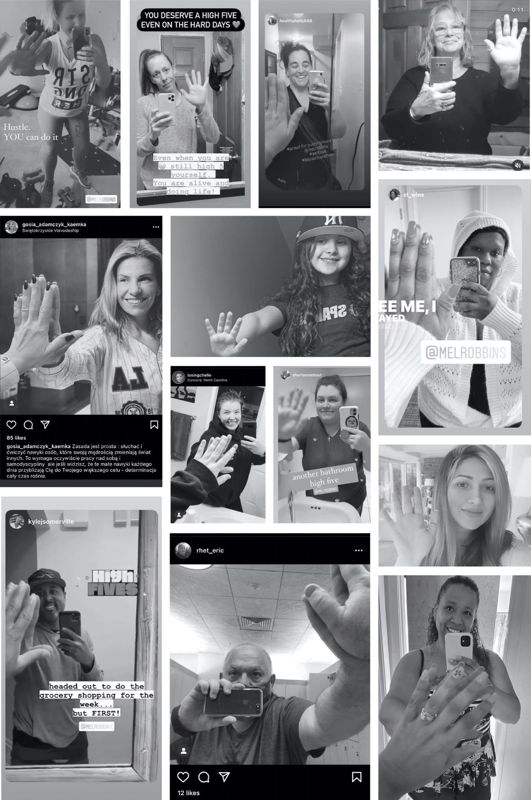
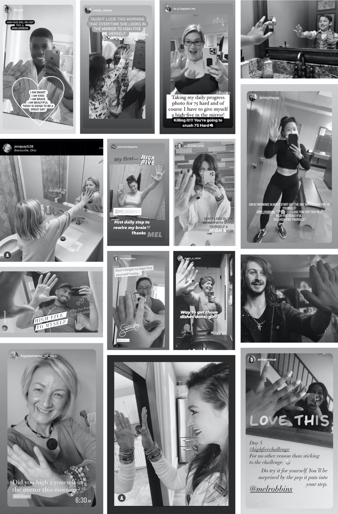
사진을 잠시만 들여다보세요. 시도하는 모든 사람 안에 에너지와 열정이 넘쳐요. 그중 한 장은 가정폭력 피해자 쉼터의 욕실에서 스스로에게 하이파이브하는 사람이에요. 어디에 있든, 무엇과 마주하든, 가진 게 적든 많든, 결국 나 자신은 온전히 곁에 있다는 걸 새삼 깨닫게 해주는 장면이에요. 하이파이브는 한 푼도 들지 않지만 주는 건 값을 매길 수 없어요: 확인받는 한순간이요. 아직 서 있고 아직 웃고 있으며 오늘 무슨 일이 생겨도 결국 내 편은 나라는 증거죠. 이 사진들을 보는 게 너무 좋았어요. 어쩌면 이 하이파이브 같은 소리가 그렇게 촌스럽지만은 않을지도 모른다는 생각이 들었으니까요. 그러다 문득 깨달았죠: 매일 하이파이브 하나가 필요한 게 나 혼만이 아닐지도 모른다고.
이건 중요한 내용이에요. 필기해 두셔도 좋아요.
그래서 늘 하던 대로, 무언가를 이해하고 싶으면 하는 짓을 했어요답을 파고들기 시작한 거죠. 대체 왜 이토록 단순한 것이 이렇게 강력하고 전염성이 강한 걸까요?
첫 번째 목적지: 온라인에서 하이파이브 사진으로 저를 태그했던 사람들에게 직접 연락했어요. 초기 대화들에서 우리 모두에게 일어나고 있던 정말 멋진 사실 하나가 확인됐죠: 스스로에게 하이파이브를 하는 순간, 자신에 대해 구차한 생각을 할 수 없어요.
직접 해보세요정말이에요.
거울을 보며 축하의 손을 들어 올리면 이런 생각을 할 수 없어요: 세상에, 나 뚱빠졌네. 난 패배자야. 난 끝내주게 형편없는 인간이야. 난 내 뱃살이 싫어. 불가능하죠. 거울에 손을 대면서 “내 목 때문에 미치겠어”를 소리 내어 말해 봤는데, 안 되는 거예요. 말이 나오면서 그냥 웃음이 터졌죠. 부정적인 생각이 불가능한 이유는 간단해요. 평생 동안 누군가에게 하이파이브를 건네는 일은 늘 긍정적인 경험과 연결돼 왔으니까요. 스스로에게 하이파이브하려고 손을 드는 순간, 잠재의식은 긍정 모드로 전환되고 머릿속 비판자를 잠재워버려요.
해야 할 일 목록이나 회사 이메일, 오늘 처리할 일을 걱정하면서 하이파이브하는 것도 불가능해요. 하이파이브는 ’지금, 바로 여기’를 확인시켜주는 동작이기 때문이에요. 현재로 확 끌어당기죠. 생각해 보세요. 힘이 쭉 빠진 하이파이브나 손바닥이 제대로 닿지 않는 하이파이브만큼 초라한 건 없어요. 제대로 하려면 동작과 의도에 집중해야 해요. 온전히 지금 이곳에 있어야 하죠. 자신에게 할 때도 똑같은 일이 일어나요.
그리고 양치질을 시작할 무렵이면 습관적으로 나를 납치하던 그 걱정발표를 제시간에 끝내고 엄마를 병원 진료까지 데려갈 수 있을까?는 손을 들어 올리는 행위 자체에 잠재워져요. 정신적 죽음의 소용돌이가 끝나고 초점이 시작되죠: 보고 있어. 믿고 있어. 여기 함께 있어. 잘할 수 있어.
하이파이브 습관은 단순한 동작이 아니라 ’나 자신에 대한 인정’이에요.
속옷 바지 차림이든, 남루한 로브든, 운동복이든, 알몸이든 상관없어요. 손바닥이 거울에 딱 닿는 순간, 보이고 들리고 인정받는다고 느껴요.
게다가 손이 거울에 닿는 순간 달라지는 건 기분만이 아니에요. 시선도 전환돼요. 오늘 어떤 큰 판을 벌이고 싶은지 생각하게 되죠. 지금은 거울 앞에 서서 해야 할 일 목록을 무념무상으로 헤치고 나가죠그래서 마음이 꺾여요. 신경이 온통 남과 다른 일에 쏠리니까요. 하이파이브를 실천하면 나를 위해 하고 싶은 일을 생각하게 돼요. 오늘 어떤 모습으로 임하고 싶은지? 어떤 사람이 되고 싶은지? 나를 위해 조금이라도 진전시켜야 할 개인 프로젝트는 무엇인지?
이렇게 의도적으로 돌아보는 순간은 생각보다 훨씬 강력해요. 하버드 비즈니스 스쿨의 최근 연구에 따르면, 잠시 일을 돌아보는 것만으로 업무 성과가 좋아지고, 효율이 높아지고, 동기 부여도 강해져요. 목표 달성에 대한 자신감부터 생산성까지 모든 것에 영향을 줘요. 단 한 번의 돌아봄으로 말이에요.
몇 달이 흐르고 하이파이브를 습관으로 만드는 이야기를 계속 올리자, 이 습관은 전 세계로 빠르게 퍼지기 시작했어요. 매일 사람들이 이 습관이 가져온 변화를 알려왔고 직장 동료, 자녀, 친구, 가족에게 가르치고 있다고 했죠. 기업들도 주목해서 팀을 상대로 강연해 달라고 요청하기 시작했어요.
지난 1년간 이 책에 담긴 연구 결과와 도구를 전 세계 기업 강연에서 거의 50만 명에게 소개했어요. 그리고 확신해요. 이 소박한 습관과 이 책의 마인드셋 도구가 여러분의 인생을 바꿀 거라고. ’나’를 바꾸니까요.
연구가 뒷받침해요.
하이파이브의 동기 부여 힘은 이미 잘 기록돼 있어요. 특히 어려운 과제 앞에 선 아이들을 동기 부여하는 최선의 방법을 연구하던 학자들이 하이파이브에 관해 발견한 사실을 듣으면 깜짝 놀랄 거예요. 한 연구에서 학령기 아이들은 세 그룹으로 나뉘어 어려운 과제를 수행했어요. 그런 다음 연구자들은 세 가지 형태의 격려 중 하나를 건넸죠. 아이들은 특성을 칭찬받거나(“정말 똑똑하네.”, “정말 재능이 있구나.”), 열심히 하고 있다고 알려주며 노력을 칭찬받거나(“정말 성실히 하고 있네!”), 아니면 단순히 하이파이브를 받았어요.
하이파이브가 단연 최고의 동기 부여자였어요. 이유는 이렇습니다: 똑똑하다, 재능 있다, 능숙하다는 말을 들은 아이들이 동기는 가장 낮고 재미도 가장 적게 느꼈어요. 노력을 칭찬받은 아이들은 더 즐거워했고 더 높은 수준의 끈기를 보였죠. 그런데 단순히 하이파이브를 받은 아이들은요? 자신과 자신의 노력에 대해 가장 긍정적으로 느꼈고 실수를 하고도 가장 오래 계속했어요(끈기요, 여러분!). 결과가 너무 분명해서 연구자들은 학술지 Frontiers in Psychology에 논문을 실을 때 제목을 “High Fives Motivate”(하이파이브는 동기를 부여한다)라고 붙였을 정도였죠.
연구자들은 하이파이브를 건네는 행위가 함께하는 축하라고 결론 내렸어요. 크게 웃으며 손을 들어 올리는 것, 이 두 가지가 진심 어린 자부심과 격려의 즉각적인 신호거든요. 하이파이브는 상대와 ‘함께’ 축하한다는 뜻이에요. 내 에너지를 상대에게 전달하는 거죠. 수동적인 말로 하는 칭찬과는 전혀 달라요. 하이파이브를 받으면 사람으로서 보이고 인정받아요. 능력 때문도, 노력 때문도, 성적 때문도 아니에요. 그냥 나 자신이기만 해도 칭찬받고 알아봐지는 거죠. 그리고 제가 말하려는 건 이겁니다. 거울 속 자신에게 하이파이브를 건넬 수 있다면 그와 똑같은 힘을 쓸 수 있어요. 한 가지 더 생각할 점: 아무 말도 할 필요가 없어요. 하이파이브 그 자체가 축하와 믿음을 전하니까요.
“나를 사랑해” 같은 만트라와 문장을 반복하는 것도 강력할 수 있어요. 하지만 연구가 증명하길, 말하는 만트라를 실제로 ‘믿지’ 않으면 뇌는 그것을 거절할 이유를 찾아낸답니다. (7장에서 뇌가 받아들이는 긍정 문장, ’의미 있는 만트라’를 만드는 법을 배울 거예요.) 하이파이브가 놀라운 것도 같은 이유예요. 뇌는 하이파이브를 늘 상대를 믿는 행위와 연결해 왔기에 그것을 거절하지 않아요. 게다가 하이파이브는 수동적인 말로 하는 칭찬이 아니에요. 스스로에게 하이파이브를 하면 뇌에 증명하는 거예요. “나는 스스로를 응원하는 부류의 사람이야.” 자기 편에 서서 자신과 함께하고, 자신을 인정하고, 자신을 믿는 신체적 행동인 셈이죠.
매일 이 습관을 실천하기 시작한 브리짓이 이렇게 말했죠. “머릿속으로 긍정적인 말을 하는 것과 그 감정을 행동으로 옮기는 건 별개 문제더라고요! 행동이 의미를 더해주고 진짜로 나 자신과 내 가치를 믿도록 힘을 보태줘요. 흔히 말하듯, 행동은 말보다 더 크게 말해주니까요!”
하이파이브, 신뢰, 그리고 챔피언 만들기.
하이파이브는 삶에서 이길 수 있는 능력에 대한 자신감, 즉 나에 대한 신뢰를 쌓는 데도 도움이 돼요. UC 버클리 연구진은 NBA 선수들의 성공 습관을 연구했어요. 시즌 초반에 선수들이 서로 하이파이브나 주먹 인사 같은 격려의 신호를 얼마나 자주 주고받는지 기록했죠. 그리고 시즌 초 경기에서의 하이파이브 횟수를 근거로, 시즌이 끝났을 때 최고 성적을 낼 팀들을 예측했어요.
NBA 최고의 팀들챔피언십에 올라간 팀들은 시즌 초반에 가장 많이 하이파이브한 팀들이었어요. 왜 하이파이브는 좋은 결과를 그토록 정확히 예측하는 걸까요? 결국 신뢰로 귀결됩니다. 끊임없이 하이파이브하던 팀들은 서로를 계속 들어올려 줬어요. 신체 접촉이 이렇게 말해주죠. 네 편이야. 가자, 우리 할 수 있어. 망한 플레이를 털어버리게 해줘요. 기분을 북돋워요. 자신감을 전달하고 아직 이길 수 있다는 걸 상기시켜줘요.
하이파이브하던 팀들은 서로를, 그리고 팀으로서 이길 수 있는 능력을 믿었어요. 서로를 신뢰하는 방식으로 경기했죠. 그들이 공유한 말 없는 힘이 그들을 멈출 수 없는 팀으로 만들었어요. 반대로 NBA 최악의 팀들은 거의 몸을 접촉하지 않았어요. 끔찍한 바디 랭귀지. 하이파이브는 없음. 제로. 그리고 그대로 드러났죠: 이기적인 비효율적인 플레이를 일삼았고 성적에도 그대로 나타났어요.
팀에 좋은 선수들이 있어도 그것만으로는 부족해요. 연습하는 매 순간, 시즌 내내, 챔피언십 우승의 그 순간까지 하이파이브를 주고받을 때 비로소 축하와 격려의 문화가 만들어져요. 사심 없이 전력을 다하게 되죠. 바로 그 기분이 필요한 거예요. 그리고 그 파트너십은 자신과도 만들 수 있어요.
팀으로 비즈니스 목표 부수기.
이 하이파이브는 스포츠만의 것이 아니에요. 우리는 일하는 자리에서도 눈여겨봐 주고, 지지해 주고, 함께 기뻐해 줄 사람이 필요하거든요. 구글의 연구를 한번 볼까요? 구글은 최고의 팀을 만드는 게 무엇인지 밝히려고 “아리스토텔레스 프로젝트(Project Aristotle)”라는 3년짜리 연구를 진행했어요. 결과는 언제나 같았죠. 일이든 삶이든 성과가 뛰어난 팀은 모든 팀원이 인정받고 있다고 느끼고, 자기 말이 들린다고 느끼고, 동료들을 믿을 수 있는 팀이었어요. 최고의 팀에는 “심리적 안전감(psychological safety)”이 있죠. 내 편이 있어 주고 나를 응원해 줄 거라는 느낌은 사람을 더 회복력 있고 낙천적으로 만들어요. 그리고 신뢰와 존중의 분위기를 만들어 내고요.
한 겹 더 들어가 보면, 연구는 또 하나를 말해 줘요. 일이 즐겁고 의미 있게 느껴지느냐를 가르는 가장 큰 변수는 생산물의 질도, 휴가 일수도, 아니면 월급 액수도 아니라는 것. 직장에서의 행복을 여는 열쇠는 바로 나를 아끼고 관심 가져 주는 상사가 있느냐 없느냐입니다. 하이파이브 매니저는 내 편이 되어 주는, 서로 믿을 수 있는 사람이에요. 내가 그 사람을 믿고 그 사람도 나를 믿죠. 출근해서 들어설 때, 자신이 여기서 소중한 존재라고 느껴지길 바라죠. 눈여겨봐 주고 고마워해 주는 사람이 있으니까요.
거울 앞 하이파이브는 바로 그 메시지를 전해 줘요. 자기 자신에게요! 직장에서 좋은 하루란 고마움을 받는 것이라면, 매일 아침 스스로에게 고마워하는 것으로 시작하는 게 말이 안 되겠어요? 물론 되죠!
이 정도면 납득했나요? 그럼 ‘이것’도 읽어 보세요.
자, 여기까지의 연구가 하이파이브가 왜 그렇게 동기 부여가 되고 힘이 나는지 설명해 주지만 이야기는 여기서 끝나지 않아요. 속옷 차림으로 매일 아침 거울 앞에서 스스로에게 하이파이브하라고 해 놓고 인생이 바뀔 거라고 말할 생각은 없어요. 정말로 변화를 만든다는 걸 확실히 아는 게 아니라면요. 하이파이브가 뇌를 구조적인 수준에서 어떻게 바꾸는지 이해하고 싶었어요. 제가 바로 그걸 경험하고 있었거든요. 시간이 지나면서 제 마음은 버릇처럼 제 ‘결점’만 집어내기를 멈췄어요. 그저 있는 그대로의 저를 받아들일 수 있게 된 거죠.
답을 찾으려고 저는 “뉴로빅스(neurobics)”라는 연구 분야부터 살펴봤어요. 듀크대의 신경생물학자이자 연구자인 로런스 카츠 박사가 발견한 뉴로빅스 중재법은 뇌에 새로운 회로와 연결을 만드는 가장 쉬우면서도 가장 강력한 방법 가운데 하나예요. 뉴로빅 운동에서는 익숙한 활동(거울 속 나를 바라보기 같은)을 두 가지와 짝지어요. (1) 감각을 자극하는 예상 밖의 무언가(그 거울에 하이파이브하기 같은 것), 그리고 (2) 느끼고 싶은 감정(축하하는 마음 같은 것).
뉴로빅스 운동은 뇌를 번쩍 집중 상태로 만들어요. 이 행동이 일종의 “뇌 비료” 역할을 해서 뇌가 새로운 습관을 더 빨리 배우게 하죠. 이렇게 고조된 상태 속에서 뇌에는 새로운 신경 연결이 만들어지는데, 원래는 그저 익숙한 동작이던 것(다른 사람과 하이파이브하기)이 예상 밖의 방식으로 이루어지면(스스로에게 하이파이브하기) 뇌가 경계 태세에 들어갑니다. 바로 그 동작과 느끼고 싶은 감정이 연결되는 거죠.
예를 들어, 연구들에 따르면 평소 쓰지 않는 손으로 양치를 하면서 어떤 생각을 반복하면 뇌가 그 메시지에 남다른 집중을 하게 된대요. 평소 쓰지 않는 손을 쓰면 뇌가 집중 모드에 들어가서, 일어나는 모든 일에 시선을 고정시켜요. 양치하면서 하는 말까지 포함해서요. 이런 노력 덕분에 그 말과 그 말이 불러일으키는 감정을 정확히 기억하게 돼요. 새로운 신체 습관(잘못된 손으로 양치하기)과 짝지었기 때문이에요.
하이파이브도 비슷하게 작동해요. 거울 속 나에게 하이파이브하면(평소 하지 않는 일이니까) 뇌가 주목합니다. 하이파이브와 수십 년 동안 쌓인 긍정적 연상 덕분에, 뇌는 그 긍정적인 연상을 ‘나의 모습’ 이미지와 결합하기 시작하죠. 우리 뇌는 이런 지름길에 기대는 걸 좋아해요. 그래서 하이파이브 습관은 나를 바라보며 늘어지던 자기의심과 자기혐오의 패턴을 덮어버리고 자기사랑과 자기수용의 느낌으로 바꾸는 가장 빠르고 쉬운 방법인 거예요.
MIT, 하이파이브, 난독증.
곧 깨달았어요. 뉴로빅스의 힘은 이미 우리 아들 오클리에게서 본 적이 있다는 걸요. 오클리가 4학년 때, 그가 난독증(dyslexia)과 쓰기 장애(dysgraphia), 즉 언어 기반 학습 차이가 있다는 걸 알게 됐어요. 그래서 언어 학습을 전문으로 하는 캐럴 스쿨이라는 학교에 보냈죠. 과외 수업에 참관한 적이 있었는데, 그 자리에서 선생님이 말해 줬어요. 이 학교가 MIT 신경과학 연구실과 진행 중인 연구 프로그램에 함께하고 있다는 거였죠. 난독증 학생들과 하던 중재는 새로운 신경 회로 발달을 자극하도록 설계되어 있었어요.
난독증이 어려운 이유 중 하나는, 뇌의 한쪽 면을 다른 쪽 면과 이어 주는 신경 회로가 아직 많이 형성되지 않았기 때문이에요. 말 그대로, 그저 회색질의 문제인 거죠. 학교는 뉴로빅스 중재로 새로운 신경 회로와 정신적 유연성을 자극했어요. 저는 이걸 차 점프 시동에 빗대어 생각해요. 뇌 안에는 배선이 다 깔려 있어요. 뉴로빅 스파크만 조금 튀면 불이 붙는 거죠.
학교에는 작은 전구들이 가득한 거대한 판이 있었고 가운데에 선이 하나 그여 있었어요. 전구가 켜질 때마다 오클리는 그걸 터치하도록 지시받았죠. 그런데 함정이 있었어요. 오른쪽의 불빛은 왼손으로 터치해야 했고 왼쪽의 불빛은 오른손으로 터치해야 했어요. 오른쪽에 있는 걸 터치해라는 생각과 팔을 반대편으로 움직이는 신체 동작을 결합하면, 정신적 민첩성이 단련돼요. 그건 말 그대로 오클리의 뇌 구조를 바꿔서 새로운 신경 회로를 만들었어요. 눈 쌓인 진입로를 밀어 내는 것처럼요.
하이파이브 습관도 같은 원리예요. 방금 배우셨듯이, 낯선 방식으로 팔을 움직이는 것(거울 속 나에게 하이파이브하기)을 결합하면 남다른 일을 하는 셈이라 뇌가 집중할 수밖에 없어요. 게다가 우리는 하이파이브를 주고받으며 평생 긍정적 연상을 쌓아왔죠. 잠재의식은 하이파이브에 축하와 믿음, 가능성을 연결하도록 프로그래밍되어 있습니다. 그래서 거울 속 나의 모습에게 손을 들어 올리면, 잠재의식이 말해요. “나는 축하받을 가치가 있고 믿음을 받을 가치가 있는 사람이야. 뭐든 해낼 수 있어.”
이 행동을 반복할수록 뇌는 자신감과 축하를 거울 속 나의 모습과 연결시켜요. 나에 대한 기본 생각이 점점 부정에서 긍정으로 뒤집히죠. 동시에 잠재의식을 재프로그래밍해서, 거울 속 나를 비난하던 버릇을 멈추고 사랑하기 시작하게 만드는 거예요.
자신에게 하는 그 이야기, 한번 들여다봐요.
이쯤 되니 거울 앞 하이파이브가 새로운 신경 회로를 만들어서 제 자존감과 자기 가치, 자신감을 단단하게 해 준다는 건 확신했지만 그래도 확인하고 싶었어요. 그래서 뇌가 새로운 정보와 습관을 배우는 방법 분야의 세계적 권위자인 신경과학자 주디 윌리스 박사에게 전화를 걸었죠. 하이파이브 습관이 제 인생에 얼마나 깊은 변화를 가져왔는지, 그리고 이 책을 조사하며 이야기를 나눈 수백 명의 사람들에게도 효과가 있었다는 걸 말씀드렸어요.
박사는 뇌가 어떻게 바뀌는지 설명해 주셨어요. (그리고 그 획기적인 통찰은 책 곳곳에서 더 만나게 될 거예요. 특히 13장에서는 신경계가 인지 기능에 어떤 영향을 주는지, 미주신경을 어떻게 내 편으로 만드는지 다루니까 기대해도 좋아요.) 박사는 이 간단한 실천으로 저에게 확실히 더 긍정적인 새로운 자동 행동과 믿음, 그리고 새로운 신경 회로가 만들어졌다는 데 동의해 주셨어요. 제가 할 수 있었다면, 여러분도 할 수 있어요.
하이파이브 습관에 대한 이 검증이 굉장히 중요해요. 4~6장에서 배우겠지만 반복해서 생각하는 것은 무엇이든 잠재의식의 기본 믿음이 되기 때문이에요. 그동안 여러분의 기본값은 끔찍한 것들이었을 거예요. 난 부족해. 나한테는 아무것도 안 풀려. 난 늘 모든 걸 망쳐. 왜 굳이 해. 세상에, 난 진짜 못생겼어. 제 기본값은(곧 알게 되겠지만) 모든 게 내 잘못이고 누군가는 항상 나한테 화가 났다는 거였어요. 이제 여러분은 하이파이브 습관으로 그 기본 믿음을 다시 프로그래밍하는 법을 배우게 됩니다. 무엇보다 자신에게 다정해지는 법을 배워야 하니까요.
다정하기. 다정하기. 다정하기.
마지막 연구 하나만 더 소개할게요. 삶의 질에 의미 있는 영향을 줄 수 있는 모든 변화를 연구자들이 조사해 보면, 가장 중요한 변화 단 하나는 자신에게 다정해지기를 습관으로 만드는 거였어요.
영국 허트퍼드셔 대학교 연구진이 행복과 만족을 만드는 요인을 연구한 적이 있어요. 운동부터 새로운 것 시도하기, 관계 가꾸기, 다른 사람에게 친절하기, 의미를 느끼게 하는 일 하기, 목표를 위해 노력하기까지, 인생을 개선할 수 있는 행동과 습관 전부를 살펴봤죠. 뭐든요.
그 연구의 결론은 이랬어요. 얼마나 행복하고 만족할 수 있는지를 가장 정확히 예측하는 건 자기수용(self-acceptance)이었다는 것. 즉, 자신에게 얼마나 다정했는지, 자신을 얼마나 응원했는지가 행복에 직접적으로, 그리고 비례해서 영향을 미친다는 거죠. 자신에게 다정해지는 것만으로 인생을 완전히 바꿀 힘이 있는데도, 정작 우리가 가장 덜 하는 게 자기수용이에요. 케일 스무디를 마시고, 헬스장에 가고, 더 일찍 일어나고, 글루텐을 끊고, 명상하면서도 그 내내 “아직도 부족해. 그것도 제대로 못 해.”라고 자책하고 있으니까요… 그래서 정말 중요한 건 자신에게 다정해지는 거예요.
그런데 왜 안 할까요?
아무도 배운 적이 없어서예요. 딱 그것뿐이죠. 우리 부모님은 자신에게 엄했고 그래서 우리에게도 엄했어요. 거울 앞에서 자신을 나무라던 엄마, 아니면 자신을 위한 시간을 가질 때마다 죄책감을 느끼던 엄마 밑에서 자랐을 수도 있어요. 감정을 표현하지 않고 벌어들인 돈이나 밖에서 이룬 성공으로 자기 가치를 재던 아빠였을 수도 있고요.
자신에게 엄격하다면, 어린 시절 받은 “엄한 사랑(tough love)” 탓을 하세요. ‘꾹 참아라.’ ‘이제 컸으니까 버텨라.’ ‘눈물 닦아라.’ ‘우리 아빠도 나를 때렸지만 난 잘 컸어.’ 솔직히 마지막 말은 정말 화가 나요. 세상에서 제일 최악인 부모의 변명은 “나도 그렇게 당했는데 난 괜찮아”예요. 저한테는 도무지 말이 안 되죠. 어린 시절 고통을 겪었다면, 자녀에게는 그 일이 절대 일어나지 않도록 온 힘을 다해야 해요. 하지만 현실은 그렇지 않죠. 부모는 자신이 당한 일을 그대로 반복했을 뿐이니까요.
그래서 자신에게 그토록 엄격한 거예요. 어린 시절의 뇌는 주변의 모든 것을 흡수하니까요. 아기 때와 어린 시절에 익힌 몇 가지 관계 패턴을 무의식적으로 반복하려는 충동도 그래서 생긴 거예요.
다행히도, 패턴은 깨라고 있는 거예요.
이 세대를 거쳐 이어지는 고리를 끊을 때가 됐어요. 자신에게 엄격한 건 느낌만 괴로운 게 아니에요. 연구에 따르면 자신에게 엄격할 때 원하던 것과 정반대 효과가 나타나거든요. 동기를 부여하지 않고 성취를 돕지도 않아요. 그저 여러분을 잠재워 버리죠. 패배감과 낙담만 안겨요. 여러분이 제자리에 머물러 있는 이유이기도 해요. 행복하고 충만한 인생을 만들려면 자신에게 더 다정해져야 해요. 그 시작은 매일 자신을 향한 다정한 행동을 실천하는 겁니다.
긍정적 사고는 답이 아니에요.
긍정적 사고만으로 인생이 바뀐다면, 여러분은 벌써 다 써봤을 거예요. 계속 들어가기 전에 이것만은 크고 분명하게 말하고 싶어요. 하이파이브 습관은 가짜 칭찬이나 억지 긍정적 사고가 아니라는 것. 이 책은 나 자신과 맺은 파괴적이고 도움이 안 되는 관계에 갇히게 만드는 기본 프로그래밍을 바꾸는 책입니다.
생각만으로 새로운 인생에 갈 수 없어요. 소원을 빈다고 될 것도 아니고요. 새로운 습관을 연습해야 해요. 인생이 달라지길 원한다면, 달리 행동하고 다르게 결정하기 시작해야 하죠. 긍정적인 생각이 기분을 북돋아 줄 수는 있어도, 아무리 삶에 긍정을 부으려 애써도 여전히 제자리인 사람들을 저는 많이 알아요.
우리가 마주하는 장애물은 실재하고 그중 일부는 극단적일 만큼 혹독하니까요.
끔찍한 상황을 두고 스스로에게 “최고야”라고 말할 수는 없어요. 그건 “독성 낙관주의(toxic positivity)”이고 이 책 어디에도 그런 건 없어요. 심각한 문제, 유년기 트라우마, 구조적 불평등, 중독, 인종차별, 갖가지 차별, 만성 통증, 학대, 그리고 사람들이 평생 동안 마주하는 그 외 온갖 혹독한 경험을 덧칠해서 덮어버릴 수는 없죠. 저는 리걸 에이드 소사이어티(Legal Aid Society)에서 형사 전문 변호사로 몇 년을 일하면서 빈곤과 구조적 차별이 사람들을 원래 걸으려던 길에서 밀어 내는 걸 직접 봤어요.
삶은 가끔 잔혹하고 불공평해요. 여러분의 문제가 그냥 짜증스러운 수준이든, 영혼과 정신을 짓밟는 수준이든, 그건 실재하고 여러분 앞을 가로막아요. 당신의 신발을 신어 봐야 그 기분을 아는 사람은 당신뿐이죠. 그래서 자신에게 다정해지는 걸 연습하고 필요한 사랑과 지지, 축하를 스스로에게 주어야 하는 거예요. 이 문제들을 마주하고 인생을 바꿀 힘은 여러분 안에 있어요. 이미 일어난 일은 바꿀 수 없지만 다음에 일어날 일은 선택할 수 있죠. 진짜 힘은 바로 그곳에 있어요.
과거가 아무리 참혹했더라도 다른 미래를 만들 수 있어요. 습관이 자기파괴적이었든, 실수가 엄청난 대가를 치렀든 상관없어요. 다음에 일어날 일은 바꿀 수 있으니까요. 수치심의 구덩이가 아무리 깊어도 거기서 기어 나와 다시 시작할 수 있다는 걸 기억하세요.
스스로에게 하이파이브한다고 이미 일어난 일이나 지금 당장 직면한 아주 현실적인 어려움이 바뀌지는 않아요. 바뀌는 건 ‘여러분’이에요. 인생의 상황을 마주할 마음의 준비를 더 단단하게 만들어 주죠. 쉼터에서 눈을 뜨는 아침이든, 이별 후 첫날이든, 해고된 다음 날이든, 아니면 젠처럼 5번째 항암 치료를 시작하는 날 아침이든요:
젠은 말했죠. “암을 넘기고 항암 치료를 견디는 싸움에서 제대로 된 마음가짐을 유지하는 게 99%예요. 저는 늘 남들을 걱정하고 다른 사람들을 끌어올리고 격려하다 보니, 정작 저를 격려하는 건 가끔 잊곤 해요. 그래서 좋아요, 그냥 거울을 보고 스스로에게 하이파이브하면서 이렇게 말 걸어요. 넌 할 수 있어. 이번 항암 치료는 저를 좀 후려치고 있네요. 그래서 스스로에게 하이파이브하면서 저를 격려해요. 제 치어리더가 되는 거죠. 그렇게 제 인생을 통제하고 앞으로 나아가는 긍정의 빛이 되는 거예요.”
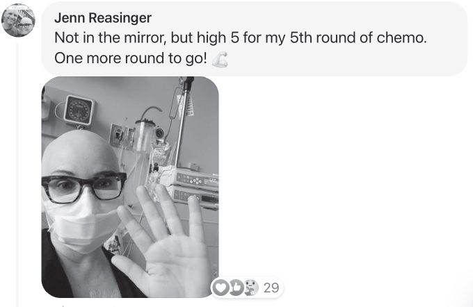
아직도 확신이 안 서나요? 그래도 하세요.
이쯤이면 같은 얘기를 몇 번이고 하는 것 같지만 그래서 다시 거울로 돌아오는 거예요. 매일 아침 자신을 마주하고 ‘나 자신’을 축하하며 손을 드는 걸 습관으로 만드는 것, 그게 나 자신과 새로운 관계를 맺는 첫걸음이에요. 그건 여러분이 맺은 관계 중 가장 중요한 관계죠. 다른 모든 관계와 내리는 결정들을 만들어 내는 관계입니다. 당신을 끌어내리는 자기의심과 자기비판을, 당신을 끌어올리는 자기수용과 자기사랑으로 바꾸면, 인생은 달라져요.
자, 이번에는 ‘여러분’이 이걸 습관으로 만들어 보는 건 어떨까요?
3장
몇 가지 궁금한 게 있어서요…
Q: 정확히 어떻게 시작하면 돼요?
아주 간단해요.
매일 아침, 휴대폰을 보기 전에, 세상이 밀려들어오기 전에, 거울 속 나와 함께하는 잠깐의 시간을 가지세요. 그 욕실 문을 나서는 순간부터 거의 모든 순간은 다른 사람들에 대한 게 되니까요. 휴대폰에, 회사에서 일어나는 일에, 아이들이 필요한 것들에 마음이 뺏길 거예요. 하이파이브 습관은 매일 아침 나를 위한 순간이에요. 간단하지만 강력한 두 단계로 이루어져요:
- 거울 앞에 서서, 잠깐만 나 자신과 함께 있어요.
외모에 초점을 맞추지 마세요. 더 깊이 들어가 보세요. 그 몸속에 있는 사람을 보는 거예요. 피부 아래의 정신, 그 얼굴 뒤에 있는 영혼을요.
- 준비된 것 같으면, 거울 속 나에게 하이파이브하세요.
마음이 조용해지는 걸 느껴 보세요. 에너지가 솟는 느낌이 들 수도 있어요. 안도감이 올 수도 있죠. 다 괜찮아질 거야. 이런 생각이 들 수도 있고요. 해낼 수 있어. 강력한 순간이에요. 말 한마디 없이 자신에게 이렇게 말하고 있는 거예요. 사랑해. 알고 있어. 믿고 있어. 가 보자. 서두르지 마세요. 그 순간을 마음껏 즐기세요. 이 순간은 여러분을 위한 거니까요.
Q: 왜 아침에 맨 먼저 해야 할까요?
이걸 하루의 시작으로 만들어야 하는 데는 두 가지 이유가 있어요.
- 하루 종일 생산성과 어떤 모습으로 임하는지에 영향을 줘요.
아침에 맨 먼저 자기 자신에게 하이파이브를 하면 그날의 분위기가 긍정적으로 깔려요. 게다가 연구에 따르면 아침 기분은 남은 하루 내내 생산성에 영향을 미친다고 해요. 달라지는 모습에 스스로 놀랄지도 몰라요. 캐럴라인은 하이파이브를 하고 나서 온종일 “묘하게 의욕이 넘쳤다”는 사실에 깜짝 놀랐다고 말했어요.
혹은 글로리아처럼, 하이파이브가 온종일 함께 머무는 전염성 있는 에너지를 만들어준다는 걸 발견할 수도 있어요. 그녀는 이렇게 썼죠. “고등학교 때 치어리더였거든요. 예전 응원 구호를 외치더니 바닥에 드러누워 미친 사람처럼 웃어버렸어요. 저, 76살 어린이라구요! 기분 짱이에요!”
니키도 똑같았어요. “방금 거울 앞을 지나다가 그냥 하이파이브 해버렸어요! 좀 바보 같다는 느낌도 들었는데 이내 소리 내어 웃고 말았죠. ‘잘 가, 나 자신!’ 하고 말하고는 제 갈 길 갔어요. 이 기분 뭐야아무것도 못 막는 것 같아요. 나 지금 출발이에요오오오!!! 이제는 ‘너도 같이 갈래?’ 이런 느낌이랄까.”
긍정적인 상태로 하루를 시작하면 행동을 옮길 가능성이 커져요. 그리고 행동이 비밀이에요. 생각만으로 새로운 삶에 도달할 수는 없어요. 새 삶을 만들려면 직접 걸음을 내디뎌야 하죠. 요컨대 하이파이브는 내 인생을 주도하기 위한 움직임을 일으켜주는 거예요.
- 깨어나는 순간부터 내 필요를 먼저 챙기는 법을 가르쳐 줘요.
니나가 들려준 통찰이 정말 마음에 들어요. “온종일 다른 사람들은 응원하면서 정작 나를 응원할 시간은 못 내고 있었다니, 어떻게 이런 일이 있을까? 실제로 방금 친구한테도 이렇게 말해줬어요. ‘당신은 혼자서도 충분한 사람이에요!!! 아름답고, 유일하고, 창조적이에요스스로를 사랑하고 껴안는 법을 배우세요!’ 그런데… 세상에… 바로 그게 제가, 제가, 제가, 저제가 듣고 싶었던 말이었어요! 그 말을 하다가 깨달았죠. 나는 늘 남을 먼저 세워왔다는 걸.”
일어나자마자 소셜 미디어나 이메일부터 확인하거나 남부터 챙기는 대신, 잠시 멈춰서 똑같은 사랑과 지지와 관심을 자신에게 보내보세요. 니나 말대로요. “이제 거울 앞으로 가서 스스로에게 격려의 말을 건네고 이토록 멋진 나에게 하이파이브를 해줄 시간이에요.”
Q: 거울을 꼭 만져야 하나요? 얼룩지는 게 싫은데요!
원하는 대로 하세요. 거울을 만져도 되고 안 만져도 돼요. 하이파이브든 로우파이브든 좋아요. 손가락을 벌어도 되고 모아도 돼요. 어떻게 하느냐는 중요하지 않아요. 하기만 하면 돼요.
Q: 왜 하필 욕실에서 할까요?
욕실은 홀로 있으면서 자신과 마주하게 되는 몇 안 되는 장소예요. 헬스장이나 직장, 학교에서라면 남들 눈에 신경 쓰여 차마 시도하기 어려울 테니까요. 게다가 매일 아침 이미 거울 앞에 서는 루틴이 있으니, 거기에 하이파이브만 얹으면 돼요. 연구에 따르면 새로운 습관(하이파이브)을 기존 습관(양치질)과 짝지어 “스태킹”하면 습관을 실천할 가능성이 훨씬 높아진대요.
제가 아끼는 마인드풀니스 요령 하나가 있는데, 마음속으로 “내 발이 서 있는 곳에 있기”예요. 머리를 손질하고, 수염을 밀고, 화장을 하는 동안 잠재의식적인 자동 조종 모드로 흘러가지 마세요. 잠시 멈추고 온전히 자신과 함께 있어 보세요. 욕실 거울을 향해 의도를 담아 바라보는 것만으로도 의미가 있어요. 자신을 알아보고 인정하고… 사랑하는 친밀한 순간이 될 수 있죠. 하루 중 유일하게 내 강함과 아름다움과 멋짐을 알아주는 기회가 될 수도 있고요. 하지만 지금까지는 거의 그렇지 않았어요이제부터는 달라집니다.
Q: 꼭 거울에 해야 하나요? 그냥 공중에서 손뼉을 마주 붙이면 안 되나요?
그건 하이파이브가 아니에요. 그건 어색한 박수죠.
거울은 필수예요! 과학이 이유를 설명해 줘요. 하이파이브에 대해 뇌가 품고 있는 긍정적 연상(너를 믿어!)을 거울에 비친 자신과 하나로 융합하는 거예요. 이 습관은 자신과의 아름다운 새 동반 관계의 시작입니다. 바쁜 삶 속에서 자신의 일부를 잃어버렸을 거예요. 저야말로 확실히 그랬고요. 아침 하이파이브는 나 자신과, 내 필요와, 목표와, 꿈과, 주변의 더 큰 힘들과 더 단단히 이어지는 가장 빠른 길이에요.
Q: 왜 ’하이파이브 습관’이라 부르나요?
습관은 그냥 “패턴”을 멋있게 부르는 말이에요. 매일 실천하는 작고 단순한 행동으로 만들면 습관은 배우기 쉬워요. 하이파이브는 기분이 워낙 좋아서 기억하고 반복하기 쉬운 습관이라는 걸 금방 알게 될 거예요.
’아침 하이파이브’가 아니라 습관이라 부르는 건, 반복해야 습관이 제2의 천성이 되기 때문이에요. 지금 여러분은 자기 사랑과 축하를 받아마땅한 기분이 들 때까지 기다리는 실수를 저지르고 있어요. 습관으로 만들면서 그걸 바꿔봅시다.
실제로 도미니크처럼 금세 제2의 천성이 됩니다. 도미니크는 이렇게 말했죠. “새벽에 강을 배우러 일어났는데, 거울 옆을 지나다 멈춰서 하이파이브 하고는 다시 잠들었어요. 하이파이브 습관은 벌써 내 삶의 일부가 됐네요. 반쯤 잠든 상태로도!” 하이파이브를 할수록 습관 그 자체를 사랑하게 되는데, 그건 다시 자신을 사랑하는 법을 배우는 과정 자체를 사랑하고 있다는 뜻이기도 해요!
Q: 누구에게나 효과가 있나요?
물론이죠.
하지만 직접 해야 해요. 이틀 하다가 “별거 아니더라”라고 모두에게 알려버리면 효과가 없어요. 모든 습관에는 반복이 필요해요(위에서 제가 길게 토로한 바 있죠). 습관은 처음에 어려울 수 있어요. 아직 몸에 익지 않았으니까요. 몸에 붙기 전에는 포기하고 싶어질 거예요. 변화는 단순하지만 결코 쉽지만은 않아요. 그래도 매일 아침 거울 앞에서 연습하겠다고 스스로를 몰아붙이면 해낼 수 있어요.
리사와 딸은 바로 효과를 느꼈어요. “오늘 아홉 살 딸아이와 함께 시작했어요. 딸이 기분이 정말 좋아졌다고 하더라고요. 입 귀까지 활짝 웃고 있었죠. 이렇게 단순한 행동에서 이렇게 많은 긍정 에너지가 나온다는 게 너무 좋아요!” 행동을 거듭할수록 더 긍정적인 삶을 만들 자신감이 쌓여요.
Q: 다른 사람과 하이파이브하면 안 되나요?
이미 다른 사람들과는 하이파이브를 하고 있잖아요.
여러분은 너무 많은 시간을 다른 모든 것과 모두를 보는 데 써요. 그들이 원하는 것, 그들이 필요로 하는 것, 그들이 기대하는 것을 빨아들이면서 말이죠. 그래서 목록의 맨 끝이 여러분인 거예요. 그리고 그래서 주변 사람들의 시선에 맞추려고 외모와 표정과 반응을 세심하게 관리하는 거고요. 다른 사람들이 자신을 어떻게 보느냐에 따라 자기 가치와 자존감이 비춰진다고 믿어요. 그들이 나를 좋아해 주고, 나를 똑똑하고, 가치 있고, 괜찮은 사람이라고 여겨줄 때에만, 그제야 나도 똑똑하고, 가치 있고, 괜찮은 사람이라고 느끼는 거죠.
남의 승인 속에서 내 가치를 찾는 건 잘못된 거울을 보는 거예요. 스스로를 좋아하지 않으면 소셜 미디어에서 백만 개의 좋아요를 받아도 아무 의미가 없어요. 초점을 뒤집으세요. 외부의 검증좋아요, 팔로우, 조회 수, 칭찬을 구하는 대신, 살아 있고 오늘을 붙잡으려 여기 서 있다는 이유만으로 그 검증을 스스로에게 건네주는 거예요.
Q: 감정이 이렇게까지 격해지는 게 스스로 놀라워요. 정상인가요?
네. 정말, 정말 정상이에요. 실제로 해본 사람 대부분이 올라오는 감정의 크기에 놀라곤 해요. 다음 사연들에 공감할지도 몰라요.
앨리사의 말이에요. “어제 거울 앞에서 하이파이브를 했어요. 아무 일도 없겠지 싶었는데 갑자기 울음이 터졌죠. 내 영혼은 그걸 정말 오래 기다렸나 봐요. #이게필요했어”
웬디는 이 습관을 시작한 뒤 처음엔 기진맥진한 느낌이 들었다고 했어요. 그날 밤 평소보다 일찍 침대에 누웠는데 감정에 압도됐대요. 그런데 다음 날 아침, 활기차게 깨어나더니 미루고 미루던 일들을 갑자기 쏟아내듯 해냈죠. 그녀 말이에요. “무언가 막힌 게 풀린 것 같아요.” 이런 일이 여러분에게도 생겨도 정상이에요.
때로는 느껴지는 감정 해소가 아주 긍정적일 수도 있어요. 마이클은 “거울 앞에서 하이파이브를 했는데 끝내줬어요… 제 얼굴을 붉게 만들다니!”라고 했고 지넷은 하이파이브를 하고 나면 하늘로 뛰어오를 수밖에 없다고 말했어요. 어떤 반응이든, 그 감정을 느끼도록 내버려 두세요.
Q: 이렇게 단순한데 왜 효과가 있을까요?
이 습관의 천재성과 힘은 바로 단순함 덕분이에요.
들리는 대로라면 세상에서 제일 한심한 짓이라고 생각하기 쉬워요. 하지만 비밀은 바로 거기 있어요. 단순하니까 하게 된다는 거죠. 도구는 사용할 때만 효력이 발휘돼요. 행동 변화는 행동을 반복할 때만 일어나요. 새 습관을 만들려면 루틴에 얹기 쉬워야 한다고 연구들은 말해요. 하기 쉽고 기분도 정말 좋으니, 매일 하다 보면 챌린지를 끝까지 해내는 자신이라는 걸 스스로 증명하게 되고 그게 자신감을 만들어요.
Q: 왜 당신을 믿어야 하죠?
믿을 필요 없어요. 저는 여러분이 자신을 믿는 법을 가르치려는 것뿐이에요. 저를 보긴 바라지 않아요. 거울 속 반영을 향해 여러분을 다시 돌려놓는 중일 뿐이죠.
Q: 멜, 저한테는 진짜 문제가 있어요. 힘든 시기에 이게 어떻게 도움이 되죠?
지난 장에서 젠에게 들었듯이, 하이파이브가 암을 치료해 주진 않아요. 하지만 암과 싸우는 동안 격려받고, 지지받고, 자신의 강함을 축하하게 해 줘요. 지금 마주한 어떤 어려움에도 마찬가지예요. 그 시간을 하이파이브하며 버텨내야 해요.
로린은 이렇게 썼어요. “저는 홀로 아이를 키우는 엄마예요. 지난 1년 동안 가장 가까운 친구 한 명을 자살로 잃었고 저에게 좋지 않은 관계에서도 걸어 나왔어요. 슬픔과 실패자라는 느낌, 부족하다는 느낌과 씨름했죠. 이제 거울을 볼 때마다 스스로에게 하이파이브를 해요. 내가 살아 있고 꿈을 잡으러 나갈 자격이 있다는 걸 일깨우려고요… 그리고 무엇보다 딸들이 인생을 행복하게, 진솔하게 살고 인생이 무엇을 던져도 그들 자신이 충분하다는 걸 알도록 본보기가 되려고요.”
회사 문제일 수도 있죠. 캔드라는 “회사 매출이 부진하지만 그래도 매일 스스로에게 하이파이브하며 힘을 내고 있어요”라고 했고 브리앤은 이렇게 썼어요. “한 달 동안 고생하며 하던 프로젝트를 오늘 끝냈어요. 결과물을 보며 내 작업에 감탄했고 자랑스러웠죠! 고개를 들고 미소를 지으며 프로젝트를 넘겼는데, 받은 피드백은 ‘괜찮네요, 시작치고는.’ 평소라면 남은 하루를 자책하고, 의심하고, 생각이 꼬리를 물고, 웅크러버리며 보냈을 거예요. 하지만 이번엔 아니었어요. 속에서 무언가가 저를 거울 앞으로 끌고 가서 하이파이브를 하게 했고 지금은 오늘 나만의 시간으로 열심히 일한 저에게 보상을 주고 있어요.”
연구 속에서 하이파이브하던 아이들처럼, 실패와 도전 앞에서 자신과의 그 격려와 동반 관계야말로 바로 지금 필요한 거예요! 하이파이브는 지금 겪고 있는 무엇이든 마주할 수 있다고 일러줘요. 그리고 인생의 이 순간을 맞아 그 반대편으로 빠져나올 회복력과 지구력과 강함과 용기가 여러분 안에 있다고 일러주죠. 그 하이파이브는 얼마나 열심히 노력하는지를 알아봐 줘요. 인생 최대의 승부에서 동료가 응원해 주듯, 매일의 하이파이브로 스스로를 지지할 수 있어요. 해낼 수 있어. 넌 분명 해낼 수 있다고.
Q: 하기 싫은 날엔 어떻게 하죠?
그래도 하세요. 원하는 걸 인생에서 갖지 못하는 이유 중 하나는, 하기 싫을 때 안 하기 때문이에요. 인생은 어려운 일을 계속할 때만 편해져요. 포기하려는 마음을 밀어내고 하세요.
폴라가 하이파이브를 시작한 뒤에 남긴 말을 읽어보세요. 그녀의 깨달음은 가슴 아프지만 사람들이 하기 싫어하는 아주 흔한 이유이기도 해서 꼭 소개하고 싶었어요.
“나를 위해 응원하는 게 어려워요. 스스로를 사랑하는 뻔뻔한 사람들이 미워지거든요. 미친 소리처럼 들리겠지만 이런 생각이 들어요. 내가 나를 좋아하면 사람들도 나를 좋아할까? 자기 성과를 자랑하는 여자들은 못됐잖아? 자꾸 자신을 내세우는 여자들이 밉지만 그들이 바로 내가 존경하는 사람들이기도 해요. 창업가들, 운동하는 사람들, 세상을 누비는 사람들.
나는 해낼 자격이 안 된다고 느껴요. 꿈이 터무니없어서가 아니라, 나보다 더 자격 있는 사람이 너무 많다고 느껴지거든요. 대개 그들은 자기 자신을 아낌없이 응원하는 사람들이죠. 그래서 나를 응원하는 것보다 나보다 앞선 사람들에게 박수를 보내는 편이 훨씬 쉬워요. 그림자 속에 머무는 편이 금메달을 노렸다가 엎어지는 것보다 쉬우니까요. 엎어지면 내가 역시 부족하다는 증거 하나가 더 늘어날 테고, 그 증거는 이미 차고 넘치니까요.”
이 사연을 읽으면 폴라의 아픔이 느껴지고, 그녀의 가장 깊은 갈망도 느껴져요. 그녀는 알아봐 주고 축하받고 자격 있는 사람이라고 느끼고 싶어 해요. 스스로를 억누르는 게 습관이라면, 이제 그 습관을 깨고 나를 앞으로 밀어붙이는 응원을 시작할 때예요. 지금 그녀의 꿈은 그녀 곁을 떠나지 않고 괴롭혀요. 그녀는 하이파이브 인생을 살고 싶어 하고 ‘금메달을 노리고’ 싶어 해요. 이 글을 읽으며 여러분도 볼 수 있기를 바라요. 자신의 생각이 얼마나 낮은 곳에 붙들어 매는지를요. 그리고 원하는 걸 자신에게 줄 수 없으면, 줄 수 있는 사람들을 미워하게 된다는 것도요. 하이파이브는 이걸 바꾸는 첫걸음이에요.
Q: 하이파이브는 축하할 일이 있을 때만 하는 거 아닌가요?
전혀 아니에요. 한 걸음 한 걸음마다 스스로를 격려하는 것이 인생에서 이기는 비밀 공식이에요. 도로 달리기 대회의 가장 값진 보람 중 하나는 사람들이 도로변에 늘어서 한 걸음 한 걸음마다 응원해 준다는 점이죠. 결승선을 넘든 안 넘든, 그 응원을 자신에게 해 주는 법을 배우면 그 어떤 메달이나 성취보다 빨리 자신감이 쌓여요.
Q: 지금 내가 완전히 실패한 것 같다면요?
자존감이 바닥을 기고 있다면, 당연하죠. 아니, 당.연.히. 하이파이브하세요. 바로 지금 필요한 거예요. 받을 자격도 있고요. (그리고 사실 늘 필요했고요.)
태어난 바로 그 순간부터 인생은 불길 속에서 버텨 낸 시련의 연속이었어요. 질문에 답을 틀리면 다들 웃어요. 식탁에서 솔직한 생각을 말했다가 방에 갇히죠. 미식축구팀 트라이애웃에서 잘려 나가고요. 친구라고 믿은 사람에게 버림받죠. 승진에 도전했다가 밀려나요. 믿었던 사람에게 상처받고요. 선거에 출마했다가 지고, 사랑에 빠졌다가 마음이 깨지고, 사업을 시작했다가 파산하고, 꿈을 이뤘는데 또 길을 잃고. 이게 끝이 없어요.
이걸 실패로 여기지만 실패가 아니에요. 전부 교훈이에요. 강철처럼 자신감, 회복력, 지혜는 불 속에서 단련돼요. 그렇게 볼 마음만 있다면 인생은 언제나 뭔가를 가르쳐 줘요. 이길 때만이 아니라 엄청나게 넘어질 때에도 스스로에게 보상하지 않을 이유가 없잖아요?! 저도 얼마 전까지는 거꾸로 살았어요. 목표를 이루기 전까지는 보상을 참는 사람이었고 한 걸음 한 걸음마다 저를 몹시 몰아붙였죠.
제가 배운 건 이거예요. 실패는 거의 언제나 앞으로 놀라운 무언가로 이어진다는 거예요. 하이파이브 습관은 인생에 넘어지는 것 같을 때 다시 일어설 힘을 줄 거예요. 그리고 다시 일어서야 해요. 때가 되면 정면으로 되받아칠 힘이 여러분 안에 있으니까요(그 힘이 꼭 필요할 테니까요).
Q: 좋아요, 이제 시작할 준비가 됐어요. 그럼 어떻게 시작하는 게 제일 좋고 잊지 않고 하려면 어떻게 해야 하나요?
물어봐 줘서 다행이에요. 시작할 수 있도록 제가 확실하게 뒤를 받쳐 드릴 테니까요.
하이파이브 챌린지에 동참하세요
하이파이브 챌린지가 뭐냐면요? 정말 간단해요. 5일 동안, 하루를 거울 속 나에게 하이파이브하면서 시작하는 거예요. 이게 전부예요. 그리고 제일 멋진 부분은이 챌린지를 혼자 하지 않는다는 거예요. 저와 여러분이 함께 하는 거죠. High5Challenge.com에서 무료로 신청하세요.
5일 동안 여러분은 하이파이브 챌린지를 함께 하는 전 세계 온라인 커뮤니티의 일원이 돼요. 매일 아침 제가 영상 응원 강연 링크를 이메일로 보내드려요. 거기에는 힘이 되는 이야기와 함께, 연구 결과와 여러분이 앞으로 겪게 될 변화에 대해 더 깊이 파고드는 내용이 담겨 있죠. 진행 상황을 기록할 수도 있고 함께 챌린지하는 다른 사람들과 소통하며 응원할 수도 있어요. 더 멋진 건, 그 사람들도 여러분을 축하하고 응원해 준다는 점이에요.
그러니까 거울 앞에서 하이파이브할 때 욕실에는 혼자일지 몰라도, High5Challenge.com에서 온라인으로 우리와 합류하면 외롭지 않아요. 실제로 혼자가 아니거든요. 게다가 제일 좋은 점은? 완전 무료에 조건도 없어요. 저, 여러분, 전 세계의 정말 긍정적인 사람들 아주 많이, 그리고 욕실 거울. 이게 전부예요.
연구에 따르면 다른 사람들의 지지와 격려가 느껴질 때 변화가 훨씬 쉬워져요. 사실 여러분은 혼자가 아니에요. 세계 각지의 사람들이 매일 아침 눈을 뜨며 여러분과 함께 이걸 하고 있어요. 지금 딱 1분만 내서 무료로 등록하세요.
단 5일 만에 기분이 얼마나 달라지는지 깜짝 놀랄 거예요. 프랜은 이렇게 말했죠. “솔직히 말하자면, 하이파이브할 때마다 느낌이 매번 남다른 것 같아요. 뭔가가 조금씩 더 아무는 게 느껴져요. 조금씩 더 믿어지기도 하고요. 오늘은 스스로에게 하이파이브한 지 5일째예요. 마음이 새로워지면서 저도 변해가고 있어요. 이제는 이게 하나의 운동이 됐어요. 친구들도, 가족들도 따라 하기 시작했어요. 그리고 이제야 보여요. 제가 세상에 깊은 변화를 만들어 낼 수 있다는 걸요.”
Q: 오래 지속되는 변화를 만들어 낼 수 있을까요?
네, 가능해요. 그리고 거울 앞 하이파이브는 시작에 불과해요. 이 책의 남은 부분에서는 필요한 격려와 지지를 스스로에게 건넬 수 있는 열두 가지가 넘는 방법을 배우게 돼요. 멈춰 서 있던 자리에서 행동하는 상태로 스스로를 뒤집는 이 도구들을 연습하다 보면, 자신감과 행복, 성취감과 관련된 한층 멋진 일들을 경험하게 될 거예요.
자신과의 관계가 삶 전체의 토대예요. 자신에게 어떻게 말하고 어떻게 대하는지가 하는 모든 일의 분위기를 정하죠. 어떻게 느끼고, 무엇을 생각하고, 어떤 행동을 하는지까지 좌우해요. 거울을 봤을 때 축하할 만한 사람이 보이지 않는다면, 이제 그걸 바꿀 때입니다.
핵심은 이거예요. 하이파이브에 대한 좋은 기억을 여러분은 평생 쌓아 왔다는 점이에요. 낯선 사람에게, 친구에게, 팀 동료에게 평생 해 왔으니까요. 그걸 자신에게도 하는 습관으로 만들면, 잠재의식(subconscious)에 저장된 ‘나’와 관련된 패턴이 바뀌기 시작해요. 기분은 좋아지고, 목표 달성은 쉬워지고, 삶의 궤적이 근본적으로 바뀌게 되죠.
4장
왜 나를 괴롭히는 걸까?
이 책을 쓰던 중에 딸 중 한 명에게서 이런 문자를 받았어요.
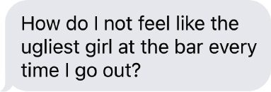
가슴이 미어지는 문자였어요. 지금 이 순간 그 애가 자신에 대해 느끼는 마음을 바꿀 수 있는 말은, 세상에, 단 하나도 없다는 걸 아니까요. 제 말을 믿어요. 저는 해 봤어요. 안팎으로 얼마나 아름다운지 그 이유를 죄다 늘어놓을 수 있어요. 놀라운 성품을 하나하나 일깨워 줄 수도 있고요. 이뤄 낸 성과를 셈해 주고 유머 감각과 지혜, 일에 대한 성실함을 아낌없이 치켜세울 수도 있죠. 믿음직하고 사랑 많고 존경받는 자매이자 친구이자 동료라고 칭찬할 수도 있어요.
저자들이요, 동기부여 연사들이요, 엄마들이요, 홀로 지내며 풀이 죽은 사랑하는 사람에게 하는 뻔한 위로를 다 해 줄 수도 있죠. “너처럼 멋진 사람에게 어울리는 사람을 아직 못 만난 것뿐이야… 하지만 꼭 만나게 될 거야.”
손으로 걷는 건 정상이고 자신을 사랑하는 건 정상이 아닌 이유
제 생각은 중요하지 않아요. 이 문자는 저에 대한 게 아니니까요. 이 문자는 우리 딸이 자기 자신과 맺고 있는 관계를 보여줘요. 그 애가 자신을 어떻게 보는지, 주변 세상을 어떻게 보는지, 그리고 그 세상 속에서 자신이 어디쯤에 있다고 느끼는지요. 사랑하는 사람과 이런 판을 겪어 본 적이 여러분에게도 분명 있을 거예요. 그 사람이 얼마나 멋진지 보이니까 재능을, 성품을, 심지어 생김새까지 격하게 치켜세우게 되죠. 사실을 들어 설득하려 애쓰고요. 그건 사실이 아니야. 너한테는 친구가 있어. 너는 아름다워. 너는 줄 게 정말 많다고!
무슨 말을 하든, 어떤 증거를 대든, 그 사람이 자신에 대해 믿고 있는 건 바뀌지 않아요. 말은 들려요. 그 순간엔 기분이 나아질 수도 있죠. 하지만 뇌는 그걸 사실로 받아들이길 완강히 거부해요. 그동안 수없이 ‘난 한심해’라고 자신에게 말해 왔고 그게 사실이라는 증거를 산더미처럼 쌓아 왔으니까, 이 믿음은 이제 잠재의식에 새겨진 상태예요. 그래서 사랑하는 사람에게 ‘넌 정말 대단해’라고 말하면 오히려 반박부터 나오는 거예요.
인생에서 가장 중요한 깨달음 중 하나는 이거예요. 삶도 행복도 결국 자기 머릿속에서 시작되고 끝난다는 사실이요. 자신에게 하는 말, 자신을 대하는 방식, 반복해서 굴러가는 생각. 이게 전부예요. 아무리 성공하고, 날씬해지고, 유명해지고, 근육질 몸을 만들고, 돈을 벌어도, 늘 자신의 ‘문제’만 들여다본다면 행복해질 수 없어요.
자신에게 뭔가 문제가 있다고 믿으면, 거울 앞에서 스스로에게 하이파이브한다는 생각이 ‘우스운’, ‘멍청한’, ‘촌스러운’ 일로 들려요. ‘문제’를 고치기 전까지는 축하받을 자격이 없다고 믿기 때문이죠. 사람들이 칭찬할 때 불편한 것도 같은 이유예요. 믿어지지 않으니까요. 그래서 받아들일 수가 없는 거예요.
자신을 축하하는 건 손으로 걷거나 발로 밥을 먹는 것만큼이나 낯선 개념이에요. 그래서 잠재의식이 거부하는 거죠.
잠재의식은 사랑한다는 말을 해 주지 않아요
잠재의식이 움직이는 걸 직접 보고 싶다면? 거울 속 자신을 한번 봐요. 아니면 누가 사진을 찍으려 할 때 자신이 뭘 하는지 지켜 보세요.
우리 아이들은 예전에 저를 놀렸어요. 거울을 볼 때마다 ‘이상한 거울 표정’을 지었거든요. 저는 제가 그런 줄도 몰랐죠. 다들 거울 표정이 하나씩 있어요. 거울을 보면 무의식적으로 ‘고쳐야 할’ 부분이 먼저 보이고 좀 더 나아 보이려고 표정을 다듬죠 (우리는 대체 왜 이러는 걸까요?!). 자신은 그런 게 없다고 생각되면, 주변 십 대들을 관찰해 보세요. 다들 거울 표정이 있어요. ‘제일 잘 나오는 각도’가 있거나, 살짝 고개를 기울이거나, 사진을 찍으려고 하면 볼을 빡 빼거나 해요.
제 거울 표정은 입술을 아주 살짝 오므리는 거예요. 아이들이 그렇게 끊임없이 놀려서야 알았어요. 좀 더 나아 보이려고 거울 속 나에게 무의식적으로 반응하는 거죠. 그래도 이제는 자랑스럽게 말할 수 있어요. 적어도 석 달 동안은 거울 표정을 짓지 않았다고요. 이제는 제 외모를 보는 게 아니거든요. 보이는 건 ‘나’, 그 한 사람이에요.
과학이 거울 표정에 대해 밝혀 주는 건 이래요. 누구에게나 자동적인 생각이 있어요. 워낙 자꾸 생각해서 기본값이 된 것들이죠. 길에 파인 수레바퀴 자국처럼요. 행동이나 생각을 일부러 바꾸면, 기본값이던 사고와 행동 방식도 바뀌어요. 이렇게 의도적으로 바꾸는 걸 신경가소성 반응(neuroplastic response)이라고 불러요. 지금 여러분의 기본 사고방식, 그리고 거울 표정은 여러분이 ‘문제’에 온통 집중하게 만들고 있어요. 다행인 건, 그건 바꿀 수 있다는 거예요.
나에게 뭔가 문제가 있다고요?
자신을 사랑하던 사람이 어떻게 자신을 비난하는 사람이 되었는지, 언제 그렇게 되었는지 알 필요는 없어요. 이 믿음이 어디서 시작됐는지 풀어 보고 싶다면, 치료사와 함께하는 시간을 자신에게 선물하세요. 우리 딸의 경우, 물어봤더니 이렇게 답했어요. “언제부터 그랬는지 모르겠어. 내 자신이나 내 몸에 대해 그렇게 느끼지 않았던 적이 기억나질 않아. 그런데 솔직히, 내가 그렇게 못생긴 건 아니야. 그냥 친구들 중에서 제일 커. 그게 싫어. 거울에 보이는 건 늘 그거야. 원하는 것보다 큰 몸. 그게 나를 진짜 끔찍하게 만들어.” 그러고는 덧붙였어요. “늘 이 생각만 하는 걸 그만두고 싶은데, 어떻게 멈춰야 할지 모르겠어.”
그 후로도 이야기를 나누면서 분명해진 게 있어요. 몸을 미워하면서 동시에 자신을 받아들이고 사랑할 수는 없어요. 거울을 보며 ‘고쳐야 할’ 데만 집중하는 건 하이파이브의 정반대예요. 스스로를 거부하는 거죠. 우리 딸만 그런 것도 아니에요. 연구에 따르면 약 91%의 여성이 자기 몸에 만족하지 못하고 쉴 새 없이 쏟아지는 미디어와 이미지들은 사태를 더 악화시켜요. 늘 다른 모습이었으면 하고 바라거나, 자신이 이 세상에 속해 있지 않다고 느끼게 되는 방식으로 세상이 비쳐 들어오면, 존재 전체에 뭔가 잘못됐다는 감각이 스며요.
이제 생각을 바꿔야 하는 이유
자신을 자책하는 걸 멈추고 자신을 사랑하고 힘을 실어 주는 법을 배워야 하는 이유는 세 가지예요.
- 잘못된 데만 집중하면 절대 변하지 않아요.
그런 태도로는 바꾸려는 모든 시도가 ‘수리가 필요한 사람’이라는 알림이 되고 모든 게 더 어렵게 느껴져요. 다이어트가 실패하는 이유가 바로 이거예요. 운동 계획이나 식이 조절이 벌처럼 느껴지기 때문이죠. ‘다이어트 중’이라는 상태는 그저 자신에게 뭔가 문제가 있다는 느낌만 강화해요. 지금 이대로는 괜찮지 않고 사랑받을 만하지도, 훌륭하지도 않다는 느낌을요.
- 몸을, 과거를, 자신을 미워한다고 동기가 생기지 않아요.
연구에 따르면 자신을 자책하면 동기를 느끼기가 더 어려워져요. 축하받을 자격도, 기분 좋을 자격도 없다고 믿는데, 대체 무슨 힘으로 변화에 필요한 힘든 일을 해 내겠어요? 먼저 지금의 자신을 사랑하고 받아들여야 해요. 지금 이 순간에 이르게 한 무슨 일이든 스스로를 용서하고 자기사랑과 자기 존중 위에서 출발해야 하죠. 나는 더 행복하고 건강하게 느낄 자격이 있어, 그리고 나는 나를 더 잘 돌볼 단계를 밟을 수 있어. 이 모든 걸 자신을 미워해서가 아니라 사랑하기 때문에 한다고 기억해 내면, 그 하이파이브 태도가 한 걸음 한 걸음마다 힘이 돼 줄 거예요.
- 반복하면 반복할수록 그럴듯한 증거만 쌓여요.
자신과 맺는 관계는 여러분을 자유롭게 할 수도, 가둘 수도 있어요. 다음 장에서는 이런 믿음이 단순히 기분만 나쁘게 하는 게 아니라 뇌 속 필터를 바꾸고 실시간으로 보이는 세상 자체를 바꿔 버린다는 걸 배우게 될 거예요. 매일 여러분의 마음은 일이 벌어지는 그 순간순간 일어나는 일을 두고 생각을 굴리고 있어요. 어떤 일이, 설령 머릿속에서만 벌어지더라도, 거듭되면 뇌에 고랑이 파여요. 그 고랑은 익숙한 길이 돼요. 늘 같은 풍경, 늘 같은 굽이굽이. 여러분은 그 길을 알고 그 길도 여러분을 알죠. 그러다 그 길이 ‘자신이 누구인가’에 대한 지각의 일부가 돼 버려요. 이런 이야기들을 자신에게 계속 들려주다 보면 생각은 믿음이 되고 시간이 지나면 자신에 대한 정체성이 되어요.
떠오르는 생각은 여러분 탓이 아니에요. 자신에게 가혹해지는 건, 종종 자신에게 가혹했던 부모 같은 어른에게서 배운 거예요. 자책하는 법을 어떻게 배웠든, 핵심은 이거예요. 그게 여러분을 불행하게 만든다면, 바꿀 책임은 여러분에게 있다는 것.
싸워야 할 상대는 내 몸이 아니에요 (통장 잔고도, 직장도 아니고)
싸움의 상대는 자기혐오예요. 미움 위에서는 변할 수 없어요. 사랑 위에서 시작해야 하죠. 하이파이브 습관이 바로 그걸 도와줘요. 사랑 어린 시선으로 자신을 보고, 말하고, 대하는 법을 가르쳐 주거든요.
니나는 저와 5일 하이파이브 챌린지를 함께 하고 강력한 돌파구를 만들었어요. “20년 넘게 신체이형장애(body dysmorphia)를 안고 살아왔어요. 이걸 겨우 5일 했을 뿐인데, 이제 얼굴을 피하지 않아요. 오히려 거울 속 나를 보고 씩 웃게 되더라고요. 고마워요.”
캐시는 하이파이브 습관이 자신을 보는 방식을 근본적으로 바꾸고 있다고 했어요. “우리에겐 이런 패턴이 있어요. 거울 앞에 서면 늘 결점부터 훑는 거죠. 눈썹이 좌우가 다르네, 흰머리가 올라왔네, 아악, 왜 이제 턱살이 두 개지, 팔은 왜 이렇게 늘어졌어. 나한테 잘못된 게 너무 많이 보여요. 게다가 줌(Zoom)과 영상 통화, 페이스북 라이브가 세상을 지배하는 요즘, 거울만 감수하면 되는 게 아니잖아요! 원하는 것보다 훨씬 자주 카메라 속 자신을 봐야 하죠. 저에게 거울 앞에서 스스로에게 하이파이브하는 습관은 하나의 긍정 확언이자, 자신을 축하하는 신체적 행동이에요. 그 행동 하나가 제 얼굴과 몸을 다른 빛으로, 더 밝고 다정하고 연민 어리고 기쁜 시선으로 보게 만들어요. 그리고 알게 됐어요. 하이파이브하면서 거울 앞에서 나쁜 말을 할 수는 없다는 걸!”
지금 이 모습 그대로 축하받을 자격이 있어요. 살을 빼고 나서가 아니라, 돈을 더 벌고 나서가 아니라, 사랑에 빠지고 나서가 아니라, 대학원에 붙고 나서도 아니에요. 그리고 연구에 따르면, 자신을 사랑하고 받아들이는 법을 배우면 인생의 굴곡을 더 잘 헤쳐 나가요. 회복탄력성이 커지죠. 하루 종일 자신을 자책하면 스스로를 땅에 내리찍는 것과 같아요. 삶이 힘들어지는 순간 살아 묻히는 기분에 더욱 무방비해지고요. 모든 일이 두들겨 패는 일이 돼 버리죠. 지금 이 순간, 있는 그대로의 자신을 받아들이며 거울을 보기 시작하고 축하와 지지를 받을 자격이 있는 사람을 거울에서 발견하기 시작하면, 태어날 때부터 지녔던 본능적인 동기와 축하함, 회복탄력성을 다시 손에 넣게 돼요.
원래부터 이랬던 게 아니에요
이제부터 가르쳐 드릴 모든 건 이미 여러분 안에 있어요. 자기사랑은 타고나는 권리예요. 아기일 때의 여러분은 거울에 비친 자기 모습만 봐도 좋아했어요. 기어가서 거울 앞에 도착하면 하이파이브하고 끝이 아니었죠. 얼굴을 거울에 딱 붙이고 젖고 늘어진 입술을 활짝 벌린 채 키스를 퍼부으며 자신을 사랑스럽게 안아 주었어요. 그런데 축하할 일은 정말 많아요! 얼마나 독특하고 특별한 존재인지부터 시작해 볼까요. DNA 서열, 지문, 목소리, 홍채 무늬이 모든 게 완벽하게 유일하고 오직 여러분만의 것이에요. 세상을 보는 방식, 웃는 방식, 겪는 일들, 사랑하는 방식모두가 어우러져 마법 같은 무언가를 만들어요. 여러분이라는 존재는 우주에 단 하나예요. 다시는 존재하지 않을 ‘여러분’이죠. 여러분만이 가진 재능 하나하나가 기적이에요. 그런 건 이왕이면 제대로, 마음껏 박장게 자축해 버려야죠.
그리고 여러분은 스스로 생각하는 것보다 훨씬 강해요! 회복탄력성은 DNA에 새겨져 있어요. 아기 때 기어 다니는 법을 배웠던 걸 떠올려 보세요. 한 번 해 보고 포기하진 않았어요. 바닥에 드러누워 천장을 우울하게 노려보며 이러지는 않았죠. 글쎄, 인생이 이런가 보다. 이제 접을 때가 됐어. 나는 절대 못 기어. 그냥 여기, 이 융단 위 이 자리에서 살아야지. 아니죠, 다시 시도했어요. 게다가 말을 못 했기 때문에 ‘역시 난 안 돼 난 부족해, 똑똑하지도 강하지도 않아’라는 슬픈 이야기를 자신에게 해 줄 수도 없었고요. 계속 시도했고 결국 스스로 바닥을 기어 나갔어요.
타고난 지혜도 있었어요. 주변 사람들을 그저 지켜보는 것만으로 옹알이, 웃음, 기어 다니기, 꾸물꾸물 이동, 그리고 마침내 걷기를 터득했죠. 걷기를 배우며 한 시간에 평균 17번씩 넘어졌어도 상관없었어요. 그래도. 그저. 계속. 시도했어요. 그 집요함이 아직도 여러분 안에 있어요.
그리고 축하하는 것도 여러분 DNA의 일부예요. 어렸을 때 신나고 새로운 일에 성공할 때마다 웃고 끼룩대며 두 팔을 머리 위로 번쩍 들어 올렸죠. 음악이 흐르면 엉덩이를 흔들고 꿈틀거리며 여기저기 뛰어다녔고요. 사랑받고, 회복하고, 기뻐하고, 축하받도록 완벽하게 설계된 존재예요. 낯선 사람의 하이파이브가 그렇게도 기분 좋은 이유가 바로 이거예요. 존재의 구석까지 깊이 파고들죠. 여러분 안의 ‘여러분’을 두드려요. 잊고 있던 걸 일깨워 줘요. 진짜 나는 누구인지, 원래 어떻게 느끼도록 되어 있었는지를.
잠깐, 그럼 원래 즐거웠던 나는 대체 어떻게 된 걸까요?
간단해요. 인생이 당신을 움켜쥔 거예요. 아주 어릴 때부터 인생은 당신의 삶을 마구 휘젓고 다녔죠. 기쁜 순간이든 힘든 순간이든 전부 건조기 속 빨래처럼 뒤엉켜 버렸어요. 말했듯이 여러분은 태어날 때 완전하고 온전한 존재였어요. 그런데 자라면서 학교에 다니면서 친구를 사귀고 무리에 끼려 애쓰는 동안 어느 순간 하나의 메시지를 받아들이게 됩니다. 너한테는 뭔가 문제가 있다.
“나한테는 뭔가 문제가 있다”는 느낌은 누구에게나 찾아와요. 심리학자들은 이걸 ’소속감의 균열’이라고 불러요. 가족 안에서도, 교회에서도, 친구 그룹에서도, 동네에서도, 나아가 세상 전체에서도 자신은 어디에도 속하지 못했다는 느낌이 들기 시작하는 거죠. 그리고 그 느낌은 또 하나의 소속감의 균열을 만들어냅니다. 바로 자기 자신과의 균열이에요.
이런 일은 천만 가지 방식으로 일어날 수 있어요. 자라면서 집을 여러 번 옮기고 학교도 몇 번 바꿨다면, 언제나 밖에서 안을 들여다보는 이방인 같았을지도 몰라요. 누군가에게 공격당하거나 위험한 환경에서 살았을 수도 있고요. 난독증 때문에 멍청이라는 낙인찍히고 특수 학급으로 분류됐을 수도 있습니다. 아니면 반에서 유일한 트랜스젠더였거나, 유일한 무슬림, 유일한 난민, 유일한 흑인 학생이었을 수도 있어요.
생김새나 말투, 행동 때문에 놀림을 받았을 수도 있죠. 엄마가 늘 체중을 두고 잔소리를 해서 체육 시간에 옷 갈아입는 게 불편했을 수도 있고요. 집안 생활이든, 학교 친구들이든, 세상 자체가 당신을 ‘괜찮지 않은 사람’, ‘안전하지 못한 사람’, ’사랑받을 자격 없는 사람’으로 느끼게 만든다면, 아이인 당신은 그걸 그대로 믿어버립니다. 우리 모두에게 일어나는 일이에요. 이런 상처를 한 번도 겪지 않고 어른이 되는 사람은 없습니다.
아버지가 가족 곁을 떠났을 수도 있고요. 엄마가 심각한 우울증을 앓았거나, 형제가 스스로 목숨을 끊었을 수도 있어요. 다음 끼니를 어디서 구할지 늘 걱정하며 살았을 수도 있습니다. 동네에서 매일 인종차별과 편견을 겪었을 수도 있고요. 게이라는 이유로 가족에게 배척당했을 수도 있습니다. 부모님이 중독에 시달리거나, 말을 끊고 따돌리는 방식으로 계속 수치심을 안겼을 수도 있죠. 이런 경험은 당신에게 깊은 흔적을 남깁니다. 정신과 몸, 영혼에 그대로 흡수되죠. 그렇다고 떠날 수도 없었어요. 당신은 그저 어린아이였으니까. 남은 선택은 오직 그 상황 속에서 살아남는 것 하나뿐이었습니다.
특히 감정의 영역에서는 더 힘듭니다.
어린 시절 어떤 일을 겪으면, 그 상황을 소화할 만큼의 인생 경험이나 지지 체계가 없어요. 신경계와 대응 패턴, 생각 속에 그대로 흡수해 버리죠. 할 수 있는 만큼 최선을 다해 버텨내는 것만이 유일한 선택입니다. 스트레스, 외상, 학대 같은 상황 속에서 아이들은 절대 이렇게 생각하지 않아요. 내 주변 어른들이 심각하게 망가진 사람들이야. 혹은, 맙소사, 이 상황 완전 엉망이잖아. 혹은, 이건 불법이야, 너 잡아갈 거야. 혹은, 이 애가 나를 괴롭힌다는 건, 분명 걔도 누군가에게 괴롭힘당하고 있다는 뜻이겠지. 모든 아이는 화살을 자기 자신에게 돌립니다. 자기 탓이라고 여기는 거예요.
아홉 살 때 또래보다 큰 아이에게 성추행을 당했을 때 저도 그랬어요. 제 잘못이라고 생각했습니다. 여름 캠프에서 끝없이 괴롭힘을 당했을 때 우리 아들도 그랬죠. 아들은 고통을 숨긴 채 자책했어요. (저도 단서를 더 일찍 알아차리고 그곳에서 데려오지 못한 걸 아직도 제 잘못으로 여기고 있습니다.)
여러분도 버텨낸 경험들 앞에서 똑같이 했을 거라고 확신해요. 그 경험을 ’나라는 존재에 대해 끔찍한 의미’로 새겨 넣은 거죠. 비판이 잦은 엄마 밑에서 살든, 이혼한 부모 밑에서 살든, 매일 인종차별적 미세공격(racist microaggressions)을 겪든, 육체적 학대를 당하든, 여러분은 그 화살을 자신에게 돌렸어요. 이건 인간 설계상의 커다란 결함입니다. 자신을 아프게 한 사람들을 탓하는 대신, 스스로를 탓하며 이렇게 생각하니까요. 나한테는 분명 뭔가 문제가 있어.
인정하기 싫지만 부모 입장에서 우리는 종종 그 메시지를 무심코 보내곤 합니다.
파란 머리를 한 새내기가 되어 보세요.
지금부터 제가 정말 싫어하는 이야기를 하나 할게요. 들으면 제가 끔찍한 엄마 같아지거든요. 그래도 들려주는 이유는, 이 메시지가 얼마나 크고 끈질리게 울려 퍼지는지 보여주기 때문이에요. 너라는 존재도, 생긴 모습도, 자기를 표현하는 방식도 전부 뭔가 문제가 있다는 메시지요.
우리 아들 오클리는 6학년 때 머리카락 끝을 염색했어요. 게임 스트리머 닌자(Ninja)의 열혈 팬이었거든요. 꽤 멋있었고 오클리도 그 머리를 정말 좋아했어요. 그러다 7학년 때 학교를 옮기게 됐는데, 새 학교 첫날이 다가오자 걱정이 시작됐죠. 개학 첫날 파란 머리를 하고 등장했다가 애들이 놀리면 어쩌나 하는 마음이요. 7학년 새내기인 것만으로도 충분히 힘든데, 파란 머리까지 한 새내기가 되어 보세요. (아니 사실은, 파란 머리에 신경증적인 엄마까지, 그리고 ’네가 잘 적응해 줘야 한다’는 엄마의 필사적인 소망까지 짊어진 새내기가 되어 보세요.)
몇 주 동안 저는 계속 물었어요. 개학 전에 머리 좀 자르겠니, 그 파란 끝만이라도… 자르면 안 될까? 아들은 아무렇지 않았지만 불안한 건 저였죠. 개학이 가까워지자 두 언니도 한목소리를 틀었어요. “야, 솔직히 염색한 머리 하고 등장하는 건 별로 좋지 않을 것 같은데. 네가 라크로스 스타 선수도 아니고.” 결국 오클리는 무너져서 첫날 전에 머리를 다듬었어요. 자신을 위해 자른 게 아니에요. 우리의 불안을 달래주려고 한 거죠.
어린애일 때는 모두가 뭘 하라고 혹은 자기가 바라는 게 뭔지를 말해줘요. 엄마를 기쁘게 해드리려고, 인기 있는 애들 무리에 끼려고, 아니면 그냥 선택권이 없어서 고개를 끄덕이게 되죠. 그러다 보면 조건반사처럼 배워버립니다. 사랑과 인정은 거래라는 걸요. 내 말대로 하면 사랑해줄게.
생각해 보면, 스스로에게서 사랑을 뺏는 이유가 바로 이거예요. 어린 시절에 그렇게 배운 거죠.
우리가 진심으로 믿어버린 헛소리.
아들과 관련된 이 이야기를 돌아보면, 제가 보낸 메시지는 “네 생김새에는 뭔가 문제가 있어”였다는 걸 알게 돼요. 그러니까 난 날 기분 좋게 해주는 너의 모습만 받아들일게라고 말하고 있었던 거죠. 그런데 실제로 제 마음은 정반대였어요. 저는 그 머리를 좋아했어요. 다른 7학년 애들이 파란 머리를 한 아들을 받아들여줄지 확신이 없었을 뿐이죠. 새 출발이 순탄할 수 있게 최선의 조건을 만들어 주려던 참이었는데, 결과적으로는 자기 선택을 의심하게 만들었고 게다가 제가 있는 그대로의 그를 사랑하고 받아들이고 있는지조차 의문 갖게 했어요.
저는 아들에게 네 자신이 되는 것보다 어울리는 편이 낫다고 말해준 셈이에요. 지금도 마음이 아픕니다. 우리가 믿는 아주 커다란 거짓말의 핵심이 바로 이거니까요. 남들이 나를 어떻게 보는지가 내가 나를 어떻게 보는지보다 더 중요하다는 거예요. 우리는 평생 이 헛소리를 믿어왔어요. 사랑하는 사람들이 그렇게 믿으라고 가르쳤으니까요. 이 글을 읽고 있는 아이들이 있다면, 정말 미안해요.
아, 정말 싫은 이야기예요. 하지만 여러분에게, 저에게, 여러분이 아는 모든 사람에게 일어난 일의 핵심이 바로 이거예요. 생긴 모습이 어떤지, 무엇을 하는지, 그리고 궁극적으로 자신이 누구인지 의심하기 시작한 거죠.
가장 진짜인 자신과의 연결이 막히는 과정이 바로 이거예요. 거울 앞에 서서 자기 자신을 한 조각씩 뜯어내는 이유도 이거고요. 우리 딸을 비롯해 외모로 고민하는 모든 사람에게 말해요. 지금 당장 자신에게서 좋은 점을 알아보는 연습을 시작해야 해요. 자신을 깎아내리는 건 그만두고 몸에 안 맞는 청바지는 그냥 쓰레기통에 던져 넣으세요. 자신을 비판하고 자책할 때마다 여러분은 제가 아들에게 했던 것과 똑같은 대접을 스스로 하고 있는 겁니다. 자기 자신을 향한 사랑도 조건부라는 거죠. 자기 자신을 승인할 때까지 사랑을 뺏어두는 거예요. 그런 식으로 평생을 살아간다면 너무 괴로울 수밖에 없어요.
미워하지 말고 알아봐 주세요.
필요한 사랑과 인정을 받을 자격을 갖추려고 뭘 바꿀 필요는 없어요. 그 확인을 스스로에게 건네주기 시작하면 됩니다.
다음에 거울 앞에 서면, 자기를 콕 찌르고 만지작거리고 뜯어보는 걸 멈추세요. 그건 자신을 패배감과 거절감, 낙담 속으로 빠뜨릴 뿐이에요. 그리고 하루 종일 무슨 생각을 하고 어떤 기분으로 지낼지를 정해버리죠. 대신 아침마다 자신에게서 좋아할 만한 점을 찾는 것으로 하루를 시작해 보세요. 평소에 무시하는 작은 디테일, 강점, 직관 같은 것들이요. 몸이 그동안 얼마나 자신을 잘 돌봐왔는지도요. 출산선을 볼 때마다 낳은 아이들이 떠오른다든지요.
보이세요? 당신에게는 아무것도 잘못된 게 없어요. 지금 인생의 위치가 마음에 들지 않을 수도 있어요. 통장 잔고 체중계의 숫자, 바지 사이즈가요. 하나님도 아시겠지만 쉬운 나날은 아니었을 거예요. 그래도 여기까지 와 있잖아요. 아직 서 있어요. 회복력 있고, 똑똑하고, 강한 사람이요. 매일 아침 일어나서 배우고 성장하고 더 나은 사람이 되려고 자기를 몰아붙이고 있고요. 솔직히 말해서, 그거 하나면 여러분은 완전 끝내주는 존재예요.
매일 아침 스스로에게 하이파이브하기 시작한 뒤 조던(Jordan)이 저에게 들려준 말이 좋아요. “흔히 자기사랑은 자신을 고치는 거라고들 하죠. 그래서 저는 거울 앞에서 스스로에게 하이파이브하는 게 좋아요. 자기사랑은 사실 내가 고치려 애써온 부분들과 사랑에 빠지는 거라는 걸 보여주니까요.” 사랑할 점이 정말 많아요. 마음껏 느껴보세요. 그리고 손을 들어, 하이파이브로 그 알아봐 주는 마음을 잠재의식 속에 새겨 넣으세요.
정말 중요한 뭔가를 놓치고 있는 것 같아요.
스스로를 받아들이고 격려하는 힘이 얼마나 깊은지 이해하려면, 심리학자들이 말하는 핵심 ‘기본 정서 욕구(fundamental emotional needs)’, 즉 모든 사람이 잘 살아가기 위해 필요로 하는 것들에 대한 연구를 좀 더 들여다볼게요. 심리학 입문 강의에서 배우는 매슬로의 욕구단계설(Maslow’s Hierarchy of Needs) 부분을 건너뛰었거나(혹은 그 시간에 쪽잤더라도) 괜찮아요. 배경은 이렇습니다. 우리 모두에게는 성취, 행복, 생존에 꼭 필요한 기본 욕구가 있어요.
물, 음식, 산소, 거처, 잠이 없으면 죽는다는 건 알죠. 우정도 필요하다는 것도 알아요. 없으면 외로워지는데, 연구에 따르면 외로움 역시 사람을 죽일 수 있거든요. 사람으로서 성장해야 할 근본적인 욕구도 있어서 성장하지 않으면 멈춰 선 듯 답답하다는 것도 알 거예요.
하지만 세 가지 핵심 정서 욕구가 있다는 건 모를 수 있어요. 고유한 존재인 지금의 나 그대로 알아봐 주고, 목소리에 귀 기울여주고, 사랑받고 싶어하는 욕구요. 이 정서 욕구가 채워지지 않으면 방임의 한 형태일 뿐 아니라, 사랑받지 못하고, 보이지도 않고, 충족되지 않는다고 느끼게 돼요. 우리가 처음부터 이토록 자기 비판적이 된 이유도 그래서라고 생각합니다. 그 후로 계속 자기 자신을 꼬아 왔죠.
이건 스스로 바꿀 수 있어요.
빠져 있는 건 자기 자신과의 더 깊은 연결이에요. 그동안 한 가지에서 다음 일로 옮아가느라 너무 바빠서, 매일 아침 자신을 존중하는 일로 하루를 시작하는 것이 얼마나 큰 변화를 가져올지 지금은 상상도 안 될 거예요. 하이파이브는 모든 인간의 웰빙 한가운데 있는 가장 깊고 중요한 정서 욕구를 채워줍니다.
배웠듯이, 이 세 가지 정서 욕구는 어린 시절 채워지지 못한 경우가 많고 어른이 된 지금 이 도구를 갖기 전까지는 채울 방법이 없었어요. 그래서 직장에서는 눈에 띄지 않는 사람 같고, 친구 그룹에서는 밀려나 있는 것 같고, 어른이 된 후의 관계 속에서도 단절된 느낌이 드는 거예요. 자기 자신과의 관계는 말할 것도 없고요. 뭔가 빠져 있습니다. 내가 존재 가치가 있다는 더 깊은 감각이요. 알아봐 주고, 들어주고, 소중히 여겨지고 싶은 갈망은 사람으로서 충만하게 사는 데 꼭 필요한 요소입니다.
따지지 마세요. 계산은 이미 끝났거든요.
우선, 여러분의 존재 자체가 너무나 기적적이라서 알아봐 주고 축하받아야 마땅해요! 첫째, 여러분이 태어날 확률은 백만 분의 일이에요. 엄마는 평생 백만 개가 넘는 난자를 품고 있으니까요. 미쳤죠? 그런데 그것도 여러분이라는 수학적 현상에는 한참 못 미쳐요. 최근 연구에 따르면 과학자들은, 여러분을 만든 그 난자가 꽤 까다로워서 아버지의 2억 5천만 개 정자 중 어떤 것과 만날지 직접 고를 수 있었다는 걸 밝혀냈어요. 여러분을 만든 그 난자가 다른 정자를 골랐다면 여러분은 태어나지 않았을 테고 이 책을 들고 있는 건 형제자매였겠죠.
전문가들은 그 정자와 난자의 만남에서 바로 ’당신’이 나올 확률을 400조 분의 1로 추정했어요. 그런데 이것조차 정확한 수치가 아니에요. 하버드의 한 과학자가 여러분이 태어날 확률에 관한 논문을 썼는데, 그 숫자가 너무 어마어마해서 이렇게 됩니다. 1 대 내가 발음도 못 할 그 숫자. 이건 여러분의 탄생이 기적 그 자체라는 걸 증명해요.
여러분처럼 유니크하고 특별한 존재는 알아봐 주고, 들어주고, 축하받을 자격이 있어요. 내가 소중하다는 느낌, 누군가 날 아끼고 있다는 느낌, 축하받을 만한 존재라는 느낌. 이게 가장 근본적이고 중요한 정서 욕구예요. 음식과 물만큼 웰빙과 행복에 중요하죠. 좋은 하루와 나쁜 하루를 가르는 차이가, 가끔은 누군가에게 알아봐 주는 것 하나로 갈리기도 해요. 그런데 나를 제대로 알아봐 줄 최고의 사람이 누군지 아세요? 바로 나 자신이에요. 그래서 다시 매일 아침 거울 앞에서 자신과 얼굴을 맞대는 그 순간으로 돌아오는 거예요.
스스로에게 하는 하이파이브는 단순한 동작이 아니에요. 기본을 이루는 행위죠. 에너지가 전달되는 일입니다. 자기 자신과 자신의 능력에 대한 동맹, 흔들리지 않는 믿음을 상징하죠. 스스로에게 ’잘했다’는 말을 하는 게 아니에요. 지금 이대로의 자신을 축하하는 거예요. 존재한다는 것만으로 하이파이브받을 자격이 있어요. 여러분이 이곳에 있다는 것, 희망과 꿈, 사랑할 수 있는 힘, 치유하고 변화하고 성장할 수 있는 능력, 마음과 영혼. 바로 이런 것들이 축하받을 자격을 만들어주죠.
거울 앞에서 스스로에게 하이파이브할 때, 여러분은 그 근본적인 정서 욕구를 스스로 채워주는 겁니다. 자신을 알아보게 되고 자신이 말하는 “괜찮을 거야”, “할 수 있어”, 아니면 그저 “사랑해”라는 말을 듣게 되죠. 부모님이나 친구, 배우자, 상사에게 바라왔던 말들을 하나의 동작으로 스스로에게 건네주는 거예요. 그 하나의 동작은 이렇게 말합니다.
자신감나는 당신을 믿어요.
축하당신은 굉장해요.
인정당신이 보여요.
긍정당신이라면 반드시 해낼 수 있어요.
행동할 수 있으니까 계속 가요.
그 감정들을 한꺼번에 느낄 수 있다면 얼마나 굉장할까요? 세상이 강아지와 무지개, 그리고 전원 무제한 데이터로 폭발할 거예요. (뭐요? 요금 초과 때문에 피 보는 건 여러분도 마찬가지잖아요.) 완전 소름 돋는 일이겠죠. 문자 그대로요. 잠재의식이 폭발해 버릴지도 몰라요. 아직은 여러분의 그 달콤하고 끈적한 사랑을 흡수하도록 프로그램되어 있지 않으니까… 아직까진요. 하지만 곧 가능해질 거예요… 그리고 이제 자기 인정, 자기사랑, 자기수용이 세상에서 가장 강력한 동력이라는 걸 알았으니, 지금 무슨 생각을 하고 계신지 알겠어요…
알겠어요, 그런데 어떻게 다른 생각을 하는 건가요?
첫 번째 단계는 기분을 바닥으로 끌어내리는 낡은 생각을 잡아내는 거예요.
뭔지 모르겠다면 힌트를 드릴게요. 나는 ________이 부족해.의 어떤 변형이에요.
빈칸에는 뭐든 원하는 대로 넣으면 돼요. 자, 마셔볼 독을 고르세요. 나는 똑똑하지 않아, 괜찮은 사람이 아니야, 키가 크지 않아, 날씬하지 않아, 돈이 없어, 성공하지 못했어, 재능이 없어, 피부가 충분히 희지 않아… 어느 쪽이든 ’부족한 나’예요. 이걸 독이라고 부르는 이유는, 그 생각을 하는 것 자체가 그 독을 마시는 것과 같기 때문이에요. 영혼을 죽이고, 알아봐 주고 싶고, 들어주고 싶고, 축하받고 싶다는 타고난 갈망까지 죽여버리죠.
이 생각은 하이파이브가 상징하는 인정, 자신감, 축하, 긍정, 행동의 정확한 반대예요. 마음을 바닥으로 떨어뜨립니다. 그 생각 하나만으로도 앞으로 나아갈 힘이 마비돼요. 큰 문제가 하나 있어요. 이런 생각을 하는 동안엔 누구에게도, 무엇에도 하이파이브하고 싶지 않아져요. 특히 자기 자신에게는 더더욱요.
그럴 만하죠. 그럼 이제 바꿔 봅시다.
5장
나 망가진 걸까요?
얼마 전 저녁, 가족이 함께 식사를 하던 중 딸 하나가 룸메이트와 생긴 갈등 이야기를 꺼냈어요.
“나만 늘 나쁜 사람인 것 같아. 뭐라고 말하든, 어떻게 말하든 소용없어. 마음에 걸리는 걸 얘기하거나 선을 긋는 순간마다 결국 내가 잘못한 사람처럼 느껴져. 그런 일이 너무 많이 반복되다 보니 이제는 늘 스스로에게 이렇게 말하게 돼. 난 이기적이야. 난 나쁜 사람이야. 올해 내내 그랬어. 내 자신에 대해 이렇게 느끼는 걸 어떻게 멈춰야 할지 모르겠어.”
남편 크리스가 위로를 건넸죠. “넌 나쁜 사람이 아니야. 나쁜 짓을 했을 수는 있어도, 넌 나쁜 사람이 아니야. 누구나 실수해. 그렇게 배우는 거니까. 부탁 하나만 하자, 넌 나쁜 사람이라고 스스로에게 말하는 걸 멈추겠다고 약속해 줘.” 그러고는 자기 얘기를 덧붙였어요. “식당 사업이 무너지고 나서 나는 완전히 실패한 사람 같았어. 동업자는 식당을 차리면 감수해야 할 리스크라고 여겼는데, 나는 그럴 수 없었지. 실패했다는 뜻으로 받아들여 버렸거든. 어디를 봐도 그것밖에 안 보였어. 너희 애들 곁에 충분히 있어 주지 못했고, 엄마한테 좋은 남편도 못 됐고, 돈도 충분히 못 벌었고, 뭐 하나 제대로 한 게 없었어. 계속 되뇌면 정말로 믿게 돼. 수치심은 검은 선글라스 같은 거야. 보이는 모든 걸 물들여 버려.”
딸이 말했죠. “아빠도 그런 이야기가 있네요. 음악을 공부하다 보면 교실이든 스튜디오에 들어설 때마다 다른 사람들이 훨씬 재능 있고 멋있구나 싶어져요. 그 사람들이 나보다 훨씬 앞서 있다고 생각하고요. 레이블과 계약했는지, 음원을 내고 공연을 하고 있는지. 그러고 나서 제 자신을 보면 생각해요. 저 멋지고 재능 있는 사람들에 비하면 난 실패자라고.”
다른 딸이 끼어들었어요. “우리 진짜 가족이 맞네. 나는 늘 친구들 중에서 내가 제일 뚱뚱하다고 생각하고 엄마는 모든 게 자기 탓이라고 하시잖아.” 그러더니 오클리 쪽으로 몸을 돌려 물었죠. “오클리, 네가 하는 부정적인 생각은 뭔데?”
오클리는 한 치의 망설임도 없이 답했죠. “난 이 대화 안 끼어들래. 다들 우울해서.” 우리는 다 같이 웃었고 그러곤 딸들 중 하나가 다시 크리스를 향해 물었어요. “아니 근데 진짜요, 아빠, 그 선글라스는 어떻게 벗어요? 특히 내가 정말로 나쁜 사람이라고 생각될 때는요? 증거야 잔뜩 있는데.”
나의 주제가 (그리고 이젠 질리도록 지겹습니다!)
아이들의 이 대화에는 무언가 의미가 있었어요. 인생 40년을 통틀어 내 주제가가 “난 모든 걸 망쳐 왔다”였거든요.
내 귀에는 대략 이렇게 들려요. 40년이면 그냥 변기에 물려 버리자. 대학과 로스쿨도 망쳤고 결혼 초반도 망쳤으니까. 부모로서도 최악이었다고. 더 성공했더라면, 아이들이 다 놀러 오는 집을 갖고, 컨트리 클럽에 들 만한 돈이 있고, 생일 파티와 라크로스 경기마다 빠짐없이 참석했더라면, 10년 전에 아마존 주식을 샀더라면 (잠깐, 아직 안 끝났어요!!), 다른 길에 살고, 다른 친구 그룹이 있고, 다른 선택을 했더라면.
제대로만 했더라면. 이제 와선 너무 늦었어. 전부 내 잘못이야.
자존감과 자기 존중, 한 벽돌씩 다시 쌓기
여러분 머릿속에도 비슷한 노래가 흐르고 있을 거예요. 커리어, 관계, 건강에서 수없이 많은 실수를 저질렀고 이제 와선 너무 늦었다고. 인생을 망쳤으니 차라리 변기에 물려 버리자고. 그렇죠? 아니, 말해 두겠는데, 예전의 나 딱 그랬어요.
이 문장을 쓰는 지금도 여기까지 온 게 믿기지 않아요. 그 공포 영화 같은 이야기의 일부는 곧 들려드릴 텐데, 불과 몇 년 전까지만 해도 내 삶은 슬로모션으로 추락하는 열차였습니다. 파산, 깨져 가는 결혼, 짓누르는 불안, 실직을 견디느라 자신감은 바닥까지 떨어졌죠. 나는 많은 ‘고기능’ 성인들이 그렇듯 이 문제들을 마주했어요. 알코올로 감각을 마취하고, 남편에게 소리 지르고, 문제를 피할 수 있는 방법이라면 뭐든 시도하면서.
농담이면 좋겠지만 아니에요. 솔직히, 제가 공유하는 도구와 연구를 확신할 수 있는 이유가 바로 이겁니다. 여러분께 가르치는 모든 걸 내 목숨을 구하는 데 직접 써 봤거든요. 그래서 효과가 있다는 걸 알아요.
10년의 고된 작업 끝에 나는 인생 이야기를 다시 썼어요. 지금 저는 기업가이자 베스트셀러 작가이며 세계에서 강연 요청이 가장 많은 강연자 중 한 명입니다. 유튜브 채널을 보면 지금의 제 모습을 볼 수 있어요. 원하는 걸 당당하게 쫓아가고 사업도 성공적으로 굴리는 사람. 세 명의 멋진 아이와 함께 25년째, 미완성이지만 아름다운 결혼생활을 가꿔 온 사람. 저는 제가 머물러야 할 자리에 있습니다. 저를 사랑하고 이대로의 모습에 편안하며 나 자신과 단단한 관계를 유지하려고 매일 열심히 노력합니다. 그리고 여러분도 그 자리에 있어야 할 사람이에요.
지금도 저는 ’제대로 된 길’에 사는 게 아니고 그 컨트리 클럽 회원도 아닙니다. 대학과 로스쿨 시절을 다시 살 수도 없죠. 하지만 과거에 집착하며 스스로를 끊임없이 두들겨 패던 습관은 확실히 끊었습니다. 변화에 지름길은 없어요. 매일 조금씩 갈고닦아야 합니다. 자존감과 자기 사랑은 살 수 없어요. 직접 쌓아야 합니다. 클럽 회원권이나 새 집이 내면을 바꿔 주지 않아요. 땀이 필요합니다. 자기가 미워하는 그 부분과 마주 서서, 자신이 입힌 상처(특히 자기 자신에게 입힌 상처)를 용서하고 더 나은 자신이 되기 위한 작업을 해야 해요. 원하는 자기 존중과 자존감을 만드는 유일한 길입니다.
바뀔 수 있어요
인생엔 리셋 기회가 있습니다. 매일 아침 눈을 뜨고 거울을 보며 오늘 어떤 사람이 될지 결정하는 그 순간마다요. 선택할 수 있어요. 바뀔 수 있어요. 시간을 되돌릴 수는 없지만 앞으로의 시간을 이용해 인생의 주도권을 잡고 행동을 바꾸고 스스로 자랑스러운 새 장을 만드는 동안 자기 편이 되어 줄 수는 있죠.
가장 어려운 건 시선을 뒤집는 겁니다. 미워하는 과거에서, 만들고 싶은 미래로. 기억하세요: 자동차 앞유리가 백미러보다 큰 데는 다 이유가 있어요. 사람은 뒤로 가라고 있는 게 아니라 앞으로 달리라고 있는 것이고 그러려면 앞을 봐야 합니다.
그래, 실수했어요. 저도요. 자신이 저질렀거나 목격했거나 버텨 낸 최악의 일들이 가장 강력한 스승입니다. 있었던 일 때문에 자신을 잘못한 사람으로 만들지 말고 그걸 풀어 헤치세요. 이해하세요. 저지른 모든 실수와 겪은 모든 고통 속에 배어 있는 교훈을 배우세요.
제가 먼저 갑니다. 제 인생의 그 으스스하고 거의 알아볼 수 없는 ‘BEFORE’ 사진부터 볼까요. 오늘은 제 인생의 두 순간을 보여 드릴 건데, 오글거리는 이야기들이고 안타깝게도 100% 사실입니다.
끔찍하고 무시무시하고 형편없고 엉망진창인 3년
제 인생 최악의 시기 하나는 로스쿨 시절이었어요. 어린 시절부터 쌓여 온 불안이 극에 달해 폭주하는 자기파괴 행동으로 번진 곳이었죠. 3년 내내 패닉 속에서 눈을 떴습니다. 로스쿨에 들어가자마자 알게 됐거든요. 나는 변호사가 되고 싶지 않다는 걸. 그런데 인생에서 뭘 하고 싶은지 전혀 몰랐으니, 딴 길이 있을 리도 없었죠.
저는 늘 긴장하고, 스트레스에 시달리고, 뒤처지기만 했고, 생각과 행동과 습관은 그 감정들을 더 증폭시켰어요. 게다가 로스쿨 생활이 기대에 부풀어 있는 사람들에 둘러싸여 있으니 나만 이곳에 어울리지 않는 사람 같았죠. 유독 외로웠습니다. 변호사가 되려면 필수라는 읽기와 쓰기가 전부 싫었고요. 난독증과 ADHD가 있다는 사실도 아직 몰랐어요. 나는 자기파괴의 길을 걷고 있었습니다.
하루 일과는 대략 이랬어요. 숙취로 눈 뜨기. 생각하기, 젠장, 늦었다. 왜 자꾸 이러는 거야? 천장을 바라보며 오늘 수업과 밀린 과제 생각하기. 아파트 안을 뛰어다니며 담배에 불 붙이기. 던킨도너츠로 운전해 가서 크림과 설탕 세 스푼 들어간 제일 큰 커피 주문하기. 수업하러 운전하기. 교실에 앉아 지명당할까 조마조마하기. 점심엔 샐러드 툭툭 건드리기. 도서관에서 혼자 앉아 공부해 보기. 친구랑 떠들며 몇 시간 미루기. 집으로 운전해 가기. 룸메이트와 와인 한 병 나눠 마시고 잠들기. 숙취로 눈 뜨기.
실망스럽고 두툼한 인생을 만들기에 완벽한 루틴이었죠? 그런데 거기서 멈추지 않았어요. 계속 갔습니다…
그 패턴을 3년 동안 매일 반복했어요. 지금 여러분께 설명하면서도 웃어 넘기려 하지만 솔직히 속이 메슥거립니다. 3년 내내 불안하고 긴장한 채로 보냈죠. 거의 아무것도 기억나지 않아요. 생각과 행동 패턴을 들여다보면, 매일의 선택들이 나를 고통스럽고 부서진 순환 속에 가두고 있었습니다. 부정적인 생각(너는 모든 걸 망쳐의 온갖 변형들)이 탄막처럼 쏟아져서 하루를 버티는 것 말고는 아무것도 집중할 수 없었어요. 이 순환이 반복될수록 신경은 더 곤두서죠. 부정적인 생각은 신경계를 태워 버립니다. 부정적인 생각과 감정은 빠져나갈 줄 모르는 하강 나선을 만듭니다.
생존 모드에 들어가면 보통 바닥을 칠 때까지 나빠집니다. 그리고 참, 엄청나게 나빠졌죠.
1년 차에 확실하게 망쳤습니다. 그다음엔 진짜 크게 망쳤어요.
로스쿨 첫 여름, 저는 미시간 그랜드래피즈의 주 법무장관실에서 인턴으로 일했어요. 법무장관은 미시간의 재범률에 관한 조사 프로젝트를 맡겼죠. 놀라운 기회였습니다. 저에게 중요한 주제를 깊이 배울 수 있을 뿐 아니라 미래를 쌓을 탄탄한 발판도 됐을 테니까요. 한 주(state)의 법무장관 밑에서 직접 일하는 거였으니까! 하지만 그 규모의 프로젝트에 너무 압도된 나머지 시작조차 못 했어요. 책장조차 펴지 않았죠. 한 권도요.
또 시작이네…
불안이 너무 만성적이라 차를 몰고 출근한 기억조차 없어요. 하지만 이건 분명히 기억합니다. 여름이 끝나갈 무렵 법무장관이 저를 집무실로 불렀어요. 얼굴은 새빨개졌고 정장 재킷이 땀으로 흠뻑 젖었죠. 프로젝트가 지연된 이유에 대해 천 가지 변명을 늘어놓았습니다. 그리고 현관문을 나서서 다시는 돌아가지 않았어요. 사표라도 낸 게 아니라 그냥 사라졌죠. ’고스팅’이라는 말이 유행하기 한참 전에 이미 하고 있었나 봐요. 솔직히 이 이야기는 너무 부끄러워서 지금까지 글로 쓴 적이 한 번도 없습니다.
또 다른 해에는 뉴멕시코 로펌에서 환상적인 여름 일자리를 따냈는데, 출근 예정 일주일 전, 대륙을 가로질러 비행기를 타고 여름 내내 혼자 산다는 생각만으로 큰 공황 발작이 왔어요. 로펌에 전화해서 거짓말을 했죠. 집안에 급한 일이 생겨서 못 간다고.
여러분이 아는 멜 로빈스와 어울리는 이야기인가요? 제 이야기를 들여다보면 보이실 겁니다. 부정적인 생각(난 이걸 못 해)이 부정적인 감정(불안)을 불러오고 부정적인 행동(도망가)으로 이어지며 소용돌이를 만들었다는 걸. 그리고 소용돌이가 한번 돌기 시작하면 그 회전을 꺾으려면 어떤 힘이 필요합니다. 저는 부정적인 생각난 이걸 못 해, 난 내가 싫어, 난 늘 엉망이야을 강조하는데, 그 목소리를 듣는 데 너무 익숙해지면 그 생각이 거기 있다는 것 자체를 모를 수도 있거든요. 또 그런 생각이 반복되면 스스로 하나의 생명처럼 자라난다는 사실도 모르죠.
물론 저는 성공하고 싶었고 강해지고 싶었어요. 그 기회들도 갖고 싶었죠. 하지만 머릿속은 제가 투자해 온 서사에 홀려 있었습니다. 같이 말해 봐요: 나는. 모든 것을. 망친다. 그래서 법무장관의 대형 프로젝트도, 뉴멕시코의 여름 일자리도 기회로 보이지 않았어요. 뭔가 감당이 안 될 것 같은 순간이 오면 그것들을 쏘아 떨어뜨리거나 언덕 너머로 도망가야 했습니다. 모든 걸 망친다고 믿는 사람이 그러는 것처럼. 꿈을 길가에 두고 오는 한이 있더라도요.
그리고 당연하게도, 두 기회를 떠나 버린 후엔 스스로에게 더 나쁘게 느껴졌어요. 하강 나선은 더 깊어졌고. 부정적인 생각은 더 많아졌죠. 수치심도요. 영혼째 끌고 내려가는 그 수치심이요.
이건 너무 근본적으로 중요한 얘기라 다시 반복합니다: 부정적인 생각이 늘어나면 재앙적 사고라는 세탁기 탈수 코스 속에 빙빙 돌며 갇힐 수 있어요. 로스쿨 시절 제가 한 게 정확히 그거였습니다. 숨이 막힐 때까지 부정적인 생각을 쌓아 올렸어요. 바닥을 쳤습니다. 거대한 망치가 내 인생을 산산조각 낸 것 같았어요. 그리고 그 망치를 쥔 게 바로 저였죠. 고쳐 보려고 뭘 해도 계속 추락하고 불타올랐습니다.
여러분이 곧 배울 도구를 저는 하나도 갖고 있지 않았어요. 어린 시절의 트라우마와 자기파괴적 행동 사이의 연결고리도 몰랐죠. 실수를 자기 자신에게 겨누는 걸 멈추는 법도 몰랐습니다. 나쁜 일들이 근본적으로 내가 나쁜 사람임을 증명한다는 믿음을 버리는 법도 몰랐어요. 저는 제 자신과 계속 저지르는 일들이 부끄러웠습니다. 그래서 고통과 위기 속 대부분의 사람들이 하는 일을 했어요. 마취하려 했죠. 우리가 자신을 마취하고 고통을 묻어 버리려는 방법은 무궁무진합니다. 알코올, 약물, 충동 쇼핑, 감정적 폭식.
세고 계신가요? 이제 더 심해지거든요.
마취하려고 그 모든 짓을 다 했고 로스쿨 시절 남자친구를 두고 대학 때 만났던 전 남자친구와 바람도 피웠어요. 심리학자들이 말하듯 비밀스러운 관계는 취할 만큼 강력한 스트레스 해소제거든요… 하지만 제가 말해 두겠는데, 그건 인생을 안쪽부터 폭파시키는 화약고이기도 합니다. 실제로 저한테 그랬어요. 결국 두 사람 모두 알아챘거든요. 또 대형 사고다, 멜. 남자친구를 속이며 인생을 망치던 것도 모자라, 그 망친 것조차 망쳤으니까요. 둘 다 알아차렸으니… 망친 걸 망친 거예요?! 완전 A급 기능부전이죠. 그저 버티고 살아남으려고 했던 일들을 인정하는 건 자랑스럽지 않아요. 이 이야기를 하는 건 여러분에게 증명해 보이려는 겁니다. 수치심의 순환이나 자기파괴적 행동의 고리에 갇혀 있다 해도 빠져나갈 길이 있다는 걸요. 제가 바뀔 수 있었다면 여러분도 가능합니다.
이건 내 재기 스토리가 아닙니다
다행히 그 대형 추락은 제 평생의 성장 여정이 시작된 장소로 저를 데려갔습니다. 심리상담가의 소파로요. 그곳에서 저는 이 모든 걸 내 스스로에게 하고 있었다는 걸 이해하기 시작했어요. 물론 일부러가 아니라, 어린 시절의 트라우마와 생각·신념·행동 패턴이 잠재의식의 기본값이 되어 저를 이 미친 자기파괴의 길로 계속 데려갔다는 걸요.
상담사의 도움으로 저는 마침내 제게 일어났던 일들과, 살아남으려고 제가 저질렀던 끔찍한 일들을 마주할 수 있었어요. 상담사는 또 이렇게 일깨워 주죠. 이제부터 제 인생에 벌어지는 모든 엉망진창에 대해 책임을 져야 한다고. 저는 정직하게 인정했습니다. 제 발로 이 길을 한참이나 걸어 내려왔다는 걸. 집에서 참 멀리진짜 제 모습에서 참 멀리. 그래도 저는 바닥을 친 것 자체가 밉었어요. (목록에 늘어나는 엉망진창 하나 더다, 멜!) 어떻게 이 지경까지 됐지? 우리 딸처럼 저의 신념도 ’나는 나쁜 사람이다’였고 제 삶은 그걸 증명하는 듯 보였죠. 저는 계속 스스로를 욕했습니다. 그 부정적인 생각들이 저를 끌어내리고 있다는 걸 알면서도, 머릿속의 그 끊임없는 구타를 어떻게 잠재워야 할지는 몰랐어요.
그건 팟캐스트도, 온라인 강의도, 갖가지 자기계발서도 구할 수 있게 되기 훨씬 전의 일입니다. 제가 이 주제에 그토록 진심이고 제 몸부림을 나누는 데 조금의 부끄러움도 없는 이유예요. 저는 너무나 많이 혼자라고 길을 잃었다고 느꼈으니까요.
이건 여러분의 재기 스토리입니다
하지만 제가 얻은 이 심오한 통찰은 꼭 들어 주셨으면 해요: 뭔가 망쳤다고 생각하면 자기 자신을 미워하기 시작한다. 자기를 미워하면 결국 스스로 미워하는 일을 하게 된다. 생각이 하강 나선을 만듭니다.
반대도 마찬가지라는 걸 배웠어요. 자기를 사랑하면 결국 사랑할 만한 일을 하게 된다. 자기를 존중하면 존경할 만한 일을 한다. 자기를 축하하면 축하할 만한 일을 한다. 앞서 말했듯, 이건 바꿀 수 있어요. 지금 이 순간, 여러분의 잠재의식과 과거의 모든 프로그램 vs. 여러분이 대결이니까요.
자기를 그토록 낮은 곳까지 끌고 가는 자기혐오의 감정들수치심, 후회, 실패, 제로인 자존감을 끊어내는 순간 진실이 보이기 시작합니다. 망가진 게 아니라 막혀 있을 뿐이에요. 꽤 나쁜 일들을 저질렀을 수 있지만 ’나 자신’은 나쁜 사람이 아닙니다. 다르게 행동하는 법을 몰랐던 것뿐이에요. 끊임없는 부정적인 생각, 과거의 트라우마, 자라온 환경이 자기에게 얼마나 결정적인 영향을 미치는지 이해하지 못했을 뿐이죠. 첫 번째 단계: 그저 살아남으려고 했던 모든 일에 대해 스스로를 용서하는 것(FORGIVE YOURSELF). 두 번째 단계: 머릿속에 사는 그 불량배를 잠재우고(SILENCE), 그다음 추방하는 것(EVICT).
6장
이 빌어먹을 부정적인 생각은 대체 어디서 오는 걸까?
누구나 자신에 대한 부정적인 만트라나 신념을 갖고 있어요. 나는 모든 일을 망쳐. 나는 나쁜 사람이야. 난 못생겼어. 나는 실패자야. 어쩌고 저쩌고.
정말로 크게 실패하고 일을 망쳤을 수도 있어요. 미인 대회에서 상을 받을 일은 없을 수도 있죠. 친구들 사이에서 키가 가장 작을 수도 있고요. 그게 다 사실일 수 있어요. 하지만:
이런 생각을 하는 게 과연 도움이 될까? 이제 좀 나 자신을 좋게 볼 때가 되지 않았을까?
우리 남편 말이 맞아요. 이 부정적인 이야기가 머릿속에서 계속 반복 재생되게 두지 않도록 조심해야 해요. 문제는, 대체 어떻게 지워내느냐는 거죠. 특히 거울을 보면 후회와 의심, 실망이 한가득한 사람이라면 더더욱요. 믿거나 말거나, 그 방법은 빨래 한 번 돌리는 것만큼 단순합니다.
내 빨래와 여러분의 부정적인 생각.
건조기에 빨래를 넣으려고 문을 열었더니 또?! 보풀 필터가 꽉 막혀 있는 날이 몇 번인지 모르겠어요. 여러분, 이 집에서 엄지랑 검지로 보풀을 떼어내는 방법을 아는 사람이 나 하나뿐인가요? 필터를 아예 숨 막히게 만드는 두툼하고 폭신한 보풀 층이 늘 그 자리에 있죠. 어느 날 건조기 필터를 청소하다가 번쩍 깨달음이 왔어요. 그 건조기 필터처럼, 우리 안에도 세월 동안 쌓인 온갖 찌꺼기가 있다는 걸요.
피할 수 없던 그 부정적인 생각들? 인생에서 떨어져 나온 솜털 같은 잔여물이에요. 그 잔여물은 어렸을 때부터 쌓여왔죠. 남의 의견, 부정적인 자기 대화, 거절, 실망, 가슴 찢어지는 이별, 차별, 트라우마, 죄책감, 자기 의심이라는 형태로요. 이런 경험들이 마음의 보풀을 만들었습니다. 이 보풀이 머릿속을 막아 스스로를 축하하지 못하게 가로막는 거예요.
이건 귀여운 비유 그 이상입니다. 뇌에는 필터가 있어요. 이름은 망상활성계(Reticular Activating System), 줄여서 RAS죠. 제가 이걸 필터라고 부르는 건 부정적인 경험이 RAS에 끼어들기 때문인데, 기술적으로는 헤어넷처럼 뇌 위에 씌워진 살아 있는 뉴런 네트워크입니다. RAS가 과거의 생각, 신념, 경험으로 꽉 막히면, 당신은 과거에 갇힌 채로 있습니다. 그래서 같은 실수를 반복하고 같은 부정적인 생각만 하면서 머릿속 메아리 방에 사는 거예요.
하이파이브 습관과 이 책의 모든 도구는, 엄지와 검지로 필터 속 보풀을 잡아 쌓인 찌꺼기를 말끔히 떼어내는 일과 같아요. 매일 연습하라고 하는 이유이기도 합니다. 빨래를 돌리면 보풀이 안 생기는 날이 없듯이, 하루를 살면서 자책하게 만드는 감정이나 생각을 안 겪는 날도 없거든요. 핵심은 그 부정적인 것이 쌓이지 않게 하는 겁니다. 몸에 붙지 않도록 그 잔여물을 매일 씻어내는 법을 배워야 해요.
새 절친, RAS를 소개합니다.
전문가들 중에는 RAS를 머릿속 경비원 또는 문지기라고 부르는 사람도 있어요. RAS의 담당 업무는 어마어마합니다. 어떤 정보를 의식까지 들여보낼지 밖에 둘지 결정(필터링)하는 거죠. RAS는 매일 34기가바이트의 데이터를 감시해야 해요. (24시간 동안 소비하는 양이 스마트폰 데이터 3년 치예요!) RAS가 감당하는 일이 얼마나 막대한지, 그리고 RAS가 여러분을 돕기 위해선 여러분의 도움이 왜 필요한지 새겨들으셨으면 해요. 솔직히 도움만큼 안아주는 것도 필요합니다. 야근이 일상인 데다, 늘 옛날 찌꺼기만 통과시켜 세상을 걸러 보고 있으니까요.
RAS는 주변 정보의 99퍼센트를 의식까지 못 가게 막아요. 안 그러면 정보 과부하로 머리가 터져 버리니까요. RAS를 통과해 의식까지 항상 들어오는 건 딱 네 가지뿐입니다:
- 내 이름이 불리는 소리
- 나나 내 소중한 사람들의 안전을 위협하는 것
- 파트너가 섹스에 관심 있다는 신호.
- RAS가 나에게 중요하다고 판단하는 것(반복하는 생각이든 집중하는 주제든 무엇이든, RAS는 그걸 중요하다고 여깁니다)
마지막 항목이 전부예요. 무엇이 나에게 중요한지만 알면, RAS를 훈련해서 매일 세상을 걸러내고 그걸 찾도록 도울 수 있거든요. 이 힘이 얼마나 대단한지 잠시 새겨들어 보세요. 원해서 보고 싶은 것, 나를 붙돋우고 지지해 주는 것, 더 행복하고 자랑스럽게 만들어 주는 것, 꿈으로 데려가 주는 것을 찾도록 마음을 가르칠 수 있습니다. 그런데 지금 이 순간에도 RAS는 여러분이 중학교 때 보던 그대로의 세상을 보고 싶어 한다고 믿고 있어요. 그때 이후로 자신에 대한 평가를 단 한 번도 바꾼 적이 없거든요!
이제 필터를 청소할 때입니다.
사용법만 알면 RAS는 탐조등이 됩니다. 앞길을 쓸며 다음 모퉁이에 기다리고 있는 기회와 우연의 일치와 숨겨진 놀라움에 불빛을 비추는 거죠. RAS에게 무엇을 볼지 말해주면 RAS는 ’당신 편’으로 일합니다. 그런데 함정이 있어요. 부정적인 생각나는 실패자야, 나는 나쁜 사람이야, 난 부족해, 뭘 해도 안 풀리니까 애써 뭐 해이 인생의 사운드트랙이라면, RAS는 그 시나리오를 증명할 근거를 찾아댑니다. 막힌 길이든 장애물이든 함정이든 가리지 않고요.
우리 남편 크리스를 보세요. 오랫동안 나는 실패자야라고 믿었고 몇 년 동안 거울을 볼 때 그것밖에 보이지 않았어요. 뒷받침할 “증거”도 널려 있었죠. 초년 때 직장을 이리저리 옮겨 다녔고 그러다 피자 식당과 도매 사업을 열었습니다. 친구와 가족이 투자했고 크리스와 절친은 온 마음과 영혼을 쏟아부었지만 7년 뒤 가게는 문을 닫았어요.
사업이 기울던 마지막 몇 년은 무시무시한 롤러코스터였어요. 집에는 압류가 잡혔고 짓누르는 빚과 공포는 술에 취해 생각할 수 없을 때 빼곤 피할 곳이 없었죠. 그리고 우리는 자주 취해 있었고요. 크리스가 사업을 떠날 때, 그는 완전히 부서져 있었어요. 껍데기만 남은 사람이 됐죠. 선택지가 없어서 제가 가장이 됐고(그때는 그게 분해서 견딜 수 없었어요), 지금 와서 보니 하나님의 은총 덕분에(그리고 어마어마한 노력 끝에) 그게 바로 제가 해야 할 일이었다는 걸 알겠더라고요. 그 시절을 다시 겪고 싶지는 않아요. 불안이 너무 짓눌러서 침대에서 일어나기조차 버거울 때가 많았으니까요.
나는 내 인생과 내 치유와 내 미래의 책임을 지고 싶지 않았어요. 크리스가 날 구하러 오지 않으리란 걸 깨달았을 때 정말 화가 났죠. 그토록 싫어도 진실은 명확했습니다. 이 짓누르는 상황이 뒤집히려면 나부터 시작돼야 한다는 것. 싸워야 해, 나는 나 자신에게 말했어요. 침대에서 일어날 이유를 찾아야 해. 그 이유가 겁에 빠져 한 시간을 물에 빠지듯 낭비하지 않는 것뿐이라도. 목표 하나에 닻을 내리고 그것을 향해 밀고 나가야 해. 설령 그 목표가 그냥 눈을 뜨고 오늘 하루 덜 끔찍하게 살아보자는 것뿐이라도.
그 순간 내 인생을 바꾼 결심은, 그저 침대에서 엉덩이를 들어 일어나자는 것이었어요. 겁에 절여져 누워 있는 대신, 겁을 뚫고 몸을 날리기로 한 거죠. 감정의 바닥까지 떨어졌을 때는 나는 나를 이렇게 두지 않는다. 바꾼다고 말할 용기를 찾아야 합니다. 바로 그때 ’5초 법칙’이 태어났어요. NASA가 로켓 발사에 5-4-3-2-1 카운트다운을 쓰듯, 부정적인 생각이 날 눌러재우기 전에 5-4-3-2-1을 세며 행동으로 몸을 날렸습니다. 농담 아니에요, 진심입니다. 알람이 울린다. 천장 바라보기 없기. 공황 발작 없기. 스누즈 버튼 없기. 몸을 뒤척여 베개에 얼굴을 처박고 하루를 외면하기 없기. 5-4-3-2-1: 자기 엉덩이를 걷어차라.
그 법칙으로 침대에서 몸을 일으켰어요. 우리가 처지게 된 건 크리스 탓이라며 화살을 돌리는 걸 멈추고 내 불과 에너지를 고칠 수 있는 것에 쏟는 데 썼죠. 술을 덜 마시는 데도 썼습니다. 콜드콜을 걸어서 디지털 마케팅 회사 파트타임 자리로 이어졌고 라디오 오디션을 따서 토요일 아침 상담 방송 진행을 시작했어요. 친구들에게 손을 내미는 데도. 진실을 말하는 데도. 도움을 청하는 데도. 매일 일어나서 또 해내는 데도. 또, 또. 천천히, 하루하루 내 인생이 변하기 시작했어요. 일상을 사는 방식 자체를 바꾸고 있었으니까요. 그 마라톤을 뛰었던 것처럼, 인생은 한 걸음씩 바꾸는 거예요. 아, 그때 하이파이브 습관도 함께 알았더라면 하는 아쉬움이 있어요. 머릿속 목소리가 도무지 입을 다물지 않았으니까요. 그 길에서 나를 좀 더 다정하게 대하고 힘을 주는 사람이었다면 모든 게 훨씬 견딜 만했을 텐데요.
새로운 앞길…
5초 법칙과 그로부터 배운 모든 교훈에 감사해요. 바닥까지 떨어졌다가 기어이 기어 올라온 그 시절을, 저는 크리스와 완전히 다른 눈으로 돌아봅니다. 인생의 그 아픈 시기가 없었다면 성공 이야기도 없었을 거예요. 5초 법칙도요. 그 시기가 내 강함과 용서의 힘에 대해 가르쳐 준 것에 감사합니다. 크리스가 자신의 치유라는 숙제를 하면서 몇 년 동안 세 아이의 전업 육아를 맡아준 것도 고마워요. 원래 아이들이 자라면 더 곁에 있고 싶어 했고 제 강연 사업이 커지자 크리스가 나서서 그 사업을 함께 세우는 데 결정적인 역할을 했죠.
인생의 이 장에 대한 제 해석은 이랬어요. 사업 실패 덕에 우리는 멋진 새 상황에, 결혼 생활과 삶과 가족 안에서 꼭 맞는 역할에 닿았다고요. 이 아픈 경험이 굉장한 성공 이야기로 가는 길을 닦아 줬다고 믿었고 솔직히 그 모든 게 다 지나간 일이라고 생각했죠.
###… 하지만 크리스는 전혀, 조금도 그렇게 보지 않았어요.
어디를 봐도 완전한 실패자라는 증거투성이였어요. 아이들을 학교에서 데려오면 실패자니까. 집에서 잔디를 깎으면 실패자. 저녁을 차리면 실패자. 고등학교 부스터즈(학교 후원회) 회장을 하면서도 실패자. 아이들이 그 시절 아빠랑 보낸 시간이 어린 시절 최고의 선물 중 하나라고 말해도, 크리스가 자신을 보는 마음은 바뀌지 않았어요. 그는 실패자였으니까요.
그리고 다시 일하기 시작한 뒤에도 이야기는 그대로였어요. 그는 ‘멜의’ 회사 CFO였고 그 사실 자체가 자기 사업을 망쳤다는 걸 일깨워 줬죠. 그게 ‘우리’ 회사인 정도나, 서류상 법적으로 50퍼센트 공동 소유자라는 사실은 아무 소용이 없었어요. ‘자기’ 커리어를 망치고 식당 사업에서 남의 돈을 ‘잃어버린’ 것에 대한 무가치감과 수치심을 그는 도무지 털어낼 수 없었습니다.
우리 모두 자기 자신에게 이러고 있어요.
이게 일상의 사운드트랙이에요. 크리스의 신념(나는 실패자야)만 여러분의 신념(나는 모든 일을 망쳐, 다들 날 싫어해, 등등 등등)으로 바꾸면 돼요. 크리스의 이야기(그리고 제 수많은 이야기들)는 RAS가 인생 전체를 선로에서 이탈시킬 수 있다는 예시일 뿐입니다. 여러분 인생에서도 비슷한 패턴이 보이실 거예요. 핵심 부정 신념을 반복하기 시작하면, 머릿속 그 경비원, RAS가 그 신념을 확인해 줄 것만 걸러 봅니다. 크리스가 라크로스 경기장에서 딸 팀 코치를 서 있을 때도, 이렇게 자유롭고 시간이 많은 게 큰 성공이라고는 생각하지 않았어요. 그는 터치라인을 따라 휴대폰을 붙잡고 오가는 아빠 한 명에만 집중하죠아마 업무 전화통이겠죠. 그러자 번쩍, 크리스의 신념이 확인됩니다. 나는 실패자야. 코치는 내가 아니어야 했어. 저 자리는 내 자리였어.
제가 그에게 “세상에서 제일 좋은 아빠”, “네가 없으면 내가 하는 일을 못 해”라고 말해도 헛수고였어요. 머릿속 경비원이 신념에 맞지 않는다는 이유로 막아냈으니까요. 회계사를 만나 내년 세금 계획을 짤 때도, 그건 ‘우리’ 회사의 CFO가 아니라 ‘멜의’ 회사였죠. 또 실패한 거예요.
여기서 꼭 가져가야 할 것은, 컴퓨터처럼 뇌에는 특정한 프로그래밍이 짜여 있다는 점이에요. 남이 바꿔줄 수 없습니다. 남편이나 딸의 신념을 제가 바꿀 수 없듯이, 여러분의 신념도 제가 바꿀 수 없어요. 이런 빌어먹을 생각을 더는 하고 싶지 않다고 결심하는 건 본인만 할 수 있습니다. 프로그래밍(여러분의 신념과 RAS)은 바꿀 수 있어요. 마음은 대기 중입니다. 어떻게 도울지 말해주기만 기다리고 있죠. 그 열쇠가 바로 RAS입니다.
이것도 도움이 될지 몰라요. 5년 전에 있었던 일을 아직 곱씹는 사람은 당신뿐이에요. 그렇게 성실하게 점수를 따지는 사람도 없죠. 모든 결점, 실수, 문제를 목록화하는 사람은 당신이고 그 덕분에 (맞혀봐요!) 결점, 실수, 문제에만 시선이 고정됩니다. 그러다 독 같고 거짓된 자기 신념이 벽처럼 생겨서 과거에 가둬 버리는 거예요. 그 마음의 감옥에서 스스로 나와 보는 건 어때요? 형량은 다 채웠어요. 스스로를 패는 건 충분히 했어요. 이제 과거에서 풀려나 만들고 싶은 미래에 집중할 때입니다. 자신에 대한 이야기, 신념이 실제로 있다는 걸 알아차리는 것부터 시작돼요. 그리고 그 신념이 당신을 끌어내리고 있고요.
크리스는 치유를 위해 자기 안에서부터 일하기 시작했어요. 명상, 치료, 그는 불교 신자로 살기 시작했고 갚아야 할 것들을 갚아 나갔습니다. 몇 년 뒤, 인생의 더 큰 의미를 향한 자기만의 길을 찾았어요. 남성 리트리트 Soul Degree를 시작했죠. 남자들이 절대 하지 않는 일, 그러니까 시간을 내서 다른 남자들과 인생 경험을 나누고 자기 안의 더 깊은 곳과 인생의 더 큰 힘과 다시 이어지는 기회요. 크리스와 제가 인생을 뒤집을 수 있었다면, RAS를 써서 여러분도 가능합니다.
RAS의 사장은 당신입니다.
헤어진 경험, 다들 있을 거예요. 며칠, 몇 주, 심지어 몇 달 동안 눈에 띄는 건 전부 전 애인 생각나는 것들뿐이죠. 슬픈 노래를 반복 재생하고, 축 처돌아 다니고, 온라인에서 그 사람 소식을 훔쳐봅니다. 이 모든 게 RAS에게 ’전 애인이 아직 중요하다’고 알려주는 거예요. 몇 주, 몇 달 못 봤는데도 흔적은 도처에 있고요.
그러다 갑자기 새 사람을 만나면? 마치 머릿속 경비원이 전 애인을 줄에서 내쫓고 새 애인을 맨 앞으로 불러낸 것 같아요. 어느새 눈에 띄는 건 사랑에 빠진 커플들뿐, 귀에 들리는 건 러브송뿐, 세상 모두가 나만큼 행복해 보이죠. RAS가 그렇게 만든 겁니다. 그리고 이제 더는 보이지 않는 게 뭔지 아세요? 전 애인의 흔적이에요.
무엇이 중요한지가 바뀌면, 세상과 나를 보는 방식도 바뀝니다. RAS는 전 애인 관련 옛날 쓰레기와 기분 더러운 감정들을 전부 걸러 내고 새 사랑 관련 일들에는 문을 열어주죠. 자신을 다그치는 걸 멈출 때가 됐다고 결심하는 순간, RAS는 똑같이 일해 줄 겁니다.
스스로에게 들려주는 (자신에 대한) 이야기가 정말 중요해요. 나는 실패자야, 나쁜 사람이야라는 이야기를 반복하거나, 생김새를, 통장 잔고를 샅샅이 따져대면, RAS는 그게 중요하다고 믿고 당신이 실패자이자 나쁜 사람이라고 믿을 근거만 더 보여줍니다.
반대도 참이에요. 나는 나쁜 사람이야라는 이야기를 나는 아직 다듬어 가는 중이고 계속 나아지고 있어로 바꾸면, 반복할수록 머릿속 그 경비원이 더 빨리 반응합니다.
뒤집기.
인생을 보는 또 다른 방법을 드릴게요. 하이파이브 챌린지와 함께 시도해 볼 용기가 있다면, 인생에서 진짜로 짜릿한 변화를 보게 될 거예요. 시작해 볼까요?
현재의 제한적 신념: 나는 모든 일을 망쳐. 나는 실패자야.
뒤집기: 살아남으려고 애쓰면서 저지른 일들을 나는 ’용서’한다. 나는 매일 더 나은 나로 되어 간다.
진실을 말할게요. 모든 걸 재앙으로 만든다고 믿는 건, 그저 잘못된 것을 믿고 있을 뿐입니다. “나는 모든 걸 망친다”고 말하는 순간 두 가지를 인정하는 셈이죠. (1) 당신은 워낙 강력해서 인생에서 단 한 가지 종류의 결과만, 예외 없이 일관되게 만들어 낼 정도이고 (2) 그 결과는 나쁘다. 잠깐 생각해 보세요. 당신은 그만큼 영향력이 있고 어디에나 존재하며 자연 그 자체 같은 존재라서 가까이 가는 것은 무엇이든, 심지어 좋은 것조차 재앙으로 바꿔 버린다는 거죠. 이 말은 해둬야겠어요. 시작점으로는 아주 좋은 지점이라는 겁니다. 계속 따라와 주세요.
진실 하나, 거짓말 하나.
여러분은 이미 한 가지 진실을 짚었어요. 정말로 강력한 존재라는 것. 하지만 사실 이미 알고 있죠. 그 힘의 증거는 어디에나 있으니까요. 인생에서 만들어 놓은 온갖 엉망들 속에 있어요. 무력한 사람이라면 인생에 저렇게 일관되게 초대형 쓰레기를 쌓아 올린 경력을 만들 수 없었을 거예요. 보이시죠?
돌아보면 제가 인생에서 만든 문제들을 다 셀 수 있어요. 로스쿨 시절, 두 직장, 두 남자 친구. 그리고 40대에 바닥까지 떨어지고서 크리스 탓으로 돌린 것까지요. 쓰레기 더미가 사방에 널려 있었는데, 저는 그 모든 더미를 빠짐없이 밟아 다녔죠. 여러분도 자신이 만들어 놓은 엉망들을 한번 보세요. 인생에 그렇게 코 찢어지는 똥 더미를 산더미처럼 쌓을 수 있다면, 또 하나의 진실이 있어요. 당신에게는 정말 굉장한 것을 만들어 낼 힘도 있다는 거예요.
그렇게 쓰레기 더미를 쌓을 수 있다면, 반짝이 더미도 쌓을 수 있지 않을까?
굉장한 결과도 나쁜 결과만큼 쉽게 나타날 수 있어요. 진심입니다. 다만 전부 자신이 뭘 해낼 수 있다고 ’믿느냐’와 어디에 집중하느냐의 문제죠. 인생에 나쁜 일이 어떻게 생겨나는지에만 집중하고 있다면, 뒤집어야 해요. 그 신념을 통째로 뒤집어 버리는 겁니다.
행동하기: 아침에 일어나 거울을 보며 하아… 반응부터 보내면, 인생 전체가 하아…로 물듭니다.
거울 앞 하이파이브와 “나 자신을 용서한다. 나는 더 나은 나로 되어 간다”라는 말로 하루를 열면, 문밖에는 새로운 세계가 펼쳐져 있어요. “마음에 안 들지만 어떻게 반응할지는 내가 정할 수 있어.”
지금 이 순간에도 여러분은 어떤 식으로든 사물을 바라보는 굉장한 기술과 습관을 갖고 있어요. 그렇다면 그만큼 강한 기술을 똑같이 쌓되, 완전히 정반대의 결과를 노리면 어떨까요?
오른쪽 대신 왼쪽으로 스와이프하면 어떨까요?
“또! 내가 공을 떨어뜨렸어.”라고 말하는 대신 이렇게 물어보세요. “어떻게 고치지?” “이 상황을 나에게 최선인 결말로 만들려면? 내가 통제할 수 있는 건 뭐지?” 내가 망쳤어만이 유일한 결말은 아니에요. 한번 생각해 보세요.
마지막으로 하나 더요. 일을 망친 건 전부 자기 탓이라며 공을 독차지할 거라면, 잘 풀릴 때의 공도 가져가세요. 신념을 뒤집는 데 도움이 될 다른 문장들입니다:
어떤 문제든 풀 수 있어. (어떤 엉망이든 치울 수 있어.)
이건 다가올 굉장한 일을 위해 나를 준비시키는 중이야. (준비시키고 있는 거라면, 나는 망치고 있는 게 아니라 배우고 있는 중이라는 뜻이잖아.)
태어날 때부터 갖고 있던 능력이에요.
RAS에는 또 하나 멋진 사실이 있어요. 여러분 편으로 일하게 훈련하는 게 아주 쉽다는 거죠. 이런 정신적 유연성은 이미 여러분 안에 있으니까요. 사실 RAS의 힘을 이미 경험했으면서도 눈치채지 못했을 뿐이에요. 대단하지 않나요? 무슨 말인지, 그리고 RAS가 얼마나 도와주고 싶어 하는지 보여드릴게요! RAS의 힘을 보여줄 예시가 있습니다. 새 차 사기예요.
새 차를 알아보는 중이라 하고 빨간색 아큐라 시승을 결정했다고 해볼까요? 마음에 드는 이유는 두 가지예요. (1) 빨간색은 끝내주는 색이고 (2) 아큐라 몰고 다니는 사람을 하나도 몰라서. 게다가 믿음직하고 안전한 차라는 글도 읽었고요.
자, 이 책을 읽는 지금 잠깐 멈춰서 생각해 보세요. 빨간 아큐라를 본 게 언제가 마지막인지 기억하나요? 직접 소유했거나 아큐라 판매점에서 일하는 사람이 아니라면 도무지 떠오르지 않을 거예요. 이 순간까지는 아큐라가 중요하지 않았으니까요. 중요하지 않았으니, RAS는 빨간 아큐라들을 전부 의식 밖으로 막아 왔던 거죠.
빨간 아큐라들은 어디에나 있어요. 매일 당신 바로 옆을 지나가죠. 하지만 지금까지는 중요하지 않았을 뿐이에요. 뇌가 지나가는 차와 길가에 주차된 차의 브랜드와 모델을 하나하나 의식적으로 처리할 수는 없습니다. RAS가 끊임없이 의식 밖으로 막아 내는 정보 과부하의 일부예요. 물론 모든 차를 ‘보긴’ 봐요. 다만 어떤 정보도 등록하지 않을 뿐이죠. 왔다가 지나갑니다. 뇌 속 필터를 스쳐 지나갈 뿐이에요. 우리 딸이 바에서 자기가 상상한 것만큼 완벽하지 않은 사람들을 ‘보기는 보지만’ 아무것도 받아들이지 않는 것과 똑같습니다.
그런데 빨간 아큐라 사기를 생각하기 시작하는 순간, RAS는 그만큼 민첩해서 필터 시스템을 즉시 바꿔 버려요. 빨간 아큐라 구입 생각이 머리 위에 씌운 그 체망에 불을 지핀 거죠. 이 뉴런 네트워크는 관련 정보를 읽을 때, 시승할 때, 여러 차를 비교할 때, 서류에 서명할 때, 차를 몰고 나올 때, 인스타그램에 자랑할 때 갈수록 더 강해집니다. 이 모든 생각과 행동은 RAS에게 “당신은 빨간 아큐라를 사랑한다”고 알려주는 거예요. 그러자 하룻밤 사이에, 길을 달리다가 빨간 아큐라를 못 보고 지나칠 수가 없게 됩니다. 머릿속 경비원이 빨간 아큐라를 뇌 깊은 곳의 잠재의식에서 잠재의식의 맨 앞자리까지 끌어당겼으니까요.
이건 수많은 예 가운데 딱 하나예요. RAS가 ‘당신에게 중요한 것’을 보여 주려고 이렇게나 필사적으로 애쓴다는 거죠. 딸이 돌아보며 아빠 집에 있어 주니까 참 좋아라고 말하는 순간들은 전부 걸러 내고 휴대폰을 붙잡은 회사원에게만 시선을 고정하는 이유는, RAS가 ‘당신은 실패자 같은 기분이 드는 걸 원한다’고 믿기 때문이에요. 커리어에서 실패자 같은 기분을 워낙 오래 느껴 왔으니, RAS는 그게 당신에게 중요하다고 여기는 거죠. 나는 나쁜 사람이야라고 생각할 때도 마찬가지입니다. 자신을 나쁜 사람이라 믿으면 어려운 대화를 마칠 때마다 나쁜 사람 같은 기분이 들 거예요. 친구의 반응에만 집중하고 선을 그은 걸 스스로 자랑스러워해야 한다는 사실은 외면하게 되고요.
탈출구는 여기 있습니다.
이건 정말 핵심이라 조금 더 풀어서 설명할게요. 부정적인 자기 대화를 반복하면, RAS는 그게 중요하다고 믿어요. 빨간 아큐라처럼, RAS는 “생김새가 끔찍해”, “내 몸이 싫어”, “왜 나는 예쁠 수 없을까?” 같은 부정적인 생각을 확인해 줄 것들을 주변에서 수색합니다. 여러분의 생각이 RAS에게 무엇이 중요한지를 알려주는 거예요. 그래서 온 세상이 자기를 겨냥하는 것 같은 세계에 갇힌 느낌이 드는 겁니다.
자기 비하에서 빠져나오도록 RAS를 재훈련하는 일은, 매일 아침 욕실 거울에서 시작돼요. 거울 속 그 사람에게 하는 말과 그 사람을 대하는 태도가 중요합니다. 그러니 내일부터는 매일 아침 눈을 뜨자마자 스스로에게 하이파이브하세요. 여러분의 RAS가 보고 있으니까요. 언제나 보고 있어요.
이렇게 세밀하게 설명드리는 건, 이 하이파이브가 왜 통하는지 이해해 주셔야 하기 때문이에요. 회의적인 마음, 압니다. 그래서 과학적 근거를 하나하나 짚어 드리고 과거 경험이 신념에 어떤 영향을 남겼는지, 뇌 속 필터가 어떻게 작동하는지, 왜 여러분의 도움이 필요한지 풀어 드리는 거죠. 뇌속 그 경비원은 여러분을 돕고 싶어서 그러는 거예요.
지금 여러분은 낮은 정신적·감정적 상태로 사는 습성이 있어요. 과거 덕분이죠. 그래서 자신감도 낮고, 자존감도 낮고, 동기도 낮은 겁니다. 하이파이브 습관은 이걸 뒤집어서 본래 설계된 더 높은 정신적·감정적 상태행동하고 싶게 만드는 상태로 되돌리는 데 도움을 줍니다. 전에도 말했고 다시 말할게요. 생각만으로 새 인생에 갈 수는 없어요. 행동으로 가야 합니다. 하이파이브 한 번씩 쌓아 가면서요. 변화를 향해 꾸준히 움직이는 게 늘 쉬운 건 아니지만 해낼 수 있어요.
세상을 보는 방식을 바꾸면, 바라보던 세상도 바뀝니다.
네, 그렇게 단순해요. 그리고 다시 말하지만여러분의 문제가 크고, 감당하기 버겁고, 진짜라는 걸 저도 압니다. 하이파이브 습관은 그 현실을 바꾸지 않아요. 바꾸는 건 여러분입니다. 자신을 어떻게 보는지, 무엇을 해낼 수 있다고 여기는지. 세상을 어떻게 보는지, 어떤 기회와 해결책을 만들어 낼 수 있는지. 그리고 그렇게 할 때 굉장한 일이 벌어지리라는 믿음과 확신 위에 스스로를 앞으로 밀고 나가는 방식이요.
매일매일, 여러분의 뇌는 당신과 당신의 미래에 무엇이 중요한지 새 메시지를 받기 시작할 거예요. 뇌는 새 방향에 맞춰, 여러분이 원하는 것을 얻도록 세상을 완전히 새로운 방식으로 걸러 보기 시작하죠. 다르게 보는 것이 문제를 없애 주지는 않아요. 하지만 전에 본 적 없는 다른 해결책, 다른 기회, 다른 가능성을 보게 만듭니다. 그리고 그게 세상 전체를 바꿔 놓아요.
질문은 이렇습니다. 하이파이브 말고도, RAS를 내 편으로 훈련시키는 다른 방법은 뭘까? 마음의 준비를 하세요. 거울 앞에서 스스로에게 하이파이브하는 것만큼 우스꽝스럽게 들릴 테니까요. 적어도 우리 딸의 반응은 그랬어요. 자, 이제 그 검은 안경을 벗고 자신에게 해대던 끔찍한 말들은 쓰레기통에 처박은 채, 뇌를 훈련해서 자신과 미래를 완전히 새로운 방식으로 보게 만들어 봅시다.
7장
왜 갑자기 하트가 어디에나 보일까?
딸들에게 하이파이브 습관을 설명하자, 하나가 물었어요. “그럼 거울 앞에서 나 자신에게 하이파이브하면, 내가 나쁜 사람이라는 생각은 멈춘다는 거야? 진짜?”
그 목소리에 의심이 가득하길래, 나는 다른 방식으로 접근하기로 했어요.
“믿기지 않는 소리인 건 알아. 그런데 네가 너 자신에 대한 평가를 실시간으로 바꿀 수 있다는 걸 증명해 보이면 어때?”
“내가 나는 나쁜 사람이야라는 생각을 계속하지 않을 수 있다면?” 그녀가 물었죠. “그건 좀 멋있겠는데.”
빨간 아큐라 예시를 들어 설명하자 번쩍 하고 불이 켜졌어요. “맞다, 나도 겪어 봤어. 룸메이트가 폭스바겐 비틀을 샀거든. 그 전엔 타 본 적도 없었는데, 이젠 어디에나 보여! 미쳤지 않아?”
“그렇지. 네 뇌가 세상을 보는 방식을 바꾸는 거야. 실시간으로. 지금 너는 ‘나는 나쁜 사람이야’라고 말하면서 그게 사실이라고 생각되는 걸 매일 눈으로 보겠지. 맞아?”
그녀가 말했어요. “응. 어제 치과 예약을 놓친 것처럼. 잊어버렸다는 걸 깨닫자마자 바로 혼잣말을 했지. ‘나 또 시작이네. 뭘 하든 다 망쳐.’”
“아주 좋은 예야. 이제 뒤집어 볼까. 네 인생에서 벌어지는 모든 일을 네가 나쁜 사람이라는 증거로 보지 않도록 마음을 가르치는 거야. 치과 예약을 잊어버려도, ‘나는 나쁜 사람이야’라는 꼬리표를 붙이지 말고 그냥 스쳐 지나가게 두면 돼. 다만 일이 꼬였을 때, 자신에 대해 정확히 어떻게 생각하고 싶은지 의식적으로 마음에게 말해 줘야 해.”
그녀는 정말 궁금해 보였어요. “진짜? 어떻게?”
“먼저, 실시간으로 세상을 보는 방식을 바꿔 주는 간단한 게임으로 마음을 훈련해 보자. 매일 주변에서 자연스럽게 생긴 하트 모양을 찾는 거야. 하트 모양 돌이든, 하트 모양 나뭇잎이든, 차고 바닥에 하트 모양으로 번진 기름 얼룩이든, 카푸치노 위에 우유가 하트 모양으로 소용돌이친 것이든뭐든 좋아.”
“엄마가 바닷가 걸을 때마다 하트 모양 돌을 찾는 그거 말이야?”
“그래.”
“진심이야? 엄마, 들어본 것 중에 제일 바보 같은데.”
다른 딸이 끼어들었어요. “나도 동감. 그게 어떻게 내가 친구들 중에 제일 크다는 느낌을 없애 준다는 거야? 게다가 실제로 그런데? 난 행복해지는 법이랑 성공하는 법이랑 새 커리어에서 돈 많이 버는 법을 가르쳐 줬으면 좋겠어. 엄마는 자기계발 하는 사람이잖아. 바닥에 떨어진 돌이 어떻게 내가 나를 보는 시각을 바꿔 준다는 거야?”
걱정 마세요. 완벽한 답이 준비되어 있었어요. 저는 이렇게 말했죠. “이 연습의 요점은, 지금 네가 걸러 내고 있는 것들을 알아보도록 마음을 훈련하고 무엇이 너에게 중요한지 말해 줌으로써 뇌가 널 위해 일하게 만들 수 있다는 걸 스스로 증명하게 하는 거야. 그리고 돈을 많이 벌고 싶다면, 다른 사람들이 지나치는 기회와 딜을 알아보도록 마음을 훈련하는 편이 좋아. 찾으려고 하지 않아서 놓치는 ‘바닥의 그 바보 같은 하트 돌’처럼 말이야. 또, 자신이 나쁘다고 생각하거나 자기 생김새가 싫은 걸 그만두고 싶다면, 보이는 모든 것에 그런 생각을 붙이지 않도록 마음을 훈련해야 하고.”
두 사람이 제 논리를 곱씹고 있다는 게 보였어요. 그래서 한 발 더 나아갔죠. “게다가, 둘 중 누구에게든 ‘나는 아름다워’나 ‘나는 좋은 사람이야’ 같은 긍정 만트라를 반복하라고 하면 이거 바보 같은 짓이다라고 생각할 거야. 지금은 믿지 않으니까. 그래서 먼저, 네 마음이 보는 것을 바꿀 수 있는 힘이 얼마나 큰지 보여 줘야 해. 그러면 내 말을 믿게 되고 이 ‘바보 같은’ 도구들을 써서 자신을 보는 방식을 바꾸게 될 거야.”
좋은 사람도 늘 일을 그르쳐요. 그래서 나쁜 사람이 되는 건 아니에요. 설령 나쁜 사람이라 쳐도, 그래서 사랑받을 수 없는 건 왜죠? 중요한 건 사물을 보는 방식을 뒤집어서 힘이 솟고 지지받는다고 느끼게 만드는 거예요. 그리고 상상해 보세요. 그 자책 소리를 꺼버린 채 건강 목표를 향해 나아가면서 자신을 사랑할 수 있다면 얼마나 수월해지고 심지어 보람차질까요. 두 사람을 설득하고 나니, 이제 하트 운동을 어떻게 하는지 알고 싶어 했어요.
이번엔 여러분 차례예요. 농담 아니에요.
내일부터 매일 주변에서 자연스럽게 생긴 하트 모양을 하나 찾아보세요. 찾으면 멈춰서 바라보세요. 사진도 남기고요. 그 순간을 잠시 음미하세요. 저는 매일 하나씩 발견하는데도, 그럴 때마다 여전히 참 멋지다고 생각해요. 하트 찾기는 인생을 보물찾기로 바꿔 놓아요. 오늘 하루 중 어느 시점에는 분명 나를 위해 준비된 작은 비밀 하트와 마주치게 되리라 알고 매일 아침 눈을 뜨게 되는 거죠.
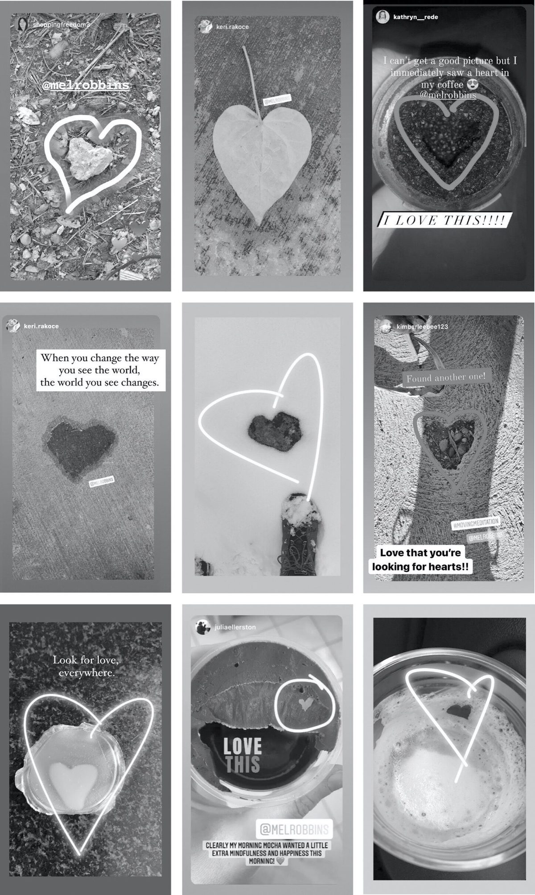
이 연습은 RAS의 힘과, 보고 싶은 걸 말해 주면 마음이 얼마나 빨리 바뀌는지 눈을 뜨게 할 뿐 아니라, 주변 세계를 볼 다른 방식이 존재한다는 걸 증명해 줘요. 그리고 그건 곧, 자신과 그 세계 안에서의 자기 위치를 볼 다른 방식도 있다는 뜻입니다.
이렇게 해봐도 하트가 안 보인다면, 아마 회의적이거나 이 게임이 바보 같다고 생각해서 RAS에게 “중요하지 않아”라고 말해 뒀기 때문일 거예요. 열린 마음으로 이 부정적인 생각들을 뒤집고 싶다면, 인생에서 행동하지 못하게 막는 것들을 치워야 해요. 회의주의, 의심, 냉소는 건조기 속 보풀 같아요. 여러분을 막아서죠. 이건 부담 없는 단순한 상황에서 낙관과 긍정적 사고방식의 변화를 연습하는 방법이에요. 게다가 하트 돌로 하는 이 쉬운 게임조차 못 하겠다면, 판돈이 더 커질 때 기회를 포착하는 게임도 못 하게 됩니다.
세상을 다르게 보세요.
이 연습을 일주일만 해보세요. 매일 걸어 지나치는 온 세상이, 지금은 마음이 경험을 허락하지 않는 세계라는 걸 깨닫게 될 거예요. 저는 이걸 몇 년째 하는데도 여전히 매일 하트를 발견합니다. 소셜 미디어에서 저를 팔로우하면, 제가 발견한 하트를 수시로 올리는 걸 보실 수 있어요. 그리고 매일 전 세계 사람들이 저를 태그하며 자신들이 발견한 하트를 나눕니다.
그리고 여기, 이 경험을 더 증폭시키는 방법이 있어요. 발견한 하트마다 나를 찾게 하려고 일부러 심어 둔 것이라고 여겨 보세요. 실제로 찾았을 때는 잠시 눈을 감고 미소 지으며 설명하기 어려운 더 큰 힘과 이어진 따뜻한 물결이 느껴지는지 확인해 보세요. 저는 그렇게 합니다. 그럴 때마다 하나님과 우주가 내 편이 되어 나를 이끌어 준다고 느껴져요.
여러분이 세상을 다르게 보도록 돕는 힘이 이미 작동하고 있어요. 지금껏 손에 닿지 않던 목표와 성취로 이끌어 줄 단서들도 있고요. 다만 그동안 사물을 잘못된 방식으로 봐 왔을 뿐입니다. 그 하트들을 찾기 시작하면, 말해 준 대로 볼 수 있게 마음이 실제로 바뀐다는 사실에 놀라게 될 거예요.
이걸 정말 잘하게 되면, 인생에 미친 일들이 나타나게 만들 수 있어요. 인생을 돌아보며 점들이 이어져 지금의 나에게 이르게 된 과정을 본 경험, 다들 한 번쯤 있을 거예요. RAS를 훈련해서 ‘내가 보고 싶은 것’을 보게 만드는 게 멋진 점은, 점을 앞으로 이어 가기 시작하게 도와준다는 거예요. 지금 이 순간부터 그리는 미래까지요. 이 책의 도구를 사용하면, 마음은 여러분이 원하는 것을 얻도록 설계된 대로 일합니다. 14장에서는 제 RAS와 흔들리지 않는 믿음으로 기적 같은 일을 내 인생에 실제로 일어나게 만든 믿기 힘든 이야기와, 그 뒤에 숨은 과학, 그리고 여러분도 그렇게 할 수 있는 방법을 풀어 드릴 거예요.
새로운 신념 만들기.
RAS에 대해 알게 되고 하트 찾기를 시작했으니, 이제 머릿속에서 반복 재생되는 그 부정적인 신념들을 다룰 때가 됐어요. 오래된 생각 패턴을 가로막고 원하는 기분으로 바꿔치기해서 치워내는 겁니다.
머릿속 사운드트랙을 바꾸는 세 단계를, 오늘부터 실행해 봤으면 해요:
1단계: “그런 건 생각 안 해.”
부정적인 생각은 언제든 튀어나와요. 그 자체를 막을 수는 없지만 끼어들어 차단할 수는 있습니다. 방법은 이래요. 말로 하는 하이파이브 습관으로 그 부정적인 생각을 손끗 후려쳐 날리는 거예요. 무엇을 생각할지는 내가 고르는 겁니다. 그렇다는 건 무엇을 생각하지 않을지도 고를 수 있다는 뜻이죠. 부정적인 생각이 머릿속을 스치는 순간어떤 일도 안 풀려, 나는 늘 망쳐, 아무도 날 사랑하지 않을 거야즉시 끊어 버리세요. RAS의 방향을 돌려 놓는 강력한 한마디로: “그런 건 생각 안 해.”
필터를 점검한다는 게 바로 이런 뜻이에요. 내 생각을 내가 들여다보는 겁니다. 정말 단순하지만 생각이 많은 사람, 걱정꾸러기, 최악만 그리는 사람, 두려움에 얼어붙거나 불안과 싸우는 사람에게 이건 인생이 바뀌는 경험이 됩니다. 곧 RAS를 제대로 재훈련해서 ’내가 원하는 생각’이 기본값이 되게 하는 법도 알려드릴게요. 그 전에 잠시 여기서 발걸음을 늦춰서, 제가 부탁하려는 일이 정확히 무엇인지 짚고 넘어갑시다. 이 부분걱정을 끊어 버리고 건조기 필터의 보풀처럼 쓱 닦아 내는 것이 결정적이니까요.
몇 년 전 제가 이걸 시작했을 때는 불안하게 만드는 생각들을 끊어 내려고 했어요. 그런데 하루에 몇 번이나 “그런 건 생각 안 해”라고 말해야 하는지 스스로도 깜짝 놀랐죠. 이것 자체가 큰 깨달음이었어요. 내 머릿속에서 부정적인 사운드트랙이 얼마나 자주 노래를 틀고 있었는지 말이에요.
친구가 이메일이나 전화에 바로 답을 주지 않으면, 부정적인 목소리가 속삭이겠죠. 저 사람 나한테 화났나 봐. 그럼 나는 나를 붙잡고 말해요. “그런 건 생각 안 해.”
온라인에서 누군가 라운지 체어에 발을 올린 채 바다를 배경으로 찍은 사진을 올리면, 저도 모르게 질투가 올라오고 목소리가 들려요. 진짜 싫어. 저 사람. 그러고는 곧장 나 자신을 후벼 팝니다. 난 저런 휴가는 평생 못 갈 거야. 그러다 “그런 건 생각 안 해”로 멈춰 세우고요.
사진 속 내가 반바지를 입고 있으면, 저절로 자기 비하부터 시작됐어요. 세상에, 내 셀룰라이트 진짜 역겨워. 그러다 역시: “그런 건 생각 안 해.”
부정적인 목소리에는 약점이 하나 있어요. 끼어들어 입 다물으라는 말을 몹시 싫어한다는 것. 하나씩, 머릿속에 들러붙기 전에 그 부정적인 생각들을 따닥 후려치면 됩니다. 기억하세요. 이 책 처음부터 제가 말해왔듯, 당신의 마음은 당신이 원하는 것을 얻도록 돕도록 설계되어 있어요. 당신은 작고 모험심 많은 탐험가, 두려움 없이 새것을 시도하던 아이로 이 세상에 태어났습니다. 스스로를 믿었고 거울 속 자신을 보는 게 좋았죠. 지금 배우는 도구들은 그 본질로 되돌아가게 해 주는 겁니다.
2단계: 나 자신에게 메모.
“그런 건 생각 안 해”로 빅받이를 마쳤다면, 이제 RAS에게 무엇을 보길 원하는지 알려주는 새 신념을 만들 차례예요그리고 그 신념을 눈에 보이게 만드는 것. 헬스장이나 요가·실내 사이클 스튜디오 벽에 동기부여 문구가 걸려 있는 걸 본 적 있을 거예요. 무엇이든 가능해. 확신은 들이들이고 의심은 내쉬세요. 힘은 당신 안에 있어요. 잘 해낼 수 있어요. 변화를 위해 행동하는 바로 그 장소에 시각적 단서를 배치한 예시죠. 곧 고르게 될 새로운 의미 있는 만트라도 똑같이 하길 바라요. 눈에 계속 보여야 기억하고 실제로 쓰게 되니까요.
하버드와 와튼스쿨 연구자들이 밝혔습니다. 좋은 의도를 실천으로 옮길 때, 단서를 스스로 설정해 두면 더 잘 해낸다는 거예요. 그 단서는 두 가지 조건을 충족해야 해요. (1) 살짝 예상 밖일 것(그래야 뇌가 눈여겨봐요), (2) 그 습관을 실행하는 정확한 장소에 있을 것. 욕실 거울에 단서를 붙이라고 추천해요. 매일 아침 스스로에게 하이파이브하고 만트라를 떠올리게 되니까요.
그렇다면 새 만트라는 대체 뭘로 해야 할까요? 긍정적인 만트라 대부분이 왜 안 듣는지는 이미 설명했어요. 믿지 못하는 말이라 마음이 거부하기 때문이죠. 그래서 “나는 훌륭한 사람이야”, “나는 너무 아름다워”를 입에 달고 반복한다고 마음이 그 증거를 보여주리란 기대를 하면 안 됩니다. 중요한 건 의미 있는 만트라가 지금 당장 믿을 수 있는 말이어야 한다는 거예요. 어떻게 찾냐고요? 제가 좋아하는 몇 개를 소개할게요. 여러 개 시도해 보면서 자기에게 맞는 걸 찾으세요.
소리 내어 말해 보고 마음이 어떻게 반응하는지 보세요. 이 새 만트라가 사실이 아니라고 반박 근거가 백만 개쯤 줄을 서나요? 그럼 다른 걸 시도하세요. 마음이 하이파이브로 화답하는 문장을 만날 때까지요. 의미 있는 문장인지는 금방 알아요. 말하는 순간 거울에 하이파이브라도 날리고 싶은 기분이 들거든요. 속에서 에너지가 치솟으며 즉시 외칠 테니까요, 그래! 맞는 문장을 만나면 스스로 압니다.
의미 있는 만트라
나는 오늘 기분 좋아도 되는 사람이야.
나는 멋진 사람이야.
나는 내 편이야.
내 마음을 부쉈던 것이 내 눈을 뜨게 했다.
이 일은 내가 꼭 알아야 할 걸 가르쳐 주고 있어.
오늘은 좋은 하루가 될 거야.
나는 지금 이대로 충분해.
나는 방법을 찾아낼 거야.
매일 조금씩 더 강해지고 있어.
안 믿겨? 두고 봐.
나는 이걸 해낼 수 있어. 덤벼 봐.
나를 위한 운명은 나를 찾으려 하고 있어.
나는 내가 생각하는 것보다 강해.
나는 아직 다듬어 가는 중이어도 돼.
무섭지만 그래도 해.
나의 새로운 장은 이제 시작되는 중이야.
세상은 내 이야기를 필요로 해.
나는 매일 성장하고 있어.
나는 내가 통제할 수 있는 것에 집중하기로 해.
이 순간은 일시적일 뿐이야.
노력을 쏟아 붓으면 반드시 이뤄져.
High5Challenge.com을 시작한 뒤로, 이 일상 습관을 잊지 않으려고 욕실에 마련해 둔 작은 단서 이야기를 수천 분께 들었어요. 제가 특히 좋아하는 것 몇 가지를 공유합니다:
- 포스트잇에 만트라를 적어 거울에 붙이세요. 하이파이브를 잊지 말라고 알려 주는 쪽지가 됩니다.
- 립스틱이나 아이라이너로 욕실 거울 위에 손 모양을 그리고 그 아래에 만트라를 쓰세요.
- 도화지에 손을 대고 따라 그린 다음 오려서, 가운데 만트라를 쓰고 거울에 붙이세요.
- 화이트보드 마커로 거울에 직접 그리세요.
- 유리병에 나에게 하는 메시지를 가득 담으세요. 매일 아침 하이파이브하고 하나씩 꺼내 보는 거예요!
- 욕실에 물건 하나를 두고(엉뚱할수록 좋아요) 만트라를 적은 쪽지를 붙이세요.
3단계: 되고 싶은 사람처럼 행동하기.
부정적인 신념에게 빅받이하고 새 만트라도 외우고 있죠. 그럼 가장 결정적인 단계가 옵니다. 새로운 긍정적 신념과 어울리는 몸의 행동을 반드시 해내야 합니다.
자신에 대한 평가를 바꾸는 가장 효과적인 방법 중 하나는 ‘행동 활성 치료(Behavioral Activation Therapy)’ 연구에서 힘을 빌리는 거예요. 단순하지만 놀랍도록 효과적인 치료법으로, 이렇게 선언합니다. 지금 기분이 어떻든, 되고 싶은 사람처럼 행동하라. 추진력을 만들어 줄 뿐 아니라, 뇌가 당신이 행동하는 걸 직접 보기 때문에 강력합니다. 오래된 부정적인 생각은 너무 깊이 박혀 있어서 말만으로는 옛 습관과 신념에서 빠져나올 수 없어요. 변화를 위해 행동하는 나를 ‘직접 봐야’ 합니다.
행동은 새 신념이 사실임을 증명합니다. 그러면 RAS가 필터를 더 빨리 바꾸는 데 도움이 되고요. 더 좋은 건, 자신을 사랑받을 자격이 있는 존재로 대우하면 RAS만 바뀌는 게 아니라 자기 수용도 함께 자란다는 거예요. 앞에서 배웠듯, 행복과 만족을 위해 가장 중요한 마음가짐입니다.
예를 들어 볼게요. 우리 딸처럼 음악가가 되고 싶은데 자기 의심에 시달린다면, 자신을 내보이는 사람처럼 행동하기 시작하세요. 곡을 써서 온라인에 올립니다. 동네 공연에 신청해서 무대에 서요. 얼마나 떨리고 두렵고 의심스러운지 상관없이, 어차피 해내는 겁니다. 마음이 당신의 행동을 보면 RAS는 ’이게 이 사람에게 중요한구나’를 깨닫고 음악을 더 많이 할 수 있는 선택지의 세계를 열어 줍니다.
자기 사랑도 마찬가지예요. 생김새를 나무라는 사람이라면, 자신을 사랑하는 사람처럼 행동하기 시작하세요. 거울 앞에서 이곳저곳 찔러 대고 만지작거리는 대신, 고마운 부분에 집중해요. 더 건강한 선택을 하세요. 기분 좋게 느껴질 자격이 있으니까요. 몸을 움직이는 이유도 나를 고치려는 게 아니라, 나를 사랑하고 기분 좋게 느껴도 되니까요. 포스트잇을 거울에 붙이고요. 스스로에게 칭찬을 건네세요. 그리고 매일 아침 꼭 하이파이브하세요. 뇌에 증명하는 겁니다. “나는 그냥 나인 것만으로도 나를 축하하는 사람이야.”
더 깊이 들어가 이 변화를 더 빨리 만들고 싶다면, 다른 사람을 돕는 행동을 하세요. 초점을 자신에게서 돌리는 겁니다. 누구에게 전화해서 안부를 물어보고 자원봉사를 하러 가세요. 남을 돕는 일은 기분이 참 좋을 뿐 아니라, 비참함에서 확 건져 올려 나를 새로운 시선으로 보게 해 줍니다.
하나로 합치기.
그러니 다음에 부정적인 생각이 떠오르면 “그런 건 생각 안 해”로 끊으세요. 새 신념을 소리 내어 말합니다. 그리고 신념이 사실임을 증명하는 행동을 하세요. 거울 앞에서 하이파이브하든, 뇌에 이렇게 증명하는 다른 행동이든요. 이런 기분으로 있으려는 게 나에게는 중요해. 이렇게 자신에게 하는 이야기와, 마음이 실시간으로 세상을 필터링해 보는 방식을 바꾸는 겁니다.
크리스틴이 바로 그렇게 해요. 매일 스스로에게 하이파이브하기 시작했고 놀라울 정도로 강력하다는 걸 알았죠. 체중과 자신감으로 몸부림하던 그녀는 자신을 사랑하기 시작하기 전까지는 어떤 운동 플랜도 통하지 않았다고 깨달았어요. 그래서 벨기에에서 공인 헬스·피트니스 코치가 되어 자기게 효과가 있었던 바로 그것을 여성들에게 가르치는 프로그램을 시작했습니다. 신체 건강은 머리가 얼마나 건강하느냐에 뿌리내리는 것이지 특정 사이즈가 되는 게 아니라는 것, 그리고 건강이란 나를 사랑하고 돌보는 것이라는 걸요.
크리스틴은 클라이언트들에게 거울 앞에서 스스로 하이파이브하는 법을 가르치기 시작했어요. “처음 하이파이브를 가르쳤을 때 여성들은 하기가 민망하더라고요. 자격이 있다고 생각하지 않고 자기 자신이 1순위가 되는 건 비정상이라 여기니까요. 그런데 여성이 스스로에게 하이파이브하고 자신감이 자라는 걸 지켜보면그 행복과 생겨나는 미소… 세상 그 어떤 돈으로도 바꿀 수 없죠!”라고 말했어요.
그러다 크리스틴은 한 단계 더 나아가기로 해요. “당신은 매일 나아지고 있어”, “자랑스러워” 같은 새 신념 문구를 욕실에 붙이고 하이파이브하면서 그 문장을 반복했죠. 도움이 되는 걸 확인하자 현관 거울에도 신념을 추가했습니다. 집에서 코칭 사업을 하니, 들어오는 사람 모두가 보게 하고 싶었던 거예요!
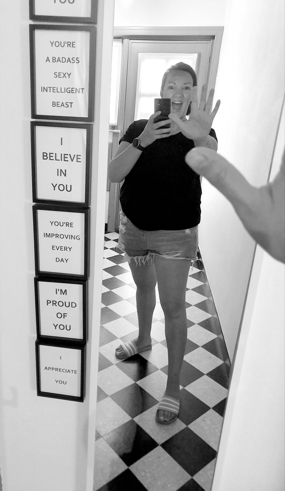
대단하지 않나요? 하이파이브를 하고 신념을 반복하면, 자신을 사랑함을 증명하는 행동이 쉬워진다는 걸 그녀는 발견했어요. “가장 중요한 것 중 하나는 자신을 우선하는 법을 배우는 거예요. 하이파이브와 신념이 그렇게 행동하도록 도와준다죠.”라고 말했습니다.
머릿속 재배선하기.
휴, 정말 많은 걸 다뤘네요. 여러분과 저에게 하이파이브. 잘했어요! 지금까지의 내용을 간단히 짚어 볼게요:
- 욕실에서는 거울 앞 하이파이브 없이 절대 나가지 않는다.
뇌에 새로운 신경 회로를 만들어, 자신을 응원하는 게 새 기본값이 되도록 돕습니다. 그래요, 인생은 마음의 필터에 영향을 주는 잔여물을 남겼지만 이 새 습관을 들이면 바꿀 수 있어요.
- High5Challenge.com에서 #High5Challenge에 등록한다.
제가 응원할게요! 이 5일 챌린지를 완주하는 데 필요한 격려와 꾸준히 해내는 힘을 제가 책임지고 드릴 거예요. 무료에 재미도 있으니, 함께해요!
- 자신의 부정적인 신념을 알아차리고 뒤집기를 실험해 본다.
그 생각들에게 빅받이하고, 믿을 수 있는 의미 있는 만트라로 바꾸고, 몸으로 하는 행동으로 RAS에게 증명하세요. 기회와 긍정적인 것들이 가득한 새로운 세상을 보여 달라고 말이에요.
이제 시작일 뿐.
지금 배우는 모든 것은 당신을 제자리에 묶어두던 사고와 행동 패턴을 깨도록 돕고 있어요. 1장에서 설명했듯, 하이파이브는 자신감, 용기, 행동을 상징합니다. 거울에서 하는 행위 그 이상이에요. 인생에 대한 전체적인 태도죠. 주도권을 잡고, 더 행복해지고, 의미 있는 변화를 만들도록 힘이 되는 태도와 마음가짐을 기르고 세우는 일입니다. 이 도구들은 과거의 보풀을 털어내고 나 자신과 미래에 대한 새로운 긍정적 신념을 만드는 데도 도움이 될 거예요.
이제 인생의 현실에 대해 이야기하고 싶어요. 하이파이브 태도를 가라앉히고, 답답하고 비관하게 만들고, 자신감을 깎아내리는 순간들이 반드시 찾아옵니다. 하이파이브 태도가 사라졌는지는 금방 알아챌 수 있어요. 행동하고 싶은 마음이 들지 않으니까요. 저는 이 자연스럽지만 부정적인 감정 방아쇠를 뒤집는 법을 가르쳐 주고 싶습니다. 일단 이해하고 나면, 손을 들어 거울 속 나에게 하이파이브하듯 간단히 넘어설 수 있어요.
인생을 바꾸기 시작할 준비는 이미 갖췄어요. 하지만 더 깊이 들어가서, 저를 늘 감정적으로 흔들고 마음을 처박는 것들을 다뤄 보려 합니다:
- 질투
- 죄책감
- 열등감
- 뜻밖의 좌절
- 불안
- 두려움
앞으로 한 걸음씩 이 감정들을 하나씩 풀어 보면서 하이파이브 마음가짐을 되찾고 다시 앞으로 나아가는 검증된 간단한 전략을 배우게 될 거예요. 책 끝에서는 하이파이브 습관과 하이파이브 태도를 일상에서 실천하는 방법을 정리한 아주 간단한 안내서도 만나게 됩니다.
자, 그럼 출발점으로, 저를 정신적으로 진땀 빼게 만드는 이것부터 볼까요:
왜 남들에게는 내가 원하는 게 다 있는 걸까? (여기에 한술 더 뜨자면) 남들이 가졌거나 이뤄 놓은 건 나는 평생 못 갖는다며 그냥 여기 앉아서 질투에 절어 있을 거야.
8장
왜 남들 인생은 쉬워 보이고 나만 어려울까?
오랫동안 질투는 저의 골칫거리였어요. 분노와 좌절이 그야말로 저를 집어삼키곤 했으니까요. 한번은 우리 아는 부부가 예쁜 집을 사고 축하 파티를 크게 열었어요. 어린 아이들을 키우며 집 대출 이자조차 겨우 갚아 나가던 시절, 우리 집 다섯 배는 되는 저 집으로 들어서는 문을 지나며 저는 제가 그 자리에서 불타 없어질 것 같았어요. 질투가 차올라 겨우 참을 정도였고 저는 너무 많은 사람들이 하는 짓을 그대로 했어요. 그 감정을 남편에게 똑바로 겨눈 거죠. 돌아오는 차 안에서 저는 ’우리는 저렇게 멋진 집은 영영 가질 수 없어’라며 울음을 터뜨렸고 우리는 크게 싸웠어요.
저에게는 독소 같은 신념이 하나 있었어요. 다른 누군가 내가 원하는 것을 갖고 있다면, 나는 그것을 영영 가질 수 없다는 신념이요. 질투가 무엇인지, 어떻게 내 편으로 써야 하는지 몰랐으니 질투는 그저 제 불안감만 자극했죠. 늘, 끊임없이, 갉아먹듯 남과 비교하면서 사느라 자꾸만 부족함만 발견하게 되면, 그 일을 내 인생에서도 이룰 수 있는 사람이라고 자신을 볼 수는 결코 없어요. 남들은 주인공이 되고 당신은 구석에 앉아 남들이 벌이는 일만 구경하는 관중이 될 뿐이죠. 질투에 빠져 헤어나오지 않으면 우울해질 수밖에 없는 이유 중 하나입니다. 하지만 질투가 얼마나 유용하고 중요해질 수 있는지도 알아 두셨으면 해요.
사람들이 질투를 느낄 때 하는 말들, 들어 보세요:
모두가 인생 게임에서 이기고 있는데 나만 계속 최악의 패를 쥐고 있어. 공평하지 않아… 남들의 빠른 신진대사, 여유로운 휴가, 근사한 집 리모델링, 소파를 물어뜯지 않는 착한 강아지 이야기까지 듣기만 하면 속이 철렁해… 나도 그거 전부 원했다구.
아! 또 시작이네, ’살 빼고 다 갖췄다’는 글… 나도 트레이너만 있었다면 저 모습이 가능했지… ’나는 쉬웠어’라고 딱 한 번 더 말해 보시지… 난 무려 10년 전에 이미 우버를 시작할 생각을 했다니까. 곧 착수하려던 참이었어… 애만 없었으면 훨씬 쉬웠겠지… 남편이 나를 조금만 알아줬다면… 나는 훨씬 힘든 인생을 살았지만 널리 자랑하지는 않아… SNS 필터야 누구나 걸지, 실물로 저 모습으로 나와 보라지… 다들 나를 앞질렀어. 내가 빛날 자리는 없어.
난 끝났어. 이제야 깨달았어. 내가 원한 건 그들의 성공이 MY 성공이 되는 것이었다는 걸. 근데 그들이 성공을 다 챙겨 갔고 내가 이기기엔 너무 늦었어. 그냥 여기 앉아서 열등감에 젖어 있을 수밖에 없겠지.
사실 누구나 한 번쯤은 꿈꾸던 삶의 버전을 도둑맞은 기분을 느껴 봤어요. (다 그럴 만한 이유가 있습니다. 이 이야기의 마지막에 알게 돼요.)
이런 속마음을 반복하다 보면, 남이 이미 해버렸다는 이유로 원하는 것의 문을 머릿속으로 닫아 버려요. 스스로를 포기하죠. 질투가 주도권을 잡고 원하는 삶을 응원하는 대신 자신을 향한 끔찍한 생각과 감정의 죽음의 나선이 시작됩니다.
질투는 당신이 갈망하는 그것을 가질 수 있고 가져야도 한다는 신호라는 걸 이해해 주셨으면 해요. 마음가짐을 바꿔서 미래를 더 설레게 만들고 원하는 삶을 세워 나갈 힘을 얻을 수 있는 도구들을 알려 드릴게요.
그 전에 먼저, 성공을 어떻게 바라보고 있는지 제대로 들여다볼 필요가 있어요. 성공, 행복, 사랑은 한정된 양이라고 믿나요? 저는 오랫동안 그렇게 믿었고 덕분에 제자리를 못 벗어났어요. 성공과 행복이 정해진 양만큼만 돌고 있다면, 나 몫은 남아 있지 않으리라고 생각했죠.
행복과 성공에는 한계가 없고 모두를 위한 것이라는 걸(모두를 위한 거예요!) 깨닫고 나서야, 나만의 버전으로 그것을 이루겠다는 용기와 확신이 자라기 시작했어요. 그 생각 하나만으로 굴레가 느슨해졌어요. 질투에 젖어 있는 것을 멈추고 원하는 것을 얻기 위한 일을 시작하게 된 거죠.
우리는 평생 ’질투하면 안 된다’는 말을 들으며 자라요. 부끄러운 일인 양, 품위 없고 박한 잘못된 행동인 양 말이죠. 하지만 질투는 단순히 막힌 욕망일 뿐입니다. 그 질투를 영감으로 뒤집을 수 있다면 그 막힘은 사라져요. 질투를 인생의 다음 큰 걸음을 알리는 신호로 환영할 수 있다면, 좌절과 불안의 무게는 순식간에 덜리고 다시 하이파이브 마음가짐으로 앞으로 나아갈 수 있습니다.
질투라는 게 어떻게 작동하고 어떻게 영감으로 바꿀 수 있는지 이해하려면, 질투와 자기혐오, 낮은 자존감, 압도적인 자기의심이 뒤섞인 흐린 늪부터 시작하는 게 적격이겠죠. 바로 소셜 미디어입니다.
아무도 말해 주지 않는 질투의 진실.
얼마 전, 딸이 소셜 미디어를 스크롤하고 있는 걸 지켜보다가 물었어요. “뭐 생각하고 있어?”
딸이 말했어요. “인스타그램에 들어가면 다른 사람들의 인생, 직업, 경험을 보면서 나도 내 인생을 저렇게 살고 싶다고 생각해. 그런데 아무리 갖고 싶어도 나한텐 절대 일어나지 않을 일이라고 스스로를 설득해 버려. 그러면 자꾸 자신이 초라해져.”
그래서 물었죠. “절대 안 될 거라 생각하면서도 갖고 싶은 경험이 하나 있다면 뭔데?”
딸이 답했어요. “얼마 전에 SNS에서 어떤 여자애 영상을 봤는데, 멕시코 섬으로 이주해서 그곳에서 일자리를 구하고 지금 해변에서 인생 최고의 시간을 보내고 있더라구.”
“오, 멋있겠다. 너도 저질러 보면 되잖아?”라고 했더니,
딸이 말했어요. “엄마, 말은 쉽지. 그 애를 보고 질투가 났어. 나도 그렇게 살고 싶거든. 난 늘 여행하고 탐험하는 게 꿈이었는데, 그 애가 한 일은 생각조차 차마 못 했어. 아무래도 속으로는 저 애는 좋겠다, 근데 나는 저런 건 절대 못 해라고 생각했던 것 같아. 엄마, 나 시간이 다 떨어져가는 것 같아. 벌써 스물두 살이거든.”
’벌써 스물두 살’이라는 말에 첫 번째로 든 생각은 장난하냐, 진짜?였죠. 다행히 입 밖엔 내지 않았지만요. 두 번째 생각은 벌써 저렇게 스스로에게 압박을 준다고? 인생은 이제 시작인데. 세상에서 제일 많은 게 시간이고 저런 멋진 일은 바로 지금 할 때인데였어요. 이것도 말하지 않았고요. 그냥 들어줬죠:
“지금 나는 그냥 여행하면서 일할 수 있으면 좋겠어. 여행은 내 꿈이니까. 근데 눈에 보이는 건 방해물과 어차피 안 될 이유들뿐이야. 나는 그런 걸 그냥 저질러 버리는 부류가 아니고 어차피 잘될 것 같지도 않고. 멕시코에서 인생 최고로 사는 그 애를 보면 질투가 나. 저건 그 애한테 좋은 거겠지만 내 인생엔 절대 없을 일이니까.”
그러자 저는 부모로서 배운 것 중 최고의 한마디를 꺼냈어요. “그냥 들어줄까, 아니면 엄마 생각을 말해 볼까?”
딸은 저를 보며 말했어요. “엄마 생각이 듣고 싶어.”
저는 이렇게 말했어요. “가장 마음에 걸리는 건, 네 자기의심이 네 가장 깊은 꿈과 욕망을 탐색해 보는 것조차, 그쪽으로 기대어 보는 것조차 막고 있다는 거야. 넌 뭘 원하는지 정확히 알고 있잖아. 중학교 2학년 때 할머니랑 캄보디아에 갔을 때부터 네 마음은 늘 여행하고 이 세상을 탐험하고 싶어 왔단다. 네가 느끼는 걱정과 의심은 다 정상적인 거야. 우리 모두에게 있는 거니까.
“나는 절대 안 될 거야라고 생각하는 한, 꿈꾸는 일에는 움직이지 않게 돼. 두렵도록 하고 싶은 걸 다른 사람들이 해내는 걸 보며 질투가 나는 건 당연해. 그런데 원하는 걸 머릿속으로 생각하기만 한다면, 그건 꿈이 아니야소원이지. 꿈에는 행동이 필요해. 동반자도 요구하지. 그쪽으로 나아갈 용기를 냈을 때 비로소 현실이 되는 거야.”
이 대화에 공감한다면, 자기의심투성이가 되어 있을 때 꼭 깨달아야 할 간단한 사실이 있어요. ’넌 이걸 가질 수 없어’라고 말한 건 세상이 아니라, 바로 당신 자신이라는 것.
뒤집기(Flip It).
다른 사람들이 먼저 해치운 게 아니라는 걸 배워야 해요. 그들은 길에 불을 밝혀 주는 사람들이고 그 과정에서 당신과 하이파이브도 나눌 수 있는 사람들이에요! 거울 앞에서 패배자 대신 있는 그대로를 보세요. 그 일을 이루는 데 나 자신이 최고의 동맹이라는 걸 보는 거예요. 나 자신을 인생 최고의 파트너로 받아들이면, 갖고 싶어 애 타는 것을 얻기 위해 맺게 될 다른 동반자들에게 놀라게 될 겁니다. 인생의 가능성을 보면 당신도 달라져요. 질투에 젖어 있는 대신 하이파이브하며 앞으로 나아가는 사람이 되는 거죠. 막힌 것을 행동하려는 영감으로 뒤집는 겁니다.
질투가 느껴지는 삶의 모든 영역에서, 그것을 영감으로 뒤집을 거예요:
현재의 제한적 신념: 다른 사람이 가졌다면, 나는 가질 수 없다.
뒤집기: 그들의 성공은 내가 가질 수 있다는 증거일 뿐이다.
질투는 당신에게 무언가를 말하고 있어요.
잠시만, 당신이 누구를 질투하는지 떠올려 보세요. 당신 삶의 누군가일 수도 있고 멀리서 존경하는 누군가일 수도 있죠. 이제 그 질투라는 감정을 주목하려는 신호라고 여겨 보세요. 느껴지는 질투에서 눈을 돌리지 마세요. 숨기려 들지도 마시고 질투가 무섭게 하거나 부끄럽게 만들게 놔두지도 마세요. 오히려 마주하세요. 무엇을 원하는지 가장 빨리 알아내는 길이기 때문이에요.
질투는 호기심이나 욕망처럼 내비게이션 도구예요. 인생을 어느 방향으로 몰고 가야 하는지 알려 주는 거죠. 내일 거울 앞에 서면, 그 하이파이브에 원하는 것을 위해 노력하겠다는 결심의 의미를 담으세요. 받을 자격이 되기 위해서. 그리고 그걸 향해 나아갈 힘을 스스로에게 주기 위해서요.
우리 딸의 경우, 멕시코에서 겨울 내내 지내며 일한 친구를 보고 질투를 느꼈어요. 좋은 일이에요. 딸은 그 질투를 따라가야 합니다. 질투가 그녀가 가장 갈망하는 것으로 이끌어 주고 있으니까요. 당신도 누군가 당신이 갈망하는 일을 하는 모습을 보면 아플 수 있어요. 대부분은 그 통에 갇힌 채 머무르죠. 그 통을 반드시 자신에게 유리하게 쓰세요. 변화를 일으키는 영감으로 뒤집는 겁니다.
우리 딸이라면 그 아이에게 메시지를 보내 이렇게 말하면 돼요. “당신과 이야기하고 싶어요. 당신이 하는 일을 나도 하고 싶고 배우고 싶어요.” 원하는 것 쪽으로 기우는 데 필요한 건 이게 전부예요. 이 행동 하나만으로 질투는 영감이 됩니다.
또 하나 할 수 있는 일은, 소셜 미디어를 훑으며 세상을 여행하며 일하는 사람들의 계정을 팔로우하기 시작하는 거예요. 원하는 것의 증거를 더 많이 볼수록 RAS가 빠르게 바뀌는 데 도움이 돼요. 내게도 일어날 수 있다는 걸 알게 되는 거죠. 원하는 것을 향해 한 걸음 내디디면 질투는 사라지고 당신에게 예정된 것은 당신을 찾는 데 한 걸음 더 다가선답니다.
특히 뭘 원하는지 잘 모르겠다면, 이렇게 시작해 볼 수 있어요:
당신 삶의 사람들을 다시 들여다보세요. 누구를 질투하고 있나요?
그 사람의 에너지, 열정, 긍정적인 태도를 질투하는 걸 수도 있죠. 유튜브 채널이나 일궈 낸 사업일 수도 있어요. 단단한 친구 무리이거나 시작한 비영리 단체일 수도 있고요. 건강을 챙기는 방식, 라이프스타일, 진정성, 사는 곳, 혹은 새로운 것을 끊임없이 시도하며 자신을 세상에 내미는 그 모습일 수도 있어요.
이제 더 깊이: 욕망이 끄는 쪽으로 몸을 맡기세요.
질투에 빠져 그대로 가라앉아 있지 말고 질투를 풀어 보세요. 이 사람의 인생이나 커리어의 구체적으로 어떤 점이 질투를 불러일으키는 건가요?
보통 우리는 질투가 불안감을 키우도록 내버려 둬요. 남들이 하는 일이나 가진 것을 보고 그걸 원하는 자신을 틀린 것으로 만들죠. 그건 그것을 내 인생에서 이루어 낼 능력이 있다고 믿지 않기 때문이에요.
친구의 주방 리모델링을 보면 초라하게 낡은 우리 집 주방이 신경 쓰이고 그러다 보면 함께 사는 사람에게 화가 나요. 두 사람이 집을 고칠 돈을 모으는 일을 우선순위에 두지 않았으니까요. 앞서 고백했듯, 크리스와 재정적으로 힘들던 시절 이 일은 저에게 아주 흔했어요. 새 가구를 사거나 집을 증축하거나 멋진 휴가를 가는 친구를 볼 때마다 미칠 것 같은 질투를 느꼈죠. 그런 걸 내 손으로 만들어 낼 수 있다는 확신이 없었으니까요.
’우리는 저런 인생은 영영 못 살 거야’라고 스스로에게 말할 때면 참 슬펐어요.
돌아보니 무슨 일이었는지 정확히 말해 줄 수 있어요. 집과는 아무 상관 없었고 크리스와도 상관 없었어요. 그렇게 좋은 것을 살 수 있을 만큼 성공하고 싶다는 저의 욕망, 그리고 제 야말의 문제였죠. 그런데 그때 저는 야말을 품고 있지 않았어요. 대신 크리스에게 커리어를 키우고 더 많이 벌어서 내가 원하는 걸 주라고 밀어붙이고 있었죠. 하지만 당신의 욕망은 당신의 책임이지 남의 책임이 아닙니다. 경제적 풍요를 원한다면 배우자에게 심술부리는 것으로는 생기지 않아요. 거울 앞에서 원하는 것에 대해 자신에게 솔직해지는 것그게 얻는 방법입니다.
주방은 해당 없을 수도 있어요. 남자 형제의 건강 변화가 마음을 어질어질하게 만들 수도 있죠. 페이스북에 그 과정을 기록해 올리는데, 1년 전부터 운동을 시작했더라면 하는 후회가 되어요. 처음엔 그의 글이 영감을 줬지만 이제는 살이 빠지는 모습에 짜증이 나요. 심지어 온라인에서 그렇게 행복하고 열정적으로 보이는 형제를 보며 눈을 치켜세우게 되죠.
그의 글을 보며 질투와 비꼬는 마음이 올라온다면, 그건 당신이 원한다는 뜻이에요. 자기의심에 막혀 있을 뿐이죠. 이 밀고 당기기욕망은 당신을 끌어당기는데 의심과 두려움이 계속 밀어내는를 보기 시작하면, 어디에서나 보이기 시작합니다. 당신에게 예정된 것을 너무나 간절히 원해서, 아직 갖지 못했다는 걸 떠올리게 되면 아픈 거예요… 아직은요.
커리어와 사업에서도 같은 일이 벌어져요. 예컨대 이웃의 새 스킨케어 사업은 오래 못 갈 거라고 생각했다 칩시다. 그녀는 제품을 써 보라고 너무 많이 부탁해서, 그 열정은 좀 부담스러우면서도 정말 인상적이에요. 솔직해지자면, 그녀는 엄청나게 재미있어 하면서 돈도 많이 버는 것 같고 이 회사를 통해 생긴 새로운 친구들이 질투스럽기까지 하죠.
그녀를 밀어내는 대신, 욕망의 끌림에 몸을 맡겨 보세요. 그녀가 하는 일에는 당신을 위한 무언가가 있어요. 어떻게 알까요? 질투가 나니까요. 그리고 운이 좋은 거예요. 당신을 부르는 길을 가고 있는 사람에게 전화기를 들고 이야기할 수 있으니까요. 스킨케어를 팔아야 한다는 뜻이 아니에요. 연락해서 전화를 걸고 그녀의 여정을 물어보면, 그 대화 속에서 내게 무엇이 빠져 있는지 알려 줄 단서를 얻게 될지도 몰라요. 그 전화 한 통만으로 의심은 씻겨 나가고 질투는 영감을 얻은 행동으로 뒤집힙니다.
아니면 막내가 대학을 떠나 아이들이 모두 떠난 빈 둥지 부모가 되었을 수도 있죠. 아이들을 집에서 곁에 두고 키울 수 있던 그 시절이 참 소중하죠. 하지만 지금은, 아이를 키우며 일했던 여자 친구들이 극도로 불안하고 질투스럽게 만들어요. 이력서에는 20년짜리 공백이 생겼고 어디서부터 시작해야 할지 감이 안 오죠. 뭘 해야 할지 모른다는 건 아무것도 하지 않을 핑계가 되지 않아요. 가장 먼저 할 일은 그 끌림을 따라 연락을 돌리고 그 친구들과 당신 삶의 다른 사람들과, 분명히 만들고 싶은 인생의 다음 장에 대해 이야기를 시작하는 거예요.
당신 삶에 무언가 빠져 있다고 스스로에게 인정하는 것보다, 남을 부러워하거나 판단하는 게 더 쉬우니까요. 행동하지 않으면 자기의심과 질투는 계속 쌓이기만 합니다. 당신은 인생의 다음 장에서 믿기 힘든 일을 해내도록 예정되어 있어요. 그것이 당신에게 예정된 것입니다. 질투가 당신을 막게 두지 마세요. 영감으로 뒤집고 그 무언가를 찾으러 나아가면 됩니다.
이 조언은 여러분에게만 하는 게 아니에요. 나 자신에게도 하는 말이니까요.
예전의 나는 자기 의심과 질투에 속속들이 잡아먹히던 사람이었어요. 하지만 이제는 질투가 그저 막혀 버린 욕망일 뿐이라는 걸 아니까, 그걸 내가 원하는 것을 얻는 데 어떻게 써야 하는지도 알게 됐죠. 질투는 지극히 평범한 감정이고 나도 하루 빠짐없이 질투의 찔림을 느낀답니다. 거의 소셜 미디어를 스크롤할 때마다 벌어지는 일이에요. 나는 그 감정을 곪게 내버려 두지 않고 오히려 나를 ‘내 운명’ 쪽으로 끌어당기도록 내보내요. 속으로 이렇게 말하죠. 오, 재미있네나 지금 질투하고 있어. 그 감정을 들여다보고 행동으로 옮기고 싶게 만드는 신호로 바꾸는 거예요.
지금 내 커리어에서 앞을 내다보면, 가장 질투 나는 사람들은 이미 팟캐스트를 시작해 론칭까지 마친 사람들이에요. 예컨대 내 친구 루이스 하우스는 The School of Greatness(스쿨 오브 그레이트니스) 팟캐스트를 7년째 진행하고 있죠. 나는 루이스가 어찌나 부러운지 몰라요. 사실 히트 팟캐스트를 가진 친구가 한둘이 아니고 나는 그들 모두를 질투합니다. 솔직히 다 열거하기도 어려울 정도예요! 전에는 별생각이 없었는데, 돌아보니 나는 팟캐스트 호스트 친구들 사이에 둘러싸여 살고 있더라고요.
질투부터 하고 나서 (여러분도 그러신다면 알려줘요), 막상 아직 시작하지 않았다고 스스로를 다그치는 거죠. 나의 재능은 목소리예요. 누군가와 마주 앉아 인생에 대해 이야기할 때 내가 가장 빛나요. 무대에서도 그러하고, 여러분을 코칭할 때도 그러하고, 오디오북에서도 그러했고, 낮 시간대 토크쇼 진행자로 일할 때도 그랬어요. 난독증과 ADHD 탓에 글쓰기는 내게 콘텐츠를 만드는 가장 어려운 방식이지만 마이크에 대고 말하는 건 식은 죽 먹기죠.
팟캐스트를 만드는 건 물 한 잔 마시듯 자연스럽고 매끄러운 일일 거예요. 절대 좋아할 것 같기도 하고요. 그런데 왜 나는 팟캐스트를 시작하지 않았을까요? 딸이 세계일주 계획을 아직 세우지 않은 이유와 같아요. 지난 몇 년 동안 줄곧 네 귓가에서 속삭여 온 그 꿈을 여러분이 좇지 않는 이유와도 같죠. 너무 갖고 싶지만 의심이 네 인생엔 절대 일어나지 않을 거야라고 설득해 버린 거예요. 넌 이미 늦었어. 다른 사람이 먼저 가져갔어. 하면 그저 따라 하는 꼴이 될 거야.
사실 이렇게 적고 보니 말도 안 되는 소리예요. 토크 라디오 시절 쓰던 마이크를 꺼내 녹음 장비에 연결하고 팟캐스트를 녹음하지 못하게 막는 건 아무것도 없어요. 아니면 그냥 아이폰의 음성 메모 버튼을 눌러 Record 버튼을 누르면 그만이고요. 나를 막는 건 나밖에 없는데 말이죠.
나는 나 자신에게 이렇게 말해 왔어요. 너무 늦었어. 기회의 창은 닫혔어. 온 세상 다 팟캐스트를 하잖아지금 와서 내 게 성공할 리 없어. 이 팟캐스트 여정에서 나보다 먼저 간 사람이 그렇게 많은데, 내가 뭘 다르게 할 수 있겠어? 나는 내 망상활성계(RAS)에게 시작하지 말아야 할 이유만 보여 달라고 훈련시켜 온 거였어요. 으악. 이렇게 고백하고 나니 궁금해졌어요. 과연 팟캐스트가 몇 개나 될까? 10만 개쯤 되려나 싶어서 구글에 검색해 봤죠. 충격을 각오하세요.
세상에는 200만 개에 육박하는 팟캐스트 쇼가 있고 개별 에피소드는 4,300만 개에 이릅니다. 200만 개라니?! 빨래를 한 번 돌리면 반드시 보풀이 생긴다고 내가 말하던 거 기억하죠? 하루를 보내는 동안 부정적인 생각이 안 들 수는 없죠. ’200만 개의 쇼’라는 글자를 보고 가슴이 철렁했어요. 하아…. 그런 순간이 오면, 마음의 필터를 문질러 닦는 상상을 해야 해요. 그래야 내게 예정된 것에 대해 마음이 계속 열려 있으니까요. 그 하아…를 손으로 훅 털어내 버리고 “그래도 나는 한다”로 뒤집는 거예요.
이제 질투에 주목하기 시작하세요. 영혼이 향해야 할 곳이 어디인지 질투가 무엇을 가르치려 하는지 파악하는 거예요. 그러지 않으면 질투는 점점 강해지고 점점 목소리가 커져서 영혼을 산 채로 잡아먹고 말 거예요. 운명을 보여 주는 목적지를 앞에 두고 바라봐야 할 대신, 나보다 먼저 도착한 모두를 두리번거리며 쳐다보게 되는 거죠.
그렇게 되지 않도록 합시다.
질투를 영감이 담긴 행동으로 뒤집는 데 도움이 될 몇 가지 질문이에요**여러분에게 그 하이파이브가 필요하니까요:
- 누구를 질투하고 있나요?
- 그 사람들, 그들이 하는 일, 그들이 가진 것 중에서 무엇이 당신을 끌어당기나요?
- 영감을 주는 부분은 어디인가요?
- 마음에 들지 않는 부분은 어디인가요?
- 그걸 자신만의 것으로 만들려면 어떻게 비틀어 볼 수 있을까요?
- 스스로 그것을 좇는 걸 허락하지 못하게 막아 온 부정적인 생각은 무엇인가요?
이 질문들을 스스로에게 던져 보면, 내 영혼이 나에게 무엇을 말하려 하는지 아주 분명해져요. 커리어의 다음 장에서는 팟캐스트 론칭을 1순위 목표로 삼아야 한다는 것. 원고가 끝나는 대로 시작할 수 있는 한 가지는 론칭 플랜을 세우는 거예요. 그다음에는 친구들 모두에게 연락해 조언을 구할 수 있겠죠. 관련 온라인 강의를 들어도 좋고 팟캐스트 업계 행사에 등록해 볼 수도 있어요.
행동을 시작하는 순간 그 질투는 사라질 거예요. 여러분에게도 마찬가지고요.
우리 딸에게도 같은 일이 일어났어요. 그 대화 며칠 후, 딸은 멕시코에 사는 친구에게 연락해 계획을 짜기 시작했어요. 여행 일정을 짜고 소셜 미디어에서 팔로우하는 사람들을 바꿔서 더 많은 영감을 받도록 했죠. 대학 졸업 후에 시작할 직장을 원래 계획보다 몇 달 늦게 시작해도 되는지 상사에게 물어보기도 했고요. 마치 영약을 마신 것처럼 갑자기 에너지와 활력이 넘쳐흘렀어요. 딸은 질투를 영감으로 바꿔 자신이 원하는 것을 향해 진짜 행동을 시작한 거예요. 그보다 활력을 주는 건 없죠.
그리고 여기 또 하나 멋진 사실이 있어요. 바꾸거나 이루기 위해 노력할 의향이 없다면, 질투할 자격도 없다는 거예요. 그건 정작 원하지도 않으면서 내게 없어 보이는 것에 집중하는 습관이 있다는 뜻이기도 하죠.
질투를 영감으로 뒤집는 이 습관이 좋은 점은 단순한 데다 굉장히 아름답다는 거예요. 내가 믿는 인간의 본질, 즉 우리 모두는 이 찬란한 삶의 공동 창조자라는 사실을 확인해 주니까요. 우리는 서로에게 깊이, 에너지의 차원으로 연결되어 있어요. 한 사람의 성공은 모두가 함께 누리는 성공이 될 수 있습니다. 서로의 성취가 우리를 들어 올리고 그 귀감이 우리에게 영감을 주죠. 그래서 앞길에 있는 그 모든 사람들과 경쟁하는 대신, 내가 원하는 걸 얻도록 도와줄 동맹이 보이게 됩니다. 그리고 이걸 결코 잊지 마세요. 삶에서 앞으로 나아갈 자신감을 찾아가는 동안, 당신은 아직 막혀서 뒤에 서 있는 누군가의 길 위의 빛이 된다는 걸요.
9장
아무 말도 하지 않는 편이 더 쉽지 않을까?
죄책감은 세상에서 가장 강력한 감정 중 하나예요. 죄책감을 잘 느끼는 타입이라면, 거기서 벗어나는 법을 알아야 합니다. 죄책감은 말의 고삐와 같아요. 당신의 영혼을 아름다운 준마라고 상상해 보세요. 저 말은 오직 자기 힘과 강함과 속도를 느끼고 싶어 해요. 등에 햇살을 받고 갈기에 바람을 맞으며 들판을 질주하고 싶어 하죠. 하지만 죄책감이라는 고삐는 팽팽하게 당겨서 영혼의 속도를 늦추고 결국 그 자리에 멈춰 세워 버립니다. 꿈을 향해 달려가려 하면 사랑하는 누군가가 상처받거나 실망할 거라고요. 영혼은 복종하는 수밖에 없어요.
마라톤 훈련을 시작하면 배우자가 원망할 거예요.
주말에 부동산 영업을 시작하면 상사가 알아채고 화를 낼 거예요.
동네를 떠나 옮기면 옛 친구들이 너흰 우리보다 잘난 척한다는 눈치를 줄 거예요.
런던의 그 직장을 잡으면 아이들이 중학교를 강제로 떠나야 하고 당신을 영원히 용서하지 않을 거예요.
때로는 이렇게 더 교묘하게 들리기도 해요:
근데… 저 지금 글루텐 끊는 중이에요. 네네, 라자냐 한 조각 먹을게요, 할머니… 물론이죠, 그 추가 업무 제가 할게요, 이미 일에 산 채로 묻혀 있어도요… 성인이 된 자식들이 집에서 나가길 바라는 건 저 나쁜 엄마인가요?… 제 픽업트럭을 빌려 가고 싶다고요? 그러니까, 음, 그렇죠 뭐… 올해도 (또) 시누이 집 크리스마스 이브에 안 가고 싶다는 건 저 박한 인간인가요?… 내가 마라톤 훈련이나 하면 애들이 길거리를 떠돌게 될 거야. 그냥 이게 편하지… 아무 말도 안 하면.
죄책감은 살인마예요.
죄책감에 대해 가장 흥미로운 건 얼마나 오해받고 있는 감정인가예요. 다른 사람이 당신에게 죄책감을 ‘느끼게 만든다’고 생각하실 테죠. 전혀 아니에요. 사실 죄책감은 스스로에게서 나오는 감정입니다. 죄책감은 당신 자신의 가치관과 정서적 방아쇠와 묶여 있어요. 무언가에 ’죄책감을 느낄’ 때는, 하고 싶은 말이나 행동이 남을 다치게 하거나 나에게 화를 내게 될 거라 믿기 때문이에요.
다른 사람이 나에게 화를 내거나, 실망하거나, 서운해하거나, 짜증을 낼 거라는 생각바로 그게 당신의 ‘죄책감’에 기름을 붓는 거예요. 그냥 외면해 버리는 게 편해라는 말은, 나에게 서운해하는 사람을 상대하지 않는 편이 쉽다는 뜻이죠. 회사에서 동료의 근무 교대를 부탁받고 “아니오”라고 말해서 죄책감을 느끼든, 늘 붙어 다니는 친구를 고기 구이 모임에 초대하지 않아서 죄책감을 느끼든, 올해 명절을 내가 주최하고 싶은데 시어머니가 항상 추수감사절을 주최해 왔으니까 죄책감을 느끼든당신이 하고 싶은 게 뭔지는 알고 있어요. 다만 나 자신과 내 필요를 우선하는 순간 올 것이라 ’예상되는’ 감정적 후폭풍을 마주하기 싫을 뿐이죠. 죄책감이 불편하니까, 당신은 굴복하고 만 겁니다.
캘리포니아로 이사하고 싶지만 부모님이 슬퍼하실 걸 알아서 죄책감을 느껴요. 승진했지만 메리는 승진 제안은커녕 받지도 못했고 그녀도 자격이 충분하니까 죄책감을 느껴요. 간호학교에 가고 싶지만 집에서 빈자리를 메워 줄 사람이 없어지니까 죄책감을 느껴요.
나도 이 부분은 아직도 싸우고 있어요. 사람들이 실망하게 내버려 두면서도 자신을 저버리지 않는 법을 배우는 건 쉽지 않으니까요. 하지만 할 수 있어요. 그리고 그게 인생을 바꿔 줄 겁니다.
당구대 이야기를 하나 해 드릴게요.
우리 아버지의 취미는 차고 세일이나 에스테이트 세일(고인의 유품을 정리해 파는 판매)에서 발견한 골동품 당구대를 사서 복원하는 거예요. 크리스와 결혼할 때 아버지가 주신 결혼 선물은 1870년대에 만들어진 브런즈윅(Brunswick) 당구대였어요. 보스턴 교외에 산 우리의 오래된 농가와 같은 시대 물건이었죠. 그런데 결혼 후 그 당구대는 몇 년 동안 미시간에 있는 부모님 지하실에 놓여 있었어요. 크리스와 나는 둘 곳이 없었으니까요. 내 사업이 자라기 시작하면서 집에 새 차고와 그에 딸린 놀이방을 지을 수 있게 됐어요. 아버지께 그 얘기를 하자 무척 신나 하시며 말씀하셨죠. “잘됐네! 드디어 당구대를 둘 곳이 생겼구나!” 네? 당구대요??
이제 본격적으로 피플 플리징이 시작됩니다!
아버지께서 당구대 전문가들에게 비용을 내고 집으로 불러 정성껏 조립하게 하셨어요. 석판을 수평으로 맞추고, 천을 매끈하게 다듬고, 가죽 꼬임 포켓을 하나하나 달았죠. 당구대는 정말 멋졌어요. 그리고 새로 지은 놀이방의 절반을 통째로 차지했습니다. 보아하니 죄책감은 깊이 지각과 정확하게 측정하는 능력을 심각하게 떨어뜨리는 모양이에요. 아이들은 방 양쪽 끝에서 놀고 당구대는 마치 방 안의 코끼리처럼(모두가 보지만 아무도 입에 담지 않는) 가운데 앉아 레고로 덮여 있었어요. 우리가 당구를 치며 쓸 일은 거의 없었으니까요. 아이들이 자라고 사업이 커지기 시작하면서 놀이방은 더 이상 필요 없어졌어요. 이제 필요한 건 사무실이었죠. 하지만 나는 감히 당구대를 옮기지 못했습니다.
죄책감이 당신을 걸레짝으로 만들면, 모두가 문처럼 보여요.
그 후로 2년 더, 당구대는 천을 입힌 항공모함처럼 사무실에 자리 잡고 있었어요. 방 한쪽 끝에서 다른 쪽 끝으로 가려면 모두가 그 주위를 돌아가야 했죠. 나는 집에서 회사를 운영하고 있었지만 ’사무실’에는 책상을 놓을 공간이 없었으니, 직원들은 내 주방 아일랜드에, 거실에 앉아 일했어요.
나는 그 공간을 되찾고 싶었지만 나(다시 말해 죄책감)는 당구대를 옮길 수 없었어요. 왜? 나는 아버지를 거의 누구보다 사랑하고 아버지를 실망시키고 싶지 않았으니까요. 당구대를 볼 때마다 아버지 생각이 났죠. 그리고 부모님과 떨어져 살다 보니, 매사추세츠 집에 미시간의 물건들이 있는 게 참 좋았고요.
대륙 반쪽을 사이에 두고 살다 보니 부모님은 1년에 몇 번만 우리를 방문하셨어요. 당구대를 옮겨도 아버지는 이해하실 거란 걸 알았지만 그래도 창고에 처 넣는 일은 그토록 사랑으로 선물해 주신 부모님에게 뺨을 후려치는 것 같았죠.
매일 생각하면서도 나는 전화기를 들어 아버지와 그 얘기를 나누기를 거부했어요. 왜냐면 나는 피플 플리저니까요. 누군가를 실망시킨다는 생각만으로도 몸이 아파오거든요.
경고: 이제부터 하는 말은 기분 나쁠 수 있어요(하지만 들어야만 해요).
다른 사람을 기쁘게 해 주는 게 정말 하고 싶은 일이고 그게 행복을 준다면 훌륭한 일이에요. 문제는 남이 화를 낼까 두려워서 자신의 필요를 배신하기 시작할 때 생겨요. 지금은 아버지를 실망시키지 않으려던 이야기를 하고 있지만 이건 훨씬 큰 문제예요. 피플 플리저로서 나는 당신의 정서적 반응을 조종하려고 뭐든지 해요. 조종이라는 단어를 일부러 씁니다. 당신이 불편해할 걸 알았으니까요. 피플 플리저들은 자신이 ’착한 짓’을 하고 있다고 생각하니까요.
아니요, 우리는 거짓말쟁이예요. 피플 플리저라면 남이 나를 어떻게 생각할지 조종하려고 행동해요. 그래서 에너지 대부분을 자기 연출에 쏟는 거죠. 잘 어울리고, 좋아 보이고, 아무도 나에게 화내지 않도록. 당신은 남들이 나를 생각하는 걸 조종하고 있는 거예요. 그냥 있는 그대로의 자신으로 나타나 자신에게 맞는 결정을 내리는 대신, 다른 사람이 서운해하지 않도록 스스로(그러니까 이 경우엔 새로 지은 놀이방을) 비틀어 꼬아 버리는 거죠.
용기와 자신감은 죄책감을 녹입니다.
The 5 Second Rule(『5초 법칙』) 책의 모든 장을 편집하려고 당구대를 작업대 삼아 펼쳐 놓던 때였어요. 그러다 깨달았죠. 다른 사람들에게 인생의 주도권을 잡는 용기와 자신감을 찾는 법을 가르치고 싶다면, 나부터 아버지와 이야기할 용기와 자신감이 필요하다는 걸요.
나는 내 필요, 그러니까 사무실을 갖는 것, 심지어 내 성공마저 깎아내리고 있었어요. 아버지에게 내 마음을 말하기가 너무 무서워서요. 아버지께 전화를 해야 했습니다.
그 대화를 하루 미룰 때마다, 내 사무실에 들어설 때마다 갈등을 하루 더 느꼈어요. 그게 나를 안쪽부터 갉아먹었죠. 이건 아버지께도 공평하지 않았어요. 아버지는 내가 갈등하라고 당구대를 주신 게 아니에요. 즐기라고 주신 거죠.
뒤집기(Flip It).
이미 말했던 걸 반복할게요. 피플 플리징은 다른 사람에 관한 게 아니에요. 당신의 불안감에 관한 거죠. 그리고 나의 가장 깊은 불안은 사람들이 나에게 화를 내는 거예요. 이 지점에 도달하는 데 큰 역할을 한 건 내 제한적 신념을 뒤집은 일이었어요:
현재의 제한적 신념: 누군가 당신의 결정에 실망하거나 화를 내면, 그 사람은 당신을 사랑하는 걸 멈춘다.
뒤집기: 사람은 당신에게 실망하거나, 당신이 내린 결정에 화를 내면서도, 여전히 당신을 사랑할 수 있다.
나도 세 아이를 둔 부모로서, 아이들은 화가 나게 하고, 슬프게 하고, 찌릿한 실망을 안겨 주는 일을 늘 해요. 그래도 내가 세 아이를 사랑하는 깊이가 흔들린 적은 단 한 번도 없죠. 그런데 딸로서의 나는 아직도 어린애처럼 생각하고 있었던 거예요. 부모님이 내가 하는 모든 일을 승인해 줘야만 나를 사랑하신다고.
5초 법칙만큼 간단한 해결책을 주고 5-4-3-2-1만 세면 마법처럼 피플 플리징이 해결되고 실망의 찌릿함이 사라진다고 말해 줄 수 있다면 좋겠어요. 하지만 인생은 그렇게 작동하지 않아요. 관계란 주고받는 것이니까요. 사랑과 실망이 공존할 수 있고 실제로 그런 경우가 많다는 깨달음까지 나는 45년이 걸렸어요.
착한 딸이라면 절대 이러지 않아요.
어려운 대화는 당신이 ’이제 할 때가 됐다’고 결정해야 일어나요. 나에게도 딱 그렇게 일어났죠. 어느 날, 그냥 전화기를 들고 아버지께 전화를 걸었어요. 스몰토크로 한참을 버틴 다음에 솔직한 마음을 전했어요. “아버지, 제가 당구대를 얼마나 아끼는지 아시죠. 근데 사업이 너무 커져서 집 안에 사무실이 꼭 필요해요.”
그러자 아버지가 말씀하셨어요. “어머, 사무실에 놓으면 정말 잘 어울리겠는데!”
내 죄책감 게이지는 천장을 뚫고 올라갔어요. 우주도 정말 압박을 가중시켰죠. 나는 그 자리를 정말로 책상용으로 써야 한다는 말을 계속해야 했어요. 아버지는 당구대 위에 합판을 얹어 근무 시간에는 작업 공간으로 쓰고 주말과 저녁에는 걷어 내고 당구를 치자고 제안하셨죠. 나쁘지 않은 생각이었지만 내게 필요한 세팅에는 맞지 않는다는 걸 알았어요.
이제 심장은 쿵쾅대고 손바닥엔 땀이 났어요. 아버지는 내가 문제 해결을 도와달라고 전화한 줄 아셨는데, 나는 곧 인정해야 했어요. 이미 아버지가 좋아하지 않으실 해결책이 있다는 걸요.
어른 팬츠나 단단히 매고요. 자, 이제 들어갑니다!
숨을 크게 들이쉬고는 아버지께 말씀드렸어요. 당구대 전문 이전 업체를 불러서 그 선물을 정성과 세심함으로 분해한 뒤 항온항습 보관창고에 넣어 두겠다고요. 그리고 사무실을 밖으로 옮기거나 집을 증축하거나 더 넓은 집으로 이사하게 되면, 당구대만을 위한 전용 방을 꼭 마련해 주겠다고 약속했죠.
자, 말해 버렸어요.
이제 그 후폭풍을 보시죠.
괜찮아요, 장례식까지는 걸어갈 수 있으니까요.
그 순간 아버지를 실망시켰나요? 네. 죄책감이 들었나요? 네. 당구대를 창고로 옮기러 이전 업체가 왔을 때, 세상에서 제일 나쁜 딸 같았나요? 네. 아버지가 집에 오셔서 당구대 없는 홈오피스를 처음 보셨을 때, 여전히 실망하셨나요? 네. 아버지 얼굴의 표정을 보고 울고 싶었나요? 물론이죠. 아직도 그 얘기를 꺼내시나요? 두말하면 잔소리죠! 게다가 요즘은 부모님께서 뭔가를 주시겠다고 할 때마다 어머니가 끼어들어 말씀하세요. “정말로 쓸 거니? 아니면 우리가 준 다른 물건들처럼 지하실에 처박아 둘 거니?”
저도 사랑해요, 엄마. 그래요, 그 소리는 제가 들을 만했죠. 아니, 오히려 더 좋아요. 그 정도는 웃으며 받아넘길 수 있거든요. 어머니가 저를 사랑하시고 어머니 역시 인간이라 저마다 감정을 느낄 자격이 있으니까요. 그리고 이 모든 일이 있어도 우리 가족은 서로를 정말 깊이 사랑한다는 것도 알아요.
착한 딸 설명서 찢어 버리기
사실 이 글을 쓰는 지금도 부모님 마음을 아프게 한 게 마음에 걸려요. 빈정거림을 보면 어머니도 상처받으셨다는 게 느껴지거든요. 백만 번을 사과했어도 사랑하는 사람을 아프게 하는 일은 따끔한 법이죠. 저는 사람을 실망시키는 게 정말 싫어요. 그래서 이 지독한 감정이 차오르면 그냥 차오르게 두고 위장이 뒤틀리는 걸 느끼면서 스르르 지나가게 놔둡니다. 배 경련 같은 거죠. 죄책감을 “찌릿한 통증(pang)”이라고 부르는 이유가 몸으로 아플 정도이기 때문이에요. 다만 저는 여기서 더 나아가 “나란 나쁜 딸”이나 “이기적인 인간 쓰레기” 단계까지 가는 건 멈추는 법을 배웠어요.
도움이 됐던 또 한 가지는 내 의도를 떠올리는 일이었어요. 제 의도는 부모님 마음을 상하게 하려던 것도, 은혜를 모르려던 것도 아니었다는 거죠. 사무실을 만들고 회사를 키우려던 것이었어요. 부모님이든 당신에게 실망하는 다른 누구든, 모두 인간이에요. 인간이기를 내버려두세요. 느끼고 하고 싶은 말은 다 하게 해 주세요. 괜찮아요. 이런 일은 원래 쉽지 않으니까요.
살아가면서 사랑하는 사람들을 한 번도 아프게 하거나 실망시키지 않는 건 불가능해요. 하지만 이건 어떤가요? 모든 사람을 먼저 생각하다 보면, 정작 당신 자신이 다치고 실망하게 된다는 걸요. 인생의 목적은 그 모든 과정을 겪으며 오르내림도, 고마움도, 죄책감도, 슬픔도, 사랑도, 전부 다 느끼는 거예요. 좋은 삶에는 나쁜 날들이 가득하고 사랑의 관계에는 따끔한 순간들이 가득해요. 그래야 진짜이고, 솔직하고, 진실한 거니까요.
사람들은 당신에게 실망하고 심지어 화를 내면서도 여전히 당신을 사랑할 수 있다는 사실만 기억하세요. 그리고 엄마 아빠, 이 글을 읽고 계시겠지만(읽고 계시잖아요), 우리가 짓고 있는 그 새 헛간 겸 사무실 말이에요? 그 아름다운 당구대를 자랑하고 함께 즐길 수 있는 끝내주는 공간이 거기에 생길 거예요.
아버지께 솔직했다가 그날 배운 값진 교훈이 있어요. 사랑하는 사람을 실망시킬까 아무리 겁이 나도, 내게 필요한 걸 솔직하게 말하는 편이 언제나 이득이라는 거였죠.
이건 분명히 남자보다 여자에게 더 어려운 일이에요.
죄책감에서 벗어나세요
몇 년 전, JP모건 체이스가 기업금융 부서를 위한 워크숍을 만들어 달라고 저에게 의뢰했어요. 첫해에는 24개 도시를 돌며 소상공인 대상 세미나를 진행했죠. 두 번째 해에는 같은 시리즈를 이어가되, 여성 사업주들이 직면한 문제에 초점을 맞췄어요. 그 시리즈 내내 저는 만 명 가까운 사람들 앞에 섰고 수백 번의 일대일 대화를 나눴습니다.
이 투어에서 가장 놀라웠던 건 죄책감이라는 주제였어요. 어떻게, 그리고 왜 튀어나왔는지가요. 남녀 사업주가 섞인 행사에서는 죄책감을 어떻게 관리해야 하는지 묻는 사람이 단 한 번도 없었어요. 그런데 여성 사업자 행사에서는 매번, 그것도 몇 번이고 반복해서 그 얘기가 나왔죠. 특히 꿈과 야망 얘기가 나올 때마다요.
연구 결과로도 증명되지만 저 눈에도 죄책감은 남자보다 여자에게 천 배는 더 가혹하게 작용했어요. 우리 여자들은 감정 빨래바구니에 죄책감을 여벌 양말 던지듯 집어넣죠. 기쁘게 짊어져요. 늘 그래왔어요. 그렇게 자랐으니까요. 어머니가 슬퍼하시면 제가 이토록 무거운 죄책감에 시달린다는 게 참 신기할 정도예요. 남자 형제는 그냥 어깨만 으쓱할 뿐인데요.
엄마한테 뭘 해 줘도, 절대 충분하지 않아요
어머니가 죄책감을 “느끼게 만드는” 제다이 마스터라 해도 하나만 장담해요어머니도 죄책감과 싸우고 계세요. 죄책감은 고통스러운 감정이에요. 나쁜 일에 대한 책임이 나에게 있다고 느끼기 때문이죠(오늘 아침 제가 차 열쇠 두 짝을 들고 집을 나가는 바람에 크리스가 발이 묶였던 일처럼요).
어머니와 딸은 죄책감을 뜨거운 감자 주고받듯 넘기곤 해요. 어머니는 자기가 뭔가 잘못해서 당신이 연락을 안 하는 거라고 느끼시고요. 정작 전화를 걸면 “요즘 소식이 없더라”는 말에 마음이 아파요(어머니는 절대 먼저 전화하지 않으면서). 그러다 아무리 해도 소용이 없으니 답답해지죠. 무엇을. 해도. 절대로. 충분하지. 않아요. 그런데 말이에요, 어머니도 당신에 대해 똑같이 느끼고 계세요!
우리 모두 사랑받고 있다고 뒷받침받고 있다고 느끼고 싶을 뿐이에요. 근본 욕구로 거슬러 올라가면, 알아 봐 주고, 들어주고, 기뻐해 주길 바라는 마음이죠. 필요한 정서적 지지를 요청할 줄 모르면 파괴적인 방식으로 얻으려 하게 돼요. 왜 전화 한 통 안 해? 친정엄마도 바쁘니? 어머니는 자신이 여전히 당신에게 중요하다는 확인을 받고 싶은 것뿐이에요. 스스로가 그렇게 안 느껴지시니까요. “전화는 양방향인데요, 엄마.”라고 되받아치는 것도 당신이 하는 똑같은 짓이죠. 그러고 나서 일 때문에 죄책감이 이렇게 드는 게 이상하게 생각되나요? 당신이 아이들에게 바쁘다는 핑계로 등을 돌리고 있기 때문이에요. 죄책감을 입에 올리면 동료들이 다가와 안심시켜 주게 되고요! 뜨거운 감자!
죄책감은 움츠러들고 사랑은 넓어집니다
죄책감에서 출발해 생각하면(이건 가질 수 없어, 원하면 안 돼 그러면 상처받으실 거야) 해도 지옥, 안 해도 지옥이에요. 사랑에서 출발해 생각하면 희생 대신 가능성으로 가득한 세상이 보여요.(승진을 받아도 아이 발표회에는 시간을 낼 수 있어. 멀리 살면서도 깊이 사랑할 수 있어.) 훌륭한 딸이면서 매일 전화하지는 않을 수도 있어요. 이 얘기를 쓰는 건 제 삶에서도 늘 씨름하는 문제이고 직접 노력 중이기 때문이에요. 저는 부모님 곁에서 살지 못해서 매일 그립습니다.
저를 도와주는 건 죄책감 대신 고마운 것, 감사한 것에 뿌리를 두는 일이에요. 부모님이 얼마나 사랑으로 뒷받침해 주시는지 말이죠. 머릿속이 우리는 차로 16시간 거리에 살잖아라고 하면 바로 되받아쳐요. “그런 건 생각 안 한다니까!” 얼마나 빨리 뒤집어서 하이파이브 마음가짐을 되찾을 수 있는지 한번 보세요! 사랑해요, 엄마 아빠!
죄책감이 안 든다고요?
여성들이 저에게 이렇게 물은 적이 한두 번이 아니에요. “그렇게 출장을 다니면서 집에 세 아이와 남편을 두고 경력을 쌓는다고 죄책감은 어떻게 관리하세요?”
제 대답이요?
죄책감 같은 건 없어요. 대신 감사함을 느낍니다.
죄책감에 대한 제 태도가 이렇게 뒤집혔다고 말하면 여성들은 늘 둘 중 하나로 반응해요. 웃으면서 고개를 끄덕여 동의하거나, 아니면 완전히 얼어 붙거나요.
그리고 가장 강력한 말을 덧붙입니다. 죄책감을 안 느끼는 건 제가 그렇게 선택했기 때문이라고요.
여행 중 아이들이 그리워 마음이 아플 때가 있나요? 당연하죠. 이동하는 내내 외로워서 크리스가 곁에 있었으면 할 때도 있고요. 하지만 그에게 고마워요. 제가 여행하는 동안 집을 지키면서 저와 아이들을 뒷받침해 주니까요(그가 Soul Degree 리트리트를 이끌 때 제가 그를 지지해 주는 걸 고마워하는 것처럼요).
늘 그랬던 건 아니에요
처음 여행을 다니기 시작했을 때는 죄책감에 시달렸어요. 경력과 야망을 지금과 정확히 반대 방향으로 생각하고 있었죠. 호텔 방에서 혼자 눈을 뜨면 보스턴에 가서 아침밥을 차려 주지 못하는 것에 죄책감을 느꼈어요. 비행기를 잡으러 달려가면서 아이들과 영상통화를 하면 가슴이 가라앉았어요. 아이들이 “보고 싶어”라고 하면 눈물을 삼키기가 힘들었죠. 옆에 있어 주지 못하는 세상에서 제일 나쁜 엄마 같았어요. 있고 싶었는데, 내야 할 고지서는 있었고 일을 해야만 했으니까요.
세상에서 제일 나쁜 엄마(혹은 딸)라는 이야기를 계속 되뇌기만 하면, 망상활성계(RAS)가 그 말이 사실이라는 온갖 근거를 보여주기 시작해요. 제가 페이스북을 열면 집에 있거나 최소한 보스턴에서 일하는 친구들의 사진이 가득했고 그걸 볼 때면 나는 우리 커뮤니티 안의 완전한 이방인 같았어요.
죄책감은 무겁고 다루기 어렵지만 늘 나쁜 건 아니에요. 죄책감에는 두 종류가 있거든요. 생산적 죄책감(이런 게 있었다니!)과 파괴적 죄책감이요. 생산적으로 쓰는 죄책감은 주변 세상과 그 안에서의 내 위치를 깊이 아끼게 만들어 줘요. 내 행동이 남에게 어떤 영향을 주는지 인식하게 하고, 관계를 지켜주고, 상냥함 쪽으로 슬쩍 밀어주고 변화할 동기를 불어넣죠.
예컨대 남동생 생일을 자주 놓친다면, 죄책감이 사과하고 이번 주말에 축하하자고 약속하게 만들고 다시는 잊지 않으려고 오후 내내 온 가족의 생일을 캘린더에 입력하게 만든다면 그건 생산적인 거예요. 마야 앤젤루가 유명하게 남긴 말이죠. “잘 모를 때는 할 수 있는 만큼 최선을 다하세요. 더 잘 알게 되면, 그때는 더 잘하세요.”
하지만 제 경우엔 죄책감이 저를 더 나은 쪽으로 이끌도록 쓰고 있지 않았어요. 대형 망치처럼 휘둘러 제 자신을 내려치고 있었죠. 그게 바로 파괴적 죄책감이에요. 심리학자들이 말하는 바로 그것수치심(SHAME)이죠.
“출장 일정이 끔찍해”라고 말해야 할 곳에 “나. 는. 끔. 찍. 해.”라고 말하는 거죠. 남편 크리스도 식당이 망했을 때 그랬어요. “사업이 망했다”가 아니라 “나. 는. 패. 배. 자.”라고 했어요. 수치심엔 좋은 점이 아무것도 없어요. 수치심은 그 뜨거운 감자에 덩어리진 그레이비 소스를 얹은 것과 같아서 망상활성계(RAS)가 나는 나쁜 사람이다라는 말을 들을수록 그게 사실이라는 증거만 계속 눈에 들어옵니다.
죄책감과 씨름 중이라면 이 강력한 질문 하나에만 답해 보세요. “이 죄책감은 나를 더 나아지도록 변화시키는 동기가 되고 있나, 아니면 그저 나를 괴롭히는 데에만 쓰고 있나?”
당신의 인생이 어떤 모습이길 원하세요?
저도 스스로에게 물었어요. 당신의 인생이 어떤 모습이길 원하나? 그리고 말해 두는데, 이 질문은 눈을 번쩍 뜨게 해요. 원하는 게 분명하면 그걸 향해 나아갈 힘을 스스로에게 줄 수 있고 계속 마음을 졸이며 살지 않아도 되죠. 원하는 걸 모르겠다면 이렇게 물어보세요. 당신의 인생이 절대 어떤 모습이길 원하지 않나?
저는 꿈을 좇으면서 아이들 곁에 있고 싶었어요. 딸들에게는 세상에 큰 영향을 미치는 엄마가 어떤 모습인지 보여주고 아들에게는 아빠처럼 자기 꿈을 좇으면서도 파트너를 지지하는 게 어떤 모습인지 보여주고 싶었죠. 여행은 줄이고 곁에 더 있고 싶다는 것도 알았어요. 죄책감은 이런 목표와 꿈을 이루는 데 조금도 도움이 되지 않았으니까요.
인생은 양자택일 문제가 아니에요
커다란 커리어를 쌓으면서도 훌륭한 엄마일 수 있어요. 더 원하면서도 자기 성공에 감사할 수 있고요. 결혼 생활이 행복하면서도 더 나은 성생활을 원할 수 있어요. 우울한 나날을 보내면서도 마라톤을 뛸 수 있죠. 당신은 겹겹이 층을 이룬 복잡한 존재예요. 한 가지 이상의 모습을 지닌 존재죠. 죄책감으로 스스로를 두들겨 패는 일을 멈추고, 원하는 게 무엇인지 확인하고, 그걸 향해 나아가는 매 걸음마다 스스로에게 하이파이브를 날리면 돼요.
일 년에 100일을 여행할 필요는 없어요. 집 밖으로 나가 일할 필요도 없고요. 아이들 삶의 모든 순간에, 혹은 늙어가는 부모님의 마지막 세월에 몸소 곁에 있으며 함께할 수도 있어요. 죄책감이 당신 자신의 꿈을 쫓지 못하게 막고 있는 곳이 어디든, 실망과 상처를 미리 그려내는 걸 그만두고 마주 보세요. 기분 나쁜 채로 있는 건 변화에 도움이 안 돼요. 원하는 것과 필요한 지지를 솔직하게 밝히는 것이 도움이 됩니다.
그 많던 여성 임원들을 만나고 나서 이 생각을 오래 했어요. 원하는 게 그렇게나 많은데, 막상 날아오를 시간이 되면 스스로 날개를 접는 모습을 보면서요. 그래서 죄책감의 찌릿한 통증을 활용하는 간단한 습관 하나를 고안했고 지금 바로 가르쳐 드릴게요. 인생을 바꾸지 못하게 막고 있는 파괴적 죄책감을 조금씩 깎아내고 자신을 행복하게 하는 일을 할 권한을 스스로에게 주는 가장 쉽고 좋은 방법이에요.
사과하기를 그만두세요
파괴적 죄책감을 느끼면 “미안해요”라는 말이 하도 많이 나옵니다. 미안하다는 말을 그만하세요. 대신 고마워요라고 말하기 시작하세요. 이유는 이렇습니다:
- “미안해요”는 오히려 짜증나요.
이런 친구 한 명쯤은 있을 거예요. 저에게도 정말 사랑하는 사람이 있는데, 그 친구는 죄책감과 싸워요. 늘 사과만 하니까 금방 알 수 있죠. “차 좀 태워 달라니 미안해. 불편 끼쳐서 미안해. 이것까지 부탁하니 미안해. 귀찮게 해서 미안해. 내가 비건이라서 미안해. 굳이 특별한 음식을 차릴 필요 없었는데, 나 그냥 냅킨이라도 씹을 걸 그랬지.”
계속 신경 쓰이던 참에 마침내 이유를 알았어요. 누군가 늘 사과만 하면 모든 일이 자기 중심이 되어버려요. 안심시켜 달라는 거죠. 그게 바로 죄책감의 속성이에요. 죄책감은 당신 자신에 관한 거예요! 내가 잘못하고 있거나 사람들에게 폐를 끼치고 있다고 느끼니까 “죄책감”이 드는 거죠. 사과하는 건 “괜찮아”라는 말을 바라면서 하는 거예요.
- “고마워요”는 당신을 지지해 주는 사람들에게 사랑과 감사를 후뿌립니다.
사실 사람들은 당신을 지지하고 도와주고 싶어 해요. 사과하며 초점을 자기에게 두는 걸 멈추고 우리 모두 듣고 싶은 말을 하기 시작하면 더욱 기뻐하죠. 고마워요.
다음번에 어머니가 비건 메인 요리를 만들어 주시거나 냉장고를 귀리 우유로 채워 주시거나 좋아하는 장미를 사다 주시거나 공항으로 마중을 나와 주시거나 강아지를 맡아 주실 때, “제가 이렇게 손이 많이 가서 미안해요”라고 하지 마세요. “늘 저를 세심하게 챙겨 주시고 지지해 주셔서 고마워요. 정말 감사하고 사랑해요”라고 하세요.
- “고마워요”는 힘을 되찾는 방법입니다.
초점을 상대에게 옮겨줄 뿐 아니라 더 멋진 일도 해요. 당신의 힘을 되찾아 주는 거죠. 나에게도 필요한 게 있고 그걸 알아봐 주고 채워주는 사람들에게 고맙다는 걸 인정하는 거예요. 이걸 시작하면 연습할 기회가 얼마나 자주 오는지 놀라게 될 거예요.
사과하는 말에는 나 자신이 마음에 안 든다는 메시지가 담겨 있어요. 도움이나 지지가 필요하다는 것 자체가 잘못이라는 말이죠. 자, 들어보세요. 정말 잘못했다면 사과하세요. 하지만 자신에게 최선인 일을 하는 건 잘못이 아니에요. 고맙다고 말하는 건 나를 지지하러 나타나 준 사람을 축하하는 거예요. 동시에 나도 축하받고 지지받을 자격이 있다는 걸 인정하는 거죠.
저는 크리스와 아이들에게 자꾸 자리를 비워서 미안하다고 말하는 대신, 이렇게 인정하는 말로 바꿨어요. “사랑과 지지 덕분에 내가 이 일을 할 수 있어. 내 꿈을 좇도록 도와줘서 고마워.” 그리고 그날 벌어진 정말 멋진 일을 이야기해 줘서, 제 일과 그 파급력과 이어져 있다는 느낌을 갖게 해 줬죠. 그들의 사랑과 지지를 인정하고 느끼자 상상도 못 한 방식으로 저는 넓어졌어요.
- “고마워요”는 하이파이브입니다.
고맙다고 말하는 순간, 당신의 삶 속 사람들과, 그리고 당신 자신의 축하에 함께 동참하게 되는 거예요!
또 하나의 이점: 아이들에게 하이파이브 태도를 몸소 보여주게 돼요.
누가 저에게 꿈을 향해 한 치의 부끄러움도 없이 걸어가는 게 어떤 것인지 보여줬을까요? 우리 엄마예요. 엄마가 자기 방식대로 꿈을 좇았던 그 전설적인 이야기, 저는 들려줄 때마다 신이 난답니다.
1981년 여름이었어요. 엄마와 절친 수지는 미시간주 머스키곤 시내에 소매 가게를 열기로 했죠. 자본이 필요해서 두 사람은 마을의 작은 지역 은행에 찾아갔어요. 둘 다 그 은행 고객이었죠. 그리고 1만 달러짜리 소매업 대출을 요청했습니다. 신이 났어요. 가게 임대 계약도 이미 끝냈고 시카고 선물 박람회에 다녀와 상품을 사 들일 큰 계획까지 세워 놨으니까요. 은행 지점장과 마주 앉자 지점장은 두 사람의 재정 서류를 훑어보더니 대출 승인에 동의했어요… 남편들이 서명해 준다는 조건으로요.
엄마는 순간의 망설임도 없이 따져줬죠. 자기 명의 계좌도 있고 공동 명의 계좌마다 공동 서명자로 이름을 올리고 있을 뿐 아니라, 대출 담보가 될 우리가 사는 집의 등기에도 자기 이름이 적혀 있다고요. 그래도 지점장은 공동 서명을 고집했어요. 엄마는 죄책감을 한 그램도 느끼지 않았어요. 일어서서 창구 직원에게 걸어가, 부모님이 그 은행에 갖고 있던 계좌를 하나도 남김없이 해지해 버렸죠. 그리고 성큼성큼 걸어 나왔습니다. 새 은행에서 제 힘으로 대출을 받았고요. 역시 우리 엄마!
이 이야기는 일깨워 줘요. 충성의 첫 순위는 나 자신이라는 걸요. 은행도, 배우자도, 자녀도, 부모님도 아니에요. 그리고 나를 먼저 세울수록 주변 사람들에게도 그 방법을 더 빨리 보여주게 됩니다. 이제 제 RAS는 별별 증거를 다 보여줘요. 크리스가 크리스의 꿈을 좇는 동안 제가 제 꿈을 좇는다고 죄책감을 느낄 이유는 없다는 거요. 대신 저는 기뻐요. ’나는 나쁜 엄마다’라는 증거는 더 이상 보이지 않아요. 보이는 건 아빠와 저처럼 아이들도 저마다의 목표와 꿈을 향해 달려간다는 사실이죠.
남을 돕는 일이 그토록 짜릿하게 좋다는 건 잊기 쉬워요. 당신을 지지해 주는 사람들께 고맙다고 말하는 건 그들을 예우하는 일이고 그 사람들 기분도 환하게 만들죠. 그러니 나 자신과 내 곁 사람들에게도 사랑을 조금 보여주세요. 당신의 인생을 사세요. 사람들이 느끼는 감정은 그대로 느끼게 두고 감사를 아낌없이 쏟아 부으세요. 죄책감을 내려놓고 하이파이브 인생을 택하는 바로 그 방법이에요.
10장
내일부터 시작하면 안 될까…요?
무언가에 실패할까 봐 걱정되거나 시작하는 게 겁날 때, 우리는 스스로에게 이렇게 말하곤 하죠.
아직 준비가 안 됐어. 지금은 때가 아니야. 아니, 어쩌면 때가 될 수는* 있지만 완벽한 시기는 아닌 것 같단 말이지… 근데 있잖아. 이 일엔 온전히 쏟아부을 시간 덩어리가 필요해. 두 시간도 없는데 시작하지 않는 게 좋겠어… 그냥 식기세척기 비우고, 빨래 좀 돌리고, 책상 정리 좀 하고, 아, 손톱 뒷살이나 밀고, 배꼽 속 때나 닦고 시작할까. 약속할게, 오늘 오후엔 꼭 해 볼 거야, 진짜로. 아니, 오늘 밤. 내일은? 다음 주… 다음 달… 내년. 그 전에 빨래 한 바가지 더 돌릴까… 눈썹 왁스도 해야 할 것 같은데…*
이건 제 머릿속을 돌다니는 생각들이고 여러분 머릿속도 어쩌면 마찬가지일 거예요.
바로 아래 이야기에서 에두아르도를 만나게 될 거예요. 우리 대부분처럼 그도 커다란 꿈이 있어요. 그리고 우리 대부분처럼 아직 준비가 덜 됐다는 핑계로 그 꿈을 미루고 있죠. 머릿속에서 빙글빙글 제자리걸음 중이에요. 에두아르도의 머릿속으로 들어간다면(우버를 탔을 때 실제로 들어가 봤지만) 대략 이런 소리가 들릴 거예요:
유명 배우가 되겠다는 내 계획은 정말 굉장하고 감동적이야… 근데 당장은 방세를 내야 하잖아. 그러니까, 이 일로 돈 꽤 벌고 있으니까 그만둘 수는 없지. 현실적이어야 하는 거잖아, 그렇지? 그래. 연기계에 뛰어들 타이밍이 왔다 싶을 때까지 이 우버를 계속 몰 거야. 그리고 어쩌면 대형 프로듀서가 내 차에 타서 내 모든 꿈을 이뤄줄지도 모르잖아. 완벽한 생각인데! 뭐, 생각이라기보다는 거의 계획이야. 유일한 계획이지. 들어줘, 꿈을 좇는 건 지금 할 수 있는 일이 아니야… 생활비를 벌어야 하거든. 근데 난 반드시 꿈을 이룰 거야. 두고 봐. 언젠가 나는 엄청나게 유명해질 테니까. 단, 오늘은 아니고. 다음 달이나… 내년이나… 무섭다거나 그런 게 아니야. 그냥 때가 아니라고… 그리고 어차피 빨래 한 바가지 더 돌릴 게 남아 있고.
미루기(procrastination)와 완벽주의(perfectionism)는 꿈을 죽이는 가장 치명적인 두 살인자예요. 하이파이브와는 정반대죠. 에너지로 치면 완전한 ’절대 안 돼!’니까요. 이 둘은 야망을 천천히 목 졸라 죽입니다. 그러다 어느 날 실망과 분노 속에서 눈을 떴을 때 깨닫게 돼요. 시작조차 하지 못했다는 걸. 먼저 한 가지는 확실히 해 둡시다. 당신은 미루는 사람도, 완벽주의자도, 생각 과잉형 인간도 아니에요.
그냥 겁이 나는 것뿐이에요.
미루고 있는 자신을 발견했거나 완벽함에만 집중하는 자신을 발견했다면, 머릿속의 마비를 몸의 진척으로 바꿔 놓아야 해요. 안 그러면 몇 년씩이나 생각만 빙글빙글 돌게 됩니다. 다음 이야기의 경우엔 차를 몰며 빙글빙글 돌겠죠.
“정작 본인보다 내가 더 열심히 그 꿈을 위해 애쓰고 있어.”
에두아르도라는 청년을 소개할게요. 2년 전 저는 댈러스 공항에 내려 우버에 올랐는데, 기사에게 인사 한마디 건네기가 무섭게 휴대폰이 울렸어요. 소니 픽처스 텔레비전 임원 한 분이 제 토크 쇼 론칭 문제로 거신 전화였죠.
통화를 끝내자 에두아르도가 자기를 소개하며 말했어요. “믿기지가 않아요, 당신이 제 차에 타 계시다니. 꼭 이야기를 나눠 보고 싶습니다.”
저는 말했어요. “오, 그래요? 무슨 얘기를요?”
그가 말했어요. “정말 멋진 분 같아요. 그리고 저를 도와주실 수 있을 것 같아요.”
“참 듣기 좋은 말이네요. 저는 멋진 여자거든요.” 제가 말했어요. “도울 수 있다면 도와드리죠. 뭘 도와드리면 될까요?”
“배우가 되고 싶은 도심 빈곤 지역의 흑인·라티노 남성들에게 기회를 만들어 줄, 오스카 수상 배우가 되는 방법을 알고 싶어요.”
“오, 너무 좋아요.” 제가 말했어요. 그러고는 바로 머릿속에 박혀 있던 가장 뻔한 질문을 던졌죠. “근데 왜 댈러스에 있어요? 배우판에 뛰어들 거라면 반드시 뉴욕이나 LA에 있어야죠.”
그가 잠시 머뭇거렸어요. “맞죠…”
“몇 살이에요?”
“스물다섯이요.”
“좋아요. 선택지는 두 개예요.” 제가 말했어요. “댈러스에 남을 거냐, 아니면 일이 벌어지는 곳으로 이사할 거냐. 스물다섯이라면, 스물다섯 시절의 저처럼 집도 없고 배우자도 없고 50세 멜 로빈스가 지고 있는 의무들도 없을 거라고 봐요. 묶어 둘 게 하나도 없다는 거죠. 저를 내려준 다음에는 이 직장에 두 주 전 통보로 퇴사하고 뉴욕이나 LA로 가세요.”
“근데 제 전재산이 겨우 700달러예요.” 그가 말했어요.
“700달러요. 아주 좋아요. 거기까지 갈 수 있는 돈이잖아요.” 제가 말했어요. “어디로 갈 건데요? LA요, 뉴욕이요?”
그가 좀 뜸을 들이다 말했어요. “LA에 친구가 한 명 있어요. 그 남편이 영화 세트장에서 그래픽 디자이너를 해요.”
“자,” 제가 말했어요. “됐는걸요. 그게 통로예요. 그 700달러로 그쪽에 갈 수 있다면, 왜 거기서 리프트나 우버 운전을 안 해요? 친구한테 전화해서 이렇게 말해 보세요. ‘LA로 이사해야 해. 꿈을 미루는 걸 이제 멈춰야겠어. 너희 부부랑 같이 살면서 어떻게 할지 정리될 때까지 몇 주 동안 소파에서 잘 수 있을까?’ 최악의 시나리오는요. 700달러를 탕진했는데 자리를 잡지 못해서 이곳으로 되돌아오는 거예요. 그렇게 되면 오히려 더 간절해져서 스스로 기회를 만들고 댈러스에서 나의 편들을 찾으려 할 거예요. 그래도 최소한 한 번은 해 봐야 해요. 후회만큼 나쁜 건 없으니까요. 캘리포니아로 가지 않은 일은 평생 후회로 남을 테니까요.”
“알겠습니다. 조언, 접수했습니다.”
“접수하는 데서 끝나지 말았으면 좋겠는데요. 제가 방금 던져 준 공을 받아서 달려 봤으면 해요.” 그가 웃었어요. 바로 이 대화 지점부터 저는 생각하기 시작했죠. 왜 웃는 거지? 웃긴 일이 아니야. 슬픈 일인데. 정작 본인보다 내가 더 열심히 그 꿈을 위해 애쓰고 있어.
아무것도 하지 않는 것이 당신을 고문하고 있어요.
저는 10년 동안 사람들을 코칭해 왔어요. 단언하는데, 사람은 두 종류입니다. 장애물을 보는 사람과 기회를 보는 사람.
하이파이브 태도는 행동 지향적이고 기회를 봅니다. 아니, 기회를 만들어내죠. 그리고 이런 상황에서는, 나 같은 사람이 뒷좌석에 앉아 에두아르도 같은 사람에게 기회를 짚어 주고 그가 눈앞의 처절하게 현실적인 장애물밖에 못 보는 사이에 짜증 날 만큼 밝게 떠드는 게 훨씬 수월하다는 것도 말해 둘게요. RAS의 마법은 우리 둘이 똑같은 걸 본다는 점이에요. 700달러와 하나의 꿈. 저에게는 “가자!”예요. 그에게는 “난 막혔어”죠.
그래서 몇 분만 지나도 알 수 있어요. 그 사람이 말뿐인지, 행동할 사람인지. 신념과는 아무 상관 없고 전적으로 그 사람의 RAS가 결정합니다. 둘 중 하나예요. 은행 잔고가 700달러뿐이라는 장애물을 말하든가, 아니면 LA에 살면서 얹혀 살게 해 줄 친구가 있다는 기회를 꺼내 들든가.
에두아르도와의 이 대화에서 하이파이브 태도를 가진 쪽은 저예요. 그런데 그 청년이 입에 올리는 건 꿈을 좇지 못하게 막는 것들뿐이죠. 제 RAS는 막혀 있지 않기 때문이에요. 에두아르도가 꿈을 말할 때 제 태도는 완전한 하이파이브입니다. 반면 에두아르도에게는 과거의 찌꺼기가 온갖 게 쌓여 있어요. 배우로는 성공 못 한다고 너무 오래 스스로에게 떠들어 온 탓에, 이제 그의 뇌는 행동하지 못할 이유를 알아채도록 프로그래밍돼 있어요. 이 마인드셋 때문에 이 꿈은 목숨줄에 매달린 정도까지 가 버렸죠. 이 사람에게 필요한 건 하이파이브 습관이에요.
이건 캘리포니아로 이사 가는 게 무서운 스물다섯 우버 기사 얘기만이 아니에요. 저는 수천 명을 일대일로 코칭했고 TV 쇼에서 수백 명의 게스트와 대화했으며 온라인 커뮤니티의 수백만 사람들이 보낸 편지를 매일 읽어요. 에두아르도가 왜 그토록 막혀 있는지 궁금하다면, 답은 이겁니다. 바로 당신이 막혀 있는 이유와 똑같다는 거.
무언가를 깊이 원한다는 건 무서운 일이 될 수 있어요.
그래서 하루 종일 생각하면서도 안전한 거리에서만 바라보는 거예요. 간절한 눈으로 응시할 뿐, 감히 다가설 엄두는 못 내죠. 너무 아프니까요. 저는 알아요. 예전의 제가 그랬으니까요. 저는 누구에게나 뭐든 팔 수 있어요. 허풍은 일급이었으니까요. 그런데 인생의 긴 세월 동안 그게 제가 할 수 있는 전부였어요. 겁이 날 때 행동하는 법을 아직 몰랐으니까요. 목표가 뭔지 뻔히 알면서도 겁에 얼어붙어 아무것도 하지 않는 고통, 에두아르도와 똑같은 고통을 느껴 봤어요. 이 모든 과잉사고와 미루기가 나를 지켜 준다고 믿지만 진실은 다릅니다. 행동하지 않는 것이 당신을 고문하고 있어요.
인생을 바꿀 기회를 잡을 힘이 여러분 안에 있다는 걸 저는 알아요. 겁나는 일이 꼭 캘리포니아 이사급일 필요는 없어요. 아이들과 늙어가는 부모를 돌보느라 5년간 직장을 떠나 있다가, 이제 와서 앉아서 이력서와 자기소개서를 쓰는 일일 수도 있죠. 우리 머릿속은 변화를 전부 위협으로 받아들여요. 그래서 기회를 잡는 게 무서운 거예요.
이 이야기의 디테일을 계속 짚어 내려갈게요. 과잉사고의 함정에 빠진 자신을 발견하는 일은 무척 어렵거든요. 제자리에 머무는 건 그렇게 안전하게 느껴지니까요. 에두아르도 이야기를 읽으면, 장담하건대 에두아르도가 스스로를 어떻게 붙잡아 두는지 보일 거예요. 남이 그럴 땐 보기 쉬우니까요. 사랑하는 사람에게 자존감과 자기가치 문제가 보이는 것과 같아요. 진짜 묘수는 자기 자신을 잡아내는 겁니다.
당신도, 에두아르도도 뒤집기(Flip It)가 필요해요.
증명해 볼게요. 잠깐 읽기를 멈추고 인생에서 바꾸거나 시도하거나 해 보고 싶은 것 하나를 떠올려 보세요.
소리 내어 말해 보세요.
오래전에 포기했는데 마음 한구석에 아직 남아 있는 것일 수도 있어요. 아버지가 애팔래치안 트레일 종주를 갈망하는 것처럼요. 18살 이글 스카우트(보이스카우트 최고 등급)였던 시절부터 이어진 아버지의 꿈이에요. 그냥 호기심이 가거나 이유 모를 이끌림을 느끼는 것일 수도 있고요. 원해도 된다는 허락을 아직 자신에게 내리지 않은 거예요. 기회를 알아보라고 RAS를 단련하지도 않았죠. 뭐, 하트 모양 돌 찾기조차 시도해 본 적이 없을지도 모르겠네요(들킨 거예요!). 이 도구들은 써야만 작동해요.
여러분은 꿈을 부정하는 습관에 젖어 있었어요. 꿈이 생각보다 훨씬 가깝다는 걸 깨닫고 그 습관에서 빠져나오세요. 제 치트 시트를 활용해도 좋아요:
현재의 제한적 신념: 내 꿈이 이뤄질 때는 아직 아니야.
뒤집기: 노력을 들이면, 이룰 수 있어.
이제 에두아르도의 이야기를 계속 읽는 동안, 그 꿈을 머릿속 맨 앞자리에 두길 바라요. 이 책이 재미있어도 물론 좋지만 제가 노리는 건 더 깊고 오래가는 일이에요. 여러분이 행동하도록 불러 일으키는 것. 그러니 누구보다 집중하세요. 저는 가장 단순한 마음 기술 하나로 에두아르도에게 제 하이파이브 신념을 조금 나눠 주기로 했으니까요:
스스로에게 기한을 정해요.
기한이란 진심이라는 증거예요. 하이파이브 습관이 참 멋진 점 하나는 “가자!”고 외친다는 거예요. 바로 지금 당장! 경기장, 필드로 되돌려 보내는 거죠. 거울 속 나 자신을 마주 보고 기한을 약속하는 순간 경기가 시작됩니다. 날짜를 정하는 순간 목표가 머릿속에서 뽑혀 실제 세상에 심어져요. 여러분의 꿈, 그리고 만들어 가는 변화가 진짜가 되는 거죠.
“그래서 언제 이사할 거예요?” 제가 물었어요.
“일 년, 아니면 이 년 정도 주려고요.” 그가 답했어요.
“뭐요? 일 년을 준다고요?” 저는 거의 소리치다시피 했어요.
“네…” 그가 말했어요.
“조언 접수하고 이사하겠다고 하셨잖아요. 1년? 뭐요? 무슨 헛소리예요?” 제가 답했어요.
“그게 미친 짓이에요?” 그가 물었어요.
“네, 완전 미친 짓이죠. 스물다섯 살이에요. 뭘 기다리는 거예요? 댈러스부터 벗어나세요.”
“제 문제는 말이죠, 돈에 매달려 있었어요. 캘리포니아가 물가가 비싸다는 걸 아니까요.”
“어떻게 아는데요? 거기 안 사는데. 친구한테 전화하세요. 실제로 문제가 되는지 아닌지 따져 보는 거예요. 간단한 대화죠. ‘몇 주간 너희 집에 머물러도 될까? 배우라는 꿈을 좇는 중이야. 돈은 700달러가 전부고 월세는 못 낼 것 같아. 그래도 가능할까? 소파에서 자도 될까?’ 그 대화가 끝나면 답이 생겨요. 그다음엔 그쪽으로 몸을 옮겨 일자리를 구하고 나아갈 길을 만들면 돼요. 그래서 경기에 뛰어드는 거예요.”
“알겠어요.”
“언제 이사할 거예요?”
“최대한 빨리요.”
“’최대한 빨리요’라니요. 제대로 된 기한을 주세요.”
그가 물었어요. “뭐라고 하면 돼요?”
“구체적인 날짜가 필요해요. 그래야 뭘 할지 생각만 하는 걸 멈추고 이루기 위한 걸음을 옮기기 시작할 수 있으니까요. 스스로에게 기한을 정하세요. 이건 당신의 꿈이지 제 꿈이 아니에요, 에두아르도!”
그가 생각에 잠기는 기색이 느껴졌어요.
“에두아르도, 시계 초침은 멈추지 않아요. 하루가 지날 때마다 당신은 늙어갈 뿐이죠. 살아낼 인생이 그렇게도 많은데, 뭘 기다리는 건지 이해가 안 돼요. 지금 9월 중순이에요. 10월 1일까지 이사하겠다고 약속하세요. 저한테가 아니라, 스스로에게요. 그러면 준비할 시간이 3주 생기는 셈이죠. 하늘에 맹세코, 제가 다음에 댈러스에서 또 우버를 탔는데 운전하는 사람이 당신이라면… 큰 코 다치는 거예요, 에두아르도. 당신이 스스로를 포기할 수는 있어도 저는 안 그래요. 당신의 꿈에 관한 한 절대로요. 10월 1일까지입니다, 젊은 친구.”
이제는 당신 이야기예요.
아마 문제는 상처가 나든 말든 반찬고를 확 뜯으라고 스스로를 몰아붙여 왔다는 데 있을 거예요. 자신에게 엄격하기만 하면 도리어 제자리에 갇힌 채 움직이지 못하게 돼요. 시작할 시간, 준비할 시간, 매일 작은 행동들을 쌓아 갈 시간을 주면서 스스로를 격려해 보세요. 바꾸고 싶은 것 하나를 떠올려 보세요. 부부 관계 개선일 수도 있고 운동 프로그램 시작일 수도 있죠. 직장을 옮기거나, 미루고 미뤄 온 프로젝트에 착수하거나, 인생 자체를 새로 그려 가는 일일 수도 있고요. 자, 이제 그 게임이 언제 시작될지 기한을 정해 보세요. 기한은 확실성을 만들어 주고 초점을 옮길 다른 것도 마련해 줍니다. 바로 ’나를 준비시키기’예요.
우리 딸 중 한 명은 불안 때문에 학교에서 집으로 돌아왔다가 다시 학교에 갈까 봐 두려울 때 이 방법으로 그 마음을 다스렸어요. 딸은 이렇게 말했죠. “오랫동안 저는 돌아갈 준비가 안 됐다고 생각했어요. 억지로 바꾸려고만 애쓰다가, 대신 가까운 미래에 기한을 정하기로 했죠. 덕분에 루틴을 만들고 꾸준함을 유지하고 수강 과목을 정리할 여유가 생겼어요. 그래서 기한이 오기 전에 이미 건강한 습관들을 전부 굳혀 놓았던 거예요. 아직 자신이 없는데 성급하게 돌아가려 들었으면 어땟을지 모르겠어요. 그리고 막상 학교로 돌아가니까, 마음가짐을 통째로 뜯어고치는 게 아니라 사는 곳만 옮기는 일이더라고요.”
가까운 미래에 날짜를 잡아 놓으면 통제권을 쥐게 되고 더 강해진 느낌을 받아요. 그리고 중요한 건, 이륙할 활주로를 스스로에게 내어 준다는 점입니다. 목표를 향해 매일 작은 걸음을 내디디며 속도를 붙일 시간과 공간이 생기죠. 성공할 판을 깔아 두는 거예요. 그 활주로, 그 합리적인 기간을 활용해서 준비가 되는 작은 변화들을 매일 연습해 보세요. 스스로에게 하는 하이파이브도 용감한 변화를 선택하도록 받쳐 주는 작은 변화 중 하나예요.
두려움 때문에 큰 변화를 계속 피해 왔다면, 같이 기한을 정해 봐요. 오늘부터 3주 뒤를 추천합니다. 지금부터 그날까지 무엇을 할지 미니 플랜을 짜고 매일 작은 변화를 연습하기에 충분한 시간이에요. 그러면 기한이 닿는 순간 747 여객기의 힘과 속도로 이륙할 수 있습니다.
저는 에두아르도에게 다시 물었어요. 10월 1일, 3주 뒤로 LA 이사를 약속할 준비가 됐는지. “네.” 그가 대답했어요. 그런데 그 “네”의 어딘가가 신경에 걸렸어요. 진심이 실리지 않은 목소리였거든요. 그래서 말했어요. “있잖아요, 이건 제 꿈이 아니잖아요. 당신 꿈인데 대체 왜요. 제가 싸워 주고 있는 거예요, 에두아르도?”
“네. 네, 제 꿈 맞아요. 할 수 있다는 거 알아요.”
목소리가 갈라졌어요. 그 안에서 무언가가 움직였습니다. 그는 얼굴을 닦기 시작했고 우는 소리를 참아 넘기려 했죠.
“당신이 해낼 수 있다는 것도 알아요. 결심하고 직접 하면 돼요. 머릿속 생각 따위 집어 던지고 달려들면 됩니다. 그런데 말이에요캘리포니아가 당신과 안 맞다고 판단되면 댈러스의 이 일자리는 그대로 남아 있을 거예요. 캘리포니아가 싫으면 집에 오세요. 마음에 안 들면 다른 걸 해 보면 되고요.”
이제 눈물이 쏟아져 나왔어요.
너무 생각하지 않기 시작하면 벌어지는 일이에요. 막힌 고개를 트고 영감과 희망과 꿈이 자유롭게 흐르게 하면 감정이 풀리는 걸 느끼게 됩니다. 카타르시스죠. 에두아르도의 머릿속에서는 잠깐 동안 핑계거리가 전부 치워졌어요. 맑고 열린 마음, 하이파이브 태도로 그는 캘리포니아에 선 자신을 볼 수 있었습니다. 열심히 일하고 소파에서 잠들고 오디션을 보는 자신을요. 배우로 살아가는 자신을 볼 수 있었어요. 오스카상을 들어 올리는 자신까지 그릴 수 있었습니다. 늘 되고 싶던 사람으로 살아가는 자신을 말이에요.
그 꿈이 얼마나 간절한지 그냥 느껴 보라고 내버려 두면, 압도적인 감각이 밀려와요. 열기가 파도처럼 몸을 훑고 지나갈 수 있고 온몸이 저릿저릿할 수도 있어요. 주변의 소란이 잦아들기도 하죠. 그리고 정말 그 순간에 푹 빠져서 내 꿈이 실제로 가능하다는 것, 내 편을 들고 도전하는 일을 막고 있는 사람이 나 하나뿐이라는 걸 깨닫으면, 에두아르도처럼 울음을 터뜨릴 수도 있어요. 기억하세요. 자기만의 꿈을 떠올려 보라고 했을 때 소리 내어 말해 보라고 부탁했었죠. 이제 잠시, 바로 여기서, 그 꿈을 얼마나 간절히 원하는지 느껴 보세요. 그리고 그 꿈을 누릴 자격이 얼마나 충분한지도요.
‘내 인생이 어떤 모습이길 원하지?’ 스스로에게 물어 보고 잠시 그 모습만 그려 보세요. 그걸 현실로 만드는 일을 하는 자신을 보는 겁니다. 원하는 변화를 느껴 보는 걸 허용하는 순간, 그건 이제 진짜가 돼요. 그런 일에 마음이 뒤흔들린다는 건 가능하다고 믿을 마음을 열었다는 증거예요. 희망을 느꼈다는 뜻이죠. 선택할 수 있다는 걸 깨달은 겁니다!
바로 그래서 눈물이 나는 거예요. 속 깊은 곳의 자신감이 말하고 있으니까요. 넌 능력이 있어. 해낼 수 있어! 그리고 아마 그동안 얼마나 자주 스스로를 포기해 왔는지도 냉정하게 솔직해졌겠죠. 이걸 바꿀 방법은 하나뿐이에요. 도전하는 것. 위험을 무릅쓰고 자신에게 걸고 덤벼들어야 합니다. 잘 생각해 보면 하이파이브가 하는 말도 딱 그거잖아요? 도전해 보자가 보자고.
저는 그에게 말했어요. “댈러스에 앉아서 아무것도 안 하고 생각만 하는 매일매일, 실패자 같은 기분에 시달리게 돼요. 두려움이 이기고 있는 거죠. 당신은 남들을 태워 주라고 이 세상에 태어난 게 아니에요. 배우고 본인이 제일 잘 알잖아요. 운전은 지금 당장 돈을 버는 방법일 뿐이에요. 소명이 아니죠. 둘 다 하세요. 차도 몰고 연기도 하고요. 그런데 연기는 하나도 안 하고 있잖아요. 그러니까 이렇게 길을 잃은 것 같다고 느끼는 거예요. 당신은 마땅히 걸어야 할 길에서 등을 돌렸어요. 자기 자신과 단절된 거죠. 소명을 외면하기만 하는 게 아니라, 머릿속에서 그 소명과 말다툼 중이에요.
“1년만 더 기다리자고 스스로에게 말하는 날마다 뇌는 그 말을 그대로 믿어버리고 이 기회를 잡을 가능성은 점점 낮아져요. 안 갈 이유는 더 많아 보이고요. 고개를 들었을 땐 서른하나가 되어 있고 또 고개를 들었을 땐 마흔일곱이 되어서도 여전히 댈러스에 있을 거예요. 그 시간 내내 실패자 같은 느낌에 시달리겠죠. 인생에서 가장 갖고 싶은 걸 못 갖는 이유를 쭉 나열하는 것 말고는 아무것도 안 했으니까요. 여기 댈러스에 붙잡혀 있는 대신 LA를 향해 스스로를 응원하며 밀어주는 법을 배웠다면 어떻게 됐을지 상상해 보세요.
“자, 에두아르도. 이제 장애물이 아니라 코앞에 놓인 기회를 알아보도록 머리를 훈련해야 해요. 오늘 하루 동안 있었던 일 중에서 캘리포니아로 가야 한다고 증명해 주는 것 하나만 말해 볼래요?”
“바로 지금 이 대화요.”
기회는 바로 눈앞에 있어요.
이제는 여러분이 이 이야기를 한 걸음 더 깊이 가져가 볼 차례예요.
장애물 찾기를 멈추고 기회 발견을 시작하도록 머릿속을 훈련해 봅시다. 방법은 간단해요. 우연과 신호와 증거를 적기만 하면 돼요. 곧 에두아르도에게 시키게 될 바로 그것이죠. 이 연습은 그동안 해 온 ‘하트 찾기’ 게임 위에 쌓는 거예요. 다만 이제는 머릿속이 원하는 것을 얻도록 도와주게 만드는 겁니다.
설명해 볼게요. 장거리 드라이브를 떠난 적 있나요? 덴버로 운전한다고 해 봐요. 길에 처음 들어섰을 때 덴버까지 400마일이라 적힌 표지판을 지나고 정신을 차려 보면 목적지까지 325마일짜리를 지나고 있어요. 점점 가까워져서 215마일, 그리고 이제 정말 얼마 안 남았다 싶을 때 75마일. 이 마일 표지판들은 올바른 길을 가고 있다고 알려 주고 진행 상황을 확인하게 도와주는 이정표예요. 우리 삶에서도 이런 표지판을 하루 종일 찾을 수 있어요. 사방에 널려 있고 나와 목표 사이의 거리를 세어 주거든요.
지금 이 순간에도 RAS는 눈앞에 있는 증거들을 전부 가로막고 있어요. 노트를 하나 두고 꿈을 가리키는 ’신호’들을 휙휙 적어 내려가면 RAS가 바뀌고 자신감이 더 빨리 쌓입니다.
에두아르도에게 시킨 일이 이거예요:
“노트를 구하세요. 메모지든 공책이든 수첩이든 뭐든 좋아요. 항상 몸에 지니고 다녀요. 캘리포니아로 가야 한다는 증거, 신호, 우연, 좋게 읽히는 일이라도 눈에 띄면 노트에 적는 거예요. 우주가 캘리포니아로 가라고 여기저기 단서를 남겨 주고 있다고 상상하는 게임을 시작하세요.”
적어 내려가는 순간, 머릿속은 이 목표가 중요하다는 걸 배워요.
적는 것만으로 자이가르닉 효과(Zeigarnik effect)라는 게 발동돼요. 머릿속 경비원이 꽉 쥐고 있을 심리 체크리스트를 실제로 만드는 거죠. 그래서 목표를 향해 가게 해 주는 신호나 증거라고 생각되는 걸 적을 때마다 RAS가 실시간으로 훈련되고 재편됩니다.
앞서 말했듯 이 훈련은 자연에서 생긴 하트 모양을 찾는 습관에서 출발해요. 주변 세상에서 하트 모양을 찾으라고 머릿속에 명령하면 정신적 유연성이 생깁니다. 자기 마음으로 실험하는 참 멋진 방법이죠. 노트나 공책을 들이고 꿈과 관련된 ’신호’는 뭐든 가리지 않고 적기로 마음먹으면, 이 유연성과 마음 훈련은 한 단계 더 올라갑니다.
에두아르도와 대화를 이어 갔어요. “그럼 말해 봐요, 언제 이사해요?”
“10월 1일이요.”
“훌륭해요. 이제야 사명을 걸고 움직이는 남자 같네요. 계획을 확실히 잡아서 10월 1일에 이사하는 거예요. 알겠어요?”
“네……”
여기서 잠깐 이야기를 멈춰 볼게요. 우리 대화를 읽으면 에두아르도가 뭘 해야 하는지는 뻔히 보일 거예요. 어쩌면 저처럼 그를 향해 소리 지르고 있을지도 모르죠. “캘리포니아로 가! 너 무슨 문제야?!” 그런데 요점이 있어요. 남에게 뻔히 보이는 것이 정작 내 인생에서는 가장 보기 어렵다는 점이에요. 술집에서 자기가 제일 못생겼다고 생각했던 우리 딸 이야기 기억하나요? 그녀가 그저 제한적 신념 하나에 막혀 있을 뿐이라는 건 당신이랑 나한테는 쉽게 보이죠. 스스로의 막힌 부분은 정작 보기 힘든 법이에요.
이제 여러분 차례예요.
자, RAS를 가지고 좀 놀아 봅시다. 지금 이 순간 여러분의 RAS는 길을 막는 장애물들에 딱 붙어 있으니까요. (시간 없어, 돈 없어, 어디서부터 시작해야 할지 모르겠어, 죄책감 들어, 걱정돼 해 본 적도 없는데 사기꾼인 것 같아.)
그 막힌 것을 닦아 냅시다. 먼저 High5Challenge.com에서 저와 함께 5일 연속 거울 앞 하이파이브 습관을 하겠다고 약속해 보세요. 이미 해 봤다 해도, 이번엔 이 목표를 마음에 품고 제 응원 속에서 다시 함께 해 보는 건 어때요?
다음은 기한 정하기예요. 오늘로 3주 뒤, 시작합니다. 헬스장 등록. 심리 상담 시작. 직장 관두기. 관계 끝내기. 부동산 중개인에게 전화해서 새 아파트 알아보기. 그 소설 쓰기 시작. 새로운 건강한 습관 시작. 앞으로 3주 동안 활주로를 만들며 준비에 들어가세요. 매일 하이파이브로 자신을 앞으로 밀어주고 한 번에 한 걸음씩 준비시키면 돼요.
누구에게 전화할 수 있을까요? 어떤 이메일을 보낼 수 있죠? 미뤄 두었던 어떤 위험한 시도를 해 볼 수 있을까요? 도움과 조언을 구할 사람은 누구일까요? 어떻게 하는지 모르는 일이라면 도움이 될 책이나 블로그, 유튜브 영상은 없을까요?
그리고 마지막: 노트를 준비하세요. 매일 이 프로젝트를 밀고 가는 게 옳은 일임을 알려 주는 증거와 신호와 시너지를 찾도록 RAS를 훈련합니다. 게임처럼 즐기면서 내 꿈이 살아 있고 나에게 신호를 보내고 있다는 증거를 죄다 적어 내려가요.
이거야말로 신호예요.
자, 다시 에두아르도 이야기로 돌아가죠. 그 역시 우리 대화가 신호라는 걸 알고 있었어요. 그래서 제가 이렇게 말해 주었죠:
“맞아요, 에두아르도. 당신의 미래에 관한 한, 꿈꿔 온 그 에이전트에 가장 가까운 존재가 바로 저예요. 저는 할리우드에서 일해요. 낮 토크 쇼도 하고 있고요. 진실을 말해 줄게요. 아무도 당신을 발견하러 오지 않아요. 감히 걱어 보건대 당신 머릿속엔 이런 환상이 있을 거예요. 언젠가 DFW 공항으로 차를 몰고 가면 타는 사람이 할리우드 에이전트이고 그 사람이 마법처럼 커다란 기회를 선물해 준다구요. 그런 일은 없어요. 그래서 우주가 대신 저를 여기 보낸 거예요. 그러니 엉덩이에 발길질과 뼈아픈 진실이 날아오는 겁니다.
“핸들 앞에만 앉아 있으면 다치지 않을 거라고 생각하죠. 그게 틀렸어요. 댈러스에서 눈을 뜨고, 이 차에 올라타고, 남들을 태워 주면서 꿈을 생각하는 매일매일, 당신은 안에서 서서히 죽어 가고 있어요. 영혼이 숨 막히는 중이죠. 이 모든 생각, 이 모든 기다림, 이 모든 비판이 당신을 죽이고 있어요.
“아무리 훌륭한 배우라도 댈러스에서 엉덩이를 떼지 않고 위험을 감수하지 않고 캘리포니아로 가지 않으면 의미가 없어요. 게임에 뛰어들기를 거부하면 아무리 재밌는 사람이든 재능이 있든 상관없고요. 게임은 연기가 아니에요. 게임은 나타나는 거예요. 거절을 듣는 거예요. 또, 또, 또다시 나타나는 거죠. 그게 배우라는 직업의 진짜 일이에요. 지금이 아니면 절대 못 해요. 움직이세요. 그 게임을 해 보고 싶어요?”
에두아르도가 말했어요. “그 게임을 하고 싶어요.”
“잘됐네요.”
“그 게임을 하고 싶어요.” 그가 눈빛이 반짝이며 다시 말했어요. “퇴사 통보하고 LA로 이사할 거예요.”
“10년 뒤 그 오스카 받으면 절 꼭 감사해야 돼요.”
“꼭 할게요.” 그가 말했어요. “근데 이상한 부분이 있어요. 이상한 게 뭐냐면, 저는 이 대화를 평생 기억하고 있을 사람이거든요.”
“그럼 절 꼭 감사하세요. 저도 기억하고 있을 테니까요.”
몇 분 뒤 호텔 앞에 차가 멈췄어요. 저는 그와 포옹을 나누고 고개를 저으며 로비로 들어가면서 손을 흔들었죠. 꿈을 좇지 못하게 막고 있는 유일한 사람은 바로 그 자신이었어요. 그리고 지금 여러분도 똑같은 짓을 하고 있습니다.
이 놀라운 대화가 있은 지 2년이 됐어요. 궁금하실 수 있겠죠. 결국 이사는 했을까? 몰라요. 아마 안 했을 거예요. 했을지도 모르고요. 하지만 그건 요점이 아니에요. 이 이야기를 들려주는 건, 매일매일 선택권이 있다는 걸 보여 주기 위해서예요. 꿈이 끌어당기는 쪽으로 몸을 돌릴 수도, 그 끌림과 말싸움할 수도 있죠. 속의 그 갈망과 싸우면서 나한텐 절대 안 될 거야라고 되뇌면 인생에는 엄청난 긴장이 쌓입니다.
이 이야기의 핵심은 이거예요. 당신에게 마땅히 주어진 무언가가 있는데, 꿈이 두려움을 뚫고 끌어당기게 내버려 둘 때에만 그걸 찾을 수 있어요. 좇을 가치가 있는 모든 꿈에서 승률은 당신 편이 아니에요. 그리고 그건 조금도 상관없어요. 안전하게만 움츠러 있고 도전하지 않으면, 그 ’도전’이 무엇이든 평생 후회할 거라는 걸 알기 때문입니다. 저는 값 비싼 대가를 치르고 배웠어요. 꿈을 좇을 용기를 내는 것이 정작 꿈을 이루는 것보다 훨씬 중요하다는 걸요. 진정한 나를 빛내 주는 건 시도한다는 행위 그 자체니까요.
그래서 에두아르도가 LA에 도착한 뒤 무슨 일이 벌어지든 상관없어요. 중요한 건 그가 자신을 믿고 그곳으로 떠난다는 것. 어떻게든 해 내겠다는 자기 능력을 신뢰한다는 거예요. 최대한 자신을 늘리고 위험을 감수할 때만 얻을 수 있는 회복탄력성을 벼려 낸다는 거죠.
지금 중요한 건 에두아르도의 이야기를 여러분이 어떻게 받아들이느냐예요. 여러분에게도 저마다의 ‘캘리포니아로 이사하기’가 있잖아요. 제 버전은 이거예요. ’팟캐스트 론칭하기.’ 그래서 에두아르도의 고통이 느껴지는 거고요. 막상 팟캐스트를 론칭하고 나면 또 새로운 걸 두고 생각이 많아지고 시작이 겁날 거예요. 부러워하는 사람들도 그렇죠. 전부 그저 두려움이고 막힌 영감일 뿐이에요. 새장에 갇힌 새처럼요. 그 새를 놓아줄 수 있는 건 오직 행동뿐입니다. 이게 인생이라는 게임이니, 어차피라면 뛰어들어 한 판 즐겨 보세요.
실패는 포기했을 때 일어나는 거예요.
이 대화가 오고 간 진짜 이유는 에두아르도를 캘리포니아로 떠나게 하려던 게 아니라, 내가 여러분께 나눌 수 있는 예시를 얻게 하려던 것이라고 생각해요. 너무나 명확하고, 생생하고, 공감 가는 예시라서, 그가 떠나지 않는 모습만 상상해도 속상하고 분노가 치밀거든요. 어쩌면 그의 고집과 두려움이야말로 여러분이 자신의 고집과 두려움에서 눈을 뜨게 해 줄 선물일지 몰라요.
내가 그랬듯이 에두아르도를 보고 화내고 답답해하는 그 자리에 앉아 있다면, 부디 자신을 돌아봤으면 해요. 두려움 때문에 어떻게 스스로 발목을 잡고 있는지 말이에요. 아무것도 안 하는 것도 결정이에요. 기다리는 것도 결정이죠. 꿈을 쫓는 것이 위험이라고 생각하나요? 크게 잘못됐어요. 가장 큰 위험은 언제나 아무것도 하지 않는 것이거든요. 실패하더라도 지금 하는 일로 언제든 돌아올 수 있으니까요. 게다가 연구에 따르면 한 번 실패한 사람은 다음 시도에서 성공할 확률이 두 배나 된다고 해요. (내 성공 비결이 바로 이거였군요!)
여러분은 에두아르도예요. 운전을 하면서 샤워를 하면서 책상에 앉아서 이 책을 읽는 동안, 설거지를 하면서 개를 산책시키면서늘 머릿속에 맴도는 꿈이 하나 있죠. 에두아르도처럼 생각만 하고 기다리고 있는 거예요. 완벽한 타이밍을, 누군가 자신을 발견해 주기를, 허락해 주기를. 모든 조건이 맞아떨어지기를 기다려요. 준비될 때까지 기다리고요. 그런 기다림이 여러분의 꿈을 조금씩 죽여 가고 있어요.
자신에게 어떤 기한을 정해 줘야 할까요?
지금 당장 날짜를 정해 볼래요? 앞으로 3주 동안 원하는 것을 향해 몸을 돌려 보세요. 공책 한 권을 꺼내서 그 일이 반드시 이루어진다는 증거를 적기 시작할 수 있나요? 그곳으로 이어질 단계들을 머릿속으로 그려 볼 수 있나요?
에두아르도는 내가 그의 차에 올라탄 걸 하나의 신호로 여겼어요. 그렇다면 이 책을 두 손에 들고 있다는 사실을, 깨어나서 인생을 바꾸기 시작할 때가 됐다는 신호라고 부르기로 하죠. 그 변화는 여러분이 그렇게 결심하는 그 순간 시작돼요. 매일 아침 일어나 거울 속 자신을 마주 보고 하이파이브로 스스로를 앞으로 밀어낼 수 있어요. 아니면 “에그머니,” 하고 중얼거리며 제자리를 빙빙 도는 운전을 계속할 수도 있죠. 부디 인생의 핸들을 자신이 잡고, 꿈의 방향으로 돌리고, 스스로를 응원하며 나아가길 바라요.
난 여러분을 믿어요. 해낼 수 있다고 생각해요. 하지만 결국 선택은 여러분의 몫이에요. 하지 않을 핑계라면 백만 개고요. 마음이 안 내킨다, 나를 믿을 수 없다 같은 핑계들 말이에요.
인생에서 유일하게 중요한 건 지금 내가 취하는 행동이에요. 행동을 꾸준히 할수록 자신을 믿게 되는 속도도 빨라져요. 빈둥거리며 스스로를 못났다고 느끼는 사람이 아니라는 증거를 눈으로 직접 보게 되니까요. 완벽한 시기도, 완벽한 계획도, 완벽한 순간도 없어요. 지금뿐이고 여러분은 딱 맞춰 도착했어요. 그런데 시계는 계속 째깍거리고 있죠. 원하는 삶을 생각하며 그저 운전만 하고 다니다 보면, 꿈은 머릿속 구석으로 점점 더 밀려나요. 꿈이 여러분을 떠나는 건 아니지만 이제는 여러분을 괴롭히기 시작할 거예요.
여러분의 꿈은 여러분의 책임이에요. 아무도 오지 않습니다.
달라스에 앉아 배우가 꿈이라며 캘리포니아의 에이전트가 날 발견해 주기만을 기다리고 있다면, 아무도 오지 않습니다.
런던 소파에 드러누워 누가 나한테 소개팅을 주선해 주길 기다리고 있다면, 주선해 주는 사람은 없어요.
시드니에서 사업을 키우겠다고 생각하면서 첫 고객이 저절로 나타나 스킨케어를 사 주기만을 기다리고 있다면, 그런 일은 일어나지 않아요.
새로운 미래를 원한다면, 그런 사람답게 행동하세요. 아무리 무서워도 일단 시작하는 거예요. 매일 아침 일어나 거울 속 사람에게 하이파이브하세요. 그리고 기한을 정하고 출발하세요.
11장
근데, 나 좋아해요?
어울리려고만 하면 인생이 괴로워져요. 그리고 우리는 중학교 때부터 쭉 그러려고 애써 왔죠. 저도 그랬고요. 서로 약속 하나 하면 어때요? ’걔네 중 하나’가 되는 걸 신경 쓰는 걸 그만두고 그냥 있는 그대로의 자신으로 살자고요. 그리고 이 지긋지긋한 질문을 곱씹는 일도 멈추자고요. 내가 이러면, 이거 입으면, 이렇게 말하면… 그래도 날 좋아해 줄까? (연애할 때의 나였다면: 네가 날 좋아하게 만들려면 내가 뭘 해야 하는데?)
어른이 되면 딱 한 사람의 의견만 중요해요. 바로 자기 자신의 의견이죠. 이미 들어 본 말이겠지만 또 말해요. 주변을 두리번거리며 인정받고 싶어 주변을 살피는 버릇은 참 빠져나오기 어렵거든요.
마음속 소리가 내 것과 비슷하다면 대략 이렇게 들리겠죠:
몬스터 트럭 경주 좋아해요? 저도요… 다들 맥주 한 캔 더 뽑았으니 저도 하나 더 마셔야겠지요… 회사에서 머리 자연스럽게 하는 건 한두 달 기다려야겠어… 소러티(여학생 사교 동아리) 생활은 애초에 별로 안 좋아하는데, 왜 또 신입 모집(러싱)에 나서고 있는 걸까?… 그 브랜드 청바지, 운동화, 가방이 없으면 너무 촌스러워 보일 것 같아… 파운데이션 한 겹 더 바르고 브론저만 좀 더 바르면 친구들이랑 비슷해 보이겠지…
우리는 왜 이렇게 자신 없을까?
탓할 대상은 인생이에요. 학교에 들어가는 순간부터 인생의 원동력은 ’어울리기’가 되죠. 단순한 사회생활 문제가 아니라 때론 생존 문제이기도 해요! 구내식당에서 특정 그룹 옆자리에 앉고 싶어 마냥 앉아만 있던 경험, 다들 한 번쯤 있을 거예요. 저 여자애들 그룹에만 끼면, 나만 좀 더 부자였으면, 옷만 좀 더 좋았으면, 주변 애들이랑 좀 더 비슷하게 생겼다면 좋았을 텐데. 축구팀에 뽑혔거나, 뮤지컬 캐스트가 됐거나, 성적 우수 명단에 올랐다면. 키가 더 컸거나, 피부가 좀 더 검었거나, 이건 좀 덜, 그건 좀 더 그랬다면. 타고나서 똑똒거나 운동 신경이 좋거나 절대음감이 있었다면. 그럼 괜찮았을 텐데.
이렇게 시작돼요. 세상을 ’내가 속한 그룹’과 ’내가 속하지 못한 그룹’으로 나눠 보기 시작하는 거죠. 그리고 어울리기 위해 자신도, 하는 말도, 느끼는 감정도 변형하기 시작해요.
이때부터 거울 속 자신을 인정하는 대신 자신의 모든 것을 깎아내리기 시작해요. 치아가 너무 크네. 피부가 트러블났어. 너무 작아. 너무 커. 주근깨가 너무 많아. 머리는 너무 곱슬이고. 인생 최대의 실수를 저지르는 순간이기도 하죠. 있는 그대로의 자신보다 그룹에 어울리는 편이 낫다고 결정하는 겁니다.
다들 그래요. 중학교를 살아남는 방법이 그거니까요. 피할 길은 없어요. 문제는 이 패턴이 고등학교로, 대학으로, 직장으로, 교외 주택가로 끌고 들어간다는 거예요. 사실상 성인기 내내 이어지죠. 그냥 남들이랑 똑같은 게 편하다고 스스로를 설득하잖아요. 직장 잡고, 승진 사다리 타고, 정착하고, 개 키우고, 집 사고, 애 낳고, 동네 축구 리그 등록하고. 어린 시절의 ’어울리기’는 어른이 되면 ’존스네 따라잡기(이웃과 비교하며 유행을 따라 사는 것)’로 변해요.
게다가 주변을 둘러보며 내가 어디에 어울리는지 확인하는 습관만이 문제가 아니에요. 때로는 인생의 경험들이 ’나는 어디에도 속하지 못한다’는 느낌을 갖게 만들죠. 천 번의 작은 베임이 모여 만들어진 결과일 수도 있어요. 모든 걸 일일이 간섭하며 끊임없이 비난했던 엄마 때문일 수도 있고요. 연극에 출연하고 싶은데 스포츠나 로스쿨을 억지로 밀어 넣던 아빠, 가난 속에 사는 견딜 수 없는 스트레스, 등 뒤에서 칼을 댄 친구들, 아니면 사무실에서 유일한 흑인이라 늘상 겪게 되는 자잘한 모욕들 탓에 코드스위칭(상황에 맞춰 말투와 행동을 바꾸기)을 시작하게 만드는정작 자신은 그 직장에 있을 자격이 없다고 느끼게 하는직장 때문일 수도 있죠.
그 메시지가 은근하게 다가왔든, 둔탁하게 머리에 박혔든, 요지는 이거였어요. 진짜의, 아름답고 유일무이한 자신이 되기보다 남들이 좋아해 주는 게 낫다. 그리고 여러분에게는 어울리는 쪽이 더 안전했을 거예요. 그냥 있는 그대로 있는 것만으로도 위태로웠으니까요. 어디에도 속하지 못한다고 느끼면 세상이 굉장히 크게 느껴져요. 자기 자신은 점점 작아 보이고요. 사방에서 들려오는 소음이 세상에서 가장 중요한 목소리바로 여러분 자신의 목소리를 덮어 버려요.
어울리기와 불안의 연결고리
있는 그대로일 수 없으면 불안이 생겨요. 내가 누구여야 하는지 모르니까요. 그래서 늘 분위기를 살피고 어떻게 행동해야 하고 뭐라고 말해야 하는지 몸밖에서 단서를 찾아 다녀요. 이러면 언제나 초조한 상태에 놓여 행동 하나하나를 의심하고 되새기게 되죠. 그 문장, 잘 쓴 게 맞을까? 그 문자는 보내지 말걸 그랬나?
특히 여성들이 이런 불안에 시달려요. 이유가 있어요. 여성은 역할 연기를 훈련받으며 자라거든요. 착한 딸 역할, 막내 동생 역할, 모범생 역할, 팀플 잘하는 사람 역할, 베프 역할, 믿음직한 직원 역할이요. 엄마가 기분이 좋은지, 아빠가 화 안 냈는지, 차림새가 ‘맞는지’, 수업 시간 대답이 ‘멍청하게 들리지 않는지’, 파티에 가면 ’멋져 보이는지’를 챙기느라 늘 마음이 소모됐을 거예요. 어릴 때 사람들이 자기를 좋아하는지 걱정하는 건 정상이에요. 하지만 어울리고 순응해야 한다는 압박은 우리가 어렸을 때보다 훨씬 훨씬 심해졌어요.
졸업무도회 얘기까지 들어가면 끝이 없어요.
딸 둘이 고등학생이 되어 졸업무도회(미국 고등학생들이 참석하는 정식 무도회)에 다닐 나이가 됐을 때, 저는 이 전통을 보고 충격과 분노를 느꼈어요. 여자애들이 Facebook 그룹을 만들어서 무도회 4~5개월 전, 아직 데이트 상대도 생기지 않았는데 벌써 자기가 살 드레스를 차지하겠다고 나서기 시작해요. 심지어 남이 비슷한 걸 사지 못하도록 선점까지 해 두죠. 이 기묘한 의식이 학교의 모든 여학생들을 거치며 ’너는 있는 그대로일 수 없다’는 생각을 강화해요. 심지어 원하는 드레스조차 마음대로 살 수 없어요! 메시지는 분명해요. 뭔가를 하는 데에는 옳은 방법이 있다는 것. 입어도 되는 옳은 드레스와 입으면 안 되는 드레스가 있다는 것. 남의 드레스와 비슷한 걸 입기라도 하면 천벌을 받으려니까요.
더 심한 건, 이 사회적 규칙을 어기면 학교 전체가 ‘너한테 화가 났다’는 거예요. 얼마나 우스운 일인지 한 번이라도 생각해 보는 사람은 없어요. Facebook 그룹이 점점 차 오르니까 딸들은 ’몰에 가야 한다’며 저와 자기 자신에게 엄청난 압박을 넣었고 고등학교의 멋진 추억이자 통과의례여야 했던 이 일이 노드스트롬(미국 백화점 체인) 탈의실 안에서 불안이 폭발한 고성으로 번졌어요. 싸운 이유는 이렇죠. 딸이 완벽한 드레스를 찾았는데, 누군가 ’이미 차지해 둔’(다른 드레스 두 개까지 포함해서) 것이라는 거예요. 내가 항의했죠. “색깔은 다른데!” 딸이 말했어요. “안 돼 선배들이 전부 화 낼 거야.” 그런데 이 모든 일, 데이트 상대도 생기기 전에 일어난 거예요!
노드스트롬에서 보낸 그 두 시간은 아마 딸이 제 분노 조절 문제를 상담사에게 토로하는 석 달치 치료로 이어질 거예요. 내가 그 자리에서 뼈저리게 목격한 건, 딸이 자기 인생의 이 시기에 연기해야 할 역할이 있다는 걸 아주 분명하게 알고 있었다는 거예요. 아무 드레스나 고를 수 없었어요. 남이 정해 놓은 기준에 맞는 드레스여야만 했죠. 드레스에 대한 그 모든 불안(메이크업, 헤어스타일, 네일, 태닝, 리무진 대여, 왁싱까지)은 완벽한 역할 연기에 관한 거였어요.
우리 모두 자기일 줄 모르는 게 당연해요. 사회 규칙을 따르도록 씻겨 자랐으니까요. 그리고 ’규칙’과 진짜 자신 사이의 틈새로 불안이 스며들어요. 딸과 친구들은 졸업무도회 드레스를 찾는 게 불안하다고 말해요. 하지만 진짜 불안의 대상은 이 온갖 규칙 투성이 세상에서 자기 길을 찾는 일이에요.
우리 모두가 집중해야 할 진짜 질문은 그들이 이 졸업무도회 드레스, 헤어스타일, 진로 선택, 결정을 좋아할까?가 아니에요. 나는 이게 좋아?예요. 고등학교 2학년 애가 어떤 멍청한 Facebook 페이지에서 누가 ’차지’해 둔 드레스를 뻔히 알면서도 똑같은 걸 입겠다고 선택하려면 얼마나 담이 커야 할지 상상해 보세요. 애들 입장에선 사회적 자살이라고 생각하겠죠.
내 생각에 이게 인생의 비결이에요. 자기한테 맞는 일을 하고 남들이 뭐라고 하든 내버려 두는 것.
남이 뭐라 하든 상관없어요. 정말 중요한 건 단 하나… 당신은, 당신 자신이 좋아요?
타인의 감정을 아예 신경 쓰지 않게 될 수는 없어요.
그럴 수 있다면 자기밖에 모르는 등신이라는 뜻이에요. 타인의 의견에 관심을 가져야 하는 건 맞아요. 하지만 그 의견을 다 들어 줘야 한다는 뜻은 아니에요. 인생을 바꾸려면, 누구의 감정보다도 자신의 감정을 더 존중하는 법을 배워야 해요.
그리고 사람들이 그런 감정을 갖도록 자리를 내어 주되, 그게 나에 대해 뭔가를 의미한다고 받아들이지 않는 법도 배워야 해요. (이게 너무 어렵다면 9장의 죄책감 파트로 돌아가 다시 읽어 보세요.) 정말 중요한 부분이에요. 자신을 소중히 여기지 못하면 결국 남에게서 인정받으러 다니게 되거든요.
저도 인생에서 너무나 많은 순간, 그야말로 인간 카멜레온이었어요. 관계, 특히 연애 관계에서 필요한 사람이라면 뭘로든 변신하곤 했죠. 하기 싫은 일에 예스라고 답했을 뿐 아니라, 어울리기 위해 좋아하지도 않은 걸 좋아하는 척까지 했어요. (그레이트풀 데드(전설의 록 밴드) 열혈팬 시절, 안녕하세요.)
맨 처음에 말했죠. 하이파이브 습관은 자신과의 관계를 개선하는 것에 관한 습관이라고요. 이게 핵심인 이유는, 자신과의 관계가 다른 모든 관계의 토대이기 때문이에요. 있는 그대로의 자신에게 안정감이 있으면, 모든 관계에서도 안정감을 느껴요. 선을 그을 수 있고, 사람들이 자기다울 수 있도록 공간을 내 줄 수 있고, 필요한 사랑과 지지를 요청할 수도 있어요.
반대로 자신에게 불안감이 있으면 타인과의 관계에서도 불안해요. 그리고 그 불안감을 모든 상호작용 속으로 끌어들이게 되죠.
들려줄 이야기가 하나 있어요.
30대 때 저는 자기계발에 푹 빠져들었어요. 처음 팟타이를 먹어 봤을 때처럼요. 그동안 얼마나 큰 걸 놓치고 살았는지 몰랐답니다! 자기계발의 맛을 한번 보고 나니, 크리스와 저는 인생을 뷔페처럼 대했습니다. 리트릿, 트레이닝, 인생을 바꿔 놓는 경험이라면 찾아낼 수 있고 값이 감당되는 건 뭐든 신청했죠.
명상과 요가를 배웠고 야생 환경 응급구조사(wilderness EMT) 훈련도 받았으며 생산성을 높이고 대화를 잘하게 되는 클래스도 들었어요. 그리고 바로 그런 경험들 속에서, 이름표를 달은 낯선 사람들 무리 사이에서 우리는 뜻이 맞는 사람들을 찾았고 자기 자신에게, 서로에게, 그리고 우리의 사명에게 더 깊이 연결됐습니다.
거의 20년 전 오프라의 ‘라이브 유어 베스트 라이프(Live Your Best Life)’ 투어 객석에 앉아 있던 기억이 나요. DJ가 보스턴 컨벤션 센터를 댄스 음악으로 가득 채웠고 저는 이름표를 달고 수천 명의 여성들과 함께 일어나 주변의 모두와 춤추고 하이파이브를 나눴어요. 자리로 돌아가자 다음 연사가 무대에 올랐습니다. 오프라의 라이프 코치, 마사 벡이었죠. 그 사람이 대체 누군지 몰랐어요. 들어본 적도 없었고요. 그런데 말을 시작하자마자 모든 게 조용해졌어요.
내 입에서 저절로 나왔어요. “저거 하고 싶어!” ‘저것’이 무슨 뜻인지도 몰랐지만 지금 와서 말하자면 ’그 순간’이 제가 라이프 코치가 되기로 결심한 순간이었습니다. 가장 먼저 한 일 가운데 하나는 저를 훈련시켜 줄 사람을 구하는 거였는데, MIT 슬론 경영대학원에서 ’라이프 디자인(life design)’ 과목을 가르치던 시간강사 교수님이 딱 맞는 분이더라고요. 주말에는 이미 인생 개선 회사의 세미나를 자원해서 진행하고 있었지만 그걸로 제 사업을 시작하는 방법은 전혀 몰랐으니까요.
본업을 하면서 코칭 비즈니스 훈련을 받고 주말에는 자원으로 강사 노릇을 한 지 약 6개월쯤 지났을 때, 그 교수님은 제가 유료 클라이언트에게 저를 알리기 시작할 준비가 “됐다”고 말했어요. 저는 증명서 같은 걸 받을 수 있느냐고 물었죠. “그러니까, 학위증처럼요. 제 자격을 보여 줄 수 있는.”
그러자 교수님은 한 치의 망설임도 없이, 제가 들어본 것 중 가장 라이프 코치다운 말을 해 줬어요. “멜, 자격이 있다는 걸 증명하는 종이 따윈 필요 없어. 그냥 겁먹은 것뿐이야.” 그 말이 나오는 동안 불안이 치솟는 게 느껴졌어요.
“숙제야.” 교수님이 말했어요. “2주 안에 유료 클라이언트 세 명을 잡아 와. 그중 누군가 증명서를 보여 줘야 함께 일하겠다고 하면, 내가 직접 스테이플스(문구용품점)에 가서 그럴싸한 ‘증명서’ 양식을 사 와서 서명해 줄게. 멜, 너는 인생 개선 세미나를 수년째 들어 왔고, 훈련도 받았고, 코칭 경력도 몇 년 있고, 로스쿨 학위도 있고, 위기개입 상담사 훈련까지 받았잖아. 남을 코칭할 준비는 됐어. 몇 년 전부터 준비됐었어겁먹었을 뿐이야. 증명서는 필요 없어. 나가서 클라이언트 좀 잡아.”
15년 뒤 에두아르도에게 해 줄 바로 그 멋진 격려 연설과 똑같은 것이었죠. 그런데 그 말을 듣는 쪽이 되고 보니한순간도 좋을 게 없었어요! 교수님이 옳았어요. 저는 몇 년간 훈련해 왔고 이 꿈을 이루려고 정말 애써 왔으니까요. 그 영감은 그날 밤 칵테일 파티에 도착해서 누군가 물어볼 때까지 이어졌습니다. “직업이 어떻게 되세요?”
저는 답했어요. “라이프 코치예요.” (참고로 이건 2001년이었어요. 라이프 코치라는 직함이 아직 제대로 자리 잡지 않았던 시절이죠.)
“라이프 코치요? 그게 대체 뭔데요?”
저는 굳어 버렸어요. 바로 이 지점에서 끼워 맞추고 싶은 욕구가 작동하기 시작하죠. (저 좀 좋아해 주세요!) 그가 라이프 코치라는 단어를 곱씹으며 머릿속 톱니바퀴를 돌리는 게 보였어요. 창피했다는 게 기억나요. 목이 화끈거리고 뺨이 붉어졌죠. 이런 생각이 스물스물 올라오기 시작했어요. 분명 저 사람은 라이프 코치가 술을 끊은 뒤에 고모가 하는 직업 같은 소리로 들리겠지. 아니면 대학을 졸업하고 취직을 못 한 스물세 살 룸메이트가 하는 일 같다고 생각하겠지.
만약 ’라이프 코치’라고 적힌 스테이플스산 증명서를 갖고 있었다면 꺼내서 그 사람에게 쥐여 줬을 거예요. 하지만 그걸로 제 두려움은 사라지지 않았을 겁니다. 저를 훈련시킨 그분이 옳았어요. 뭔가를 증명할 증명서가 필요하지 않았다는 걸요. 제 불안감만으로도 이미 엉망이 된 참이었죠(f*cked). 당신이 자신 없어하는 게 무엇이든, 가장 깊은 두려움이 무엇이든, 그 두려움은 모든 대화와 어색한 침묵, 문자 메시지 하나하나에 투사됩니다.
나를 판단하는 사람은 바로 나예요.
불안감과 부정적 자기 대화에 관한 기가 막힌 사실 하나: 그건 당신 머릿속에 있는 거지, 상대방 머릿속이 아니에요. 자신에 대해 부정적인 소리를 할 때면, 남들도 자신에 대해 똑같이 생각한다고 믿게 되죠. 저의 가장 큰 두려움은 누군가 저를 좋아하지 않거나 제가 하는 일을 인정하지 않을까 하는 겁니다. 그런데 정말 중요한 건 이거예요: 그 순간, 그 남자는 저를 평가하는 중이 아니었어요. 생각하는 중이었죠. 나를 평가하고 있던 건 바로 저였습니다.
여러분도 똑같은 짓을 해요! 자기 안의 비판자 목소리를 남의 머릿속에서 듣는 거죠. 저는 그 사람이 저에 대해, 혹은 라이프 코치라는 직업에 대해 뭐라고 생각하는지 전혀 몰랐어요. 그냥 뭔가 생각에 잠긴 얼굴이었다는 것뿐이죠. 그리고 이렇게 확실하지 않은 순간에는 자동으로 두려움과 불안감을 상대에게 투사하게 됩니다. 키가 너무 작다든가, 너무 시끄럽다든가, 매력이 없다든가, 귀찮다든가, 이상하다든가, 하는 일이 우스울까 봐 두렵다면, 그 사람도 똑같이 생각하리라 여기게 되는 거예요. 한 가지 더: 밤새 당신 생각을 하는 사람은 없어요. 다들 자기 일로 바쁘거든요. 만약 이 남자가 저만큼 불안한 사람이었다면, 그는 뭘 생각했을까요? 라이프 코치가 뭔지 모르는 건 나뿐인가?
단언하는데, 그 침묵의 순간 저는 이 사람이 나를 완전한 멍청이라 여기고 ’라이프 코치’가 지금까지 들어 본 것 중 제일 바보 같은 소리이며 제대로 된 직장을 구하지 못한 사람들이나 하는 일이라고 생각하리라 확신했어요.
물론 저는 코칭이 우스운 일이라고 생각하지 않아요. 세상에서 제일 멋진 일이라고 생각합니다. 그걸로 충분해야 하는데 말이죠? 아니, 충분치 않아요. 제가 정말 원하는 건 좋아함을 받는 거였으니까요. 저는 이 남자의 세계에 들어 맞고 싶었던 거예요. 그래서 자기 대화가 판단 모드로 기울기 시작했죠. 얘는 이걸 바보 같다고 생각해.
결과는 어땠을까요? 제가 완전히 틀렸어요. 전혀 그런 생각이 아니었던 거죠. 어색한 침묵 끝에 그가 물었어요. “진짜요, 라이프 코치라는 말 처음 들어요. 뭘 하시는 분이에요?” 제가 막혀 있는 성공한 사람들과 함께 일한다고 설명하자, “그거 딱 제 얘기 같은데요.”라고 답했어요. 결국 그가 저의 첫 번째 클라이언트가 됐습니다. 바로 옆에 있던 그의 아내가 말했으니까요. “비용은 얼마세요? 이 사람한텐 당신 같은 분이 필요해요.”
이 이야기는 긍정적으로 끝나지만 라이프 코치라는 이유로 평가받거나 비웃음을 산 적은 많아요. 새 사업 얘기를 처음 절친들에게 털어놨을 때, 한 친구는 정작 저를 돌아보며 말했죠. “라이프 코치? 누가 너한테 라이프 코칭 받으러 오겠어?” 제 놀란 표정을 보고는 방금 날린 뺨을 얌전하게 만들려고 덧붙였어요. “아니, 진지하게 하는 말인데, 너 치료사도 아잖아. 뭘 어떻게 해야 하는지 어떻게 아니?”
타당한 질문이죠. 그리고 불안감을 걷어내고 나서야 왜 그런 질문을 했는지 보였어요. 저는 비판받을까 봐 두려워서 친구들에게 자기계발이라는 열정 프로젝트 얘기를 한 번도 꺼낸 적이 없었으니까요. 그 친구는 제가 사실상 거의 5년 동안 라이프 코치 훈련을 해 왔다니 전혀 몰랐던 거죠. 우리는 제 훈련과 과정에 대해 조금 더 이야기를 나눴습니다. 몇 달 뒤, 그 친구의 대학 동기 한 명이 연락을 해 왔어요. 제가 평가라고 받아들였던 것은 그저 질문이었고 그 질문이 소개로 이어진 겁니다.
뒤집기(Flip It).
어떤 변화를 원하는지 점점 선명해질수록, “다 집어치워. 난 직장을 그만두고 라이프 코치가 되고, 졸업무도회 드레스를 입고, 내 인생을 제대로 살고, 하고 싶은 건 뭐든 할 거야.”라고 외칠 준비가 된 순간이 올 거예요. 세상 향해 양손 가운데손가락 척!
네트워킹과 제 불안감에 관한 이 이야기는 행복하게 끝나지만 타인의 승인을 구하는 일은 잘 어울리는 졸업무도회 드레스를 입거나 자신을 증명할 스테이플스산 증명서가 필요한 차원을 훨씬 넘어요. 좋아함을 갈구하고 결정 하나하나 남의 확인을 받으려는 끊임없는 습관은 당신과 당신의 인생을 매듭지어 꼬아 놓고 당신을 불행하게 만드는 커리어와 우정과 결혼 생활에 계속 묶어 둡니다.
현재의 제한적 신념: 모두가 어떻게 생각할까?
뒤집기: 내 행복은 다른 누가 어떻게 생각하든 그보다 더 중요해.
캐서린에게 물어보세요. 그녀는 아일랜드에서 저에게 연락을 해 왔어요. 성공한 광고 회사 임원이면서 불행한 결혼 생활을 하고 있었죠. 그녀가 말했어요. “평생 동안 제가 해야 한다고 생각한 일들만 했어요. 아일랜드에서 제일 좋은 대학에 갔고, 석사를 마치고, 런던에 가서, 남자친구가 생겼고, 약혼까지 했죠. 서로 전혀 안 맞는 사이였지만 저는 30살 전에 해야 할 일들을 하나하나 체크해 나가고 있었어요.”
결혼 생활은 빠르게 길을 벗어났어요. 그래도 그녀는 부부 치료사 여섯 명을 찾아가는 등 온갖 방법으로 결혼을 구하려 애썼죠. 그녀는 자기 결혼을 “아일랜드식 이혼”이라고 불렀어요. “남편은 영국에 있고 저는 혼자 아일랜드 본가로 돌아와 있어요.”라고 설명하면서요. 아일랜드에 있는 친구들 중 이혼한 사람은 한 명도 없다고 덧붙였죠. 그녀는 이혼하고 싶었지만 사람들이 그 결정을 싫어할까 봐라는 생각에 몸이 얼어붙었어요. 이혼 얘기를 엄마에게 꺼냈을 때, 어머니는 말했죠. “가엾은 아이들은 어떡하려고 그러니?” 엄마, 고마워요. 그 한마디가 너무 아팠던 나머지, 캐서린은 또 2년을 흘려보냈어요.
불안이 불안감과 얽혀 있는 이유가 바로 이것이에요. 불안은 두 가지 이유에서 생깁니다. 첫째, 어떻게 행동해야 할지 늘 알 수 없다는 것. 유일한 나침반이 남을 불편하게 하지 않는 것이니까요. 둘째, 자신에게 솔직하지 않다는 깊은 자각에서 옵니다. 거짓된 삶은 불안을 만들어요. 진실이 드러날 때 반드시 치러야 할 거대한 청산을 예감하기 때문이죠. 매일 아침 일어나 착한 딸, 착한 아내, 성실한 직원 역할을 연기하는데 인생이 싫다면, 그건 하이파이브 인생이 아니에요. 그 자체로 또 하나의 지옥이죠.
캐서린이 어떤 사람이어야 하는지에 대해 모두 의견이 있었어요. 어머니, 친구들, 가톨릭 교회, 그리고 아일랜드라는 나라까지요. 그들에게 그녀의 행복보다 결혼 생활 유지가 더 편한 일이었죠. 그래서 6년 동안 그녀는 이혼하고 싶으면서도 비참한 결혼에 머물렀어요. 남의 승인을 위해 거짓된 삶을 살았던 겁니다.
진실을 마주하는 순간이에요.
그녀가 말했어요. “어느 밤 침대에 누워 있다가 문득 깨달았어요. 스트레스 때문에 밤마다 찌르는 듯한 통증을 느끼며 완전히 홀로 있다는 걸요. 그런데 두려워하던 그 사람들 중 밤에 저를 재워 주려는 이는 한 명도 없더라고요. 이 고비를 하나도 도와주는 사람도 없어요. 그럼 대체 왜 그들의 생각을 신경 쓰겠어요?”
다음 날 치료에 나갔을 때, 치료사는 캐서린과 남편에게 2년 뒤의 삶을 상상해 보라고 했어요. 둘을 떼어 놓고 멀리 서게 만든 다음 말했죠. “이게 이혼하면 맞이할 삶입니다.” 캐서린은 어머니와 친구들이 어떻게 생각할지를 떠올리며 울음을 터뜨리기 시작했어요.
그러자 치료사는 방을 가로질러 남편 곁에 서 보라고 했어요. 그러고는 말했죠. “2년 뒤를 상상해 보세요. 여전히 부부로 살아가고 있습니다.” 캐서린은 자기가 원하는 게 뭔지를 생각했어요. 또 2년을 이 사람과 보내고 싶을까? 그러자 펑펑 울음을 터뜨렸죠. 바로 그 자리에서 이혼을 요청했습니다.
나 자신과 내 인생을 좋아하게 되면, 엄마도, 아이들도, 친구들도, 교회도, 어쩌면 아일랜드라는 나라까지 기분 상할 수 있어요. 자기에게 맞는 일을 하는 건 초반이 힘들 거예요. 눈썹을 치켜세우는 사람들도 있을 거고 수근수근거림의 표적도 될 거고요. 그래서 뭐요. 지금 인생은 이미 힘들잖아요. 지금도 사람들은 수군대고 있고 지금도 불행하잖아요. 잃을 수 있는 건 남들 의견의 무게와 당신을 짓누르는 비참한 직장이나 관계뿐이에요. 얻는 건 자유와 행복, 그리고 무엇보다나를 최우선으로 뒀다는 확고한 자신감입니다.
캐서린의 이야기를 읽으며 인생의 어느 부분에서 ‘어머, 이건 아닌데…’ 하는 생각이 들었다면, 나를 최우선에 둘 때가 언제인지 알아차리는 쉬운 방법이 있어요. 그 파트너, 친구, 라이프스타일, 직장, 상황에 하이파이브하고 싶지 않을 때, 그게 바로 신호예요. 바꿀 때가 됐다는.
언제든 스스로에게 물어보세요. 지금 이걸 하이파이브하고 싶나? 대답이 아니라면 선택지는 두 개예요. 바꾸기 위해 열심히 애쓰거나, 새로운 것이 들어올 자리를 만들려고 끝내거나.
하나의 변화가 무한한 가능성을 열어 줘요.
이혼 후 캐서린은 인생의 거의 모든 영역을 개선했어요. 결혼 생활에서 벗어난 데 그치지 않고 놀라운 새 커리어 기회를 잡았고 집도 샀죠. 그녀가 제게 말했어요. “2년 전엔 아이들에게 밥을 먹이고, 옷을 입히고, 학교에 보내야 한다는 것만이 침대에서 일어나는 유일한 이유였어요. 이제야 나를 돌볼 때가 됐다는 걸 알겠더라고요. 매일 눈을 뜨면 러닝머신에 올라요. 나를 최우선으로 두는 걸 배우는 중이에요. 돌아보면 이런 생각이 들어요. ‘왜 진작에 안 했을까?’”
진작에 하지 못한 이유는 나를 최우선에 두는 방법을 몰랐기 때문이에요. 이 장 초반에서 배웠듯이, 끼워 맞추려는 필요와 승인에 대한 갈망은 워낙 깊이 주입돼 있어서 일상을 얼마나 지배하고 있는지 본인도 인지하지 못하는 경우가 많습니다.
변화는 늘 아주 작은 것에서 시작돼요. 매일 아침 일어나 거울 속 나에게 하이파이브하는 것처럼요. 자신을 보는 방식과 대하는 방식을 바꾸면, 미래의 나에게 완전히 새로운 가능성이 열립니다. 나 자신을 축하하고 내 필요를 최우선에 두는 것에서 시작되죠. 그리고 그게 인생 모든 영역에 눈덩이 효과를 만들어 냅니다. 캐서린의 말처럼요. “드디어 내가 내 인생의 운전자라는 게 느껴져요.”
12장
왜 난 모든 일을 망쳐 버리는 걸까?
스포일러 경고: 인생은 여러분을 시험하려 들 거예요.
인생을 바꾸려 애쓰든, 목표를 이루려 하든, 꿈을 좇든, 반드시 장벽에 부딪히게 돼요. 언제나요. 피할 수 없습니다. 입시에 떨어져요. 꿈에 그리던 직장에서 잘려 나가죠. 아파요. 사업 아이디어, 제품 라인, 책 원고를 이야기할 때마다 천 번의 ’노’를 듣습니다. 선거에서 패배하죠. 아니면 지금 들려줄 이야기처럼, 첫 책을 출간하려는 과정에서 실수를 거듭하게 되는 거예요.
제게 그런 일이 생기면, 부정적인 생각과 감정의 죽음의 나선이 두 손을 번쩍 들고 포기하고 싶게 만들어요:
내 일은 한 번도 내 뜻대로 안 풀렸어… 그럴 줄 알았어… 그럼 왜 계속 해야 하는데?… 실패하는 것 같고 안 풀리는 것 같아… 너무 복잡해… 잘못된 방법으로 했어… 될 거라고 믿은 내가 너무 우스워… 난 늘 바위를 산꼭대기로 밀어 올리는 중이야… 대수 선생님/유치원 선생님/피아노 선생님/육상 코치/전처/아빠가 옳았어나는 아무것도 안 될 거라고.
이제 됐어요. 관둘래요.
실패의 순간에 어떻게 반응하는지가 승자와 패자를 가릅니다. 심한 말로 들릴 수 있지만 사실이에요. 이야기는 조금 뒤에 이어가기로 하고 우선은 여러분이 일이 삐끗하기 시작해 sh*t가 사방으로 튀는 상황을 마주하면서도 이렇게 생각할 수 있게 되길 바라요. 좋은 신호야! 뭔가를 제대로 하고 있는 게 분명해. 저를 믿어요. 망친 것에 관해서라면 어느 정도 경험자랍니다. (관련 장을 실제로 썼거든요. 14장을 보세요.) 그리고 아무것도 풀리지 않는 것 같을 때 어떤 기분인지도 알아요.
2017년 The 5 Second Rule을 출간했을 때, 그건 완전하고도 철저한 재난이었어요.
첫 책 출간이었고 대박을 내고 싶었어요. 그래서 6개월 동안 베스트셀러 작가들이 하는 일을 연구하고 마케팅 캠페인을 치밀하기 짝이 없을 만큼 세밀하게 짰죠. 사전 판매 캠페인, 랜딩 페이지, 소셜 미디어 마케팅 퍼널까지 만들었어요. 책이 나온 날, 뉴스레터 구독자들에게 온라인으로 책을 살 수 있는 링크를 보냈는데, 놀랍게도 수천 명이 사 줬어요. 그런데 이메일을 보낸 지 몇 시간 만에 답장이 오기 시작했습니다.
“멜, 아마존(Amazon)에 책이 ’품절’로 떠요.”
잠깐은 정말 들떴어요. 몇 분 만에 재고가 전부 팔려 나갔다고 생각했으니까요. 꿈에도 상상 못 할 영광이었죠. 그런데 책이 ’품절’이라며 불평하는 이메일이 계속 밀려들면서 깨닫기 시작했어요. 내 이메일 리스트로는 재고를 다 팔아치울 분량도 안 된다는 걸. 그렇다면 뭔가 잘못됐다는 거죠.
지금 알게 된 사실인데요. 아마존은 이름 없는 상품에 주문이 확 몰리면, 수요가 진짜인지 아니면 봇 떼인지 가늠이 될 때까지 ’품절’로 표시해 버릴 때가 있대요. 저에겐 억울하고도 짜증 나는 일이었죠. 출간 후 2주 내내 책을 구할 수 없었다는 뜻이니까요. 사고 싶어도 살 수 없었어요.
베스트셀러 작가가 되는 건 언제나 제 꿈이었어요. 비전 보드에는 “#1 New York Times 베스트셀러”와 “출판계 현상” 이미지를 오려 붙여 놨죠. 잡지에 실리고 자가출판을 택했다는 이유로 출판업계의 ’혁신가(disruptor)’로 불릴 상상도 했고요. 완전한 멍청이었어요. 자가출판이란 대부분의 베스트셀러 목록에서 인정받지 못한다는 사실을 몰랐으니까요. 게다가 양장본은 동네 서점에서 찾기도 무척 어려워져요. 제가 마주한 장애물은 진짜였어요. 하지만 제가 추락해 불탄 건 제 마음가짐 탓이었죠.
부정적인 생각이 제 마음에 빗발쳤어요. 내가 얼마나 멍청하길래? 난 뭐든 망쳐. 이게 고쳐질 때쯤이면 아무도 이 책을 사고 싶어 하지 않을 거야. 왜 난 항상 일을 어렵게 하는 거야? 출판사와 함께했어야지. 왜 나만 일이 절대 안 풀리는 거야?
정신적으로 곤두박질쳤어요. 이런 기분, 여러분도 겪어 봤을 거예요. 희망과 꿈을 한 목표에 쏟아부었는데 결국 이루지 못했을 때요. 다른 사람이 내가 가던 꿈의 학교에 붙거나, 선발 출전 자리를 차지하거나, 당연히 내 몫이라 여겼던 승진을 받아 가는 걸 보면 쓰라리죠. 그 사람이 그걸 받을 자격이 없어서가 아니에요. 다만 그 순간들을 자신을 내려치는 공성추로 쓰기는 쉬운 법이죠. 물론 저도 그래 봤습니다.
뒤집기(Flip It).
너무 무너졌지만 주저앉아 있을 형편이 아니었어요. 행사와 팟캐스트 인터뷰를 잡아 놓느라 워낙 고생한 터라 계속 나아가야만 했거든요. 바닥에서 다시 일어나야 했죠. 그래서 제게 꼭 필요한 말을 스스로에게 해 주기 시작했어요. 멜, 이토록 열심히 해 놓고 보상받지 못할 리 없어. 지금 눈에 보이지 않는 놀라운 일이 반드시 벌어지고 있다고 믿어야 해. 제가 어떻게 뒤집었는지 보이죠?
현재의 제한적 신념: 나에게는 뭐 하나 제대로 풀리는 일이 없어.
뒤집기: 지금 내 눈에 보이지 않는 놀라운 일이 벌어지고 있어. 계속 나아가자.
또는: 똥 냄새가 나면 근처에 반드시 조랑말이 있는 법이야.
인생은 가끔 끔찍해요. 아무리 애써도 기회 한 번 안 잡히는 느낌이 들 때, 그냥 계속 나아가는 수밖에 없어요. 이 만트라“지금 눈에 보이지 않는 놀라운 일이 벌어지고 있다는 걸 믿어야 해”는 여러분만을 위한 하프타임 라커룸 스피치 같은 거예요. 마음껏 울고 나서, 털어 일어나서, 원하는 걸 위해 계속 싸우세요. 포기하는 순간 여러분 자신을 포기하는 거예요. 더 좋은 일이 온다고 스스로에게 말하고 계속 나아가야 합니다. 그 순간 제가 한 일이 바로 그거였어요. 자신에게 하이파이브하며 앞으로 나아가는 게 정신적으로 어떤 건지, 바로 이런 거예요.
매일 저는 되뇌었어요. 열심히 한 만큼 보상받게 되어 있고 눈에 보이지 않지만 좋은 일이 준비되어 있으니, 인내심 있고 꾸준하기만 하면 결국 드러날 거라고요. 이 하이파이브 태도를 연습할수록 그걸 더 믿게 됐어요.
톰 빌류와 제 스트레스 설사.
두 주를 훌쩍 뛰어 넘어, 저는 로스앤젤레스에 있고, 곧 톰 빌류의 유튜브 쇼 Impact Theory(임팩트 이론)에 출연할 예정이에요. 이 인터뷰는 잘 풀려야 해요. 인터뷰가 유튜브에 올라가 톰의 수백만 팬에게 도달할 즈음이면 책을 다시 살 수 있어야 하니까요.
신이 나야 마땅해요. 톰이 자기 쇼에 초대해 준 게 고마워야 마땅하죠. 그런데 제 기분이 어떤지 아세요? 스트레스 설사라도 할 것 같아요. 뭔가 곧 잘못되겠다는 느낌이 듭니다. 그동안 다 그랬으니까요. 그래서 자기 마음을 매의 눈으로 지켜보는 게 결정적이에요. 한 가지 걱정을 허용하는 순간, 다른 걱정도 달려들기 시작하거든요. 마음의 보풀은 사소하지만 쌓이는 법이에요.
톰과의 이 인터뷰는 3년 간의 노력이 제 인생 최대의 직업적 실패로 끝나지 않게 할 기회예요. 판돈이 터무니없이 크게 느껴지죠. 저는 화장실이 급하다며 자리를 뜹니다. 그의 집 화장실에서 거울을 마주 보고 서 있는데, 밝은 빨간색 셔츠로 겨드랑이 땀이 배어 나오기 시작한 거예요. 창피해서 죽겠어요. 스트레스에 얼굴이 새빨개진 게 개코원숭이 엉덩이처럼 됐고 세포라(Sephora) 파운데이션을 전부 쏟아부어도 가릴 수 없을 것 같았죠.
지금 여러분이 배우고 있는 하이파이브나 다른 도구들을 그때 알았다면 썼겠지만 4년 전 저는 여전히 스트레스 상황을 손톱으로 비틀쥐고 버티는 식이었어요. 카메라 앞에서 얼어붙고, 할 말을 잊고, 완전히 우스워지는 상상을 하기 시작했죠. 화장지로 겨드랑이 얼룩을 눌러 닦아 봅니다(안 돼요). 찬물을 얼굴에 끼얹어 소방차처럼 빨개진 볼을 살짝 상기된 정도로 끌어내리려 해요(이것도 안 돼요). 예의 바르게 꾸미려던 노력은 문 노크에 끊겼어요. “멜, 준비됐대요.” 그래서 세계 최고의 기조연설자라면 그럴 법하게, 거울 속 자신을 바라보고 숨을 한 번 더 크게 들이쉬며 말했어요. “멜, 정신 딱 잡아.” 마지막으로 숨을 크게 내쉬고 5-4-3-2-1, 문을 열었죠.
문 너머에는 클립보드를 든 제작 인턴이 서 있었어요. 그녀를 따라 빌류 부부의 아름다운 집을 지나, 거실에 마련해 둔 토크 쇼 세트장 가장자리로 걸어갔어요. 톰과 아내 리사는 따뜻하고 정중한 사람들이라 바로 호감이 갔어요. 그들도 저를 좋아해 줬으면 간절히 바랐고요. 숨 크게 쉬어, 멜. 깊게, 깊게. 쇼가 시작되기를 기다리는 동안 리사가 물었어요. “책 출간은 잘 되고 있어요?” 거짓말을 하고 싶은 충동이 들었지만 참았죠. 웃으며 진실을 말했어요. “생각보다 훨씬 험난하네요. 응원해 주시니 정말 고마워요.”
그러더니 톰이 진행을 시작해요. 이 인터뷰를 볼 수백만 팬에게 인사를 건네고 제 이를 딱 갈리게 만드는 단어를 꺼내며 저를 소개했죠. 모티베이션, 동기부여. “멜 로빈스, 동기부여의 대가를 맞이합시다” 뭐, 이런 식이었어요.
톰이 말하는 건 이런 동기부여예요. 스피닝 강사가 수업 마지막 5분에 더 세게 밟으라고 소리칠 때 치솟는 그런 거죠. 아니면 고등학교 코치가 영화용 대사 같은 하프타임 라커룸 스피치를 할 때 느끼는 거. 울지 마! 너희 지금 그게 한짝이냐? 엉덩이나 들고 다시 나가서 이겨! 또는 교회에서 목덜미에 소름이 쫙 끼치는 인생을 바꾸는 설교를 들을 때 느끼는 거예요. 동기부여는 보디빌더들이 아침으로 먹는 거죠. 카다시안 가족들이 아침에 침대에서 벌떡 일어날 때 느낄 감정이고요. 그런데 저를 그 화장실에서 끌어낸 건 절대 동기부여가 아니었어요. 스스로를 밀어붙여서 나온 겁니다.
물론 톰이 저를 “동기부여의 대가”라고 부른 건 칭찬이었어요. 그가 정보가 없어서도, 지어낸 것도 아니고요. 검색해 보면 위키피디아 페이지조차 저를 동기부여 연사(motivational speaker), 그것도 세상에서 가장 성공한 축으로 소개하니까요. 그 단어motivation이 저를 얼마나 토할 것 같게 만드는지 그가 알 도리가 없었죠.
이유는 이래요. 앞서 말했듯, 동기부여는 필요할 때 절대 곁에 없어요. 무섭다면… 더 말할 것도 없죠. 몸은 경보를 울리고 투쟁-도피 반응에 들어가, 마음을 가야 할 방향의 정반대로 내몹니다.
톤과 리사네 화장실에서 거울을 마주 보고 서 있을 때, 보이던 건 책 출간에 실패한 여자, 접시만 한 겨드랑이 얼룩, 개코원숭이 엉덩이처럼 빨간 볼뿐이었어요. 겨드랑이 얼룩을 노려보면서 동기부여가 솟지 않았어요. 찬물을 끼얹을 때도 마찬가지였고요. “동기부여가 생길 때까지” 기다렸다면, 저는 아직도 그 화장실에 있었을 거예요. 책 출간이 자유낙하 중인데 자신감 있게 행동할 능력도 없단 걱정만 하면서요.
인생은 결정의 연속이에요. 무서운 소식, 뜻밖의 고지서, “더 이상 사랑하지 않아”, “해고야”라는 말, 보형물이 리콜됐다는 통보, 사타구니에서 만져지는 혹, 거울 속 자신이 느끼는 만큼 걱정에 얼룩져 보이는 순간여러분 앞에는 결정이 놓여 있어요.
거기 서서 걱정이 자신을 집어삼키게 두겠습니까, 아니면 맞서 싸우며 마음의 주도권을 되찾겠습니까? 인생이 당신을 쓰러뜨리면, 되치기를 할 방법을 찾아야 해요. 스스로에게 무슨 말을 할지는 언제나 선택할 수 있습니다. 저도 거울 속 자신을 보며 “넌 이제 끝났어”라고 말할 수 있었어요. 그런데 “정신 딱 잡아”를 택했죠. 하이파이브만큼 좋진 않았지만 제게 필요했던 뺨을 후려치는 한 대였어요.
그래서 겨드랑이 얼룩과 걱정을 안고서도, 저는 침착함을 되찾고 세트장으로 걸어 나왔어요.
톰이 제 이력을 늘어놓기 시작할 때, 머릿속엔 처량한 책 판매량뿐이었어요. 그 순간 느낀 가면 증후군(imposter syndrome)은 뼈저리게 실감 나는 수준이었죠. 나는 여기 있을 자리가 없어. 난 부족해. 마치 중학교 수업 시간에 모두가 쳐다보는 가운데 지명당한 기분이었어요. 저 여자가 대체 뭐라고 할까?
저는 생각했어요. 이건 나를 위한 준비 과정이야. 뭔가 놀라운 일을 위한. 그냥 나답게 있자. 세트장으로 걸어 나가 톰을 안았고 톰은 저를 “동기부여의 대가”라 불렀어요. 저는 그 호칭이 웃겨서 웃었고 돌려준 네 마디가 제 커리어를 바꿔 놨습니다:
동기부여는. 완전한. 쓰레기예요.
톰이 몸을 기울였어요. “왜 쓰레기라고 하세요?” 그러자 저는 쏟아냈어요. 수백만 명이 힘들어한다고 믿는 걸, 있는 그대로요.
“우리 모두는 언젠가 이 거짓말을 사들였어요. 변화하려면 준비됐다고 느껴야 한다고요. 뭔가 빠진 게 동기부여라고 생각하죠. 하지만 사실이 아니에요. 우리 마음이 작동하는 방식이 그렇기 때문이에요. 인간에 관한 사실은 이겁니다. 우리는 불편하거나 무섭거나 어려운 일을 하도록 설계되지 않았어요. 뇌는 그런 일로부터 우리를 보호하도록 설계됐죠. 뇌는 우리를 살아 있게 두려고 하니까요. 그런데 정말 중요한 방식으로 변화하려면사업을 만들고, 최고의 부모가 되고, 최고의 배우자가 되고, 인생과 일과 꿈에서 하고 싶은 모든 일을 하려면어렵고, 불확실하고, 무서운 일들을 해야 해요. 그러니까 우리 모두에게 이 문제가 생기는 거죠. 하고 싶다는 마음이 들 일이 절대 없다는 거예요. 동기부여는 쓰레기예요.”
자신이 믿는 바를 항상 말하세요.
진짜 생각은, 사람들이 듣고 싶어 할 거라고 짐작되는 말보다 훨씬 흥미롭습니다. 우리 대화는 그 쇼의 가장 인기 있는 에피소드 중 하나가 됐어요. 몇 달 만에 조회수 1천만을 넘겼죠. 그러더니 누군가 저를 “This Woman Nails Why Motivation Is Garbage”(‘이 여성, 동기부여가 쓰레기인 이유를 완벽하게 짚어내다’)라는 밈으로 만들었고 그게 미친 듯이 퍼져 조회수 2천만을 넘겼어요. 그리고 제가 아는 한, 아무도 제 겨드랑이 얼룩을 눈치채지 못했답니다.
그 바이럴 클립 덕분에 인터뷰는 또 이어지고 또 이어졌어요. 그러더니 팟캐스트 프로듀서들이 전화를 걸기 시작했죠. 저는 계속 예스라고 말했어요. 이렇게 화제가 됐는데도 책을 구하기가 너무 어려웠던 탓에 판매는 부진해 보였어요. 그래도 저는 제 마음을 매의 눈으로 지켰죠. 기운이 쭉 빠지는 게 느껴지면, 다에는 다 이유가 있다고 스스로에게 말하고 계속 나아갔어요.
그렇게 한 게 하늘이시여, 다행이었어요. 정말 놀라운 일이 벌어지고 있었으니까요.
아마존이 ’품절’인 동안, 사람들이 여전히 오디오북을 살 수 있다는 건 떠오르지도 않았어요. 오디오북도 제가 직접 녹음해 자가출판했거든요. 우리는 우리가 무슨 짓을 하는 건지조차 몰랐어요. 한 번에 몰아서 녹음했고 종이 넘기는 소리, 펜 떨어뜨리는 소리, 물 한 모금 마시는 소리 같은 실수를 전부 그대로 남겨 뒀어요. 더 잘 알지 못했으니까요. 남편이 오디오 파일을 오디블(Audible)에 올렸고 저는 The 5 Second Rule 책 표지를 캡처해 표지 사진으로 올렸죠.
알고 보니, 구할 수 있는 유일한 판본이다 보니 사람들이 The 5 Second Rule 오디오북을 팬데믹 때 화장지 사들일 때보다 빠르게 쓸어 담고 있었어요. 이 모든 건 한 달쯤 지나 “이번 달 리포트가 도착했습니다”라는 제목의 오디블 이메일을 받기 전까진 전혀 몰랐죠. 리포트를 클릭하자 차에서 굴러떨어질 뻔했어요. 판매가 하늘을 뚫고 올라가 있었고 오디블에는 벌써 별점 5점 후기가 수천 개 쌓여 있었어요. 첫 번째 생각: 이제야 우리 집에서 저당권을 뗄 수 있으려나. 다음 생각: 세상에, 오디오북이라니?!
그 오디오북을 독자들이 사랑하는 대표적인 특징 하나는 편집을 거의 안 한 탓에 제가 바로 옆에 앉아 있는 것 같다는 점이에요. 이 말씀을 드리는 건, 제가 저지른 모든 ’실수’가 값진 교훈이자 동시에 성공의 비밀이 됐다는 걸 보여 주려는 거예요. 한 달 내내 저는 스스로에게 실패자라고 말해 왔죠(그러면 RAS는 실패했다고 생각할 근거만 더 잔뜩 보여줘요). 그 만트라 덕분에 저는 하이파이브 태도를 지키며 계속 조금씩 파 나갈 수 있었어요.
그리고 여기 아이러니가 있어요. 양장본을 구할 수 있었더라면, 오디블에서 쏟아지듯 일어난 판매는 절대 없었을 거예요. 실제로 The 5 Second Rule은 2017년 오디블 전체에서 1위(그러니까 가장 많이 들은) 오디오북이 됐어요. 이윽고 아마존이 알고리즘을 손보고 양장본이 판매를 시작하자, 결국 아마존에서 올해 여섯 번째로 많이 읽힌 책이 됐답니다.
그리고 한 가지 더 알려 드리고 싶은 게 있어요.
수백만 부가 인쇄되고 별점 5점 후기가 10만 개를 넘는(진지하게 말하는 거예요) 세계적인 센세이션임에도, The 5 Second Rule은 전통적인 베스트셀러 목록에 오른 적이 한 번도 없어요. 이 일은 제가 깊이 믿는, 목표와 꿈에 관한 진실을 증명해 줘요. 어떤 꿈이든 그 목적은 여러분을 밀어붙이는 연료와 나아갈 방향을 보여 주는 지도를 쥐여 주는 거예요. 생각했던 목적지로 데려가 줄 수도, 아닐 수도 있죠. 하지만 결승선이 핵심이 아니에요. 목록에 오르겠다는 꿈이 저를 몰아붙였지만 그걸 이루는 게 그 꿈의 목적은 아니었어요.
모든 노력이 어딘가로 데려가고 있다고 믿을 수 있게 되면, 인생에서 기적을 만들어 내게 돼요. 그리고 경우에 따라선(저 같이요) 만들어 낸 기적이 상상했던 그 기적이 아닐 수도 있어요. 저는 New York Times 베스트셀러가 되겠다는 꿈을 이루지 못했어요. 하지만 더 좋은 일이 벌어졌죠. 포기하지 않는 것의 중요성을 배웠고 저자로서 완전히 새롭고 혁신적인 비즈니스 모델을 배웠어요. 오디블과의 파트너십으로 이어졌고 2년 만에 오디오북 제목 네 개를 만들어 냈죠. 그중 하나도 제 눈에 들어온 적이 없었고 그 모든 건 이루지 못한 꿈을 좇았기 때문에 가능했어요.
계속 나아가세요. 놀라운 결말을 찾으세요.
자기 능력을 믿고 계속 앞으로 나아가라고 스스로를 독려한다면, 인생은 놀라운 곳들로 여러분을 데려다 줄 거예요. 인생은 여러분을 시험에 들게 하겠죠. 하지만 꿈이 언제 이뤄질지에 대한 시간표를 내려놓고 매일 그 거울 앞에 나타나, 하이파이브 태도를 유지한다면, 결국 여러분이 있어야 할 곳에 도달하게 됩니다. 그리고 목표를 이루지 못한다면, 원래 그래야 했고 인생이 훨씬 더 좋은 걸 준비해 두었기 때문이에요. 놀라운 걸요. 그렇게 믿으세요.
여러분의 인생은 뭔가를 가르치고 있어요. 언제나 그래요. 모든 것이, 정말 모든 것이, 다가올 일을 위한 준비 운동이에요. 매일 아침 거울 속 사람에게 건네는 그 하이파이브가 그걸 믿는 훈련이에요. 아직 숨을 쉬고 있다면 아직 시간이 있는 거니까요. 그러니 계속 나아가세요.
13장
이걸 정말 감당할 수 있을까?
가끔은 말 못 할 대참사가 터져요. 예고도 없었고 잘못한 것도 없는데, 어느새 그 한복판에 서 있죠. 그러면 이 생각이 무한반복되기 시작합니다:
왜 하필 나한테 이런 일이? 난 이걸 감당할 수 없어.
그러면 침대에서 일어나기도 전에 달아오른 독백이 시작돼요:
너무 무겁고 버겁게 느껴져… 이건 원한 적도 없는데… 한 번 더 무너지면 매사추세츠 종합병원 7층에 입원시켜 달라고 해야겠어… 오늘은 아이들을 돌볼 수가 없어… 뉴스 좀 꺼 줘, 더는 못 듣겠어… 나도 이젠 내가 누군지 모르겠어… 규칙을 다 지키고 잘만 해 왔다고 생각했는데… 아이 담임 선생님 메일을 울지 않고 읽어 내려갈 수 있을까?… 세상에, 어떻게 또 이 자리에 온 거야? 나 신경쇠약 직전인가?
인생이 거꾸로 뒤집힌 바로 이런 시기에야 거울 속 자신을 마주 봐야 해요. 아니, 정말로 마주 봐야 합니다. 그리고 말해 주세요. “겁먹은 거 알아. 그리고 해 낼 수 있다는 것도 알아.” 무서울 때 간절히 원하는 게 바로 이런 솔직한 대화와 다정한 사랑이에요. 겁을 느끼는 건 지극히 자연스러워요. 달라지는 건 겁을 느낀 직후에 무엇을 하느냐입니다. 경기에서 질까 봐 벌벌 떨면서도 홈런을 노리고 배트를 휘두를 수 있어요. 무서워하면서도 이 상황을 마주할 자신은 있을 수 있죠. 온 세상 무게를 어깨에 얹은 채로도 곧게 설 수 있습니다.
너무 무서워서 두 동강 나 버렸어요.
코로나19 때문에 인생이 바뀌려 하는 걸 깨달은 순간, 어디에 있었는지 생생히 기억날 거예요. 어쩌면 회사에서 사무실을 닫는다는 이메일이 왔거나, 도시가 소름 끼치도록 조용해졌거나, 할머니가 계시는 요양원이 방문객 출입을 전면 금지했거나, 아이들과 집에 돌아와 격리하라며 소리 높인 언쟁을 벌였거나요. (아니면 그건 저만의 일이었을지도?)
코로나19는 어느 수요일 제 인생을 뒤집어 놓았어요. 뉴욕에서 제 토크 쇼를 녹화하던 참에 CBS에서 전화가 왔어요. 건물에서 바이러스가 발견됐으니 즉시 대피하라는 거였죠. 일이 너무 빨리 벌어져서 10개월 동안 함께한 135명 규모의 토크 쇼 팀과 작별 인사도 못 나눴어요. 스튜디오를 나설 때 소방차가 밖에 대기하고 있었고요. 57번가 맞은편에서는 남은 팀원들이 사무실 빌딩에서 대피하고 있었어요. 60 Minutes, Last Week Tonight with John Oliver, Entertainment Tonight 직원들과 함께요. 차에 올라타 웨스트사이드 고속도로로 보스턴 집을 향해 달리며 생각했죠. 지금 무슨 일이 일어난 거지?
이런 갑작스러운 변화의 순간은 언제나 인생에 경계선을 긋습니다. 전과 후가 갈리고 인생은 예전과 같을 수 없어요. 무시무시한 건강 위기를 겪어 봤거나, 사랑하는 사람이 갑자기 돌아가거나, 바람을 피웠거나, 꿈의 직장에서 잘리거나, 하지 않은 끔찍한 일의 범인으로 지목된 적이 있다면, 인생은 두 부분으로 갈라져요. 옛 인생, 혹은 경력, 혹은 관계는 사라지고 옛 나도 함께 떠나죠. 어느새 여러분은 미지의, 완전히 새로운 영역에 서 있습니다. 저는 살아온 세월 동안 이 일들을 모두 겪었고 팬데믹이 닥쳤을 때도 똑같이 정신이 아득해졌어요.
돌아간 옛 인생이 갖고 싶었어요.
인생의 힘겹고 아픈 경험을 그렇게 바라볼 마음만 있다면 변화는 언제나 성장의 기회를 건네요. 제가 아끼는 문장이 있어요. “새 인생의 값은 옛 인생이다.” 그 문장을 아무리 좋아해도, SNS에는 쉽게 올릴 수 있어도, 현실에서 그대로 받아들이기란 쉽지 않아요. 솔직히 말할게요. 제가 아무리 긍정적이고 자신 있고 낙관적인 사람이라도, 개판이 됐을 때 새 인생 같은 건 원하지 않았어요. 원한 건 돌아간 옛 인생이었죠.
TV 쇼를 진행하며 세상 정점에 선 기분을 느끼던 사람이 몇 분 만에 멘탈이 벽돌 벽에 정통으로 부딪힌 것처럼 막혔어요. 고점에서 저점으로 떨어지는 건 그렇게 빠릅니다. 팬데믹 초기에는 모두에게 그랬어요. 우리 모두의 공포를 건드렸거든요. 죽음, 실직, 고독, 사랑하는 사람을 잃는 것에 대한 공포요.
저에게는 최근의 과거에서 비롯된 옛 공포들도 다시 건드려졌어요. 또다시 재정적 자유낙하를 떠올리게 된 거죠. 먼저 쇼가 취소됐고요(사실상 해고라는 뜻이죠), 이어서 제 비즈니스의 나머지 부분이 무너지기 시작했습니다. 그해 예정돼 있던 강연들은 하나둘 사라졌어요. 그러고는 또 한 번 잘렸어요. 출판사가 여러분이 지금 쥐고 있는 이 책의 계약을 파기했고 그래서 받았던 선인금을 돌려줘야 했죠. 오래전에 이미 써 버린 돈이었는데요.
하이파이브가 필요했어요.
오래된 공포가 건드려지면 옛 패턴이 본능적으로 반복되기 시작해요. 저는 벽에 막힌 듯 무력감을 느꼈죠. 불안이 순식간에 되살아나 술로 머릿속을 마취하려 했고 남편에게 잔소리를 퍼부었어요 (세계적 팬데믹이 남편 탓인 건 너무나 명백하니까요).
그 시절 저에게 필요한 건 격려였어요. 괜찮아질 거라고 말해 줄 누군가가 필요했죠. 진실도 들을 필요가 있었어요. 나는 전에도 어려움을 겪어 왔고 이번 어려움도 쉽진 않겠지만 결국 괜찮아질 것이며 마주하는 과정에서 더 나은 나, 더 의미 있는 인생으로 나아갈 거라고요.
그런데 51살에 또다시 새 출발을 하고 싶진 않았어요. 열 받았죠. 내가 그동안 인생을 몇 번이나 다시 만들었는지 아세요? 여러분도 어느 정도는 공감하실 거예요. 이혼, 교통사고 불황, 가족의 죽음, 진단, 뜻밖의 청구서. 그 누구도 원해서 겪는 게 아니잖아요. 팬데믹 같은 건 두맙하죠.
매일 아침 끔찍한 공포와 함께 눈을 떴어요. 속은 텅 빈 것 같았고 심장은 쿵쾅거렸고 불안의 물결이 발목에서 시작해 가슴까지 확 말고 올라왔죠. 눈을 뜰 때면 이미 그 한복판이었습니다.
예전에는 침대에 누워 천장만 바라볼 수가 없었어요. 일어날 이유가 언제나 있었으니까요. 가야 할 곳이 있었고 저를 필요로 하는 사람이 있었죠.
팬데믹은 달랐어요. 할 일이 없었죠. 운전해서 갈 사무실도, 타야 할 비행기도, 아이들이 나갈 수업도 없어요. 친구를 만날 카페도 문을 닫았고 심부름도, 열린 헬스장도, 도망칠 곳도 없었어요. 저와 몸속의 불편한 감각들만 남았죠.
저는 예전에 언제나 두 가지 방법 중 하나로 스스로를 달랐어요. 하루 속으로 몸을 던지든가, 몸을 뒤척여 크리스에게 손을 뻗든가. 그가 곁에 있다는 것만으로 안심이 됐죠. 팬데믹 동안 저는 온갖 불확실성에 잠식당한 채 눈을 떴어요. 반면 크리스는 팬데믹이 우리 모두의 인생에 만든 이 정지 시간을 잘 보내고 있었죠. 자기 통제 밖의 일을 걱정하는 대신, 자기를 단단하고 충만하게 만드는 그 습관을 오히려 더 단단히 지켰어요. 아침 일찍 일어나 자기 자신을 최우선으로 두고 명상하고, 하이킹하고, 저널링을 했죠. 우리 모두가 해야 할 일을 하고 있었던 거예요. 가장 깊은 감정적 욕구를 돌보고 있었던 겁니다.
그래서 공포 속에서 눈을 떴을 때, 제 두 가지 대처법은 모두 사라진 뒤였어요. 도망갈 곳도, 붙잡을 사람도 없으니 스스로를 돕는 법을 찾을 수밖에 없었죠. 그래서 저는 침대에 누운 채, 크리스에게 들었다면 좋았을 말을 조용히 스스로에게 들려줬어요.
심장에 하이파이브를 했어요.
이렇게 하는 거예요. 숨을 크게 들이마시고, 눈을 감고, 두 손을 심장 위에 얹은 뒤 스스로에게 말해요. “나는 괜찮아. 나는 안전해. 사랑받고 있어.”
어떤 아침엔 이불 속에 누워 이 세 문장을 몇 번이고 반복했어요. 그런데 이상하게도 이 진정시키는 만트라가 신경을 가라앉히고 불안을 잠재우고 스트레스를 진정시켰죠. 전 세계가 팬데믹 속에 있고, 뉴스는 섬뜩했고, 인종 차별의 참상은 마음에 상처를 남겼고, 이 상황이 며칠로 끝날지 2년짜리 시련이 될지 아무도 몰랐어요. 그래도 그 순간 제가 말한 말은 사실이었죠. 나는 괜찮았어요. 안전했고 사랑받고 있었습니다.
현재의 제한적 신념: 이건 도저히 감당할 수 없어.
뒤집기: 나는 괜찮아. 나는 안전해. 사랑받고 있어.
있는 그대로의 나로 편안해지는 방법.
내일 아침 해 보세요. 눈을 뜨면 손을 심장 위에 얹으세요. 숨을 크게 들이마시고 말해요. “나는 괜찮아. 나는 안전해. 사랑받고 있어.” 필요한 만큼 반복하세요. 마음과 정신으로 스며드는 안도감을 느껴 보세요. 몸이 가라앉는 게 느껴질 거예요. 자기 자신과 더 연결된 느낌, 그리고 괜찮고, 안전하고, 사랑받고 있다는 느낌이 들 거예요. 처음 쓰는 순간에도 말이죠.
십 번, 백 번 말해야 할 수도 있어요. 말하면서 숨을 크게 내쉬어야 할 수도 있죠. 필요한 만큼 계속하세요. 이 습관은 평온함과 확신으로 여러분을 채워 줍니다. 매일 아침 연습을 이어가다 보면 녹초가 된 신경계를 달래 주면서 가라앉고 이완하도록 다시 길들여 줘요. 몸에 안전하다는 게 어떤 느낌인지 직접 가르치는 셈이죠.
기분 나쁜 아침, 심장이 빨라지고 공포가 가득 찬 날, “나는 괜찮아. 나는 안전해. 사랑받고 있어”를 반복하면 부정적인 생각을 잠시 끊어낼 수 있어요. 그 하강 나선을 짓누를 때까지 계속 반복하세요. 몸이 진정되는 게 느껴지면, 긍정적인 것에 집중하며 기분을 끌어올릴 기회가 생깁니다. 뭐라고 말해야 할지 모르겠다면 7장으로 돌아가 마음에 드는 만트라를 골라 보세요.
스스로에게 말을 걸어요.
이 습관을 한 단계 더 끌어가고 싶다면 이름까지 붙여 보세요. “멜, 괜찮아. 멜, 안전해. 멜, 사랑받고 있어.” 두 가지 이유로 한층 더 깊은 효과가 있어요. 첫째, 망상활성계(RAS)는 언제나 이름을 알아듣기 때문에, 이 진정 만트라에 주의를 기울여야 한다고 뇌에 경보를 보내는 거예요.
둘째, 자신에게 말하는 목소리를 거의 따로 분리해 낼 수 있어요. “멜, 괜찮아”라고 말하면 훨씬 깊은 곳에서 위로가 되는데, 마치 다른 사람이 나에게 안전하고 괜찮고 사랑받을 거라고 말해 주는 것처럼 느껴지기 때문이에요. 거울 속 자신을 보며 혼자가 아니라는 걸 깨닫는 것과 같아요. 나 자신이 있으니까!
3인칭으로 스스로에게 말을 걸면 심리학에서 말하는 “객관성의 힘(the power of objectivity)” 개념을 활용하게 돼요. 자신을 좀 더 객관적인 관점에서 불러 주는 것(즉, 자기 이름을 쓰거나 자기 모습을 보는 것)은 감정이 격해진 상황에서도 부정적 감정을 다루는 데 도움이 됩니다.
감정은 그저 파도예요. 밀려왔다가 물러나죠.
이 습관은 몰아치는 감정의 파도에 휩쓸려 넘어지는 대신, 그 파도를 타는 법을 가르쳐 줘요. 그동안 제가 뭘 잘못했는지 이제야 알겠더라고요. 예전의 저는 눈을 뜨자마자 걱정과 불안의 파도가 느껴지면 밀어냈어요. 반응했죠. 그 파도가 거기 있는 게 미워 견딜 수 없었어요.
매일 밤 잠들 때는 다시 눈을 떠 또 그 느낌을 겪으리라는 생각에 벌벌 떨었고요. 제가 뭘 하고 있었는지 아세요? 마음과 몸에 그 파도를 불러오라고 가르치고 있었던 거예요. 버티고 미워하는 데 에너지를 그토록 쏟아 부으며 그 파도에 초점을 맞추고 중요한 것으로 만들어 준 거죠! 요컨대 RAS와 신경계에 그 참혹한 상태로 계속 눈을 뜨라고 학습시키고 있었던 겁니다. 이 도구를 쓰면 주도권이 제 손으로 넘어와요. 물론 요즘도 어떤 아침엔 눈을 뜨면 옥신각신하긴 하지만 더는 두렵지 않아요. 그 감각을 가라앉히는 방법을 정확히 알고 있으니까요.
기분 좋게 눈 뜨는 아침에도 두 손을 심장 위에 얹어 보세요. 그 느낌이 좋으니까요. 가장 아끼는 사람에게 꼭 안긴 것 같은 기분이에요. 생명력에 기름을 붓는 셈이죠. 눈 뜰 때만 쓸 필요는 없어요. 파도가 밀려와 안심이 필요한 순간이면 언제든 쓰세요. 어제도 슈퍼에 장을 보다 불안의 파도가 밀려왔을 때 이 도구를 썼어요.
미친 이야기 하나 들어 볼래요?
이 책 뒤표 사진을 찍어 준 사진작가 제니 몰로니가, 제가 이 원고 최종 교정을 하던 바로 그때 문자를 보냈어요. LA로 가는 비행기에 탔는데, 이륙 15분 만에 객실 기압이 떨어지더니 급강하가 시작됐고 승무원이 기체 뒤쪽에서 통로를 따라 달려오며 모두에게 안전벨트를 다시 매라고 외쳤대요. 보스턴으로 되돌아 와 선회하면서 비상 착륙 대비 자세(무릎 사이로 머리를 숙이는 거죠)를 연습했어요. 바퀴에 불이 붙은 채(!!) 구조대원들로 가득 찬 활주로에 무사히 착륙했고요. 그녀는 말했어요. “태어나서 이렇게 무서웠던 적은 없었는데, 그 지옥 같은 시련을… 그리고 두 시간 뒤에 또다른 비행기에 다시 오를 수 있었던 게 뭔지 알고 싶어요?”
이 세 마디 나는 안전해. 나는 괜찮아. 나는 사랑받고 있어는 마법이에요. 숨을 쉬고 있고 그 말을 스스로에게 할 수만 있다면 사실이니까요. 그 순간 여러분은 안전해요. 괜찮고 사랑받고 있죠.
아침에 이 만트라를 쓴다는 제 영상을 보고 마리아라는 여성이 심장에 하이파이브를 시작했어요. 마리아는 과거의 여러 트라우마 탓에 저처럼 매일 아침 불안 속에 눈을 뜨고 “누가 나한테 화가 났다”는 느낌이 든다고 말했어요.
이것을 시도한 첫 아침부터 일상에 커다란 변화가 왔다는 게 놀라웠다고 그녀는 털어놨어요. “눈을 뜰 때의 그 불안감은 사람을 온통 집어삼킬 수 있죠. 하루를 보내는 동안에도 그 느낌은 몸속에 남아 있어요. 언제나 거기 있고 항상 머릿속 한구석에 자리 잡고 있고요.
“손을 심장 위에 얹고 ’나는 괜찮아, 나는 안전해, 사랑받고 있어’라고 말하는 것, 이토록 단순한 일이 인생을 바꿀 수 있다는 게 놀라워요. 시작한 바로 그 첫 아침부터 하루 종일 그 불안한 느낌이 사라졌어요. 작은 불안의 순간은 아직도 있지만 더는 그걸 온종일 짊어지고 다니지 않아요.”
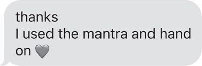
이 책을 쓰면서 마리아 같은 사람들의 비슷한 사연을 수없이 듣던 중 깨달음이 왔어요. 아침에 눈을 뜨면 불안부터 느끼는 데는 이유가 있었다는 거죠. 어린 시절, 저에게 끔찍한 일이 벌어졌으니까요. 잠자리 파티에서 나이 많은 아이에게 성추행을 당했어요. 실제로는 제가 깊이 잠들어 있을 때, 가장 무방비했던 순간에 일어난 일이었죠.
제가 앞서 “인생이 우리를 붙잡아 버린다”고 말했던 게 바로 이런 뜻이에요. 인생은 어떤 식으로든 우리 모두를 붙잡죠. 때론 그 기억을 묻어 버립니다. 마주하기엔 너무 무섭고, 너무 아프고, 너무 혼란스럽고, 너무 굴욕적이니까요. 하지만 묻어 놔도 몸과 마음과 영혼은 계속 상처를 입어요.
어린 시절의 트라우마는 “트라우마 반응(trauma response)”을 만들어 신경계에 새겨 놨어요. 어른이 된 지금의 몸도 여전히 그 느낌을 기억한다는 거예요. 아이였던 제가 한밤중에 눈을 뜨고 나에게 나쁜 일이 일어나고 있다는 걸 알면서도 어떻게 막아야 할지, 어떻게 반응해야 할지조차 몰랐던 바로 그 느낌을요. 그 몸의 기억은 아직도 제 신경계 전체에 메아리치고 있어요. 그래서 40년이 지난 지금도 공포와 겁과 패닉과 혼란과 수치심 속에서 눈을 뜨는 거죠.
어른이 된 지금, 아침에 눈을 뜨자마자 드는 첫 생각은 “뭔가 잘못됐어”예요. 이내 “내가 잘못했어”, “누가 나한테 화났어”로 번지죠. 하강 나선은 점점 깊어집니다. 발목에서 시작해 가슴까지 굴러 올라온다고 표현했던 거 기억하죠? 그 “느낌”이 바로 어린 시절의 트라우마를 성인이 된 몸이 기억해 내는 거예요.
긍정적 사고만으로는 이걸 바꿀 수 없어요. 생각만으로 트라우마를 치유할 수는 없죠. 기본 반응을 바꾸고 신경계의 이 잔재를 씻어 내는 행동이 필요합니다. 제가 겪은 트라우마는 제 잘못이 아니에요. 40년이 지난 지금까지도 이어지는 잠재의식적 반응 역시 제가 만든 게 아니죠. 하지만 그 잔재를 치우는 건 제 책임입니다. 하이파이브 인생을 원한다면, 마주할 용기를 찾는다는 뜻이기도 해요. 그리고 큰 힘이 된 것 중 하나가 바로 매일 아침 하는 이 심장 하이파이브입니다.
연구를 살펴볼까요?
매일 아침을 거울 앞 하이파이브로만 시작할 게 아니라, 가슴에도 하이파이브하고 시작해야 하는 데엔 이유가 있어요. 연구 결과들을 보면, 불안부터 가라앉히고 신경계를 안정시키지 않으면 그 어떤 것도 절대로 바꿀 수 없거든요.
이건 2장에서 소개해 드린 신경과학자 주디 윌리스 박사에게 배운 거예요. 극심한 스트레스 상태에 놓이면 뇌는 생존 모드로 전환돼요. 새로운 기술을 익히고 새로운 기억을 만드는 상위 뇌에는 새로운 긍정 정보를 단 하나도 못 들어오게 막아 버리죠. 대신 눈에 보이길 원하는 건 주위의 위협뿐이고요. 그래서 아침의 스트레스와 불안이 무거운 담요처럼 내려앉아 몸을 침대에 꽉 눌러 놓는 것처럼 느껴지는 거예요.
정말 통하는 방법은 딱 하나, 몸부터 가라앉히는 것이에요. 침대에 누워 두려운 일들을 곱씹기만 하면 이미 느끼던 감정이 더 증폭될 뿐이고 생각 없이 하루 속으로 뛰어들면 그 불안을 그대로 끌고 다니게 돼요.
좋은 소식은요? 몸의 스트레스 반응을 끄는 일은 손을 가슴에 얹고 가슴에 하이파이브하는 것만큼 간단하다는 거예요. 그러면 몸의 속도가 늦춰지고 몸의 “쉬고 이완하는” 신경계가 켜집니다.
이렇게 강력하고 평온한 상태를 언제든 켤 수 있는 이유를 설명해 주는 단어가 있어요. 바로 미주신경(vagus nerve)입니다.
미주신경은 몸에서 가장 긴 신경으로, 뇌와 나머지 모든 장기를 이어 줘요. 통증, 촉각, 온도에 관한 정보를 전달하고 목의 근육과 성대까지 조절하죠. 또 뇌가 도파민 분비를 촉진하게 해 주는데, 도파민은 기분 좋게 만들어 주는 호르몬이라 몸과 마음을 더 이완되고 차분한 상태로 이끌어 줘요.
미주신경을 활성화하는 건 어렵지 않아요. 가슴에 하이파이브하는 것만으로도 되고 아래 방법 중 무엇을 활용해도 됩니다:
- 깊고 천천히 숨 쉬기
- 야외 산책하기(특히 자연 속에서)
- 명상하기
- 흥얼거리거나 낮게 읊조리기
- 물로 가글하기
- 목청껏 노래하기
- 따뜻하게 목욕하거나 차가운 샤워하기
미주신경 덕분에, ’나는 괜찮아. 나는 안전해. 사랑받고 있어.’라고 확언하기 전에 먼저 손을 가슴에 얹고 몸을 가라앉히는 게 뇌를 다시 길들이는 데 그토록 효과적인 거예요. 손을 가슴에 얹으면 몸에 “안전해, 스트레스 없어”라는 신호가 가고 그래야 망상활성계(RAS)가 이 만트라를 받아들일 준비를 하죠. 그러고 나서 RAS가 ’안전하고 괜찮은 느낌’이 나에게 중요하다는 걸 알아차립니다.
그리고 ’나는 괜찮아. 나는 안전해. 사랑받고 있어.’라고 자신에게 말할수록, 눈을 떴을 때 그렇게 느끼는 날이 더 빨리 와요. 자신에게 들려주던 이야기를 바꾸는 것, 그리고 여기에 가슴 하이파이브가 짝을 이루면, 미주신경이 활성화되면서 몸의 반응이 불확실함과 불안에서 벗어나 있는 그대로의 나로 든든한 자신감으로 재훈련됩니다.
달라지는 건 당신입니다
지금 이런 생각을 하고 계실지도 몰라요. 맙소사, 멜 로빈스. 우리 지금 과거 트라우마 얘기를 하고 있는 거라고. 근데 너는 손을 가슴에 얹으라고 하고. 너. 는. 정. 말. 멍. 청. 이. 구. 나.
손을 가슴에 얹기만 하면 인생의 상황이 바뀐다는 말로 들려서 기분 나쁘실 수 있어요. 하지만 바뀌지 않아요. 제 말은 그게 아니거든요.
가슴에 하이파이브하면 달라지는 건 당신 자신이에요. 당신이 달라지면, 그제서야 당신 손으로 인생의 상황을 바꿀 수 있게 됩니다. 몸을 단단히 뿌리 내리고 차분한 상태로 만드는 법만 익히면, 과거 트라우마를 치유하는 일도 해낼 수 있어요.
몸에 트라우마가 자리 잡고 있는 것 같다면, 최대한 많이 공부하고 치료도 받아 보라고 권하고 싶어요. 온전하고 완전한 사람으로 회복해 가는 여정에서 지지받을 자격이 있으니까요. 트라우마 치유와 신경계 조절에 효과적인 치료법은 많아요. EMDR(안구운동 탈감작 및 재처분 요법)부터, 지금은 미국 식품의약국(FDA) 승인을 기다리며 임상시험 중인 새로운 사이케델릭(환각물질) 보조 치료까지요. 후자는 놀라운 결과를 보여 주고 있고요. 저는 둘 다 해 봤는데, 인생이 바뀌었어요.
제가 공유하는 모든 것은 강력한 연구에 뒷받침돼요. 단순한 비결들이지만 그 결과는 심오하죠. 그래서 거울을 보고 비친 나에게 하이파이브하기 싫고 손을 가슴에 얹어 몸을 가라앉히고 싶지 않은 저항이 올라온다면? 그건 정말로 필요하다는 신호예요.
진짜 자신감이란 ’나는 괜찮아. 나는 안전해. 사랑받고 있어.’라고 말하고온 존재의 한 올 한 올로 그 말이 사실이라 믿는 것이에요. 그렇게 할 수 있게 되면 깨닫게 돼요. 세상에 무슨 일이 일어나든, 가정에든, 직장에든, 교실에든, 내 인생에서 유일하게 믿을 수 있는 사람은 나 자신이라는 걸요. 과거 트라우마에서 스스로 치유될 수 있어요. 몸을 가라앉히고, 마음을 리셋하고, 영혼에 날개를 달아 하늘 높이 날려 보낼 수 있죠. 이것이 바로 자기 역량(empowerment)의 정의예요. 매일 아침 눈을 떴을 때 내 편이 되어 줄 수 있고 무슨 일이 닥쳐도 헤쳐 나갈 수 있다는 걸 아는 거예요.
14장
사실 이 장은 안 읽으셔도 됩니다
원래 이 장 제목을 “자신감 현실화하는 법”이라고 붙이고 싶었어요. 그런데 제목에 manifest(현실화하다)라는 단어가 등장하는 순간 여러분이 이렇게 생각할 것 같았거든요:
어머나. 멜이 이제 형이상학 얘기를 시작하려는 건가. 해리 포터 마법이라도 꺼내시겠네. 수정 원석 늘어놓고 타로 카드 펼치시고 다섯 문장 안에 ’기적’이라는 단어를 꺼낼 거라면 내기해도 좋다니까.
절반은 맞아요.
한 단계 더 들어가긴 해요. 하지만 향을 피우거나 풍요 기원 기도를 하거나 마법 지팡이를 휘두르는 게 아니라요. 제가 과학파라는 건 다들 아시죠? 걱정 마세요. 이 장도 연구에 기반해 있어요. 다만 좀 신비주의(woo-woo) 영역까지 들어가긴 합니다. RAS 컨트롤과 셀프 응원에 능숙해지면, 이 도구들로 미쳤다-끌어당김-마법-기적 같은 일을 해낼 수 있어요(보세요, 결국 그 단어가 나왔죠!).
심장이 약하신 분들에겐 무리인 이야기예요. 하지만 소름이 돋을 만큼 영감 가득한 변화를 인생에 만들고 싶다면, 믿음의 힘에 대해 들려줄 게 있어요. 불가능해 보이는 일도 계속 믿어 보라고 스스로를 다독여 주셨으면 해요. 제가 그러기 시작했을 때 인생이 믿기지 않을 만큼 좋아졌거든요. 믿음이 왜 그토록 중요한지 이해하게 해 줄 이야기도 곧 나눌 거예요. 과학 얘기는 제대로 된 시각화 연구까지 깊게 파 들어갈 겁니다. RAS를 기름 잘 칠한 기계처럼 부드럽게 굴러가게 만들어서 지금 이 순간엔 불가능해 보이는 것까지 손에 넣게요.
지금부터 증명해 보일 것은 이것입니다. 당신의 마음은 당신이 원하는 것을 얻도록 돕겠다고 음모를 꾸민다는 거예요. 여러분이 그걸 믿어 주기만 하면요.
한 폭의 그림에 대한 이야기
대학교 마지막 해였어요. 부모님이 마을에 오셨고요. 그날 저녁 우리 가족은 단장하고 나서 ’시몬 피어스의 더 밀(The Mill at Simon Pearce)’이라는 버몬트의 유명한 유리 불기 공방으로 차를 몰았어요. 건물 안에는 훌륭한 식당도 있었죠. 건물로 들어서는데도 제 머릿속은 체다 치즈 수프에 꽂혀 있었어요. 룸메이트가 “믿을 수 없을 만큼 맛있다”며 꼭 시켜 먹으라고 했거든요. 그날 저녁 식당으로 들어서는데, 벽에 큰 풍경화 한 점이 걸려 있는 게 눈에 들어왔어요. 그냥 지나치진 않았어요. 발걸음이 뚝 멈춰 버리고 그 앞에 우두커니 섰죠. 문짝만 한 크기에, 그저 옆으로 눕혀져 있었어요. 어딘가 낯익은 무언가가 저를 안으로 끌어당겼습니다.
그쪽으로 걸어가는데 식당의 웅성거림이 사라지는 것 같았어요. 주위가 갑자기 조용하고 고요해졌죠. 그림에 가까이 다가가니, 이상하게도 내가 그림 속으로 걸어 들어간 것 같았어요. 버몬트 풍경을 그린 그림이었어요. 그림 속에는 넓고 옅은 빛의 들판이 펼쳐져 있었죠. 들판 한가운데에는 큰 풀들과 나무 줄이 서서 솟은 산을 배경으로 점점 작아지고 그 위로는 밝은 파랑에 구름이 떠도는 버몬트 하늘이 있었어요. 산들바람이 스치는 것도, 갓 베어둔 건초의 달큰한 냄새도 느껴지는 것 같았어요. 대열을 지어 날며 도착을 알리는 기러기 울음소리도 들렸죠. 저는 더 이상 식당에 있지 않았어요. 그 들판 한복판에 서 있었어요. 오감이 전부 불타오르듯 깨어 있었죠. 마음도, 몸도, 영혼도 완벽하게 조율되어 단 하나에 집중하고 있었어요. 그 그림에요.
단순한 설렘 그 이상이었어요. 욕망이었고, 직감이었고, 말로 설명할 수 없는 더 큰 무언가와 이어져 있다는 느낌이었죠. 예술작품을 사고 싶어 본 적이 한 번도 없는데, 그 순간만큼은 그 그림을 꼭 제 것이 하고 싶었어요. 여러분 인생에도 이렇게 설명할 수 없는 욕망의 파도가 들이닥쳤던 순간을 떠올려 보세요. 무언가, 혹은 어딘가, 혹은 누군가가 나를 위해 존재한다는 걸 그냥 알았던 순간이요. 오감이 살아나고, 머리가 집중되고, 가슴이 넓어지죠. 그 순간에 온전히 머무르게 돼요. 힘이 가득한 상태였죠. 그것이 바로 하이파이브 에너지예요.
몇 년 뒤 남편 크리스를 처음 만난 날에도 똑같은 느낌이었어요. 뉴욕의 한 바에서 온더락스 버본 위스키를 주문하고 있는데, 뒤에서 누군가 말했어요. “그거 좋네요, 저도 같은 걸로 주세요.” 돌아봤어요. 거기 그가 있었죠. 바의 음악과 소음이 사라지고 우리는 천 년을 알고 지낸 사이처럼 그냥 이야기가 흘러 나왔어요. 그리고 사흘 뒤, 그가 청혼했어요.
그로부터 몇 년 뒤에는, 보스턴 근교에서 버려진 농가를 차로 지나치다가 같은 욕망의 파도를 또 만났어요. 크리스에게 차를 세우라고 했죠. 집 창문은 깨져 있었고 잔디는 한 자 남짓 자라 있었어요. 귀신 말고는 살지 않을 것 같은 집이었죠. 설명할 수 없지만 그때 하고 싶었던 건 그 집을 사는 것 하나였어요. 유산 검인 법원(probate court)을 뒤져 소유권 증서를 추적해 냈어요. 집은 시장에 나온 적도 없었죠. 돌아가신 소유주의 유산에서 그 집을 사서, 지난 24년간 우리는 그 집에서 가족을 키웠어요.
제 삶에서 생각이 막혀 있지 않았던 순간들의 예가 바로 이것들이에요. 마음이 열려 있었죠. 제가 원하는 게 뭔지 알았고 이유야 어찌 됐든 그것들을 가질 수 있다고 믿을 권리를 스스로에게 내주었어요. 자신이 원하는 것을 가질 능력과 자격이 된다고 믿는 그 허락은 강력해요. RAS가 메모해 뒀다가 즉시 작업에 들어가, 마음의 필터를 조정해서 그것을 이루도록 도와주거든요.
언젠가는, 그렇게 될 거예요
그림을 바라보며 그 자리에 얼마나 서 있었는지 몰라요. 확실한 건, 어느 순간 웨이터가 트레이를 떨어뜨려 잔들이 바닥에 와르르 쏟아졌다는 거예요. 고무줄 튀듯 제 혼이 몸으로 돌아왔죠. 그리고 그때 일어났어요. 몸 깊은 어딘가에서 제 목소리가 들렸어요:
언젠가 이 그림을 제 것으로 만들 거야.
몸을 앞으로 기울여 가격표를 확인했어요. 3천 달러.
오늘은 아니지.
숨을 내쉬며 천천히 그림에게서 물러났어요. 붐비는 식당의 소음과 에너지가 다시 몰려왔지만 마음은 여전히 열려 있었죠. 다시 올 거야.라고 생각하며 부모님이 앉으신 테이블로 걸었어요. 어머니가 어디 갔다 오냐고 물으셨고 저는 “저기 그림 좀 보고 왔어요”라고 답했죠. 어머니는 그림 쪽을 올려다보더니, 다시 메뉴판으로 시선을 내리셨어요.
욕망에 대해 아주 중요한 포인트가 있어요. 욕망은 아주 개인적인 거라는 것. 당신에게 운명적인 것은 다른 누군가에게 운명적이지 않아요. 당신을 끌어당기는 것들은 당신을 위한 거죠. 그러니 그것들을 손에 넣으러 가는 일은 당신의 책임인 거예요! 무언가에 한번 꽂히면, 그건 선반에 소중히 치워 둔 일기장의 기록처럼 당신 곁에 머물러요. 잠재의식 속에 정리돼 들어가, 다시 꺼내 볼 순간만 기다리고 있죠.
그럼 무언가가 당신에게 운명적인 것이 아니다는 건 어떻게 알까요? 반대의 에너지가 느껴져요. 끌려가는 대신 밀어내는 느낌이 들죠. 내면의 무언가가 점점 움츠러드는 것 같아요.
하이파이브하고 싶지 않다면, 그건 당신 것이 아니다
그해 봄 졸업하기 전, 친구 차를 빌려 식당에 한 번 더 갔어요. 그 그림을 또 보고 싶었거든요. 물건에 반할 수 있다면, 저는 반해 있었어요. 집착이라고 하긴 뭐 하고 제 마음속에 가능성이 열리면서 끝내지 못한 일이 생긴 느낌이었죠. 니콜라스 스파크스가 아직 로맨스 소설을 한 권도 내기 전이었지만 그의 소설에 나올 법한 장면이었어요.
한 달도 안 돼서 저는 대학을 졸업하고 새 삶을 시작하러 떠날 참이었어요. 식당에서 그림이 걸린 곳에서 몇 걸음 떨어진 테이블에 앉아 점심을 먹었죠. 언젠가 내 주방에 걸어 두는 상상을 했어요. 그 그림은 반드시 제 것이 될 거였어요. 방금 그 체다 치즈 수프 한 그릇을 비웠다는 사실만큼이나 그건 확신했어요.
지금 돌아보면, 살 수도 없는 그림 옆에 앉아 점심을 먹던 스물한 살의 저는 도무지 말이 안 되죠. 미술을 전공한 것도, 스스로 그림을 그린 것도 아니었으니까요. 돈 한 푼 없는 대학생이었어요. 설령 3천 달러가 있었더라도 그걸로 그림을 샀을 리 없죠. 절대로요. 부모님께서 저를 죽이셨겠어요. 게다가 그 크기의 그림을 걸어 둘 곳도 없었고요. 남자친구를 따라 워싱턴 D.C.로 가서 새 삶을 시작하려던 참이라 직장조차 아직 없었어요.
왜 하필 저에게 이런 일이 일어났는지 설명해 줄 수는 없어요. 이 책에서 이 이야기를 여러분께 들려드려야 했으니까 그렇게 된 게 아닐까 싶어요. 그리고 그 그림은, 소중히 여기고 갈망하는 것을 원해도 된다고 스스로에게 허락하는 순간 만들어지는 기적의 증거인 거죠. 제 마음가짐이 부정적인 생각에 막혀 있었다면 이 이야기의 결말은 짐작하기도 쉬워요. 저는 부정적으로 자기 말을 걸었을 거예요. 너한테 살 돈이 없어. 시간 낭비야. 대체 여기서 뭐 하는 건데, 젠장? 부정적인 생각은 부정적인 행동으로 이어졌겠죠. 저는 다시는 그 식당에 가지 않았을 테니까요.
자이가르닉 효과
재미있는 건요, RAS에 대해 배운 내용 기억하시죠? 마음에게 무언가가 나에게 중요하다고 말하는 건 일련의 지시사항을 넘겨 주는 것과 같아요. 그래서 꿈꾸던 일들을 결코 잊지 못하기도 하는 거예요. 마음이 잊게 내버려두지 않으니까요. 비결은, 그것을 이뤄낼 수 있는 존재라는 가능성에 마음을 계속 활짝 열어 두는 겁니다.
그 경험이 제 마음속 스위치를 켰다는 건 두말할 것도 없어요. 저는 묵묵한 결의를 안고 식당을 떠났어요. 영혼 깊은 곳에 조용한 확신이 있었죠. 영감이 솟았고 그 의지는 제 자신감에 연료가 됐어요. 뼛속까지 확신했어요. 언젠가 이 그림을 제 것으로 만들 거다그리고 제 마음이 생각하게 둘 유일한 생각은 그것뿐이었죠.
그리고 그렇게, 저는 잊지 않았어요. 제가 계속 말해온 바로 그 마음 코딩이죠. 자이가르닉 효과(Zeigarnik effect)라고 하는데, 10장에서 언급했어요. 중요한 것을 의도적으로 시각화하면 뇌는 메모해 뒀다가 “이건 중요함”이라는 라벨이 붙은 마음속 체크리스트에 추가한 뒤 잠재의식에 저장해요. 멋지지 않나요?
그러니까 꿈이나 목표는 ’끝내지 못한 일’로 늘 배경에 떠 있고 마음은 그것을 일깨워 줄 기회가 생길 때마다 놓치지 않는다는 뜻이에요. RAS가 세상을 스캔하면서 의식 속에 리마인더를 하나씩 심어 주죠.
그래서 “이제 늦었어”라고 말해도 목표와 꿈은 계속 따라다니는 거예요. 에두아르도가 캘리포니아를 늘 생각하게 되는 이유고요. 제가 New York Times 베스트셀러 작가가 되는 것을 늘 생각하게 되는 이유죠. 빨간색 아큐라가 갖고 싶을 때 하필 그 차만 눈에 들어오는 것도 같은 이유예요. 잊고 싶어도, 자이가르닉 효과 덕분에 마음은 잊지 않아요. 꿈 앞에서 선택지는 두 개뿐입니다. 쫓아가거나, 아니면 그 꿈에 시달리거나.
저는 자이가르닉 효과를 늘 경험했어요. 누가 버몬트라는 단어를 말하거나 수제 유리그릇이 눈에 띄면, RAS가 그 정보를 의식으로 통과시켰죠. 그리고 그림을 생각하면, 그것을 제 것으로 만들기 위해 밟을 단계들을 하나하나 떠올렸어요.
열심히 일하며 나이를 먹고 티끌만큼씩 돈을 모아 저금하는 저를 그렸어요. 책상 서랍 속 현금 봉투가 보였고 드디어 그 그림을 샀을 때 밀려올 흥분의 파도와 이전 소유주와 악수하던 손아귀의 감촉도 상상했죠. 그림이 제 것이 되었을 때 얼굴에 번질 미소볼 근육이 팽팽하게 당겨지는 그런 미소까지 느낄 수 있었어요. 벽에 못이 박히는 모습도 그렸어요. 누군가 도와 들어 올려 벽에 걸어 줄 때, 그 큰 작품을 들어 올리고 수평을 잡는 게 얼마나 무겁고 어색한지까지 느껴졌어요.
제대로 하는 끌어당김.
저도 몰랐어요. 하지만 저는 그 그림을 내 곁으로 끌어당기려고 시각화를 쓰고 있었던 거예요. 자신감 끌어당김(manifesting confidence)과 시각화가 여러분의 망상활성계(RAS)를 어떻게 바꾸는지에 관해 강력한 과학적 근거가 있습니다. 단, 제대로 할 때만 말이죠. 다행히 저는 그 그림을 얻기 위해 밟게 될 작은 단계들을 상상하면서 제대로 된 방법을 쓰고 있었어요. 설명해 볼게요.
대부분은 끌어당김을 잘못해요. 최종 결과만 그려서 소환하려 하거든요. 스키 경주에서 이기기, 오스카상 받기, 약 23킬로그램 빼기, 통장에 백만 달러 쌓기. 잘못된 끌어당김은 당신을 제자리에 묶어 둡니다. 큰 꿈은 멋지고 꼭 가져야 하지만 최종 결과를 끌어당긴다고 해서 그 꿈을 이루는 데 도움은 되지 않아요. 제대로 하는 끌어당김이 비로소 꿈을 현실로 만드는 걸 도와줍니다. 적어도 그 일을 해 내도록요.
신경과학 연구에 따르면 시각화는 목표와 꿈을 위해 일하기 쉽게 만들어 줘요. 방금 머릿속에 만든 그림과 맞는 기회를 포착하도록 RAS가 바뀌기 때문이죠. 그런데 UCLA 연구는 시각화가 목표 달성에 진짜 도움이 되려면 꿈에 이르는 길목의 힘들고 성가신 작은 단계들을 내가 해 내는 모습을 상상해야 한다고 말해 줍니다.
뇌 스캔 연구에서 어떤 행동을 하는 자신을 상상할 때와 실제로 그 행동을 할 때 같은 뇌 영역이 자극된다고 밝혀졌거든요. 그러니 미래의 행동을 머릿속으로 리허설할 수 있는 겁니다. 행동을 시각화하면 그 행동을 실제로 끝까지 해낼 가능성이 높아져요. 기억하세요. 결과를 만드는 건 우리의 행동입니다. 자신감 끌어당김이란 결승선에서 승리의 환희 속에 젖어만 있는 게 아니라, 그 길에 놓인 작고 성가신 단계들을 내가 해 내는 모습을 그려 보는 걸 뜻해요.
이건 행동할 준비를 신경계와 머릿속 필터에 미리 시켜 놓는 일이에요. 취해야 할 행동을 시각화하면 몸과 마음이 그 기분에 익숙해지고 RAS에게 이렇게 말해 주는 거죠. 노력은 중요하다고.
빗속을 달리는 자신을 상상하세요.
작동 원리는 이래요.
보스턴 마라톤 완주라는 큰 꿈을 끌어당기고 싶다면? 그래요, 매일 그 꿈을 적으세요. 하지만 그걸 이루려면 결승선을 넘는 모습과 군중의 터져 나오는 박수를 그릴 게 아니라, 영하 10도쯤 되는 날씨에 운동화 끈을 묶는 자신을 그려 보세요. 눈을 감고 이어폰 배터리가 방금 다 나가서 홀로 13마일 지점을 달리고 있을 기분이 어떨지 그림으로 그려 보세요. 새벽 5시에 알람이 울리고 온몸이 찌뿌드드한데 창밖을 보니 비가 억수로 쏟아지고 있을 때의 감각을 몸으로 느껴 보세요. 그리고 빗속으로 달리기 시작하는 거예요.
한 달에 여섯 자릿수 달러를 벌어들이는 회사를 차리는 게 꿈이라면, 통장에 돈이 들어오는 모습을 그릴 게 아니라 아이들이 잠든 밤 자정에 녹초가 된 채 블로그 글을 쓰는 기분을 그려 보세요. 눈을 감고 영업 전화에서 또다시 거절을 듣고 수화기를 내려놓는 그 순간을 온몸의 세포 하나하나로 느껴 보세요. 그런 다음, 다시 전화기를 들고 다음 번호를 누르는 자신을 보는 겁니다.
지금껏 경험해 본 적 없는 사랑스럽고 건강한 연애가 꿈이라면, 데이팅 프로필을 만들고 별로인 데이트를 몇 번 겪는 자신을 상상하는 게 좋아요. 상담을 받으면서 스스로를 치유하고 과거 나쁜 연애로 끌어들였던 공의존(codependency) 패턴을 벗어나는 힘든 일을 해 내는 기분을 그려 보세요.
바로 그렇게 당신의 거대하고 굉장한 꿈들이 현실이 되는 거예요. 그 순간이 오면 온몸이 이미 준비돼 있어요. 13마일 훈련 주행 날이 다가와 새벽 5시, 영하 10도에 욕실 거울 속 자신을 바라보고 있어도스스로 설득해서 포기하지 않을 겁니다. 이 순간을 이미 상상하고 몸과 마음에 새겨 왔으니, 거울 속 자신에게 손을 들며 준비됐다고 외칠 거예요. 13마일. 영하 10도. 난 할 수 있어. 가자!
그림을 끌어당기고 싶다면? 제가 한 것과 똑같이 하세요. 살 돈을 벌기 위해 열심히 일하는 자신을 그려 보는 거예요. 매달 돈 모으기. 액자 사기. 그 과정의 사소한 일들. 저는 그 그림을 생각하고 그 단계들을 하나하나 밟을 때 어떤 기분일지 상상하는 것을 스스로 허용하면서 가능성을 머릿속에 새기고 있었던 거죠.
이건 십여 년에 걸친 이야기의 시작일 뿐입니다.
세월이 흐르면서 그 그림은 내 잠재의식 한구석으로 더 깊이 가라앉았고 삶이 앞으로 나왔어요. 저는 대학을 졸업하고 워싱턴 D.C.로 가서 일을 시작했고 로스쿨에 들어가려고 보스턴으로 옮겼죠. 마지막엔 뉴욕에 정착해서 남편 크리스를 만나 변호사 일을 시작했어요. 우리는 결혼했고 크리스 직장 때문에 다시 보스턴으로 돌아와 함께 살아갔습니다. 그러던 어느 시점, 크리스가 주말에 버몬트로 여행을 떠나 가을 단풍을 보자고 했을 때, 제 머릿속엔 오직 그 그림뿐이었어요. 저는 십여 년 전 그 그림을 봤던 이야기를 크리스에게 들려주고 점심 먹으러 더 밀(The Mill)에 들러 그림이 아직 있는지 확인해 보자고 여행 일정에 밀어 넣었어요.
여행은 아직 몇 주나 남아 있었는데, 그 그림을 다시 볼 생각만으로사는 게 아니라 그냥 보는 것뿐인데도내 영혼에는 활력이 돌고 마음은 다시 더 크게 꿈꾸기 시작했어요. 그러자 그 그림은 제 마음 한구석에 저장돼 있다가거기서 나에게 닿으려고 자기 마법을 부리며 버티고 있던스포트라이트처럼 의식의 맨 앞자리로 튀어나왔어요. 고마워요, RAS! 얼마나 짜릿한 기분인지요. 잘 알 거예요. 우리 모두 겪어 본 감정이잖아요. 원하는 것이 조금씩 조금씩 가까워져 오는 그 기대감 말이에요. 손에 넣기도 전에… 어쩌면 평생 손에 넣지 못하더라도, 영혼이 축제를 벌이는 것 같은 기분이에요.
차를 몰고 가면서 저는 그 에너지가 전선을 타고 흘러 전구를 밝히는 전류처럼 몸속을 흐르는 걸 느꼈어요. 가까워질수록 그 그림은 머릿속에서 더 선명해졌죠. 더 밀 앞에 차를 세우자 오감이 다 불타올랐어요. 안으로 들어서니 입구에 같은 작가, 가일 셰퍼드의 또 다른 그림이 걸려 있었어요. 가슴이 펄쩍 뛰었죠. 이건 신호야. 세상에, 아직 여기 있단 말이야. 나는 크리스의 손을 잡고 더 밀을 방 하나하나 돌면서 내 그림을 미치듯 찾아 헤맸어요.
그림은 사라진 뒤였어요.
크리스가 내 어깨를 감싸 안았어요. “정말 미안해, 자기.”
그 순간 가장 놀라웠던 건 크리스가 나보다 더 실망했다는 사실이었어요. 저도 조금 슬펐지만 이런 세월이 지나고도 그림이 그자리에 있었다면 오히려 그게 더 놀라웠을 것 같아요. 그리고 여기 가장 중요한 교훈이 있습니다. 하이파이브 태도는 모든 희망이 끊긴 것처럼 보이는 순간에도 무엇이든 가능하다고 믿는다는 거예요.
나는 그를 올려다보며 말했어요. “괜찮아. 어차피 살 돈은 없잖아. 이제부터 이건 탐험이야.” 그러곤 웃으면서 덧붙였죠. “살 수 있게 되려면 마흔 년쯤 걸리겠네. 그때는 그 그림을 산 사람도 돌아가셨을 테니, 유산을 관리하는 사람을 찾아다녀야겠어. 그래도 나는 그 그림을 꼭 찾을 거야.” 정말 그럴 거라고 믿었어요.
삶은 계속됐고 그 그림은 다시 내 잠재의식 서랍에 파묻혔어요. 우리는 손 좀 봐야 사는 낡은 집을 샀고 저는 첫 아이를 가졌죠. 그러던 어느 해 생일, 크리스는 친구들과 가족들에게 각자 돈을 보태 달라고 부탁해서 새집에 둘 좋은 물건을 사게 해 줬어요. 그리고 몇백 달러가 든 카드를 건네며 원하는 뭐든 사라고 했죠. 분명 그는 주방용 스툴 몇 개 같은 실용적인 걸 사리라 생각했을 거예요.
하지만 내 머릿속엔 오직 그 그림뿐이었어요. 이봐요, 몇백 달러로는 그 작가의 작품을 하나도 살 수 없었다는 걸 기억하세요. 하물며 “내 그림”은 더더욱요. 그 십여 년 사이 작가는 크게 유명해져 미국 곳곳의 화랑에 작품을 걸고 있었으니까요. 그런데 열린 마음은 그런 부정적인 쓰레기를 필터를 그냥 통과시켜 버려요. 그리고 제 머릿속에서 돈에 “원하는 뭐든 사라”는 허락이 더해진다는 건 기회를 뜻했죠. 마음이 열려 있으면 보이는 게 바로 그거예요. 곳곳에 널린 기회들. 그건 여러분의 RAS와 자이가르닉 효과가 돕고 있는 거랍니다.
나는 “이게 어째서 불가능한지” 목록을 늘어놓으며 멈춰 서지 않았어요. 늘 그래왔듯 스스로 설득해서 접어 버리지도 않았고요. 핏줄에 돌던 건 의심이 아니라 영감이었어요. 나는 주머니 속 백만 달러가 타들어 가는 것 같은 기분으로 수화기를 들고 더 밀에 전화를 걸었죠. 친절한 남자가 전화를 받아서 상황을 설명하자, 작가님 “작은 작품들” 폴라로이드 사진 몇 장을 보내 주겠다고 했어요.
“작은 작품”이라는 말에 뺨이 화끈거렸어요. 신경계가 확 달아오르는 게 느껴졌죠. 몸이 경보 모드에 들어가는 순간 RAS는 초점을 잃고 부정적인 생각이 범람합니다. 고조에서 저조로 이렇게 빨리 떨어지는 거예요.
나 지금 뭐 하는 건데? 그러니까 예술품을 산다고? 나는 누구고? 우리 집 가구는 물려받은 것에 이케아 것 섞은 수준인데. 내가 갖고 있는 것 중 “예술”에 가장 가까운 건 대학 기숙사 때 쓰던, 냉장고에 붙어 있는 마티스 포스터야. 그것도 작은 작품? 젠장, 그 사람 작은 작품 한 점도 못 사는데. 겨우 살림 꾸려 가는 임신한 서른 즘이 뭐란 말야. 지금 당장 끊어야 해.
돈이 많지 않은 게 부끄러웠어요. 그리고 문득 이 돈으로 곧 태어날 아기 침대라든가, 필요한 걸 사는 게 나은 게 아닐까 생각하기 시작했죠.
제 마음이 닫히기 시작하는 게 느껴졌어요. 몸의 스트레스가 머릿속 부정적 반응을 촉발한 거죠. 그 남자가 “작은 작품”이라 말한 순간 뇌를 때린 부정적인 생각들이 먼지 구름처럼 휘몰아치기 시작했어요. 머릿속에 마음의 보풀 먼지폭풍이 일려는 기척이 느껴지면 반드시 털어 내야 합니다. 말했듯이 생각이 부정적이면 행동도 부정적으로 흘러가니까요. 저도 그래서 전화기를 끊을 뻔했어요.
신경계가 달아오르고 스트레스로 범람하는 걸 느낄 땐 직접 개입해야 해요. 윌리스 박사가 말했던 거 기억나요? 몸이 스트레스를 받으면 인지 능력이 떨어진다고. 바로 그 순간이에요! 이럴 땐 5초 법칙이 기가 막히게 통합니다. 5-4-3-2-1만 세면 하강 나선을 끊어 줘요. 하필 저는 그때 아직 법칙을 만들기 전이었죠. 그래서 차선책을 썼습니다. 깊게 숨을 들이쉬고, 그 그림을 떠올리고, “난 그런 생각 안 해”라고 말한 다음, 그 그림이 우리 주방에 걸려 있는 모습을 상상하며 하이파이브 에너지를 소환한 거예요.
그리고 그에게 말했어요. “참, 제가 정말 사랑했던 작품이 하나 있었어요. 몇 년씩이나 그자리에 걸려 있었죠. 문짝을 옆으로 눕힌 것만 한 크기인데…” 그러고는 버몬트 풍경 그림을 세세하게 묘사하기 시작했어요.
남자는 잠시 뜸을 들이다 말했어요. “저기, 제가 여기 온 지 일 년 조금 넘었는데, 작가님 작품들은 들어왔다 나가기가 꽤 빠르거든요. 추측으로 말씀드리기는 그래요. 제가 일을 시작할 때쯤이면 이미 팔려 나갔을 것 같아서요. 그런데 말이에요… 가일님이 알고 있을 거예요.”
“가일요? 작가 가일 셰퍼드 말인가요? 가일님을 알아요?”
그는 웃었어요. “가일님을 몰라요? 여기서 몇 마일밖에 안 사시는데. 번호 좀 가지고 올게요.”
심장이 튀어나올 뻔했어요.
십수 년 동안 이 여자와 몰래 이어져 있다가, 이제 그녀의 전화번호를 손에 넣은 거예요. 대체 뭐라고 말할까? 특히 작품을 살 형편은 못 된다는 걸 알면서 그 남자 말대로 “작은 작품” 하나조차?
보이세요? 저는 또 스트레스를 받기 시작했고 그게 부정적인 생각의 문을 열어 줘요. 스트레스를 받으면 마음은 긍정적이고 열린 상태를 유지할 능력을 잃습니다. 부정적인 생각은 부정적인 행동으로 이어지니까, 마음이 그렇게 닫히게 두면 안 돼요. 나는 미루기 시작했죠. 며칠 동안 아파트 안을 서성이며 완벽하게 말할 방법만 궁리했어요.
크리스는 계속 물었어요. “전화했어? 아직도?”
전화를 안 한 이유는 끝도 없이 나왔어요. 사실은 무서웠던 거예요. 위축됐고 그 사람에게 좋은 사람으로 보이고 싶었죠. 바보 같은 소리를 해서 웃음거리가 될까 봐 무서웠어요. 나는 세련된 예술품 수집가가 아니었고 그녀가 늘 상대해 온 사람은 바로 그런 부류라고 확신했고요. 피플 플리징(people pleasing)이 저를 얼어붙게 만들고 있었어요.
마침내 크리스가 참지 못했어요. 수화기를 건네며 말했죠. “멜, 지금 당장 안 하면 내가 전화한다.” 얼굴에 짜증이 가득한 표정이 떠 있었어요. 진심이라는 뜻이었죠.
“알았어, 할게.”
전화는 몇 번 울고 나서 받혔어요. 그녀가 “여보세요”라고 하기가 무섭게 저는 초당 오십 마디로 말을 쏟아냈죠. 다행히 놀라게 하지도, 우스운 꼴을 보이지도 않았어요. 오히려 정반대였죠. 바로 통했습니다. 그러던 중 그녀가 그녀의 작품을 왜 그토록 좋아하냐고 물었어요. 대답은 저절로 흘러나왔죠. 크리스와 저는 산행을 자주 다닌다는 것, 그리고 “모퉁이를 돌다가 숨이 멎을 것 같은 풍경을 마주하는 순간이 종종 있어요. 그때마다 늘 궁금했어요. 다른 누군가도 내가 보는 것을 볼까? 그런데 당신 작품이 확인해 줬어요. 누군가 정말 본다는 걸요.”
그리고 나는 처음부터 진짜 하고 싶었던 말을 했어요. “참, 제가 정말 사랑했던 작품이 하나 있었어요. 몇 년씩이나 그자리에 걸려 있었죠. 문짝을 옆으로 눕힌 것만 한 크기인데…” 그러고는 그 그림을 세세하게 묘사했어요. 전화기 너머가 잠잠했어요. 생각하는 소리가 들리는 것 같았죠.
그러더니 그녀가 말했어요. “멜, 지난 수년간 제가 버몬트 풍경 대형 그림을 수백 점 그렸거든. 당신이 말하는 게 어느 그림인지 잘못 알아듣고 싶지는 않은데. 그래서 이렇게 하죠. 크리스님과 날짜를 정해서 더 밀로 오시겠어요? 저희 부부가 마중을 나가서 함께 돌아 보면서 거기 걸려 있는 그림 하나하나 뒷이야기를 들려드릴게요. 마음에 드는 게 하나도 없으면 몇 마일쯤 떨어진 제 작업실로 가서 제가 작업 중인 걸 전부 보여드리고요. 거기서도 마음에 걸리는 게 없으면 제 슬라이드를 뒤져 보세요. 그 그림 슬라이드를 찾을 수도 있으니까요.”
한 달 뒤 우리는 가일과 그녀 남편을 만나러 그곳으로 점심을 먹으러 갔어요. 그녀는 사랑스러운 분이었고 나이는 우리 두 배쯤 됐으며 두 사람은 오랜 친구를 맞이하듯 우리를 맞았죠. 우리는 더 밀을 돌며 그녀의 작품을 보고 작품마다 담긴 이야기를 들었어요. 사람들이 하나둘 인사하러 다가오는 동안, 내 신남은 서서히 공포로 바뀌기 시작했어요. 눈앞의 그림들은 어느 하나 살 수 있는 값이 아니라는 걸 깨달았거든요. 결국 우리는 1989년에 그 그림을 처음 봤던 바로 그 식당에 자리를 잡았어요. 그리고 그래요, 저는 체다 치즈 수프를 시켰습니다.
주문을 마치자 가일이 저를 바라보며 평생 잊지 못할 한마디를 했어요. “이제 자리에 앉으셨으니 말씀드릴 게 있어요.” 붐비는 식당의 소음이 사라지는 것 같았어요.
그녀는 말을 이었어요. “지금 하려는 이야기 같은 건 태어나서 처음 겪어 봐요. 전화하셔서 그 그림을 묘사해 주셨을 때, 저는 무슨 말인지 모르는 척했죠. 멜, 저는 그 그림이 뭔지 정확히 알고 있었어요.”
남편이 끼어들었어요. “당신과 전화를 끊고 난 뒤 그 사람 모습을 봤어야지. 유령이라도 본 사람 같았어.”
가일은 고개를 끄덕이고 말했어요. “작가 인생 전체에서 딱 두 번뿐이에요. 같은 풍경을 두 버전으로 동시에 그린 적은. 당신 그림은 그 한 쌍 중 하나예요. 한 점은 더 밀에 맡겨 팔게 했고 나머지 한 점은 작업실 창고에 넣어 뒀죠.”
그러더니 그녀가 눈물을 글썽이며 말했어요. “그 옛날 이 식당에서 보셨던 그림의 자매 그림이 아직도 여기서 몇 마일 떨어지지 않은 제 작업실에 있어요. 창고에서 한 번도 꺼낸 적이 없어요. 그냥 그렇게 몇 년씩이나 놓여 있었죠. 그래서 전화로 그림을 묘사하기 시작하셨을 때 저는 얼어붙었던 거예요. 창고에 있는 바로 그 그림을 묘사하고 계셨으니까. 액자 끼워 팔자고 수십 번은 생각했어요. 왜 한 번도 안 했는지 이제야 알겠네요. 당신이 찾으러 오기를 기다리고 있었던 모양이에요.”
마법 같은 일이 벌어지고 있었어요.
우리 모두 알아차렸어요. 감탄에 잠겨 그 자리에 앉아 있으니까요. 점심을 먹고 나서 우리는 근처에 있는 가일의 스튜디오로 차를 몰았어요. 안으로 들어서자 스튜디오 한가운데 이젤이 있었죠. 그리고 이젤 위에는 커다란 합판이 걸려 있었고 그 판에는 제 그림과 한 쌍을 이루는 자매 작품이 테이프로 붙어 있었어요.
제 인생에서 가장 격조 높고 아름다운 순간이었어요. 시간이 무너져 버린 것처럼, 11년이란 세월을 사이에 두고 떨어져 있던 두 순간을 똑같은 시점에 동시에 살고 있는 것 같았죠. 여러 해 전 그 붐비는 식당에 서서 “이 그림은 내 것이 될 거야”라고 선언하던 저와, 지금 이 순간 그림 앞에 선 저두 사람이 같은 자리에 존재하는 것 같았어요. 직관, 확신, 그리고 더 깊은 무언가와 이어져 있다는 감각. 제가 경험한 것 중 가장 심오한 순간이었어요. 바로 그래서 믿는 거예요. 지금 이 순간은 다가올 무언가를 위해 여러분을 준비시키고 있다는 걸요.
가일의 스튜디오에서 그 그림을 얼마나 오래 서서 바라봤는지 모르겠어요. 그러던 어느 순간, 크리스가 내 어깨에 팔을 두르자 마음이 철렁 내려앉았어요.
우리한테는 살 돈이 없다는 거야.
크리스를 올려다봤지만 그는 아무런 망설임도 없이 물었어요. “저기, 가일, 저 큰 건 얼마예요?”
가일이 답했어요. “멜에게는 500달러에 드릴게요. 분명히 말하는데, 이 그림을 만들 때 나는 처음부터 멜을 위해 그리고 있었거든요.”
가슴이 찢어지듯 벅차올랐어요. 그림을 보는 것과 그걸 살 수 있게 되는 건 전혀 다른 차원의 일이었으니까요. 드디어 제 것이 됐어요. 해낸 거예요. 11년 동안 나는 원하는 걸 가질 수 있다고 믿어도 된다고 스스로에게 허락했어요. 부정적인 생각은 물리쳤죠. 영감을 놓은 적은 한 번도 없었고요. 가능성에 마음을 열어 두었고 그쪽 길을 계속 걸어갔습니다. 믿었더니, 내 마음이 그걸 이루도록 도와준 거예요. 원하는 것을 현실로 끌어냈어요. 한 걸음 한 걸음마다 나 자신에게 하이파이브를 건네며 앞으로 나아갔죠.
흥분과 피로가 동시에 밀려왔어요. 특히 그 피로 쪽에 대해선 많이 생각해 봤죠. 감정적인 탈진이 아니라 정신적인 피로였어요. 11년 동안 이 그림을 뇌의 ‘이건 중요해’ 목록에 올려 두느라, 이제야 마음이 상자에 체크 표식을 하고 내려놓을 수 있게 된 거예요. 제 몫을 다 한 거죠. 그림은 이제 머릿속 구석에 붙어 지내는 대신 벽에 걸려 있으면 되니까요. 엄청난 성취감이었어요.
그림을 안고 스튜디오를 나섰어요. 집에 들여놓고 보니 집 안에서 이 그림이 딱 맞는 벽은 침실 벽 하나뿐이었죠. 액자를 맞출 돈이 모이기까지 1년은 더 걸릴 터라, 그냥 벽에 못박아 걸어 두어야 했어요.
그 그림은 오늘날 제 주방에 걸려 있어요. 책 맨 뒤 “저자 소개” 페이지를 펼쳐 보면, 그 앞에 서 있는 저를 보실 수 있을 거예요. 이건 증거예요. 눈으로 확인되는 일종의 각인이죠. 제가 깊이 믿는 한 가지를 증명해 주는:
당신의 마음은 꿈을 이루도록 돕기 위해 설계되어 있습니다.
당신이 할 일은 그게 가능하다고 믿는 것, 그리고 그것을 향해 걸음을 멈추지 말라고 스스로를 응원하는 거예요. 어떤 일이 있어도 믿음을 유지하고 그것이 언제 어떻게 펼쳐질지에 대한 시간표는 내려놓으세요.
그 그림을 내 손에 쥐기까지 믿음만 11년이 걸렸어요. 그런데 이 이야기는 그림에서 끝나지 않았죠. 제 꿈의 그림이 아름답고 사람을 부르는 듯한 버몬트 풍경을 담고 있다는 사실이 우연이 아니었다는 걸 이제야 깨달아요. 저를 목적지까지 이끌어 온 이정표였던 거예요.
저는 그걸 하늘에 떠 있는 커다란 화살표라고 생각해요. 20년이 지난 지금 제가 살고 있는 인생의 장을 가리키는 화살표 말이에요. 그 이야기는 다음 장에서 들려드릴게요. 돌아보면, 인생의 점들은 언제든 이어 볼 수 있어요. 진짜 기술은 지금 바로 이 순간이 다가올 놀라운 무언가와 여러분을 이어 주는 점이라고 믿는 거예요.
여기엔 신뢰가 큰 비중을 차지해요. 자신을 믿고, 자기 능력을 믿고, 사물의 신성한 질서를 믿는 것이요. 인생의 모든 일이 아직 일어나지 않은 무언가를 위해 여러분을 준비시키고 있다는 믿음이죠. 인생 지도 위에서 점들이 어떻게 이어지는지는 보이지 않을 수 있어도, 실제로는 다 이어져 있습니다.
오늘 밤 술집에서 누군가와 사랑에 빠지지 못할 수도 있어요. 이번에도 베스트셀러 목록에 오르지 못할 수도 있죠. 선거에서 지거나, 그 벤처캐피털 회사에서 투자금을 받지 못하거나, 원했던 석사 과정에 합격하지 못할 수도 있고요. 요점은 원하는 걸 원하는 때에 얻는 게 아니라는 거예요. 두려움과 의심과 체념을 뚫고 앞으로 나아가도록, 원하는 것들이 자신을 끌어가게 내버려두는 거죠. 꿈은 더 위대한 무언가를 믿는 법을 가르쳐 줘요. 그리고 무엇이든 이뤄낼 수 있는 자기 자신, 자기 능력을 믿는 법을 가르쳐 주죠.
그러니 그걸 믿으세요. 이 도전에 응할 자신의 능력을 믿고 스스로를 응원하면서 그 과정에서 나 자신을 잘 돌보세요. 그리고 매일 아침 자신과 얼굴을 마주 대하고 서면, 잠깐 미소 지어 보세요. 이 아름다운 인생 어딘가에서 언젠가 모든 것이 완벽하게, 아니 마법처럼 이해될 거라는 걸 알면서요. 거울 속 자신에게 손을 들어 올리며 말없이 이렇게 전하세요. “네를 믿어… 사랑해. 이제 계속 나아가자. 놀라운 일이 다가오고 있으니까.”
15장
언젠가는 모든 게 이해될 거예요
인생에서 뭔가 어긋난 것 같은데 정작 짚어내지는 못하는 느낌, 받아 본 적 있나요? 지난 몇 년간 저도 그랬어요. 늘 그랬던 건 아닌데, 고요해지는 순간이면 안절부절못했죠.
업무차 비행기를 타고 이륙해 낯선 도시에 착륙할 때마다, 크리스와 우리가 다음엔 어디에 정착할까 하며 질투와 호기심이 뒤섞인 조급한 마음이 들었어요. 세 아이 중 둘은 이미 둥지를 떠났고 왠지 그토록 멋있던 우리의 농가 주택이 더는 우리에게 맞지 않았죠. 하지만 일로 떠돌거나 자라가는 아이들과 함께하느라 너무 바빠서, 조용히 혼자만의 생각에 잠길 시간은 없었어요. 제 생각과 가까워지는 유일한 순간은 3만 피트 상공에 있을 때뿐이었죠. 비행기가 활주로에 닿을 때면 저는 이렇게 생각했어요. 여기? 오스틴? 샌디에이고? 내슈빌? 뉴욕? 우리 다음 장은 여기일까?
그러다 팬데믹이 닥치기 바로 전, 우리 아들 오클리가 큰 변화구를 던졌어요. 그때 8학년이던 오클리는 어느 고등학교로 갈지 고민에 빠져 있던 참이었죠. 그런데 남편 부모님이 20년째 사는 버몬트 남부의 고등학교에 가고 싶다고 고집하기 시작한 거예요. 그 시점까지 우리는 보스턴 근교에서 거의 25년을 살았어요. 우리 팀이 보스턴에 있었고 친구들이 보스턴에 있었죠. 우리 삶이 보스턴에 있었어요. 버몬트 남부는 좋아하지만 제 반응은 단호한 NO였어요.
제가 딱 이렇게 말했던 걸로 기억해요. “버몬트로 이사? 사람들이 은퇴하러 가는 데잖아.” “오지 한복판”으로 이사한다는 발상 자체가 도무지 상상이 안 됐어요. 친구들도, 보스턴에서 함께 쌓아 온 삶도 떠날 생각은 추호도 없었죠. 큰 도시가 아니면 사업 경쟁은 불가능하다고 믿었고요. 지역 공항까지 왕복 두 시간씩 걸려 출퇴근하라고요? 말도 안 돼!
하지만 오클리는 굴하지 않았어요. 난독증 탓에 학교는 그에게 늘 험난한 길이었고 다음 걸음은 버몬트의 이 공립고가 맞다고 뼈속까지 확신하고 있었죠. 저는 보스턴 근교에서도 훌륭한 학교를 찾을 수 있다고 확신했고요. 크리스와 저는 이 문제로 다퉜어요. 시어머니는 뒤에서 크리스를 설득했고요. 크리스가 스키를 얼마나 사랑하는지 일깨워 주기까지 하자, 저는 이렇게 내뱉었죠. “크리스가 뭐 좋아하는지 상관 안 해. 내가 버몬트로 이사 갈 리가 없단 말이야!”
“다른 계획을 세우느라 바쁠 때 인생은 일어난다”는 말 들어 보셨죠? 저는 버몬트로 이사하지 않기 위한 계획을 세우느라 바빴던 거예요. 점들이 실제로 저를 어디로 데려가고 있었는지는 알아차리지 못했나 봐요.
영매가 그 점들을 이어 줬어요.
맞게 읽으셨어요. 오클리에게 우리는 이사 안 간다고 말한 지 한 달 뒤, 제 토크 쇼에 영매 한 분이 게스트로 출연했어요. 다섯 살 때부터 죽은 사람들이 보이고 그들과 소통할 수 있었다는 분이죠. (저는 이런 종류의 이야기 정말 좋아해요.) 관객 몇에게 선 보인 리딩이 너무 정확하게 들어맞아 우리 모두를 눈물짖게 만들었고관객석의 회의론자들과 우리 조정실 직원들까지 전부 입문하고 말았죠.
그러더니 저를 향해 돌아앉더니, 리딩을 받아 봐도 되냐고 물었어요. 물론 yes라고 했죠.
그분은 제 뒤에 군복을 입은 남자가 서 있다고 했어요. 곧 돌아가신 할아버지 프랭크 슈네베르거가 떠올랐어요. 해군 출신이셨으니까요. 하지만 그분은 아니라고 했죠. 이 사람은 훈장을 받은 조종사, 공군이라고요. 조종사? 저는 생각했어요. 공군 조종사였던 사람은 내 주변에 없는데.
그분이 물었어요. “K라는 글자나 ’켄’이라는 이름, 기억나는 게 있나요?”
“켄요? 우리 딸 켄달을 그렇게 불러요. 크리스 아버지 이름을 따서 지은 이름이죠. 시아버지 이름은 케네스였어요. 우리도 그분을 켄이라고 불렀지만 군대는 가본 적 없어요. 광고 대행사를 운영하셨거든요.” 제가 말했어요.
영매가 말했어요. “그럼, 당신 뒤에 계신 분이 초조해하시는군요. 이 정보를 가족들과 확인해 달라고 하시네.” (죽은 사람들 대체 무슨 심보야.)
그러던 참에 프로듀서들이 크리스에게 전화를 연결했고 놀랍게도 크리스가 확인해 줬어요. 아버지가 대학 시절 실제로 공군 예비역이었다는 사실, 저는 한 번도 몰랐죠. 조종사 검사에서 켄이 색약이라는 게 드러나 비행할 기회는 없었지만 언제나 그게 꿈이었다고 해요.
영매는 고개를 끄덕였어요. 켄은 딱 그런, 모든 의심을 일축할 만큼 생소한(그리고 구글로 검색도 안 되는) 디테일을 골라 던지는 사람이라는 걸 알고 있었던 모양이죠. 그러곤 말을 이었어요. 켄에게는 손주가 많다(사실). 하지만 그중 막내이자 켄이 눈여겨봐 오던 아이는 우리 아들이다. 그리고 켄은 오늘 저에게 메시지를 전하러 왔다: “학교에 관한 일이 진행되고 있네. 네가 마음에 안 들어 하는 걸 알아, 멜. 하지만 반드시 아들 말을 들어야 한다.”
말 그대로 몸이 붕 뜬 듯한 체험이었어요. 밑에 있는 의자의 감각이 느껴지지 않았어요. 그 순간 나는 떠 있는 것 같았으니까요. 켄의 존재가 느껴졌어요. 그 자리에 계셨다는 걸 알았죠.
그러니까요, 버몬트 이사 문제로 크리스, 오클리와 다투고 있다는 걸 저는 아무에게도 말하지 않았어요. 정말 아무에게도요. 저는 결정이 이미 끝난 줄 알았어요. 한 달 전에 끝났죠. 오클리는 보스턴에 있는 학교에 갈 거였으니까.
켄이 무슨 말을 하려는지 정확히 알았어요. 버몬트로 이사해. 믿어라.
이야기는 더 미쳐 돌아가요.
세트장을 나오며 중얼거렸어요. “말도 안 돼. 버몬트로 이사해야 하는 거잖아.” 충격 그 자체였어요. 그 메시지가 진실이라는 걸 알았으니까요.
크리스에게 전화해 방금 있었던 일을 이야기했어요. 크리스가 답했죠. “말 안 했는데, 어제 엄마가 전화하셨어. 1년 전에 엄마 친구들이 많이 사는 단지에 있는 콘도 주인에게 편지를 보내셨거든. 그 주인이 방금 답장을 줬는데, 어쩐지 이미 매입 의사를 밝혀 놓으셨대. 어제는 나한테 전화해서 부모님께서 지으신 집을 우리가 사고 싶은지 물으셨어. 난 안 산다고 보스턴에 남기로 결정했다고 말했어.”
모든 것이 조용해졌어요. 저는 반신반의하면서도 용기를 내어 말했죠. “산다고 전하세요. 우리가 그 집을 살 거예요.”
그렇게 팬데믹이 시작되기 직전, 우리는 시부모님이 지으신 집을 샀고 지금은 리모델링을 진행 중이에요. 오클리는 자기가 골랐던 공립고에 입학했고요. 그래, 크리스는 매일 신이 나서 스키를 타요. 주방 창문 밖으로 140마일이나 시야가 트여 다른 사람은 한 명도 보이지 않아요(어떤 날엔 그게 무섭기도 하죠). 하지만 다른 일도 벌어졌어요.
깨닫기 시작했어요. 지난 5년 동안 정신없이 바쁜 인생을 내달리면서 나 자신과의 연결을 잃어버렸다는 걸요. 솔직히 고백하자면, 크리스와 아이들과의 연결도요. 그걸 보고 느끼기 시작한 유일한 이유는 버몬트 시골의 그나마 차분한 환경 덕분이었죠. 내 안에서 무슨 일이 벌어지고 있었는지 비춰 내는 완벽한 배경이 되어 준 거예요. 드디어 조용해지고 멈출 수밖에 없게 됐어요. 그 필터를 꺼내 보풀을 들여다보고 한 번 깨끗이 털어 내야 했으니까요.
버몬트 이사는 ‘충분히 성공하지 못하면 어쩌나’ 하는 두려움과 정면으로 마주하게 만들었어요. 3천 명이 사는 마을제가 자란 동네와 똑같은 크기죠에 살면 사업을 키워 줄 친구나 팀을 찾지 못할 거라는 불안과 의심이 있었어요. 뒤처져서 보스턴, 로스앤젤레스, 뉴욕의 모든 사람들을 따라잡지 못하겠다는 거죠. 두려움과 불안감이 전부 저를 향해 몰려왔어요. 나 자신과 정면으로 마주 선 거예요.
그러면서 깨달은 게 하나 더 있어요. 나는 늘 불안과 스트레스를 앞질러 달리는 방식으로 다스려 왔다는 거예요. 늘 움직이기만 하면회의에 달려가고, 타깃(미국의 대형 할인 매장)에 들르고, 전화 한 통 또 걸고불안이 나를 따라잡지 못하니까요.
진짜 자신을 알아차리는 순간은 기적 같은 일이에요.
인생이 이건 네 거야라고 속삭일 때는 귀 기울이세요. 내가 지금 버몬트에 있으리라고는 백만 년이 지나도 상상하지 못했어요. 내가 아는 건 내가 원한다고 말했던 것들뿐이에요. 여행으로 보내는 시간은 줄이고 가족과는 더 많은 시간을 보내고 싶었다. 걱정하는 시간은 줄이고 내 일과 그 방향에 대한 확신은 더 키우고 싶었다. 불안은 덜고 기쁨은 더하고 싶었다. 소원을 비는 건 조심해야 해요. 망상활성계가 듣고 있으니까요.
인생의 다음 장을 쓰는 일, 그리고 이 책의 다음 장을 쓰는 일. 그 과정에서 나는 의도적으로, 계획적으로 기어를 낮춰야 했어요. 그동안 줄곧 원한다고 말해 온 것들을 안아들이기로 한 거죠. 비행기에서 내리고 떠돌이 일정도 접기로 했어요. 내 방식대로 일하고 내가 직접 고른 곳에서 더 충실하고 만족스럽게 살아가는 거예요. 성공하려면 어떤 사람이 되어야 하고 어떻게 살아야 하는지 나 자신에게 해 온 이야기들을 놓아버리겠다는 결심은 진지했어요. 이제 부산스럽게 돌아다니지 않으니 인생에서 가장 창의적인 장을 시작하는 기분이에요. 설레면서도 무섭죠. 인생이 그렇듯이내가 스스로 타기로 선택한 오르내림의 파도잖아요.
그러다 깨달았어요. 나에게도 팀이 있었다는 걸. 요즘 많은 팀이 그렇듯 우리 팀은 온라인으로 이어진 팀이에요. 한 명 빼고요. 제시는 볼티모어 레이븐스의 영상 프로듀서였는데, 약혼자가 오비스에 취직하더니 팬데믹이 터지기 직전 갑작스럽게 버몬트로 이사해 왔죠. 마침 내게 가장 시급한 과제는 소셜미디어 팀을 위한 영상 편집자를 구하는 일이었어요. 그런데 그녀가 선물처럼 나타난 거예요. 그리고 또 한 명. 뉴욕 외곽 출신 카피라이터 애미는 우리처럼 올가을 이 지역으로 들어왔어요. 같은 학교, 그리고 이 지역이 주는 라이프스타일 변화에 끌려서요. 또 한 명 더 있어요. 내가 가장 아끼는 동료 중 하나인 트레이시는 파트너가 의대에 들어가면서 버몬트로 이사했죠. 우리는 이 새로운 장에서 한 배를 타고 함께 표류하게 된 셈이에요.
매일 내 망상활성계는 내가 대체 뭘 한 거야?에서 이게 통할까?로, 되고 있어로, 바로 여기가 내가 있어야 할 곳이야!로 옮겨 가요. 그리고 확신도 있어요. 이 새로운 장이 훌륭하긴 해도, 언젠가 새로운 무언가가 필요한 때가 온다면 언제든 인생을 다시 바꿀 도구가 내 손에 있다는 걸요.
버몬트에서 눈을 뜨며 배운 내 인생 최대의 교훈은 딱 하나예요. 당신 자신이 당신만의 등대라는 것. 맞아요, 꿈은 등대처럼 작동해서 인생의 힘든 순간들을 견디도록 끌어당겨 준다고 몇 번이고 말했죠. 하지만 기억하세요. 그 꿈은 태어날 때부터 함께한 거예요. DNA에 짜여 있고 당신의 일부라는 거죠. 그렇다는 건, 당신이 곧 빛이라는 뜻이에요.
우리 모두가 저지르는 실수는, 자신을 북돋워 줄 무언가를 밖에서 찾는 거예요. 최고의 사랑, 가장 돈 되는 직업, 가장 화려한 집이 있어야 한다. 그것들이 있어야 인생이 하이파이브로 화답해 주는 기분이 들 거라고 믿죠. 실제로는 정반대예요. 스스로에게 해 줄 줄 알아야 해요. 인생에서 원하는 감정행복, 기쁨, 낙관, 자신감, 축하의 감각은 직접 만들어 내야 해요. 응원받는 기분은, 먼저 자신에게 건네주는 데서 시작돼요.
지금처럼 순수한 만족감을 느껴 본 적은 없어요. 물론 나는 늘 아주 긍정적인 사람이었죠. 행복이 확 터지는 순간도 있었고 즐거움도 많았어요. 하지만 나 자신과 연결되어 있고 인생의 비전 위에 단단히 서 있다는 감각은 언제나 손에 닿지 않았어요. 이유도 몰랐고요. 그리고 이곳으로 더 일찍 올 수는 없었다는 것도 알아요. 그전에 있었던 모든 일이 지금 여기에 있도록 나를 준비시킨 거죠. 내 인생 지도 위에서 점들이 이어지며 내가 가야 할 곳으로 이끌어 주고 있어요. 여러분의 인생의 점들도 마찬가지예요. 여러분에게 마련된 곳으로 이어지고 있으니까요.
그렇다고 쉽거나 완벽했던 건 아니에요.
변화는 원래 그렇죠. 집을 산 뒤 처음 넉 달 동안, 나는 하루 걸러 눈을 떠 보스턴까지 운전해서 갔어요. (장난 아니에요.) 답답한데 견딜 수 없으면 달아나니까요. 사람들은 그러니까요. 그러다 문득, 평생 그래 왔다는 걸 깨달았어요. 도망치고 있었다는 거요. 나는 자신감이 넘쳐 보이지만 오랫동안 있는 그대로의 나로 진짜 편안했던 적은 없었어요. 다른 사람들 곁에 있을 때도 아니었고 큰 변화나 불확실한 상황 앞에서는 더더욱 아니었죠. 이번 변화는 불확실함과 두려움의 파도를 느끼되 도망치지 않고 버티는 법, 불편함을 그대로 느끼면서 거울 속 나를 바라보고 다독이는 법을 가르쳐 줬어요. 잘될 거야, 나.
새 주치의를 만났는데, 태어나서 쭉 버몬트 사람인 그가 이렇게 말했어요. 40년 동안 이곳으로 이주해 오는 사람을 많이 봤지만 대부분 여기를 좋아하지 않는단다. “모두들 어딘가로 도망가지. 대개는 제 문제에서 멀어지려고. 그런데 문제는 가는 곳마다 함께 가져가는 거야. 새로운 환경, 특히 이렇게 조용하고 고요한 곳에서는 도망칠 데가 없지. 그냥 자기 자신과 함께 있는 수밖에 없어.”
내가 깨달은 건 이거예요. 우리에 갇힌 새가 날개를 부딪치듯, 나는 내 불편함 곁에 앉아 그 목소리를 들어줘야 했어요. 아침에 일어나 가슴에 손을 얹고 필요한 말을 나 자신에게 해 줘야 했죠. 하트를 찾아다니고 다른 신호들도 보일 수 있으리라 믿어야 했어요. 거울 앞에서 스스로에게 하이파이브하며 안개와 부정적인 생각을 뚫고 하루로 나를 응원해 줘야 했고요.
이 책에서 건네준 도구 하나까지 전부 믿게 됐어요.
여러분도 그 도구들을 믿었으면 해요. 여러분의 인생은 지금 무언가를 가르치고 있어요. 아직 보이지 않는 굉장한 무언가를 위해 여러분을 준비시키고 있는 거죠. 불편함은 잠시일 뿐이에요. 5-4-3-2-1을 세고 한 발씩 내디뎌야 해요. 필터는 깨끗하게, 마음은 활짝 열어 두세요. 하이파이브 습관 덕분에 나는 선명하게 볼 수 있었어요. 그래, 이 산 자락에서도 내 사업을 키울 수 있다는 걸요. 여기서 팀을 꾸릴 수 있고 헛간에는 당구대 자리도 충분하고요. 그 그림은 내 주방에 걸면 돼요. 크리스와 나는 이곳에서 깊이 행복할 수 있어요. 아니, 행복하게 될 거예요. 그게 내가 원하는 거니까요.
꿈은 사라지지 않아요. 태어날 때 함께 왔고 원래부터 여러분의 것이니까요. 그러니까 어디를 가든, 어떤 버전의 자신을 만들든 꿈은 함께 가져가는 거예요. 그럼 이제 도망치는 대신 꿈 쪽으로 몸을 기울여 보세요. 여러분이 운명지어질 사람이 누구인지에 대해 인생이 던지는 단서들을 보고, 듣고, 느끼기 시작하면 돼요. 우리는 저마다 다른 방식으로, 가장 최선이고 높은 버전의 자신이 되라고 부름받아요. 하이파이브 결혼을 원하고 하이파이브 부모가 되고 싶죠. 하이파이브 우정과 하이파이브 커리어도 원해요. 인생 어디에 꿈이 있든, 하이파이브로 그곳까지 갈 수 있다고 믿으세요.
그리고 잊지 마세요. 나는 여전히 여러분 바로 곁에서 함께 손을 들고 있어요. 하이파이브, 친구. 난 당신을 봐요. 당신을 믿어요. 이제 당신이 자신을 믿고 꿈을 이루러 갈 차례예요.
잠깐, 잠깐… 아직 더 있어요!
나를 위해 일어나는 법
내가 산 위에서 하늘로 손을 들고 여러분에게 하이파이브하는 걸로 끝낼 리 없죠… 여러분이 지금 무슨 생각을 하는지 아니까요:
좋아요, 멜. “거울에 하이파이브”라는 말에 마음이 넘어갔어요… 근데 헷갈리네요. 저도 버몬트로 이사해야 하나요? 영매랑 대화도 해야 하나요? 잘 모르겠는데… 그림을 사야 하나요? 졸업무도회 드레스가 필요하다니요? 하트랑 아큐라를 찾아다니라고요? 제 망상활성계 엉덩이를 통째로 뒤집으라는 말씀이신가요? 정확히 뭘 하는 거죠? 1장에서 “손을 잡아 주겠다”고 약속하셨잖아요. 하나하나 짚어 주세요.
물어봐 줘서 잘됐네요제가 다 챙겨 드릴게요! 맨 처음, 우리가 처음 만난 그곳으로 돌아가 봐요. 속옷 차림으로 서 있는 욕실 거울 앞이요. 그리고 이 책에서 배운 도구와 연구 결과를 모두 한데 모아 보겠습니다:
하이파이브 모닝.
하이파이브 모닝은 간단한 약속들의 연속이에요. 각 약속은 연구로 뒷받침되고, 아주 쉽고, 기분 좋고, 작은 성공들을 차곡차곡 쌓아 신나게 하루로 내달리게 해 줘요.
알람이 울리는 순간 시작돼요. 아래에서 여러분이 취할 행동과, 그 행동이 가르쳐 주는 더 깊은 것을 함께 보게 될 거예요.
이렇게 흘러가요:
- 나를 먼저 챙기기알람이 울리면 일어난다.
- 필요한 말을 스스로에게 해 주기”나는 괜찮아. 나는 안전해. 사랑받고 있어”라고 말한다.
- 자신에게 선물하기침대를 개운다.
- 자신을 축하하기거울에 하이파이브한다.
- 자신을 돌보기운동복을 입는다.
- 망상활성계 훈련하기아침에 꿈꾼다.
하이파이브 모닝은 나 자신이 첫 번째인 아침이에요. 이 약속들은 해야 할 일 목록, 휴대폰, 소셜미디어, 회사 메일, 뉴스 속 소란, 가족의 요구, 그리고 내가 통제할 수 없는 모든 것보다 나 자신과 내 필요, 내 목표를 앞세우도록 도와줘요. 이 간단한 약속들을 지키면 내가 언제나 첫 번째예요. 매일 아침. 인생의 매일이요. 예외 없이요. 하이파이브처럼, 얼핏 보면 이 목록은 좀 뻔하고 우스꽝스러워 보이죠. 그래서 각 단계 뒤에 숨은 더 깊은 의미를 알 수 있게 하나씩 풀어 볼게요.
#1: 나를 먼저 챙기기알람이 울리면 일어난다.
밤에 불을 끄기 전에 잠시 내일 아침을 생각해 보세요. 응원받는 느낌을 받으려면 어떤 아침이 필요할까? 나를 위한 시간을 충분히 확보하려면 진짜로 몇 시에 일어나야 할까? 흔히 우리는 습관 때문에 매일 같은 시간에 일어나죠.
지금 이 인생의 시점에서 내게 필요한 걸 생각해 보면, 더 일찍 일어나야 할지도 몰라요. 더 일찍 자야 할 수도 있고요. 집에 어린 아이가 있거나 아침 일찍 나가야 하는 날인데 15분 운동과 명상을 챙기고 싶다면, 그 시간이 오전 5시나 6시여야 할 수도 있어요. 어쩔 수 없어요. 아우성은 접어 두고 알람을 설정하세요. 필요한 잠을 자려면 친구와의 밤 모임 몇 번은 포기해야 할지도 몰라요. 나를 먼저 챙기세요.
알람이 울리면 일어나요. 다시 울림 버튼 금지. 잔말 금지. 5-4-3-2-1, 그냥 일어나는 거예요. 이건 아침형 인간이냐 아니냐와 상관없어요. 여기서 여태 배운 과학이 진짜 중요해져요. 망상활성계가 지켜보고 있거든요. 매번 다시 울림 버튼을 누르면 망상활성계에 ’말한 건 안 지킨다’고 알려 주는 셈이고 그게 망상활성계가 나를 바라보는 필터에도 영향을 줘요.
이건 기상 호출 그 이상이에요. 알람 그 이상이고요. 약속이에요. 오늘 밤 알람을 맞출 때 여러분은 약속을 하는 거예요. 나는 소중하다고 말하는 거죠. 내일 알람이 울리면 그 약속을 지키세요. 바로 일어나요. 아침에는 알람을 의무로 듣지 마세요. 기회로 듣는 거예요. 앞으로 10분에서 30분이 나를 위한 선물이라는 신호니까요.
그리고 이건 중요해요. 휴대폰은. 절대. 보지. 마세요.
#2: 필요한 말을 스스로에게 해 주기”나는 괜찮아. 나는 안전해. 사랑받고 있어”라고 말한다.
이제 마음을 가다듬어요. 휴대폰 화면에 뜨는 것들에 홀린 채 하루를 시작하는 대신, 가슴에 손을 얹고 필요한 만큼 몇 번이고 말해요. “나는 괜찮아. 나는 안전해. 사랑받고 있어.” 축하해요! 벌써 작은 성공 두 개를 챙겼어요. 일어났고 내 필요를 돌봤죠. 해는 아직 안 떴는데도요. 하이파이브해냈네요! 마음을 가다듬고 나를 먼저 챙겼어요.
#3: 자신에게 선물하기침대를 개운다.
10년 전 내 인생이 무너져 내리던 때, 나는 침대로 다시 기어 들어가 이불 속에 파묻히지 않으려고 침대 정리를 시작했어요. 시간이 지나며 깨달았어요. 침대 개기는 자기절제와 약속의 근육을 단련하는 또 하나의 방법이라는 걸요. 자신에게 줄 수 있는 아름다운 선물이기도 해요. 오늘 침실에 들어설 때마다 치워야 할 엉망진창이 아니라 예쁘게 개운 침대가 눈에 들어오니까요. 게다가 오늘 밤 침실에 들어서면, 누워서 꿈꾸기 좋은 아름다운 자리가 이미 마련되어 있죠.
침대를 개는 건 나를 위해서예요. 개겠다고 말했으니까 개는 거죠. 나는 어디에 묵든 매일 아침 해요. 크리스가 자고 있으면 내 쪽 절반만 개기도 하고요. 왜냐면, 나를 먼저 챙기는 열쇠는 어떤 변명, 어떤 기분, 어떤 장소의 변화보다도 앞서 해야겠다고 말한 일을 해내는 것이니까요.
#4: 자신을 축하하기거울에 하이파이브한다.
곧장 욕실로 가서 가장 든든하고 최고의 친구바로 나에게 인사를 건네세요. 활짝 웃고 축하하듯 손을 들어요. 나를 위한 잠깐의 시간이에요. 잘할 수 있어요!
#5: 자신을 돌보기운동복을 입는다.
나는 매일 몸을 움직여요. 신체적·정신적 이득은 과학과 실제 사례로 뒷받침되죠. 여러분도 나만큼 잘 알아요. 몸을 움직이고 땀을 흘려야 한다는 걸요. 하지만 안다고 해서 하게 되는 건 아니에요. 매일 몸을 움직여야 한다는 걸 뻔히 알면서도, 제일 하기 싫은 게 운동일 거예요.
그래서 간단한 습관을 고안했어요. 매일 밤 옷장 바닥에 함정처럼 운동복을 펼쳐 놓는 거예요. 그러면 아침에 침실을 나서기 전에 입을 수밖에 없거든요. 그걸 발로 넘어서 걸어 나가면 결국 “꺼져 버려, 멜”이라고 말하는 셈이니, 나는 죄책감으로 스스로를 재촉해요 (생산적 죄책감). 일단 요가 레깅스를 입고 나면 이미 차림새가 그래서, 운동을 기억해 내는 건 훨씬 쉬워요.
그래서 이 약속을 “매일 운동하기”라고 이름 붙이지 않아요. 너무 어렵게 느껴지거든요. 이미 인생에 치이고 있다면 그 약속은 지킬 수 없어요. 성공의 문턱은 낮게 잡고 싶어요. 여러분이 추진력을 쌓길 바라니까요. 그 귀찮은 레깅스를 입기만 해도 하이파이브 한 번 받을 자격이 있어요. 내 방식이 그래요. 뭐든 축하하자고요! 약속을 쉽게 유지하는 이유예요. 가슴에 손 얹기. 일어나기. 침대 개기. 거울에 하이파이브. 운동복 입기. 짜잔! 커피도 마시기 전에 성공 다섯 개!
이제 궁극의 목표, 그러니까 몸을 움직이는 일에 한 발 더 가까워졌어요. 쉽게 만드는 이유는, 내 자신을 위해 아침을 깨는 것의 핵심은 결국 직접 해 보는 것이기 때문이에요.
#6: 망상활성계를 훈련하세요아침에 꿈을 꿔요.
꿈꾼다고 하면 보통 잠든 사이의 꿈부터 떠올리죠. 하지만 아침에 꿈꾸기를 시작해 보세요. 여러분의 꿈을 일상 속으로 끌어들이는 방법이에요.
방법은 이래요. 저는 매일 아침 High 5 Daily Journal을 펴고 두 페이지짜리 저널링을 해요. 한번 따라 해 보고 싶으시다면, 이 저널링 방법의 무료 템플릿과 그 이면에 있는 과학에 대한 간단한 설명을 이 섹션 끝에 선물로 준비해 뒀어요.
첫 페이지 맨 위에는 방금 자신의 중심을 잡고 자신을 위해 눈을 뜨기 위해 한 일들을 하나씩 체크해요. 체크 표시를 할 때마다 작은 승리를 거뒀다는 느낌이 더 단단해져요. 지금까지 만들어온 성장과 쌓아온 규율을 축하하는 가장 간단한 방법이죠. 1분도 안 걸리고 다 체크하고 나면 온전히 지금 이 순간에 있고 자랑스러운 마음이 들어요.
그다음엔 머릿속을 비우는 칸이 있어요. ‘브레인 덤프(머릿속 비우기)’는 머릿속 필터를 깨끗이 닦아내는 아주 좋은 방법이죠. 지금 느끼는 걸 그대로 적으면 돼요. 날에 따라선 참 아름다운 글이 나오기도 하고 어떤 날엔 그냥 말이 쏟아져 나와요. 하지만 어느 날이든, 이걸 하면 복잡한 머릿속에서 벗어나 나 자신과 함께 있는 지금 이 순간으로 돌아와요. 좋은 감정이든 나쁜 감정이든 종이 위로 꺼내 정리하게 도와주죠. 아침에 이걸 안 하면, 묵혀둔 감정과 잠재의식 속 생각을 가족, 직장 동료, 그리고 불쌍한 강아지한테 쏟아내게 되더라고요. (여러분, 미안해요.)
그다음엔 내가 ‘무엇을 원하는지’ 들여다볼 수 있게 나 자신에게 허락을 해줘요. 원하는 것 다섯 가지를 그냥 적으세요. 판단하지 말고, 씩 웃지도 말고, 고쳐 쓰지도 마세요. 마음이 적으라고 하는 대로 그냥 적는 거예요.
우울증과 싸우고 있는 사랑하는 사람이 예전의 자신을 되찾길 바란다는 내용일 수도 있어요. 저는 최근에 이틀간 열리는 5,000명짜리 변화 프로그램 행사를 매진하고 우리가 정말 좋아하는 로드아일랜드의 멋진 장소에 해변 집을 짓는 게 꿈이라고 적었어요. 어떤 날은 상어에게 물릴까 겁먹지 않고 그냥 바다에서 마음껏 수영하며 즐길 수 있기를 바란다고 쓰기도 하죠. 어떤 아침엔 돈 얘기일 수도 있고, 엄마와 떠나는 여행일 수도 있고, 온갖 옵션을 다 넣은 새 브롱코 트럭 사기일 수도 있어요. 뭐가 됐든, 원해도 된다고 스스로에게 허락하세요. 적어 내려가면 망상활성계가 불이 붙어서 그걸 이루도록 도와주거든요.
매일 같은 것일 수도 있고 날마다 달라도 돼요. 가장 깊고 가장 거칠고 가장 큰 꿈일 수도 있고 그냥 가슴으로 느끼는 것일 수도 있고요. 사고 싶은 물건일 수도 있어요. 느끼고 싶은 기분일 수도 있죠. 아니면 그저 해 보고 싶은 일일 수도 있고요. 뚜껑 열고 마음껏 꿈꿔도 된다고 허락하세요. 사과할 필요 없이요. 꿈을 종이에 적어 내려가는 것만으로 그 꿈은 인정받는 거예요. 예전의 당신은 꿈에 그토록 많이 ‘안 돼’라고 말했잖아요. 이제는 ‘그래!’라고 말하도록 망상활성계를 훈련하세요.
이것이 하이파이브 모닝이에요. 나 자신을 최우선으로 두고 망상활성계를 원하는 것에 맞춰 놓았으니, 이제 원할 때 휴대폰을 봐도 좋아요(하트를 찾아봐도요).
여러분이 이걸 실천할 생각에 벌써부터 못 기다리겠어요.
이 실천법들은 아주 단순해요. 하지만 꼭 믿어 주세요. 매일 아침 하나하나 차례로 해내는 건 그저 좀 더 좋고 생산적인 하루를 준비해 주는 데 그치지 않는다는 걸요. 이 실천법들의 효과는 훨씬 깊어요. 신경계를 가라앉히고, 마음을 한곳에 모으게 하고, 여러분을 받쳐줄 거예요.
하이파이브 모닝은 자신감을 쌓는 것이에요. 나 자신에 대한. 내 몸에 대한. 내 생각에 대한. 그리고 내 영혼에 대한 자신감이죠. 이 약속들은 성공을 향해 나아갈 기반을 만들어 주고, 그날의 의도를 세우게 해 주고, 세상으로 나가기 전에 통제감을 쥐여 줘요. 그러니 자신감은 더 커지는 거죠.
그리고 아침에 꿈꾸다 보면, 그 원함과 소망과 의도가 머릿속 구석에서 맨 앞자리로 나오게 돼요. 그것들이 여러분 곁을 나란히 걷기 시작하죠. 매일매일 눈을 뜨고, 나를 축하하고, 원하는 것우리 모두가 원하는 것을 향해 스스로를 응원하고 있다는 걸 마음과 영혼으로 알게 되기 시작해요. 정말 소중하고 깊이 사랑하는 사람들에게 우리 모두가 바라는 단 한 가지. 여러분이 스스로 그려내고 만들어내야 할 바로 그것:
하이파이브 인생.
멜이 드리는 선물
멜이 뭐라도 안 줬다는 말은 하지 마세요. 특별한 저널링 습관이 있다고 말했었죠. 그리고 지금 그걸 여러분과 공유합니다… 공짜로요!
그렇습니다. High5Journal.com에서 무료 템플릿을 내려받거나 한정판 저널을 직접 구매하시길 권해요. 이 책에서 배운 모든 것이 간단한 매일의 저널링 습관 하나에 담겨 있거든요.
페이지를 넘기면 방법과 그 이면의 과학을 보여드릴게요. 시도해 볼 수 있는 빈 저널 템플릿 몇 장도 있습니다. 더 필요하시면 High5Journal.com에서 언제든 무료로 내려받으면 돼요.
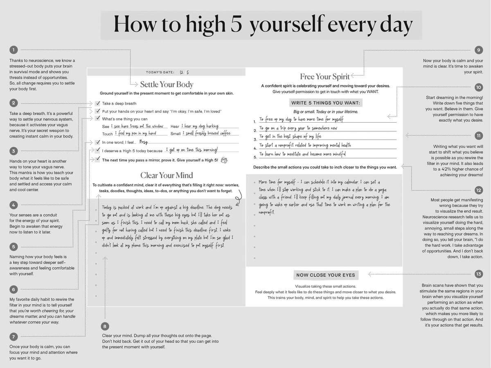
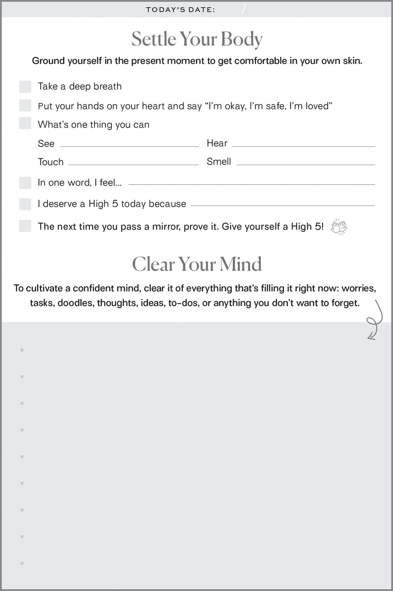
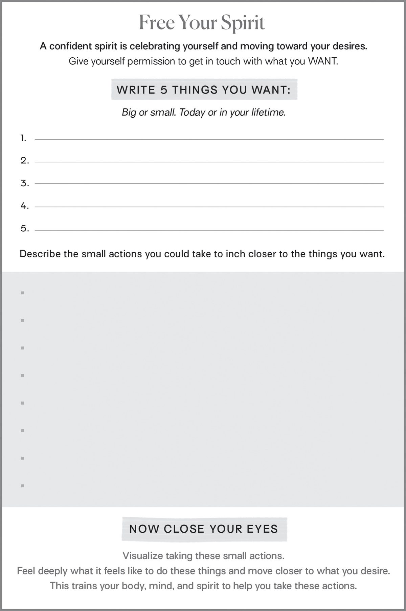